College Algebra
Real Numbers & Exponents
Almost everyone who struggles in algebra is not actually struggling with algebra — they are struggling with a handful of arithmetic rules that were taught quickly, years ago, and never revisited. This chapter goes back and sets those rules down carefully: what kinds of numbers exist, how they behave when you add and multiply them, what order operations happen in, and how exponents work. Nothing here is beyond you, and nothing here will be rushed. Every rule gets a reason, and every example gets worked out one visible step at a time. Get this chapter solid and the rest of algebra stops feeling like guesswork.
By the end of this chapter you can
- Name the natural, whole, integer, rational, irrational, and real numbers, and sort any given number into the right sets.
- Convert a repeating decimal into a fraction, and explain why that proves the number is rational.
- State and apply the commutative, associative, distributive, identity, and inverse properties by name.
- Explain why subtraction and division are not commutative or associative, and why division by zero is undefined.
- Evaluate any numerical expression using the correct order of operations, including signed numbers and grouping symbols.
- Apply the product, quotient, power, zero, and negative exponent rules, and state the restrictions each one carries.
- Write very large and very small numbers in scientific notation and multiply, divide, and add them.
Section 1The real number system

Start with counting, then notice what is missing
The first numbers anyone learns are the ones you count with: 1, 2, 3, 4, and onward forever. These are the natural numbers (often written N), sometimes called the counting numbers. They are enormously useful and badly incomplete. Try to count the sheep in an empty field and you need a number the naturals do not contain. Add zero and you have the whole numbers (W): 0, 1, 2, 3, and up.
Now try to record a temperature of eight degrees below zero, or a checking account that is 40 dollars overdrawn. You need numbers on the other side of zero. Attach the negatives and you have the integers (Z): …, −3, −2, −1, 0, 1, 2, 3, … Notice the pattern already forming. Each new set keeps everything the old set had and adds the piece that was missing. Every natural number is a whole number; every whole number is an integer. That nesting is exactly what the figure above is showing you.
Rational numbers: anything you can write as a fraction
Integers still cannot handle half a pizza. A rational number (Q, for quotient) is any number that can be written as a ratio of two integers — that is, as (a)/(b) where a and b are integers and b ≠ 0. That restriction is not decoration. Division by zero is undefined, so a denominator of zero is never allowed, and you will see that condition attached to fractions for the rest of your mathematical life.
Rationals are a bigger group than they first appear. Every integer is secretly a fraction: 7 = (7)/(1), and −12 = (−12)/(1). Every terminating decimal is a fraction: 0.25 = (25)/(100) = (1)/(4). And — this one surprises people — every repeating decimal is a fraction too. In decimal form, a rational number either stops or falls into a repeating block. There is no third option.
Irrational numbers, and the real number line
Some decimals never stop and never repeat. Those are the irrational numbers. The famous ones are √2 = 1.41421356…, π = 3.14159265…, and e = 2.71828182…, and none of them can be written as a fraction of two integers — that is a fact that can be proved, not just a failure to find the right fraction. Careful: √9 = 3 is perfectly rational. It is only the square roots that do not come out evenly that land in the irrational pile.
Put the rationals and the irrationals together and you get the real numbers (R) — every number that has a place on the number line, with no gaps anywhere. Every real number is exactly one point on that line, and every point on that line is exactly one real number. One last restriction worth knowing now: √−4 is not a real number, because no real number multiplied by itself gives a negative result. Even roots of negatives step outside the real number system entirely.
| Set | Symbol | What is in it | Examples | What it still cannot do |
|---|---|---|---|---|
| Natural | N | 1, 2, 3, 4, … | 7, 250 | No zero, no negatives, no fractions |
| Whole | W | 0, 1, 2, 3, … | 0, 19 | No negatives, no fractions |
| Integer | Z | …, −2, −1, 0, 1, 2, … | −12, 0, 45 | No fractions |
| Rational | Q | Any (a)/(b), a and b integers, b ≠ 0 | (3)/(4), −0.25, 0.666…, 8 | Cannot express √2 or π |
| Irrational | — | Decimals that never end and never repeat | π, √2, √10, e | Cannot be written as a fraction of integers |
| Real | R | All rationals and all irrationals together | Everything on the number line | Cannot express √−4 |
Worked example: turning a repeating decimal into a fraction
Here is the trick that proves repeating decimals are rational. Let us convert 0.727272… step by step, showing every line.
Step 1 — name the number. Let x = 0.727272…
Step 2 — shift the decimal past one full repeating block. The block "72" is two digits long, so multiply both sides by 102 = 100:
100x = 72.727272…
Step 3 — subtract the original equation from the new one. The infinite tails are identical, so they cancel:
100x − x = 72.727272… − 0.727272…
99x = 72
Step 4 — solve for x. Divide both sides by 99:
x = (72)/(99)
Step 5 — reduce. Both 72 and 99 are divisible by 9. 72 ÷ 9 = 8 and 99 ÷ 9 = 11, so
x = (8)/(11)
Step 6 — check. Divide 8 by 11 by hand: 8.000 ÷ 11 gives 0.7272… ✓ The original decimal comes back, so the answer is right. And since 8 and 11 are both integers with 11 ≠ 0, the number 0.727272… is rational — exactly as promised.
- The sets nest: natural ⊂ whole ⊂ integer ⊂ rational ⊂ real.
- A rational number is any (a)/(b) with integers a, b and b ≠ 0; in decimal form it terminates or repeats.
- An irrational number has a decimal that never ends and never repeats — π, e, and roots like √2 that do not come out evenly.
- The real numbers are all rationals plus all irrationals, filling the number line with no gaps; an even root of a negative is not real (√−4 has no real value), though odd roots such as the cube root of −8 do.
Section 2Properties of real numbers

Five rules you already use without naming
You have been using these properties for years without ever calling them by name. The reason to learn the names now is that textbooks, instructors, and test questions will ask you to justify a step, and "because that's how it works" is not an answer they accept. Each property is a promise about what you are allowed to rearrange without changing the value.
The commutative property says order does not matter: a + b = b + a, and a · b = b · a. The associative property says grouping does not matter: (a + b) + c = a + (b + c), and (ab)c = a(bc). The distributive property is the one that connects multiplication to addition: a(b + c) = ab + ac. It is the single most-used property in all of algebra, and it runs in both directions — expanding when you read it left to right, factoring when you read it right to left.
The identity properties name the two numbers that change nothing: a + 0 = a (zero is the additive identity) and a · 1 = a (one is the multiplicative identity). The inverse properties name the partner that undoes a number: a + (−a) = 0 (the opposite, or additive inverse) and a · (1)/(a) = 1 (the reciprocal, or multiplicative inverse) — and that second one carries a restriction, a ≠ 0, because (1)/(0) does not exist.
Where these properties do not apply
This is where careless work goes wrong. Commutative and associative apply to addition and multiplication only. Subtraction and division get neither. Check it yourself with real numbers: 8 − 3 = 5 but 3 − 8 = −5, so subtraction is not commutative. And 12 ÷ 4 = 3 but 4 ÷ 12 = (1)/(3), so division is not commutative either. Grouping fails the same way: (12 − 5) − 2 = 7 − 2 = 5, while 12 − (5 − 2) = 12 − 3 = 9. Same numbers, same order, different grouping, different answer.
There is a repair, though, and it is worth internalizing: rewrite subtraction as adding the opposite, and rewrite division as multiplying by the reciprocal. Once 8 − 3 becomes 8 + (−3), you are back in addition and all the addition properties return. This is why algebra teachers keep saying "subtraction is just addition in a costume."
| Property | Addition form | Multiplication form | Numerical check |
|---|---|---|---|
| Commutative | a + b = b + a | ab = ba | 4 + 9 = 9 + 4 = 13 |
| Associative | (a+b)+c = a+(b+c) | (ab)c = a(bc) | (2·5)·3 = 2·(5·3) = 30 |
| Distributive | a(b + c) = ab + ac | 6(10 + 3) = 60 + 18 = 78 | |
| Identity | a + 0 = a | a · 1 = a | −7 + 0 = −7; −7 · 1 = −7 |
| Inverse | a + (−a) = 0 | a · (1)/(a) = 1, a ≠ 0 | 5 + (−5) = 0; 5 · (1)/(5) = 1 |
Worked example: naming every property in a simplification
Simplify 3(2x − 5) + 4x, and justify each step by name.
Step 1 — rewrite the subtraction as adding the opposite so the distributive property applies cleanly:
3(2x − 5) + 4x = 3 [ 2x + (−5) ] + 4x
Step 2 — distribute the 3 across both terms (distributive property):
= 3(2x) + 3(−5) + 4x
Step 3 — do the arithmetic inside each product. 3 · 2 = 6, and 3 · (−5) = −15:
= 6x + (−15) + 4x
Step 4 — move 4x next to 6x (commutative property of addition):
= 6x + 4x + (−15)
Step 5 — group the like terms (associative property of addition):
= (6x + 4x) + (−15)
Step 6 — factor out the x (distributive property, read right to left):
= (6 + 4)x + (−15)
Step 7 — finish the arithmetic. 6 + 4 = 10, and "+ (−15)" is written as "− 15":
= 10x − 15
Check with a number. Let x = 2. Original: 3(2·2 − 5) + 4·2 = 3(4 − 5) + 8 = 3(−1) + 8 = −3 + 8 = 5. Simplified: 10(2) − 15 = 20 − 15 = 5. ✓ They match, so the simplification is trustworthy.
The distributive property as a mental-math shortcut
Watch how much work the distributive property saves. To compute 7 × 98 without a calculator, notice that 98 = 100 − 2:
7 × 98 = 7(100 − 2) = 7(100) − 7(2) = 700 − 14 = 686
That is the same property you will use to expand 7(x − 2) into 7x − 14. Numbers and variables obey identical rules — that is really the whole idea behind algebra.
- Commutative = order can change; associative = grouping can change. Both apply to addition and multiplication only.
- Distributive, a(b + c) = ab + ac, is the workhorse — it expands one way and factors the other.
- Identities: 0 for addition, 1 for multiplication. Inverses: −a for addition, (1)/(a) for multiplication with a ≠ 0.
- Rewrite subtraction as adding the opposite and division as multiplying by the reciprocal to get the properties back.
Section 3Order of operations

Why an order is needed at all
Take the expression 2 + 3 × 4. Add first and you get 5 × 4 = 20. Multiply first and you get 2 + 12 = 14. Both are defensible readings, and that is intolerable — an expression has to mean one thing. So mathematicians agreed on a fixed order, and everyone from your calculator to a spacecraft's flight software follows it. The correct value is 14, because multiplication outranks addition.
The agreed order is often remembered as PEMDAS: Parentheses, Exponents, Multiplication and Division, Addition and Subtraction. But that acronym misleads thousands of students every year, so read the next sentence twice. Multiplication and division sit on the same level and are done left to right as they appear; addition and subtraction sit on the same level and are also done left to right. PEMDAS has four levels, not six.
| Level | What you do | Direction | Watch out for |
|---|---|---|---|
| 1. Grouping | Parentheses, brackets, and hidden groupers: fraction bars, radicals, absolute value | Innermost first | A fraction bar groups the whole top and the whole bottom |
| 2. Exponents | Powers and roots | Right to left when powers are stacked | −32 is not the same as (−3)2; a stacked 232 means 29 = 512, not 82 = 64 |
| 3. Multiply / Divide | Both, at the same rank | Left to right | 8 ÷ 2 × 4 is 16, not 1 |
| 4. Add / Subtract | Both, at the same rank | Left to right | 10 − 4 + 3 is 9, not 3 |
Signed numbers, carefully
Most order-of-operations mistakes are really sign mistakes. Four rules cover nearly everything. When you multiply or divide, same signs give a positive and different signs give a negative: (−6)(−7) = 42, but (−6)(7) = −42. When you add two numbers with the same sign, add their sizes and keep the sign: −5 + (−8) = −13. When you add two numbers with different signs, subtract the smaller size from the larger and keep the sign of the larger: −9 + 4 = −5. And subtracting is adding the opposite: 6 − (−4) = 6 + 4 = 10.
Then there is the single most common exponent-with-signs trap. In −32, the exponent attaches only to the 3, so you square first and negate second: −32 = −(3 · 3) = −9. In (−3)2, the parentheses make −3 the base, so (−3)2 = (−3)(−3) = 9. Those two expressions differ by more than a sign — they are different questions.
| Expression | What the base is | Work | Value |
|---|---|---|---|
| −32 | 3 (the minus is applied after) | −(3 · 3) | −9 |
| (−3)2 | −3 | (−3)(−3) | 9 |
| (−3)3 | −3 | (−3)(−3)(−3) = 9 · (−3) | −27 |
| −33 | 3 | −(3 · 3 · 3) | −27 |
Worked example: a full expression, one step at a time
Evaluate 8 + 3(7 − 2 · 5)2 ÷ 9 − (−4). Nothing gets skipped.
Step 1 — work inside the parentheses first. Inside, multiplication outranks subtraction, so 2 · 5 = 10:
= 8 + 3(7 − 10)2 ÷ 9 − (−4)
Step 2 — finish inside the parentheses. 7 − 10 = −3:
= 8 + 3(−3)2 ÷ 9 − (−4)
Step 3 — exponents. The base is −3 because of the parentheses, and (−3)(−3) = 9:
= 8 + 3 · 9 ÷ 9 − (−4)
Step 4 — multiplication and division, left to right. The leftmost is 3 · 9 = 27:
= 8 + 27 ÷ 9 − (−4)
Step 5 — continue left to right. 27 ÷ 9 = 3:
= 8 + 3 − (−4)
Step 6 — addition and subtraction, left to right. 8 + 3 = 11:
= 11 − (−4)
Step 7 — subtracting a negative is adding a positive. 11 + 4 = 15.
Notice how much of the difficulty lived in Steps 3 and 7 — the two places signs mattered. That is typical.
Worked example: substituting values into an expression
Evaluate b2 − 4ac when a = 2, b = −5, and c = −3. (You will meet this exact expression again as the discriminant of the quadratic formula.)
Step 1 — substitute, and put every negative value in parentheses. This one habit prevents most sign errors:
b2 − 4ac = (−5)2 − 4(2)(−3)
Step 2 — exponents first. (−5)(−5) = 25:
= 25 − 4(2)(−3)
Step 3 — multiply left to right. 4 · 2 = 8:
= 25 − 8(−3)
Step 4 — keep multiplying. 8 · (−3) = −24:
= 25 − (−24)
Step 5 — subtract the negative. 25 + 24 = 49.
Worked example: the fraction bar as a grouping symbol
Evaluate (4 − 2(−3))/((−1)2 + 4). A fraction bar silently wraps parentheses around the entire numerator and the entire denominator, so both must be finished before you divide.
Step 1 — numerator, multiplication first. 2(−3) = −6, so the numerator is 4 − (−6) = 4 + 6 = 10.
Step 2 — denominator, exponent first. (−1)2 = (−1)(−1) = 1, so the denominator is 1 + 4 = 5.
Step 3 — now divide. (10)/(5) = 2.
Before dividing, always confirm the denominator is not zero. Here it is 5, so the expression is defined. If a denominator ever works out to 0, the expression is undefined and there is no value to report.
- Order: grouping → exponents → multiply/divide → add/subtract — four levels, not six.
- Multiplication/division and addition/subtraction are each done left to right, not in acronym order.
- Fraction bars, radicals, and absolute-value bars are invisible parentheses.
- −a2 squares first and negates second; (−a)2 squares the negative. Put substituted negatives in parentheses every time.
Section 4Integer exponents

What an exponent actually abbreviates
An exponent is nothing but repeated multiplication written compactly. In a5, the number a is the base and 5 is the exponent or power, and it means a · a · a · a · a — five factors of a. Every exponent rule you are about to learn can be rediscovered by writing out the factors and cancelling. That is worth knowing, because it means you never have to memorize a rule you cannot reconstruct.
Watch the product rule appear on its own. Take a3 · a2 and expand: (a · a · a)(a · a) = a · a · a · a · a = a5. Three factors plus two factors is five factors, so am · an = am+n. You add exponents when multiplying like bases — and note "like bases" is required. a3 · b2 cannot be combined at all.
The zero and negative exponent rules are not arbitrary
Students are often told "anything to the zero power is 1" with no explanation, and it feels like a made-up rule. It is not. Compute (23)/(23) two different ways. By plain arithmetic, (8)/(8) = 1. By the quotient rule, 23−3 = 20. Both answers describe the same quantity, so 20 = 1. The same argument works for any nonzero base, which is exactly why the rule carries the restriction a ≠ 0 — 00 is undefined, because the argument would require dividing 0 by 0.
Negative exponents come from the same move. Compute (23)/(25) both ways. Arithmetic: (8)/(32) = (1)/(4). Quotient rule: 23−5 = 2−2. So 2−2 = (1)/(4) = (1)/(22). In general a−n = (1)/(an) with a ≠ 0. Say this out loud once and it will stick: a negative exponent does not make a number negative — it moves the factor to the other side of the fraction bar. So 2−3 = (1)/(8), a positive number, and (1)/(x−4) = x4.
| Rule | Statement | Restriction | Example |
|---|---|---|---|
| Product | am · an = am+n | Same base | x4 · x6 = x10 |
| Quotient | (am)/(an) = am−n | a ≠ 0 | (x9)/(x2) = x7 |
| Power of a power | (am)n = amn | a ≠ 0 if either exponent is negative | (x3)5 = x15 |
| Power of a product | (ab)n = anbn | a, b ≠ 0 if n is negative | (3x)2 = 9x2 |
| Power of a quotient | ((a)/(b))n = (an)/(bn) | b ≠ 0 | ((x)/(2))3 = (x3)/(8) |
| Zero exponent | a0 = 1 | a ≠ 0 | (−5)0 = 1, but −50 = −1 |
| Negative exponent | a−n = (1)/(an) | a ≠ 0 | 3−2 = (1)/(9) |
Worked example: simplifying with negative exponents
Simplify (12x5y−3)/(3x−2y4) and write the answer with positive exponents only. State any restrictions.
Step 0 — state restrictions before you touch anything. The variables sit in denominators (and y−3 is itself a denominator in disguise), so we need x ≠ 0 and y ≠ 0. Everything below assumes that.
Step 1 — separate the expression into number, x, and y pieces:
= (12)/(3) · (x5)/(x−2) · (y−3)/(y4)
Step 2 — divide the numbers. 12 ÷ 3 = 4:
= 4 · (x5)/(x−2) · (y−3)/(y4)
Step 3 — apply the quotient rule to x. Subtract the exponents, and be careful with the double negative: 5 − (−2) = 5 + 2 = 7:
= 4x7 · (y−3)/(y4)
Step 4 — apply the quotient rule to y. −3 − 4 = −7:
= 4x7y−7
Step 5 — clear the negative exponent by moving that factor to the denominator:
= (4x7)/(y7) for x ≠ 0, y ≠ 0
Check with numbers. Let x = 1 and y = 2. Original: (12 · 1 · 2−3)/(3 · 1 · 24) = (12 · (1)/(8))/(3 · 16) = (1.5)/(48) = 0.03125. Answer: (4 · 1)/(27) = (4)/(128) = 0.03125. ✓
Worked example: a negative power of a whole group
Simplify (2a3b−1)−2, positive exponents only, with a ≠ 0 and b ≠ 0.
Step 1 — the outer exponent hits every factor inside (power of a product):
= 2−2 · (a3)−2 · (b−1)−2
Step 2 — multiply the exponents (power of a power). 3 · (−2) = −6 and (−1)(−2) = 2:
= 2−2 · a−6 · b2
Step 3 — evaluate 2−2. It equals (1)/(22) = (1)/(4):
= (1)/(4) · a−6 · b2
Step 4 — move a−6 to the denominator and collect:
= (b2)/(4a6) for a ≠ 0, b ≠ 0
A quick sanity check on Step 3: the answer must be positive, since 2−2 is a positive fraction. If you had written −4 there, the negative exponent trap caught you.
- Multiplying like bases adds exponents; dividing subtracts them; a power of a power multiplies them.
- a0 = 1 for a ≠ 0, because an ÷ an equals both 1 and a0.
- a−n = (1)/(an), a ≠ 0 — a negative exponent relocates a factor, it never makes the value negative.
- Powers distribute over products and quotients, never over sums: (x + y)2 ≠ x2 + y2.
Section 5Scientific notation

The form, and the one rule that defines it
Real quantities are frequently absurd to write out. The mass of Earth is about 5,970,000,000,000,000,000,000,000 kilograms; the diameter of a hydrogen atom is about 0.000000000106 meters. Counting those zeros is an invitation to error, so we use scientific notation: every number is written as
a × 10n, where 1 ≤ |a| < 10 and n is an integer
That condition on a is the whole rule, and it is strict: exactly one nonzero digit sits to the left of the decimal point. So 5.97 × 1024 is proper scientific notation, while 59.7 × 1023 and 0.597 × 1025 are equal in value but not in proper form. The exponent n is positive for large numbers (|a × 10n| of 10 or more), zero when the number itself already sits between 1 and 10, and negative for small ones (absolute value between 0 and 1), which gives you an instant sanity check on any answer.
Worked example: converting in both directions
Large number. Write 5,970,000,000,000,000,000,000,000 in scientific notation.
Step 1 — place the decimal so exactly one nonzero digit is in front of it. That puts it between the 5 and the 9: 5.97
Step 2 — count how many places the decimal moved. It started at the far right end of the number and moved left 24 places.
Step 3 — moving left means a positive exponent (you shrank a huge number, so the power of ten must build it back up):
5,970,000,000,000,000,000,000,000 = 5.97 × 1024 kg
Small number. Write 0.000000000106 in scientific notation.
Step 1 — place the decimal after the first nonzero digit. The first nonzero digit is 1, so the number becomes 1.06
Step 2 — count the move. From 0.000000000106 the decimal moved right 10 places to sit after the 1.
Step 3 — moving right means a negative exponent:
0.000000000106 = 1.06 × 10−10 m
Going back the other way. To expand 3.4 × 10−5, move the decimal 5 places left, filling with zeros: 0.000034. To expand 2.9 × 106, move 6 places right: 2,900,000.
| Written out | Scientific notation | Decimal moved | Sign of exponent |
|---|---|---|---|
| 7,500 | 7.5 × 103 | 3 places left | Positive (number > 10) |
| 62,000,000 | 6.2 × 107 | 7 places left | Positive |
| 1 | 1 × 100 | no move | Zero |
| 0.0045 | 4.5 × 10−3 | 3 places right | Negative (0 < number < 1) |
| 0.00000082 | 8.2 × 10−7 | 7 places right | Negative |
| −0.00031 | −3.1 × 10−4 | 4 places right | Negative (the sign of the number is separate) |
Worked example: multiplying and dividing
This is where Section 4 pays off — the exponent rules do all the work.
Multiply: (3.2 × 105)(4.5 × 10−9)
Step 1 — regroup so the decimals are together and the powers of ten are together (commutative and associative properties, doing real work):
= (3.2 × 4.5)(105 × 10−9)
Step 2 — multiply the decimals. 3.2 × 4.5 = 14.4
Step 3 — add the exponents (product rule). 5 + (−9) = −4:
= 14.4 × 10−4
Step 4 — fix the form. 14.4 is not between 1 and 10, so rewrite 14.4 as 1.44 × 101:
= 1.44 × 101 × 10−4 = 1.44 × 10−3
Divide: (6.4 × 107)/(8.0 × 10−3)
Step 1 — split into a decimal quotient and a power-of-ten quotient:
= (6.4)/(8.0) × (107)/(10−3)
Step 2 — divide the decimals. 6.4 ÷ 8.0 = 0.8
Step 3 — subtract the exponents (quotient rule), watching the double negative: 7 − (−3) = 7 + 3 = 10:
= 0.8 × 1010
Step 4 — fix the form. 0.8 is less than 1, so write it as 8.0 × 10−1:
= 8.0 × 10−1 × 1010 = 8.0 × 109
Worked example: adding requires a matching exponent
Add 4.2 × 106 + 3.5 × 105. You cannot simply add the decimals here, because the two terms are not measured in the same size unit — one is in millions, the other in hundred-thousands.
Step 1 — rewrite the smaller term to match the larger exponent. To raise the exponent from 5 to 6, shift the decimal one place left: 3.5 × 105 = 0.35 × 106. (Check: 0.35 × 1,000,000 = 350,000, and 3.5 × 100,000 = 350,000. ✓)
Step 2 — now both terms carry 106, so factor it out (distributive property):
= (4.2 + 0.35) × 106
Step 3 — add the decimals. 4.2 + 0.35 = 4.55:
= 4.55 × 106
Step 4 — confirm the form. 4.55 sits between 1 and 10, so the answer is already proper. Written out, that is 4,550,000 — which matches 4,200,000 + 350,000. ✓
- Proper form is a × 10n with 1 ≤ |a| < 10 and n an integer.
- Numbers of absolute value 10 or more get a positive exponent; those of absolute value between 0 and 1 get a negative one. The sign of the number itself is carried by a and never by n.
- To multiply, multiply the decimals and add the exponents; to divide, divide the decimals and subtract them.
- To add or subtract, first rewrite the terms so both carry the same power of ten, then factor it out.
The chapter in one breath
- The number sets nest: natural ⊂ whole ⊂ integer ⊂ rational ⊂ real, with the irrationals filling the remaining gaps on the number line.
- A number is rational exactly when it can be written (a)/(b) with integers and b ≠ 0 — equivalently, when its decimal terminates or repeats.
- Commutative (order) and associative (grouping) apply to addition and multiplication only; the distributive property links the two and both expands and factors.
- Identities are 0 and 1; inverses are −a and (1)/(a), and 0 has no reciprocal because division by zero is undefined.
- Order of operations runs grouping → exponents → multiply/divide → add/subtract, with the middle two levels each worked left to right.
- −a2 and (−a)2 are different expressions; parenthesize every negative you substitute.
- Exponents add when you multiply like bases, subtract when you divide, and multiply for a power of a power; a0 = 1 and a−n = (1)/(an), both requiring a ≠ 0.
- Scientific notation is a × 10n with 1 ≤ |a| < 10; multiplying adds exponents, dividing subtracts them, and adding requires matching them first.
ReferenceWords worth knowing
A quick reference for the vocabulary in this chapter — skim it now, and come back whenever a word in a problem statement slows you down.
- Absolute value
- The distance a number sits from zero on the number line, always zero or positive: |−7| = 7 and |7| = 7. The bars also act as a grouping symbol.
- Associative property
- Regrouping does not change the result: (a+b)+c = a+(b+c) and (ab)c = a(bc). Applies to addition and multiplication only.
- Base
- In an, the number a being repeatedly multiplied. In −32 the base is 3; in (−3)2 the base is −3.
- Commutative property
- Reordering does not change the result: a+b = b+a and ab = ba. Applies to addition and multiplication only.
- Distributive property
- a(b+c) = ab+ac. Read left to right it expands; read right to left it factors.
- Exponent
- The small raised number telling how many factors of the base to multiply; also called the power.
- Identity property
- Adding 0 or multiplying by 1 leaves a number unchanged: a+0 = a, a·1 = a.
- Integers
- The whole numbers together with their negatives: …, −2, −1, 0, 1, 2, …
- Irrational number
- A real number whose decimal never terminates and never repeats, so it cannot be written as a ratio of integers — for example π, e, and √2.
- Multiplicative inverse (reciprocal)
- The number that multiplies with a to give 1, namely (1)/(a). Defined only for a ≠ 0.
- Natural numbers
- The counting numbers 1, 2, 3, 4, … — no zero, no negatives, no fractions.
- Opposite (additive inverse)
- The number that adds with a to give 0, namely −a. Every real number has one, including 0 itself.
- Order of operations
- The agreed sequence for evaluating an expression: grouping, then exponents, then multiplication and division left to right, then addition and subtraction left to right.
- Power
- Either the exponent itself or the whole expression an, depending on context; "3 to the fourth power" means 34 = 81.
- Radical sign
- The symbol √ indicating a root. It acts as a grouping symbol, so everything under it is evaluated before the root is taken.
- Rational number
- Any number expressible as (a)/(b) with a and b integers and b ≠ 0; equivalently, any terminating or repeating decimal.
- Real number
- Any number with a location on the number line — every rational and every irrational number together.
- Repeating decimal
- A decimal in which a block of digits recurs forever, such as 0.727272… Every repeating decimal is rational.
- Scientific notation
- Writing a number as a × 10n with 1 ≤ |a| < 10 and n an integer.
- Undefined
- Having no value in the given number system — as with division by zero, 00, or √−4 within the real numbers.
- Whole numbers
- The natural numbers together with 0: 0, 1, 2, 3, …
Check yourself
Linear Equations & Inequalities
Almost everything you will ever do in algebra rests on one small, forgiving idea: whatever you do to one side of an equation, do the same thing to the other side, and the equation stays true. That single rule — the balance rule — is enough to solve every linear equation there is, from x + 3 = 7 to a formula bristling with letters. This chapter walks you through it slowly and out loud: how to isolate a variable, what to do when fractions show up, what it means when an equation has no answer or every answer, how to rearrange a formula for the letter you actually want, how to turn an English sentence into an equation, and how inequalities behave almost identically — with one famous exception. If algebra has ever felt like a bag of tricks, this is the chapter where it becomes a single method you can trust.
By the end of this chapter you can
- Solve a linear equation in one variable by isolating the variable, and check your answer by substitution.
- Clear fractions and decimals from an equation using the least common denominator.
- State restrictions on a variable and recognize an extraneous solution.
- Classify an equation as a conditional equation, an identity, or a contradiction, and state its solution set.
- Solve a literal equation or formula for any chosen variable, including when that variable appears twice.
- Translate an English sentence into an equation and solve applied problems about numbers, money, and travel.
- Solve linear inequalities and apply the sign-flip rule for multiplying or dividing by a negative.
- Solve compound and absolute-value inequalities and write solutions in interval notation.
Section 1Solving linear equations
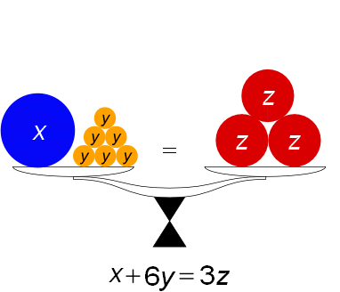
What "solve" actually means
An equation is a claim that two expressions are equal. A linear equation in one variable is one where the variable appears only to the first power — no x2, no √x, no x in a denominator by itself. To solve it is to find every number you could put in place of the variable that makes the claim true. That number is called a solution (or a root), and the collection of all of them is the solution set.
Here is the part that trips people up, so let us say it plainly: you are not "moving things around." You are performing the same operation on both sides of a balance. If the two sides start out equal and you add 5 to each of them, they are still equal. If you divide each of them by 3, they are still equal. Each such move produces a new equation with exactly the same solutions — an equivalent equation — and you keep making moves until the equation reads x = something.
| Legal move | Name | Small example |
|---|---|---|
| Add the same number to both sides | Addition property of equality | x − 5 = 3 → x = 8 |
| Subtract the same number from both sides | Subtraction property of equality | x + 5 = 3 → x = −2 |
| Multiply both sides by the same nonzero number | Multiplication property of equality | (x)/(4) = 3 → x = 12 |
| Divide both sides by the same nonzero number | Division property of equality | 4x = 12 → x = 3 |
| Rewrite one side without changing its value | Distributive property, combining like terms | 2(x + 3) → 2x + 6 |
Notice the word nonzero. Multiplying both sides by zero turns any equation into 0 = 0, which is true but useless; dividing by zero is not defined at all. Those are the only two forbidden moves in this whole chapter.
A worked example, every single step
Solve 5(x − 3) + 2 = 3x + 7. We will not skip anything.
- Clear the parentheses using the distributive property. 5(x − 3) means 5·x − 5·3 = 5x − 15, so the equation becomes 5x − 15 + 2 = 3x + 7.
- Combine like terms on each side separately. On the left, −15 + 2 = −13, so we have 5x − 13 = 3x + 7.
- Collect the variable terms on one side. Subtract 3x from both sides: 5x − 3x − 13 = 3x − 3x + 7, which simplifies to 2x − 13 = 7.
- Collect the constants on the other side. Add 13 to both sides: 2x − 13 + 13 = 7 + 13, which gives 2x = 20.
- Undo the coefficient. Divide both sides by 2: (2x)/(2) = (20)/(2), so x = 10.
- Check. Put 10 back into the original equation. Left side: 5(10 − 3) + 2 = 5(7) + 2 = 35 + 2 = 37. Right side: 3(10) + 7 = 30 + 7 = 37. Both sides are 37, so x = 10 is correct.
That order — parentheses, combine, variables one way, numbers the other way, divide, check — works every time. It is worth memorizing as a rhythm rather than a rule.
Fractions, decimals, and denominators that hold variables
Fractions are not harder, they are just noisier. The fix is to multiply every term on both sides by the least common denominator (LCD), which wipes the denominators out in one stroke. Solve (x)/(3) + (1)/(4) = (x)/(2) − (5)/(6).
- Find the LCD of 3, 4, 2, and 6. The smallest number all four divide into is 12.
- Multiply every term by 12. Term by term: 12·(x)/(3) = 4x; 12·(1)/(4) = 3; 12·(x)/(2) = 6x; 12·(5)/(6) = 10. The equation is now 4x + 3 = 6x − 10 — no fractions left.
- Collect variables. Subtract 4x from both sides: 3 = 2x − 10.
- Collect constants. Add 10 to both sides: 13 = 2x.
- Divide by 2. x = (13)/(2) = 6.5.
- Check with x = 6.5. Left: (6.5)/(3) + (1)/(4) = 2.1667 + 0.25 = 2.4167. Right: (6.5)/(2) − (5)/(6) = 3.25 − 0.8333 = 2.4167. They match, so x = (13)/(2) is correct.
Decimals work the same way in reverse: multiply both sides by 10, 100, or 1000 — whatever clears the longest decimal — and you are back to whole numbers.
If the variable ever sits under a fraction bar, you must first write down the values that would make a denominator zero. Those are restrictions (also called excluded values), and they are off the table before you solve a single step. Solve (3)/(x − 2) = (5)/(x + 4).
- Restrictions. x − 2 = 0 when x = 2, and x + 4 = 0 when x = −4. So x ≠ 2 and x ≠ −4.
- Multiply both sides by (x − 2)(x + 4), the LCD. The left becomes 3(x + 4) and the right becomes 5(x − 2), so 3(x + 4) = 5(x − 2).
- Distribute. 3x + 12 = 5x − 10.
- Collect. Subtract 3x: 12 = 2x − 10. Add 10: 22 = 2x. Divide by 2: x = 11.
- Check against the restrictions and the original. 11 is neither 2 nor −4, so it is allowed. Left: (3)/(11 − 2) = (3)/(9) = (1)/(3). Right: (5)/(11 + 4) = (5)/(15) = (1)/(3). Correct.
Sometimes the algebra hands you a number that a restriction forbids. Solve (x)/(x − 3) = (3)/(x − 3) + 4, where x ≠ 3. Multiply everything by (x − 3): x = 3 + 4(x − 3) = 3 + 4x − 12 = 4x − 9. Subtract 4x: −3x = −9, so x = 3. But x = 3 is exactly the excluded value — it makes the original denominators zero. It is an extraneous solution, and the honest answer is that this equation has no solution.
Checking is not optional busywork. Substituting your answer back into the original equation is the only step that can catch an arithmetic slip, a dropped negative, or an extraneous solution. It takes twenty seconds and it is the difference between "I think it's 10" and "it's 10."
- A linear equation has the variable to the first power only; solving means finding every value that makes it true.
- Every legal move — add, subtract, multiply by a nonzero number, divide by a nonzero number — is done to both sides and produces an equivalent equation.
- Clear fractions by multiplying every term by the LCD; clear decimals by multiplying by a power of ten.
- If the variable appears in a denominator, list the restrictions first and discard any extraneous solution that violates them.
Section 2Identities and contradictions

Not every equation has exactly one answer
Most of the equations you meet have exactly one solution, and it is easy to assume they all do. They do not. A linear equation in one variable has exactly one of three possible outcomes, and which one you get announces itself in the last line of your work.
A conditional equation is true only on the condition that the variable takes one particular value. That is the familiar case: you end with x = 7, and the solution set is {7}. An identity is true no matter what the variable is; the two sides were secretly the same expression all along. You end with something like 4 = 4, and the solution set is all real numbers. A contradiction is true for no value at all; you end with something plainly false like −15 = 1, and the solution set is empty, written ∅ or { }.
| Type | Your last line looks like | Solution set | Picture (graph each side) |
|---|---|---|---|
| Conditional equation | x = a number | One value, e.g. {7} | Two lines crossing at one point |
| Identity | A true statement with no variable, e.g. 4 = 4 or 0 = 0 | All real numbers, (−∞, ∞) | The same line drawn twice |
| Contradiction | A false statement with no variable, e.g. −15 = 1 | No solution, ∅ | Two parallel lines — never meet |
Three worked examples, side by side
(a) An identity. Solve 4(x + 1) − 2x = 2x + 4.
- Distribute on the left: 4x + 4 − 2x = 2x + 4.
- Combine like terms on the left: 4x − 2x = 2x, so 2x + 4 = 2x + 4.
- Subtract 2x from both sides: 4 = 4.
- The variable vanished and what is left is true. This is an identity; every real number works. Spot-check with x = 5: left = 4(6) − 10 = 24 − 10 = 14; right = 10 + 4 = 14. Now try x = −1: left = 4(0) + 2 = 2; right = −2 + 4 = 2. Both work, as promised.
(b) A contradiction. Solve 3(2x − 5) = 6x + 1.
- Distribute on the left: 6x − 15 = 6x + 1.
- Subtract 6x from both sides: −15 = 1.
- The variable vanished and what is left is false. This is a contradiction; there is no solution, ∅. Sanity check with x = 0: left = 3(−5) = −15; right = 1. They differ by 16 — and they will differ by 16 for every value of x, because both sides grow at the same rate of 6 per unit.
(c) A conditional equation. Solve 2(x + 6) = 3x + 5.
- Distribute: 2x + 12 = 3x + 5.
- Subtract 2x from both sides: 12 = x + 5.
- Subtract 5 from both sides: 7 = x, that is, x = 7.
- Check: left = 2(7 + 6) = 2(13) = 26; right = 3(7) + 5 = 21 + 5 = 26. One solution, {7}.
Why the picture explains everything
Think of each side of the equation as its own straight line. Case (c) gives the lines y = 2x + 12 and y = 3x + 5. Their slopes differ (2 versus 3), so they must cross somewhere — exactly once — and that crossing point is x = 7. Case (b) gives y = 6x − 15 and y = 6x + 1: identical slopes, different intercepts, so they are parallel and never touch. No crossing point means no solution. Case (a) gives y = 2x + 4 twice — one line lying perfectly on top of the other, touching at every single point, which is why every number is a solution.
When the variable disappears, do not panic — read the sentence. If both variable terms cancel, look at what remains. A true statement (7 = 7) means infinitely many solutions. A false statement (7 = 2) means none. Students often write "x = 0" here, which is wrong in both cases: zero is a specific answer, not "no answer."
- A conditional equation is true for one value; an identity is true for all values; a contradiction is true for none.
- If the variable cancels and leaves a true statement, the solution is all real numbers, (−∞, ∞).
- If the variable cancels and leaves a false statement, there is no solution, ∅.
- Graphically: crossing lines = one solution, the same line twice = infinitely many, parallel lines = none.
Section 3Literal equations and formulas

Same rules, more letters
A literal equation is an equation containing more than one letter — which is to say, a formula. A = lw, d = rt, and F = (9)/(5)C + 32 are all literal equations. To "solve a formula for a variable" means to rewrite it so that your chosen letter stands alone on one side, with everything else on the other.
Here is the reassuring news: there is nothing new to learn. You use precisely the same moves from Section 1. The only difference is psychological — the other letters look like they should be doing something, and they are not. They are just numbers you happen not to know yet. If you can solve 3x = 12 by dividing by 3, you can solve bx = 12 by dividing by b.
Worked examples, from easy to genuinely tricky
(a) Solve A = ½bh for h.
- The ½ is in the way. Multiply both sides by 2: 2A = 2 · ½bh = bh.
- h is multiplied by b, so divide both sides by b: (2A)/(b) = h.
- Result: h = (2A)/(b), provided b ≠ 0 (a triangle with no base has no height to find).
- Check with real numbers: if b = 10 and h = 6, then A = ½(10)(6) = 30. Our formula gives h = (2 · 30)/(10) = (60)/(10) = 6. Correct.
(b) Solve F = (9)/(5)C + 32 for C. This is the temperature-conversion formula, and it is the classic exercise because the order of undoing matters.
- C is multiplied by (9)/(5) and then 32 is added, so undo in reverse: subtract 32 first. F − 32 = (9)/(5)C.
- Now undo the multiplication by (9)/(5). Multiplying by a fraction is undone by multiplying by its reciprocal, (5)/(9): (5)/(9)(F − 32) = (5)/(9) · (9)/(5)C = C.
- Result: C = (5)/(9)(F − 32).
- Check with a number you know: water boils at F = 212. Then C = (5)/(9)(212 − 32) = (5)/(9)(180) = 5 · 20 = 100. Water boils at 100 degrees Celsius. Correct.
(c) Solve P = 2L + 2W for W.
- Subtract 2L from both sides: P − 2L = 2W.
- Divide both sides by 2: W = (P − 2L)/(2).
- Check with numbers: a rectangle with L = 9 and W = 4 has P = 2(9) + 2(4) = 18 + 8 = 26. Our formula gives W = (26 − 18)/(2) = (8)/(2) = 4. Correct.
- A common slip: writing W = P − L. You must divide the whole numerator by 2, not just part of it.
(d) The variable appears twice: solve ax + b = cx + d for x. This one looks intimidating and is the most useful pattern in the section.
- Gather every x-term on one side. Subtract cx from both sides: ax − cx + b = d.
- Move the non-x terms to the other side. Subtract b: ax − cx = d − b.
- Factor out x. This is the step people forget: x(a − c) = d − b. Factoring is what turns two x's into one.
- Divide by the whole parenthesis. x = (d − b)/(a − c), provided a ≠ c.
- Check against Section 1: solve 5x + 3 = 2x + 12 the long way and you get 3x = 9, x = 3. Now use the formula with a = 5, b = 3, c = 2, d = 12: x = (12 − 3)/(5 − 2) = (9)/(3) = 3. Same answer.
That restriction a ≠ c is Section 2 in disguise. If a = c, the two sides have the same slope, and the equation is either a contradiction (if b ≠ d) or an identity (if b = d). The algebra warns you by asking you to divide by zero.
| Formula | What it describes | Solved for another variable |
|---|---|---|
| A = lw | Area of a rectangle | w = (A)/(l), l ≠ 0 |
| P = 2L + 2W | Perimeter of a rectangle | W = (P − 2L)/(2) |
| A = ½bh | Area of a triangle | h = (2A)/(b), b ≠ 0 |
| C = 2πr | Circumference of a circle | r = (C)/(2π) |
| d = rt | Distance travelled | t = (d)/(r), r ≠ 0 |
| I = Prt | Simple interest | r = (I)/(Pt), P, t ≠ 0 |
| F = (9)/(5)C + 32 | Fahrenheit from Celsius | C = (5)/(9)(F − 32) |
| A = P(1 + rt) | Balance with simple interest | r = (A − P)/(Pt) |
When the letters confuse you, sneak numbers in. Stuck on how to solve V = πr2h for h? Ask yourself how you would solve 12 = 3h. You would divide by 3. So divide by πr2: h = (V)/(πr2). The letters never change the method — only how it feels.
- A literal equation is a formula with several letters; solving it for one letter uses the same properties of equality as any other equation.
- Undo operations in reverse order: strip away addition and subtraction first, then multiplication and division.
- Undo multiplication by a fraction by multiplying by its reciprocal.
- If the target variable appears twice, gather those terms, factor the variable out, then divide by the whole parenthesis — and note the restriction that keeps that parenthesis nonzero.
Section 4Applications

The five-step method
Word problems frighten people not because the algebra is hard — it is the easiest algebra in the chapter — but because the translation step is unpractised. So do it deliberately, in writing, every time. The method never changes.
- Read it twice and say out loud what is being asked for.
- Name the unknown. Write "Let x = ..." with units. If there are two unknowns, define the second in terms of the first.
- Translate the sentence into an equation, phrase by phrase.
- Solve using Section 1.
- Answer the question asked, in a sentence with units, and check against the original wording — not just against your own equation.
Step 5 has two halves for a reason. You can solve your equation perfectly and still be wrong if you found the brother's age when the question asked for the sister's, or if you solved for the discount when the question asked for the original price.
| English phrase | Translates to | Watch out for |
|---|---|---|
| the sum of a number and 7 | x + 7 | — |
| 7 more than a number | x + 7 | — |
| 7 less than a number | x − 7 | Not 7 − x — the order flips |
| a number decreased by 7 | x − 7 | — |
| twice a number | 2x | — |
| 4 more than twice a number | 2x + 4 | Not 2(x + 4) |
| the quotient of a number and 5 | (x)/(5) | Not (5)/(x) |
| 15% of a number | 0.15x | "of" means multiply; convert the percent |
| is, was, will be, gives | = | This is where the equals sign goes |
| consecutive integers | n, n + 1, n + 2 | — |
| consecutive even or odd integers | n, n + 2, n + 4 | Step by 2 for both even and odd |
Worked examples: ages, money, and travel
An age problem. Maya is 4 years older than twice her brother's age. Together their ages total 40. How old is each?
- Name the unknown. The brother's age is the simpler quantity, so let b = the brother's age in years.
- Express the other unknown. "4 years older than twice her brother's age" means 2b + 4, so Maya's age is 2b + 4.
- Translate. "Together their ages total 40" means b + (2b + 4) = 40.
- Solve. Combine like terms: 3b + 4 = 40. Subtract 4: 3b = 36. Divide by 3: b = 12.
- Answer both parts. The brother is 12. Maya is 2(12) + 4 = 24 + 4 = 28.
- Check against the words. Twice 12 is 24, and 4 more is 28 — Maya is indeed 4 years older than twice his age. And 12 + 28 = 40. Both sentences hold.
A percent problem. A jacket sells for 68 dollars after a 15% discount. What was the original price?
- Name the unknown. Let p = the original price in dollars. Note carefully: the discount is 15% of the original price, not of the 68 dollars.
- Translate. Original price minus the discount equals the sale price: p − 0.15p = 68.
- Combine like terms. p is 1p, so 1p − 0.15p = 0.85p. The equation is 0.85p = 68.
- Solve. Divide both sides by 0.85: p = (68)/(0.85) = 80.
- Check against the words. 15% of 80 is 0.15(80) = 12, and 80 − 12 = 68. Correct. The original price was 80 dollars.
Notice the shortcut hiding in step 3: taking 15% off is the same as keeping 85%, so you could have written 0.85p = 68 straight away. That shortcut is worth owning, because it also runs backwards for markups (a 15% increase is 1.15p).
A distance problem. Two cars leave the same rest stop at the same time and drive in opposite directions, one at 55 mi/h and the other at 65 mi/h. After how many hours are they 360 miles apart?
- Name the unknown. Let t = the time in hours. Both cars travel for the same t.
- Use d = rt for each car. The first covers 55t miles; the second covers 65t miles.
- Translate. They move in opposite directions, so the gap between them is the sum of the two distances: 55t + 65t = 360.
- Solve. Combine like terms: 120t = 360. Divide by 120: t = 3.
- Check against the words. In 3 hours the first car goes 55(3) = 165 miles and the second goes 65(3) = 195 miles. Since they went opposite ways, they are 165 + 195 = 360 miles apart. Correct: 3 hours.
One more pattern worth seeing, because it appears constantly: three consecutive even integers sum to 84. Let n be the smallest; the next two are n + 2 and n + 4. Then n + (n + 2) + (n + 4) = 84 becomes 3n + 6 = 84, so 3n = 78 and n = 26. The integers are 26, 28, and 30, and 26 + 28 + 30 = 84. Correct.
"Less than" reverses the order; "less" does not. "5 less than x" is x − 5, but "5 less x" and "the difference of 5 and x" are 5 − x. When a problem hinges on a phrase like this, test it with a number: is "5 less than 12" equal to 7 or to −7? It is 7 — so the form is x − 5.
- Always define the variable in writing, with units, before translating.
- Express a second unknown in terms of the first so the equation has only one variable.
- "Is" becomes =; "of" becomes multiply; "less than" and "subtracted from" reverse the order of the terms.
- Finish by answering the question that was asked and checking your numbers against the original sentences.
Section 5Linear inequalities
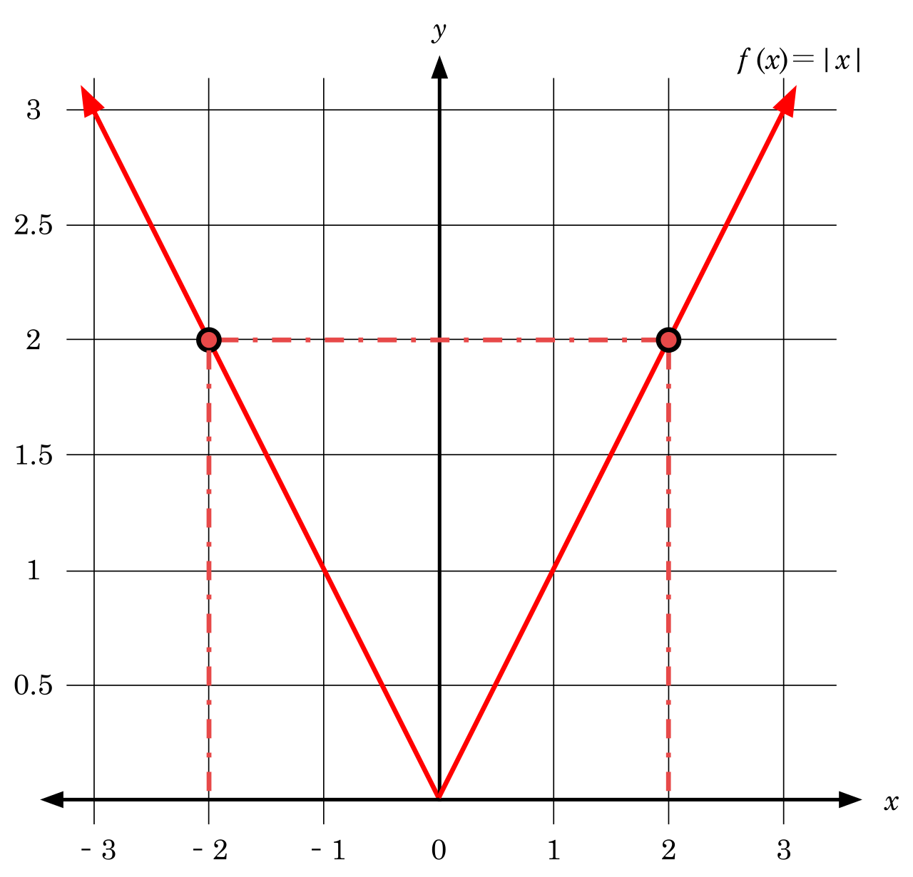
Almost the same rules — with one exception
An inequality uses <, >, ≤, or ≥ instead of =, and asks not "which value works" but "which values work." The answer is usually a whole stretch of the number line, which is why we report it in interval notation.
You solve an inequality with exactly the moves from Section 1 — add, subtract, multiply, divide on both sides — with one rule attached: if you multiply or divide both sides by a negative number, reverse the direction of the inequality symbol. Here is why, in one line you can verify yourself. Start with the true statement −2 < 3. Multiply both sides by −1 and you get 2 and −3. Is 2 < −3? No. Is 2 > −3? Yes. Multiplying by a negative reflects both numbers across zero, which swaps which one is larger, so the symbol must flip to keep the statement true.
Note what does not trigger a flip: adding or subtracting a negative number, or having a negative number sitting somewhere in the problem. The flip happens only when the operation you perform is multiplying or dividing by a negative.
| Inequality | Interval notation | On a number line |
|---|---|---|
| x < a | (−∞, a) | Open circle at a, shaded left |
| x ≤ a | (−∞, a] | Closed circle at a, shaded left |
| x > a | (a, ∞) | Open circle at a, shaded right |
| x ≥ a | [a, ∞) | Closed circle at a, shaded right |
| a < x < b | (a, b) | Both endpoints open, shaded between |
| a ≤ x ≤ b | [a, b] | Both endpoints closed, shaded between |
| x < a or x > b | (−∞, a) ∪ (b, ∞) | Two rays pointing outward |
| every real number | (−∞, ∞) | The entire line shaded |
Two conventions to lock in: a square bracket means the endpoint is included (it goes with ≤ and ≥), a parenthesis means it is excluded (it goes with < and >), and ∞ always gets a parenthesis because infinity is a direction, not a number you can reach.
Here is the flip in action. Solve −3x + 7 ≤ 22 and write the answer in interval notation.
- Subtract 7 from both sides. No flip — subtracting never flips. −3x ≤ 22 − 7, so −3x ≤ 15.
- Divide both sides by −3. This is division by a negative, so the symbol flips from ≤ to ≥: x ≥ (15)/(−3), so x ≥ −5.
- Write the interval. [−5, ∞) — bracket on −5 because ≥ includes it, parenthesis on infinity always.
- Check with two test values. Try x = 0, which is in our answer: −3(0) + 7 = 7, and 7 ≤ 22 is true. Good. Now try x = −10, which is not in our answer: −3(−10) + 7 = 30 + 7 = 37, and 37 ≤ 22 is false. Correctly excluded. Finally test the endpoint x = −5: −3(−5) + 7 = 15 + 7 = 22, and 22 ≤ 22 is true, so the endpoint does belong.
Compare that with an inequality where no flip is needed. Solve 5(x − 2) > 3x + 4: distribute to get 5x − 10 > 3x + 4; subtract 3x to get 2x − 10 > 4; add 10 to get 2x > 14; divide by positive 2, so no flip, giving x > 7, or (7, ∞). Check x = 8: 5(6) = 30 and 3(8) + 4 = 28, and 30 > 28 is true.
Compound inequalities: "and" versus "or"
A compound inequality joins two inequalities. An and statement (also called a conjunction) requires both parts to be true, so its solution is the overlap — usually a single interval sandwiched between two numbers. An or statement requires at least one part to be true, so its solution is everything either part covers — usually two separate rays joined with the union symbol ∪.
An "and" example. Solve −5 ≤ 2x − 1 < 7. Because the variable sits in the middle, work on all three parts at once.
- Add 1 to all three parts. −5 + 1 ≤ 2x − 1 + 1 < 7 + 1, giving −4 ≤ 2x < 8.
- Divide all three parts by 2. Two is positive, so nothing flips: −2 ≤ x < 4.
- Interval notation. [−2, 4) — closed on the left because of ≤, open on the right because of <.
- Check. Test x = 0 (inside): 2(0) − 1 = −1, and −5 ≤ −1 < 7 is true. Test x = 4 (the excluded endpoint): 2(4) − 1 = 7, and 7 < 7 is false, so 4 is correctly left out. Test x = −2 (the included endpoint): 2(−2) − 1 = −5, and −5 ≤ −5 is true, so −2 belongs.
An "or" example. Solve 3x + 2 < −4 or 3x + 2 > 8. Solve each piece separately. From the first: 3x < −6, so x < −2. From the second: 3x > 6, so x > 2. The solution is x < −2 or x > 2, written (−∞, −2) ∪ (2, ∞). Check x = −3: 3(−3) + 2 = −7, and −7 < −4 is true, so the "or" is satisfied. Check x = 0: 3(0) + 2 = 2, which is neither less than −4 nor greater than 8, so 0 is correctly excluded.
Absolute-value inequalities
Absolute value measures distance from zero, and distance is never negative. That single fact generates both rules. If |u| < c for some positive c, then u is within c units of zero, so −c < u < c — an "and," a middle interval. If |u| > c, then u is farther than c from zero, so u < −c or u > c — an "or," two outward rays. A memory hook that has saved many students: less than is an and, greator is an or.
Worked example (less than). Solve |2x − 3| ≤ 7.
- Rewrite without bars using the "and" form: −7 ≤ 2x − 3 ≤ 7.
- Add 3 to all three parts. −7 + 3 ≤ 2x ≤ 7 + 3, giving −4 ≤ 2x ≤ 10.
- Divide all three parts by 2. −2 ≤ x ≤ 5.
- Interval notation. [−2, 5].
- Check both endpoints. At x = 5: |2(5) − 3| = |10 − 3| = |7| = 7, and 7 ≤ 7 is true. At x = −2: |2(−2) − 3| = |−4 − 3| = |−7| = 7, also true. And at x = 6 (outside): |12 − 3| = 9, and 9 ≤ 7 is false, correctly excluded.
Worked example (greater than). Solve |3x + 1| > 5.
- Rewrite without bars using the "or" form: 3x + 1 < −5 or 3x + 1 > 5.
- Solve the left branch. Subtract 1: 3x < −6. Divide by 3: x < −2.
- Solve the right branch. Subtract 1: 3x > 4. Divide by 3: x > (4)/(3).
- Interval notation. (−∞, −2) ∪ ((4)/(3), ∞).
- Check. Test x = 2 (in the right branch): |3(2) + 1| = |7| = 7, and 7 > 5 is true. Test x = −3 (in the left branch): |−9 + 1| = |−8| = 8, and 8 > 5 is true. Test x = 0 (in neither): |0 + 1| = 1, and 1 > 5 is false, correctly excluded.
Finally, three special cases that follow straight from "distance is never negative." |u| < −3 has no solution (∅), because no absolute value can be smaller than a negative number. |u| > −3 is true for all real numbers, (−∞, ∞), because every absolute value already beats a negative. And |u| < 0 is also empty, while |u| ≥ 0 is all reals. Recognize these by inspection rather than by grinding through the algebra — splitting them into cases produces nonsense.
Isolate the absolute value before you split. In 3|x − 1| + 4 < 19, you must first subtract 4 to get 3|x − 1| < 15 and then divide by 3 to get |x − 1| < 5, and only then write −5 < x − 1 < 5, giving −4 < x < 6, or (−4, 6). Splitting too early is the single most common error in this section.
- Inequalities use the same solving moves as equations, except that multiplying or dividing by a negative reverses the symbol.
- Report answers in interval notation: brackets include endpoints, parentheses exclude them, and ∞ always takes a parenthesis.
- A compound and gives an overlap (one interval); a compound or gives a union of two rays.
- |u| < c becomes −c < u < c (an "and"); |u| > c becomes u < −c or u > c (an "or"); isolate the bars first.
The chapter in one breath
- Solving a linear equation means applying the same legal move to both sides — add, subtract, multiply or divide by a nonzero number — until the variable stands alone, then checking in the original.
- Clear fractions by multiplying every term by the LCD and decimals by a power of ten; the equation that remains is an ordinary whole-number problem.
- If a variable sits in a denominator, list the restrictions first and throw out any extraneous solution that lands on one.
- Every linear equation is a conditional equation (one solution), an identity (all real numbers, when the variable cancels leaving a true statement), or a contradiction (no solution, ∅, when it cancels leaving a false one).
- A literal equation is solved for a chosen letter by the same moves; when that letter appears twice, gather its terms, factor it out, and divide by the whole parenthesis.
- Word problems yield to a fixed routine: define the variable, express other unknowns in terms of it, translate phrase by phrase, solve, and answer the question that was actually asked.
- Inequalities behave exactly like equations except that multiplying or dividing by a negative flips the symbol; answers are written in interval notation.
- Compound inequalities are overlaps ("and") or unions ("or"), and absolute-value inequalities convert to one or the other — less than gives an "and," greater than gives an "or."
ReferenceWords worth knowing
A quick reference for the vocabulary in this chapter — read it through now, then come back to it any time a word in a problem stops you cold.
- Absolute value
- The distance of a number from zero on the number line, written |x|; it is never negative, so |−7| = 7 and |7| = 7.
- Coefficient
- The number multiplying a variable. In 5x − 3, the coefficient of x is 5.
- Compound inequality
- Two inequalities joined by and (solution = the overlap) or or (solution = the union).
- Conditional equation
- An equation true only for particular value(s) of the variable — the ordinary case, with exactly one solution for a linear equation.
- Constant
- A term with no variable in it, such as the −3 in 5x − 3.
- Contradiction
- An equation true for no value of the variable; solving it produces a false statement such as 4 = 9, and the solution set is empty (∅).
- Distributive property
- The rule a(b + c) = ab + ac, used to clear parentheses.
- Equivalent equations
- Two equations with exactly the same solution set; every legal move you make produces one.
- Extraneous solution
- A value produced by correct algebra that nevertheless fails in the original equation — typically because it violates a restriction.
- Identity
- An equation true for every allowed value of the variable; solving it produces a true statement such as 6 = 6, and the solution set is all real numbers.
- Inequality
- A statement comparing two expressions with <, >, ≤, or ≥ rather than =.
- Interval notation
- A compact way to write a solution set: brackets [ ] include an endpoint, parentheses ( ) exclude it, and ∞ always takes a parenthesis.
- Least common denominator (LCD)
- The smallest expression every denominator divides into; multiplying an equation by it clears all fractions at once.
- Linear equation
- An equation in which the variable appears only to the first power, with no variable under a radical or alone in a denominator.
- Literal equation
- An equation containing two or more letters — a formula — which can be solved for any one of them.
- No solution (empty set)
- The solution set of a contradiction, written ∅ or { }; it is not the same as the solution x = 0.
- Properties of equality
- The rules permitting you to add, subtract, multiply, or divide both sides of an equation by the same quantity (nonzero for multiplying and dividing).
- Restriction (excluded value)
- A value the variable may not take because it would make a denominator zero or otherwise undefine the expression.
- Solution (root)
- A value that makes an equation a true statement when substituted for the variable.
- Solution set
- The collection of all solutions, written in set or interval notation.
- Term
- A single number, variable, or product of them, separated from its neighbours by + or − signs. In 5x − 3 there are two terms.
- Variable
- A letter standing for an unknown or changing quantity.
Check yourself
Graphs & Lines
Algebra stops being a pile of symbols the moment you can see it. A graph turns an equation into a picture, and the simplest, most useful picture in all of mathematics is a straight line. In this chapter you will learn to place a point on the plane, measure how steeply a line climbs or falls, write that line down in three interchangeable ways, recognize when two lines run side by side or cross at a perfect corner, and finally use a line to describe something real — a price, a distance, a rate. Every idea here is built from arithmetic you already own: subtraction, division, and the willingness to check your answer. If you have ever felt lost in a math class, this is a good place to get found, because almost everything is verifiable — you can plug your answer back in and watch it work.
By the end of this chapter you can
- Plot an ordered pair on the coordinate plane and name the quadrant it lands in.
- Find the x-intercept and y-intercept of a linear equation algebraically.
- Compute slope from two points and interpret it as a rate of change.
- Tell positive, negative, zero, and undefined slope apart, and write the equations of horizontal and vertical lines.
- Move fluently among slope-intercept, point-slope, and standard form.
- Write the equation of a line through two given points and check it.
- Use slope relationships to build lines parallel or perpendicular to a given line.
- Build a linear model from two data points and state what the slope and intercept mean in context, with units.
Section 1The coordinate plane

Two number lines, one address system
Take the number line you have known since grade school and lay it flat. Now take a second number line and stand it up, crossing the first at zero. That is the whole invention. The horizontal line is the x-axis, the vertical line is the y-axis, and the crossing point is the origin, written (0, 0). Together they form the Cartesian coordinate plane, named for René Descartes, and their only job is to give every point in the flat plane a unique two-number address.
That address is an ordered pair, written (x, y). The word ordered is doing real work: the first number is always the horizontal move and the second is always the vertical move. To plot (4, −3), start at the origin, walk 4 to the right because 4 is positive, then walk 3 down because −3 is negative, and put your dot there. To plot (−3, 4), start at the origin, walk 3 to the left, then 4 up. Those are two completely different points, which is exactly why the order matters.
A useful habit: say the moves out loud as you make them. "Four right, three down." Students who narrate the two moves make far fewer sign mistakes than students who try to eyeball it.
The four quadrants
The two axes chop the plane into four regions called quadrants, numbered with Roman numerals starting in the upper right and going counterclockwise. That counterclockwise direction is arbitrary but universal, so it is worth memorizing once. The quadrant a point lands in is determined entirely by the two signs in its address — you never have to look at a picture to know the answer.
| Quadrant | Where | Sign of x | Sign of y | Example point |
|---|---|---|---|---|
| I | Upper right | positive (+) | positive (+) | (3, 2) |
| II | Upper left | negative (−) | positive (+) | (−3, 2) |
| III | Lower left | negative (−) | negative (−) | (−3, −2) |
| IV | Lower right | positive (+) | negative (−) | (3, −2) |
| None | On an axis | x = 0 or y = 0 | (0, 5), (−4, 0), (0, 0) | |
Notice that last row. A point sitting on an axis is not in any quadrant — the axes are the fences between the yards, not part of any yard. So (0, 5) is on the y-axis, (−4, 0) is on the x-axis, and the origin is on both. Test questions love this.
Intercepts: where a graph meets the axes
An intercept is a point where a graph crosses an axis, and the two kinds are defined by a single fact each. The x-intercept is where the graph crosses the x-axis, and every point on the x-axis has y = 0. The y-intercept is where the graph crosses the y-axis, and every point on the y-axis has x = 0. That gives you a recipe with no memorization required:
- To find the x-intercept, set y = 0 and solve for x.
- To find the y-intercept, set x = 0 and solve for y.
Fully worked example. Find both intercepts of 2x + 5y = 20, and use them to graph the line.
Step 1 — find the x-intercept by setting y = 0.
- 2x + 5y = 20 → 2x + 5(0) = 20
- 5(0) = 0, so the equation becomes 2x + 0 = 20, that is 2x = 20
- Divide both sides by 2: (2x)/(2) = (20)/(2), so x = 10
- The x-intercept is the point (10, 0).
Step 2 — find the y-intercept by setting x = 0.
- 2(0) + 5y = 20
- 2(0) = 0, so 0 + 5y = 20, that is 5y = 20
- Divide both sides by 5: (5y)/(5) = (20)/(5), so y = 4
- The y-intercept is the point (0, 4).
Step 3 — check both answers by substituting them back into the original equation.
- Check (10, 0): 2(10) + 5(0) = 20 + 0 = 20. True. ✓
- Check (0, 4): 2(0) + 5(4) = 0 + 20 = 20. True. ✓
Step 4 — graph. Plot (10, 0) and (0, 4), lay a straightedge across them, and draw. Two points determine a line, so an intercept pair is often the fastest possible graph. A third point is a cheap insurance policy: try x = 5, which gives 2(5) + 5y = 20 → 10 + 5y = 20 → 5y = 10 → y = 2, so (5, 2) should land right on your line — and it does, exactly halfway between the intercepts.
- An ordered pair (x, y) is horizontal move first, vertical move second — order is not optional.
- Quadrants run I, II, III, IV counterclockwise from the upper right; signs alone determine the quadrant.
- Points on an axis belong to no quadrant.
- x-intercept: set y = 0 and solve. y-intercept: set x = 0 and solve. Report each as a point.
Section 2Slope

What slope actually measures
Slope answers one question: when I move to the right, how fast does the line go up or down? It is a ratio — vertical change divided by horizontal change — and it is usually called rise over run. Rise is how far you climbed (negative if you fell). Run is how far you traveled sideways. Slope is written with the letter m, a convention with no good explanation that we are all stuck with.
Given any two distinct points (x1, y1) and (x2, y2) on a line:
m = (rise)/(run) = (y2 − y1)/(x2 − x1), provided x2 ≠ x1
That restriction — x2 ≠ x1 — is not decoration. If the two x-values are equal, the denominator is zero, and division by zero is undefined. We will see in a moment exactly what kind of line does that.
Two comforts. First, it does not matter which point you call "point 1." Swap them and both the top and the bottom flip sign, and the two negatives cancel. Second, it does not matter which two points on the line you pick — a straight line has the same steepness everywhere, which is precisely what makes it straight. Slope is the line's one defining number.
A fully worked slope calculation
Fully worked example. Find the slope of the line through (−3, 7) and (5, −1).
Step 1 — label the points so the substitution is mechanical.
- x1 = −3, y1 = 7 (the first point)
- x2 = 5, y2 = −1 (the second point)
Step 2 — substitute into the formula, writing the parentheses even when they look silly.
- m = (y2 − y1)/(x2 − x1) = (−1 − 7)/(5 − (−3))
Step 3 — do the top and the bottom separately, out loud.
- Top: −1 − 7 = −8. (Starting at −1 and subtracting 7 moves you further left on the number line.)
- Bottom: 5 − (−3) = 5 + 3 = 8. (Subtracting a negative is adding — this is the single most common place to slip.)
Step 4 — divide.
- m = (−8)/(8) = −1
Step 5 — check by reversing the labels. Call (5, −1) the first point instead:
- m = (7 − (−1))/(−3 − 5) = (7 + 1)/(−8) = (8)/(−8) = −1. Same answer. ✓
What it means. A slope of −1 says: every 1 unit you move right, the line drops 1 unit. It falls at a 45° angle.
One more, with a fraction that does not simplify to a whole number. Through (2, −5) and (6, 1):
- m = (1 − (−5))/(6 − 2) = (1 + 5)/(4) = (6)/(4) = (3)/(2)
Always reduce. A slope of (3)/(2) is a clean instruction: run 2 right, rise 3 up. Left as 6/4 it still works — run 4, rise 6 lands on the same line — but reduced is the standard form and the one graders expect.
Four kinds of slope
Every line falls into exactly one of four categories, and you should be able to name the category before you finish the arithmetic.
| Slope | Look of the line | Worked example | Equation type |
|---|---|---|---|
| Positive (m > 0) | Rises left to right (uphill) | (1, 2) & (4, 8): m = (8 − 2)/(4 − 1) = (6)/(3) = 2 | Slanted, e.g. y = 2x |
| Negative (m < 0) | Falls left to right (downhill) | (−3, 7) & (5, −1): m = (−8)/(8) = −1 | Slanted, e.g. y = −x + 4 |
| Zero (m = 0) | Perfectly flat — horizontal | (−4, 3) & (6, 3): m = (3 − 3)/(6 − (−4)) = (0)/(10) = 0 | y = 3 |
| Undefined | Straight up and down — vertical | (2, −1) & (2, 5): m = (5 − (−1))/(2 − 2) = (6)/(0) — undefined | x = 2 |
Study the last two rows side by side, because they are the pair that gets confused. Zero slope means the rise is zero — you moved sideways and never went up. That is a real number, zero, and the line is horizontal with equation y = (some number). Undefined slope means the run is zero — you went up without going sideways at all — and there is no number that equals 6 divided by 0. The line is vertical with equation x = (some number). "Zero" and "no slope" are not the same thing, and saying "no slope" out loud is how the confusion starts, so prefer the word undefined.
Slope as a rate of change
Outside of a graph, slope has a much more familiar name: a rate. Miles per hour, dollars per page, degrees per minute, milligrams per kilogram — every "per" you have ever said is a slope. The units tell you exactly what the number means: slope has units of (y-units) per (x-unit). If x is measured in hours and y in miles, a slope of 55 is 55 miles per hour. If x is pages and y is dollars, a slope of 0.18 is 18 cents per page. This is the bridge from Section 2 to Section 5, and it is the reason lines matter at all.
- m = (y2 − y1)/(x2 − x1), valid only when x2 ≠ x1.
- Order of the two points does not matter; consistency of order within the fraction does.
- Positive rises, negative falls, zero is horizontal (y = k), undefined is vertical (x = k).
- Slope is a rate of change: its units are always y-units per one x-unit.
Section 3Forms of a line

Three outfits, one line
A single line can be written in several algebraically equivalent ways. They describe the same set of points; they just make different information easy to read at a glance. Learning all three is not busywork — each one is the fastest tool for a particular job.
| Form | Looks like | What it hands you free | Best used when |
|---|---|---|---|
| Slope-intercept | y = mx + b | Slope m and y-intercept (0, b) | Graphing fast; comparing two lines |
| Point-slope | y − y1 = m(x − x1) | A point (x1, y1) and the slope | Building a line from a point and a slope |
| Standard | Ax + By = C | Both intercepts quickly; no fractions needed | Systems of equations; tidy final answers |
| Horizontal | y = k | Slope 0 | Flat lines (a special case of all three) |
| Vertical | x = k | Slope undefined | Vertical lines — cannot be written as y = mx + b |
In slope-intercept form, y = mx + b, the number multiplying x is the slope and the number standing alone is the y-value where the line crosses the y-axis. In y = −4x + 9, the slope is −4 and the y-intercept is (0, 9) — no work required. To graph it: put a dot at (0, 9), then use the slope −4 = (−4)/(1) to step 1 right and 4 down to (1, 5), and connect.
In standard form, Ax + By = C, both variables sit on the left and the constant sits alone on the right. By convention A, B, and C are integers with no common factor and A is non-negative. Standard form is where the intercept recipe from Section 1 shines, and it is the form vertical lines can live in (x = 2 is 1x + 0y = 2) even though slope-intercept form cannot hold them.
Point-slope: the workhorse
Point-slope form deserves special affection because it is the form you build with. Rearrange the slope formula: if (x, y) is any point on the line and (x1, y1) is a known point, then m = (y − y1)/(x − x1). Multiply both sides by (x − x1) and you get y − y1 = m(x − x1). That is it — point-slope form is just the slope formula with the denominator cleared. Whenever a problem gives you a point and a slope, or two points, start here.
Fully worked example. Write the equation of the line through (−2, 5) with slope (−3)/(4). Give it in point-slope, slope-intercept, and standard form.
Step 1 — write point-slope, substituting carefully. Here x1 = −2, y1 = 5, m = (−3)/(4).
- y − y1 = m(x − x1)
- y − 5 = (−3)/(4) · (x − (−2))
- Simplify the inside: x − (−2) = x + 2
- y − 5 = (−3)/(4) · (x + 2) ← point-slope form, done
Step 2 — distribute to reach slope-intercept form.
- (−3)/(4) · x = (−3x)/(4)
- (−3)/(4) · 2 = (−6)/(4) = (−3)/(2)
- So y − 5 = (−3x)/(4) − (3)/(2)
Step 3 — add 5 to both sides and combine the constants over a common denominator.
- y = (−3x)/(4) − (3)/(2) + 5
- Rewrite 5 as (10)/(2) so the fractions match: −(3)/(2) + (10)/(2) = (7)/(2)
- y = (−3)/(4) · x + (7)/(2) ← slope-intercept form. Slope (−3)/(4), y-intercept (0, (7)/(2)) = (0, 3.5)
Step 4 — clear the fractions to reach standard form. The denominators are 4 and 2, so multiply every term by 4.
- 4 · y = 4 · (−3x)/(4) + 4 · (7)/(2)
- 4y = −3x + 14
- Add 3x to both sides so A is positive: 3x + 4y = 14
- 3x + 4y = 14 ← standard form (integers, no common factor, A > 0)
Step 5 — check the original point in all three forms. Substitute x = −2 and see whether y comes out 5.
- Point-slope: y − 5 = (−3)/(4) · (−2 + 2) = (−3)/(4) · 0 = 0, so y = 5. ✓
- Slope-intercept: y = (−3)/(4) · (−2) + (7)/(2) = (6)/(4) + (7)/(2) = (3)/(2) + (7)/(2) = (10)/(2) = 5. ✓
- Standard: 3(−2) + 4(5) = −6 + 20 = 14. ✓
Three forms, one line, all verified.
Two points to an equation
If you are handed two points instead of a slope, you simply do Section 2 first and then Section 3. Nothing new is required.
Fully worked example. Find the equation of the line through (1, −2) and (4, 7).
- Step 1 — slope. m = (7 − (−2))/(4 − 1) = (7 + 2)/(3) = (9)/(3) = 3
- Step 2 — point-slope, using (1, −2). y − (−2) = 3(x − 1), which tidies to y + 2 = 3(x − 1)
- Step 3 — distribute. y + 2 = 3x − 3
- Step 4 — subtract 2 from both sides. y = 3x − 3 − 2 = 3x − 5
- Step 5 — check the point you did NOT use. At x = 4: y = 3(4) − 5 = 12 − 5 = 7. ✓ The line passes through (4, 7) as required.
Notice Step 5. Using the unused point as your check is free insurance: if the arithmetic had gone wrong anywhere, that substitution would have caught it. Had we started with (4, 7) instead, we would have gotten y − 7 = 3(x − 4) → y = 3x − 12 + 7 = 3x − 5 — the identical line. Either point works.
Reading slope out of standard form
Given 5x − 2y = 8, you cannot see the slope. Solve for y and it appears. One condition first: solving Ax + By = C for y requires dividing by B, so this move is legal only when B ≠ 0. If B = 0 the equation is Ax = C, a vertical line, which has no slope-intercept form at all. Here B = −2, so we are safe:
- Subtract 5x: −2y = −5x + 8
- Divide every term by −2: (−2y)/(−2) = (−5x)/(−2) + (8)/(−2)
- y = (5)/(2) · x − 4
- So m = (5)/(2) and the y-intercept is (0, −4).
The dangerous step is dividing by a negative: both the x-term and the constant change sign. Divide term by term, in writing, every time.
- y = mx + b displays the slope and y-intercept; y − y1 = m(x − x1) is built from a point and a slope; Ax + By = C is the tidy integer form.
- All three describe the same line; converting is pure algebra, and you can check by substituting a known point.
- To clear fractions into standard form, multiply every term by the common denominator.
- A vertical line x = k has no slope-intercept form at all.
Section 4Parallel and perpendicular lines

Parallel means equal slopes
Two lines are parallel when they never intersect, no matter how far you extend them. Since slope is the one number that controls direction, this happens exactly when the slopes match: m1 = m2. One caution — equal slopes and equal y-intercepts do not give you two parallel lines; they give you the same line drawn twice. For genuinely parallel lines you need equal slopes and different intercepts.
Perpendicular means negative reciprocal slopes
Two lines are perpendicular when they cross at a right angle (90°). The slope condition is:
m1 · m2 = −1, equivalently m2 = −1/m1 (provided m1 ≠ 0)
The condition m1 ≠ 0 on that second version is the same excluded-value habit from the slope formula: the reciprocal form divides by m1, so it says nothing at all when m1 = 0. That gap is exactly the horizontal-line case treated below.
In plain language: flip the fraction and change the sign. That is what "negative reciprocal" means, and doing it in two deliberate motions prevents the classic half-error of flipping without negating. If m1 = (2)/(3), flip to (3)/(2), then negate to get (−3)/(2). If m1 = −5, first write it as (−5)/(1), flip to (1)/(−5) = −(1)/(5), then negate to get (1)/(5). Confirm: (−5) · (1)/(5) = (−5)/(5) = −1. ✓
There is one honest exception. A horizontal line (m = 0) and a vertical line (slope undefined) clearly meet at a right angle, but you cannot multiply 0 by "undefined" and get −1. The product rule simply does not apply to that pair — they are perpendicular by geometry, not by arithmetic. Handle vertical and horizontal lines by picture, not by formula.
| Relationship | Slope rule | Given m1 = (2)/(3) | Given m1 = −4 |
|---|---|---|---|
| Parallel | m2 = m1 | m2 = (2)/(3) | m2 = −4 |
| Perpendicular | m2 = −1/m1 | m2 = (−3)/(2) | m2 = (1)/(4) |
| Neither | Slopes unequal and product ≠ −1 | e.g. m2 = 5 | e.g. m2 = 2 |
| Same line | Same m and same b | y = 2x + 1 and 4x − 2y = −2 are one line | |
| Horizontal & vertical | Perpendicular by geometry | y = 3 and x = −1 meet at a right angle; the product rule does not apply | |
A fully worked pair
Fully worked example. Line L has equation 2x − 3y = 12. Find (a) the line parallel to L through (6, −1) and (b) the line perpendicular to L through (6, −1). Give both in slope-intercept form.
Step 1 — get the slope of L by solving for y.
- 2x − 3y = 12
- Subtract 2x: −3y = −2x + 12
- Divide every term by −3: (−3y)/(−3) = (−2x)/(−3) + (12)/(−3)
- y = (2)/(3) · x − 4, so mL = (2)/(3)
Step 2(a) — the parallel line has the same slope, (2)/(3). Use point-slope with (6, −1):
- y − (−1) = (2)/(3) · (x − 6), that is y + 1 = (2)/(3) · (x − 6)
- Distribute: (2)/(3) · 6 = (12)/(3) = 4, so y + 1 = (2)/(3) · x − 4
- Subtract 1: y = (2)/(3) · x − 5
- Check the point: at x = 6, y = (2)/(3) · 6 − 5 = 4 − 5 = −1. ✓
- Check it is truly parallel: slope (2)/(3) matches L, and the intercept −5 differs from L's −4, so it is a different line. ✓
Step 2(b) — the perpendicular line uses the negative reciprocal. Flip (2)/(3) to (3)/(2), then negate: m⊥ = (−3)/(2).
- y + 1 = (−3)/(2) · (x − 6)
- Distribute: (−3)/(2) · (−6) = (18)/(2) = 9, so y + 1 = (−3)/(2) · x + 9
- Subtract 1: y = (−3)/(2) · x + 8
- Check the point: at x = 6, y = (−3)/(2) · 6 + 8 = −9 + 8 = −1. ✓
- Check the right angle: (2)/(3) · (−3)/(2) = (−6)/(6) = −1. ✓
Deciding a relationship. To classify two given lines, put both into slope-intercept form and compare. Are 3x − 4y = 20 and y = (3)/(4) · x − 2 parallel? Solve the first: −4y = −3x + 20 → y = (3)/(4) · x − 5. Both slopes are (3)/(4); the intercepts −5 and −2 differ. Parallel.
- Parallel: equal slopes, different y-intercepts. Equal slopes and equal intercepts means it is the same line.
- Perpendicular: m1 · m2 = −1 — flip the fraction, then change the sign.
- Convert both equations to y = mx + b before comparing; slopes hide in standard form.
- Horizontal and vertical lines are perpendicular by geometry; the product rule cannot be applied to an undefined slope.
Section 5Modeling with linear equations

When is a line the right model?
A linear model is appropriate whenever a quantity changes by the same amount in every equal step: the same dollars per page, the same gallons per minute, the same degrees per hour. That constant step is the slope. If instead a quantity keeps multiplying — doubling, or growing by a fixed percentage — a line is the wrong tool and you need the curves of later chapters. Before you fit a line, ask: is the change constant, or is it compounding?
Two habits separate a model from a bare equation. First, name your variables with units: not "x" but "p = number of pages printed." Second, say the slope and intercept in a sentence. A model that you cannot explain in English has not been finished.
Building a model from two data points
Fully worked example. A print shop charges a one-time setup fee plus a fixed cost per page. A 100-page order costs $23. A 400-page order costs $77. Write a linear model for the cost, interpret it, and use it to price a 250-page order.
Step 1 — define the variables, with units.
- p = number of pages printed (the input, so it goes on the horizontal axis)
- C = total cost in dollars (the output)
- The two facts become the ordered pairs (100, 23) and (400, 77).
Step 2 — find the slope, which is the cost per page.
- m = (77 − 23)/(400 − 100)
- Top: 77 − 23 = 54 dollars
- Bottom: 400 − 100 = 300 pages
- m = (54)/(300) = (54 ÷ 6)/(300 ÷ 6) = (9)/(50) = 0.18
- Units: dollars per page. So each page costs $0.18, or 18 cents.
Step 3 — use point-slope with either data point. We will use (100, 23).
- C − 23 = 0.18(p − 100)
- Distribute: 0.18 · 100 = 18, so C − 23 = 0.18p − 18
- Add 23 to both sides: C = 0.18p − 18 + 23
- −18 + 23 = 5
- C = 0.18p + 5
Step 4 — check with the data point we did not use.
- At p = 400: C = 0.18(400) + 5 = 72 + 5 = 77. Matches the given $77. ✓
Step 5 — interpret in plain English (this is the actual point of the exercise).
- Slope 0.18: every additional page adds $0.18 to the bill. Cost rises 18 cents per page.
- y-intercept 5: at p = 0 pages the cost is $5. That is the setup fee — what you pay just to walk in the door before a single page prints.
Step 6 — use the model to predict. Price a 250-page order:
- C = 0.18(250) + 5
- 0.18 · 250 = 45
- C = 45 + 5 = $50.00
Step 7 — state the restriction. Pages cannot be negative, so the model is only meaningful for p ≥ 0, and in practice p should be a whole number. Plugging in p = −20 produces a number, but not a meaning.
| Piece of C = 0.18p + 5 | Algebra name | Meaning in this context | Units |
|---|---|---|---|
| p | Independent variable | Pages ordered — what you control | pages |
| C | Dependent variable | Total charge — what results | dollars |
| 0.18 | Slope | Cost added per additional page | dollars per page |
| 5 | y-intercept | Flat setup fee, paid at zero pages | dollars |
| p ≥ 0 | Domain restriction | You cannot order negative pages | — |
Reading a model that is handed to you
Half of modeling is interpretation, not construction. Suppose a tank is draining and the volume of water is V = 500 − 12t, where V is gallons and t is minutes. Rewrite it mentally as V = −12t + 500 so the shape is familiar.
- Slope −12: the tank loses 12 gallons every minute. Negative slope means the quantity is decreasing — the sign carries meaning.
- Intercept 500: at t = 0, V = −12(0) + 500 = 500 gallons. The tank started full at 500 gallons.
- When is it empty? Set V = 0: 0 = 500 − 12t → 12t = 500 → t = (500)/(12) = (125)/(3) ≈ 41.7 minutes.
- Check: at t = (125)/(3), V = 500 − 12 · (125)/(3) = 500 − (1500)/(3) = 500 − 500 = 0. ✓
- Restriction: the model is meaningful only for 0 ≤ t ≤ (125)/(3). After that the tank is empty; the equation would report negative gallons, which is nonsense.
That last bullet is worth a moment. Predicting inside the range of your data is interpolation and is usually safe. Predicting outside it is extrapolation, and it is where linear models go to embarrass people. Our print-shop model happily reports a price for a one-million-page order; the actual shop would give you a bulk discount, and the line would be wrong. A model is a description of a range, not a law of nature.
Average rate of change
When data are not perfectly linear, the slope between two data points still has a name: the average rate of change over that interval. If a cooling cup of coffee measures 186°F at minute 2 and 174°F at minute 8, the average rate of change is (174 − 186)/(8 − 2) = (−12)/(6) = −2 degrees per minute. The coffee did not necessarily drop exactly 2 degrees in every single minute — but on average, over that span, that is the trend. Same formula, humbler claim.
- Use a linear model when the change per equal step is constant.
- Two data points → slope → point-slope → simplify. Then check with the point you did not use.
- The slope is a rate (y-units per x-unit); the y-intercept is the starting value at x = 0.
- State the domain restriction, and distrust extrapolation far outside the data.
The chapter in one breath
- The coordinate plane gives every point a two-number address (x, y): horizontal first, vertical second, quadrants I–IV counterclockwise from the upper right.
- Intercepts come from a one-line recipe — set y = 0 for the x-intercept, set x = 0 for the y-intercept — and are reported as points.
- Slope is m = (y2 − y1)/(x2 − x1) with x2 ≠ x1; it is rise over run and it is the line's one defining number.
- Positive slope rises, negative falls, zero is horizontal (y = k), and undefined is vertical (x = k) — zero and undefined are not the same thing.
- One line, three outfits: slope-intercept y = mx + b, point-slope y − y1 = m(x − x1), and standard Ax + By = C; point-slope is the one you build with.
- Parallel lines have equal slopes and different intercepts; perpendicular lines have slopes whose product is −1 — flip the fraction and change the sign.
- A linear model fits any constant-rate situation: two data points give the slope, point-slope gives the equation, and the check uses the unused point.
- Interpretation is the job: the slope is a rate with units, the y-intercept is the starting value, and every model carries a domain restriction beyond which extrapolation is unreliable.
ReferenceWords worth knowing
A quick reference for the vocabulary in this chapter — skim it now, and circle back whenever a word slows you down mid-problem.
- Average rate of change
- The slope between two data points, (y2 − y1)/(x2 − x1), describing the typical change per unit over that interval even when the data are not perfectly linear.
- Cartesian coordinate system
- The grid formed by a horizontal x-axis and a vertical y-axis crossing at the origin, giving every point an address (x, y).
- Collinear
- Lying on the same straight line. Three points are collinear exactly when the slope between any two pairs of them is the same.
- Extrapolation
- Using a model to predict outside the range of the data it was built from — possible, but unreliable, and the usual source of absurd predictions.
- Horizontal line
- A flat line with slope 0 and equation y = k; every point on it shares the same y-value.
- Intercept
- A point where a graph crosses an axis. Always reported as an ordered pair, never as a lone number.
- Interpolation
- Using a model to estimate a value inside the range of the data it was built from — generally the safer kind of prediction.
- Linear equation in two variables
- An equation whose graph is a straight line; it can always be written as Ax + By = C with A and B not both zero.
- Negative reciprocal
- The result of flipping a fraction and changing its sign; the negative reciprocal of (2)/(3) is (−3)/(2). Perpendicular slopes are negative reciprocals of each other.
- Ordered pair
- A point written (x, y), where the first entry is the horizontal position and the second is the vertical position.
- Origin
- The point (0, 0), where the two axes cross.
- Parallel lines
- Lines that never intersect; they have equal slopes and different y-intercepts.
- Perpendicular lines
- Lines that cross at a 90° angle; their slopes multiply to −1 (with horizontal-and-vertical pairs as the geometric exception).
- Point-slope form
- y − y1 = m(x − x1) — the form built directly from one known point and the slope.
- Quadrant
- One of the four regions the axes divide the plane into, numbered I through IV counterclockwise from the upper right. Points on an axis are in no quadrant.
- Rise and run
- The vertical change (rise) and horizontal change (run) between two points; their quotient is the slope.
- Slope
- The constant rate at which a line rises or falls, m = (y2 − y1)/(x2 − x1), defined only when x2 ≠ x1.
- Slope-intercept form
- y = mx + b, where m is the slope and (0, b) is the y-intercept.
- Standard form of a line
- Ax + By = C, conventionally with integer coefficients, no common factor, and A non-negative.
- Undefined slope
- What happens when the run is zero and the slope formula would divide by zero; the line is vertical. Not the same as zero slope.
- x-intercept
- The point where a graph crosses the x-axis, found by setting y = 0 and solving; it has the form (a, 0).
- y-intercept
- The point where a graph crosses the y-axis, found by setting x = 0 and solving; it has the form (0, b).
Check yourself
Introduction to Functions
Up to now, algebra has mostly been about solving — find the x that makes the sentence true. This chapter changes the question. Instead of hunting for one answer, we start studying relationships: how one quantity depends on another, all at once, for every possible input. That idea is called a function, and it is the single most important concept in the rest of your math life. Nothing here requires new arithmetic — if you can substitute a number into an expression and simplify, you already have every skill you need. What changes is the way we talk about it, and this chapter walks that new language one careful step at a time.
By the end of this chapter you can
- State the definition of a function and decide whether a set of ordered pairs, a mapping, or a table is one.
- Apply the vertical line test to a graph and explain why it works.
- Read and use function notation, including why f(x) is not multiplication.
- Evaluate f(x) at a number and at an algebraic expression, showing every step.
- Find the domain of a function from its equation by excluding division by zero and even roots of negatives.
- Read domain and range off a graph and write both in interval notation.
- Recognize the six toolkit functions and state the domain, range, and shape of each.
- Describe and apply shifts, reflections, and stretches, and track a single point through a transformation.
Section 1What a function is

The definition, in plain words
A relation is any pairing of inputs with outputs. That is a loose idea — a relation can pair anything with anything. A function is a relation with one extra rule attached, and the rule is short enough to memorize today:
A function assigns to each input exactly one output.
Read that slowly, because every word is load-bearing. Each input must get an output. And each input gets exactly one — not two, not "it depends." Think of a vending machine: you press B4 and you get one specific snack. If pressing B4 sometimes gave you chips and sometimes gave you a candy bar, the machine would be broken. A function is a machine that is not broken.
Notice what the rule does not say. It says nothing about outputs being used only once. Two different inputs are perfectly allowed to give the same output — press B4 and B5 and get the same brand of chips, no problem. The restriction runs in one direction only: one input, one output. Students lose points on this more than almost anything else in the chapter, so it is worth writing on a sticky note.
The input is called the independent variable (usually x), because you get to choose it freely. The output is the dependent variable (usually y), because its value depends on what you chose.
Three ways to spot a function
Relations show up in four common outfits: a list of ordered pairs, a table, a mapping diagram (arrows from a left-hand set to a right-hand set), and a graph. The function test looks slightly different in each costume, but it is always the same question underneath: does any input have two different outputs?
| Form | What to look at | It is a function when… |
|---|---|---|
| Ordered pairs | The first coordinates | No x-value is repeated with a different y-value |
| Table | The input column | No input appears twice with different outputs |
| Mapping diagram | The arrows leaving each left-hand item | Exactly one arrow leaves each input |
| Graph | Vertical lines | No vertical line touches the graph twice |
| Equation | Solve for y | Each x you plug in produces one y |
Worked example 1 — ordered pairs
Decide whether each relation is a function.
Relation A: {(1, 3), (2, 5), (3, 7), (4, 9)}
Step 1. List the inputs (first coordinates): 1, 2, 3, 4.
Step 2. Ask if any repeats. They do not — each input appears exactly once.
Step 3. Conclusion: A is a function.
Relation B: {(1, 3), (2, 5), (3, 7), (2, 9)}
Step 1. List the inputs: 1, 2, 3, 2.
Step 2. The input 2 appears twice. Check its outputs: the pair (2, 5) says the output is 5, and the pair (2, 9) says the output is 9. Since 5 ≠ 9, the input 2 has two different outputs.
Step 3. Conclusion: B is not a function.
Relation C: {(1, 4), (2, 4), (3, 4), (4, 4)}
Step 1. Inputs: 1, 2, 3, 4 — no repeats.
Step 2. The outputs are all 4, which looks suspicious but breaks no rule. Repeated outputs are legal.
Step 3. Conclusion: C is a function (a constant function, in fact).
Worked example 2 — the vertical line test
Does the equation y2 = x make y a function of x?
Step 1. Pick a specific input and see what happens. Let x = 9.
Step 2. Substitute: y2 = 9.
Step 3. Solve. Taking a square root of both sides gives y = ±3, because 32 = 9 and (−3)2 = 9. Both are genuine solutions.
Step 4. Interpret. The single input x = 9 produced two outputs, y = 3 and y = −3. That violates the one-input-one-output rule.
Step 5. Conclusion: y2 = x is not a function of x.
Now look at it graphically. The graph of y2 = x is a parabola opening sideways to the right. Draw the vertical line x = 9. It pierces the curve at the point (9, 3) and again at (9, −3) — two hits. That is exactly the vertical line test: if any vertical line crosses the graph more than once, the graph is not a function.
The vertical line test is not a separate rule you have to memorize on top of the definition — it is the definition, drawn. A vertical line is the set of all points sharing one x-value. If the line hits the graph twice, you have found one x with two y's. That is the whole argument.
- A function assigns exactly one output to each input.
- Repeated outputs are fine; repeated inputs with different outputs are not.
- The vertical line test is the graphical version of that same rule.
- x is the independent variable (you choose it); y is the dependent variable (it follows).
Section 2Function notation

What f(x) means — and what it does not
Instead of writing y = 3x + 1, mathematicians usually write f(x) = 3x + 1. Out loud, that is "f of x equals three x plus one." The letter f is the name of the function, like the name of a recipe. The x in parentheses is the input slot.
Here is the point of confusion that trips up nearly everyone, so let us kill it immediately: f(x) does not mean f times x. The parentheses are not multiplication parentheses. They are a holder announcing "whatever goes in here is the input." If you see f(3), it does not mean 3f — it means "run the number 3 through the rule named f."
Why bother with the extra notation at all? Because it is precise and compact. The single symbol f(3) says "the output of this function when the input is 3." Saying that in y-language takes a whole sentence. And once you have several functions in one problem — f, g, h, or C(x) for cost and R(x) for revenue — the naming keeps them straight.
| You see | You say | It means |
|---|---|---|
| f(x) | "f of x" | The output rule, in general |
| f(3) | "f of 3" | Replace every x with 3 and simplify |
| f(3) = 8 | "f of 3 is 8" | The point (3, 8) is on the graph |
| f(0) | "f of 0" | Input 0 — this gives the y-intercept |
| f(x) = 0 | "f of x equals 0" | Solve for the x that makes the output 0 — the x-intercept |
| f(a + 1) | "f of a plus 1" | Replace every x with the whole quantity (a + 1) |
Worked example 3 — evaluating at a number
Let f(x) = 3x2 − 5x + 2. Find f(−2).
Step 1. Rewrite the rule with an empty slot where every x was:
f( ) = 3( )2 − 5( ) + 2
Step 2. Drop −2 into every slot. Always use parentheses — this is the step that saves you from sign errors:
f(−2) = 3(−2)2 − 5(−2) + 2
Step 3. Exponents first. (−2)2 = (−2)(−2) = 4. Note the parentheses matter enormously here: (−2)2 = 4, but −22 = −4.
f(−2) = 3(4) − 5(−2) + 2
Step 4. Multiply. 3(4) = 12, and −5(−2) = +10 (negative times negative is positive):
f(−2) = 12 + 10 + 2
Step 5. Add left to right. 12 + 10 = 22, then 22 + 2 = 24.
f(−2) = 24
What did we actually learn? That the point (−2, 24) sits on the graph of f. Every evaluation is a point.
Worked example 4 — evaluating at an expression
Let f(x) = x2 − 3. Find f(a + 1).
Step 1. Every x becomes the entire quantity (a + 1), parentheses included:
f(a + 1) = (a + 1)2 − 3
Step 2. Expand the square. Remember (a + 1)2 means (a + 1)(a + 1), not a2 + 1:
(a + 1)(a + 1) = a2 + a + a + 1 = a2 + 2a + 1
Step 3. Substitute back and combine:
f(a + 1) = a2 + 2a + 1 − 3 = a2 + 2a − 2
Step 4. Sanity check with a number. Let a = 3. Our answer predicts 32 + 2(3) − 2 = 9 + 6 − 2 = 13. Directly: f(3 + 1) = f(4) = 42 − 3 = 16 − 3 = 13. They match, so the algebra is right.
Worked example 5 — going backwards
Let f(x) = 2x + 7. Find the value of x for which f(x) = 19.
Step 1. Notice the direction. Here we are handed the output and asked for the input — the reverse of example 3.
Step 2. Set the rule equal to the given output: 2x + 7 = 19.
Step 3. Subtract 7 from both sides: 2x + 7 − 7 = 19 − 7, so 2x = 12.
Step 4. Divide both sides by 2: x = 6.
Step 5. Check by substituting back: f(6) = 2(6) + 7 = 12 + 7 = 19. ✓
x = 6
- f(x) is read "f of x" and is never multiplication.
- To evaluate, replace every x with the input in parentheses, then simplify by order of operations.
- Inputs can be expressions: f(a + 1) substitutes the whole quantity.
- f(3) = 8 is the same statement as "the point (3, 8) is on the graph."
Section 3Domain and range

Two sets, one function
The domain is the set of every input the function is allowed to accept. The range is the set of every output it actually produces. If a function is a machine, the domain is the list of raw materials it can process and the range is the list of products that come out.
Most algebra functions accept every real number, and when that happens we simply say the domain is all real numbers. Trouble only arrives from two places, and in this course those two are the entire list:
- Division by zero is undefined. Any input that makes a denominator equal zero must be thrown out.
- Even roots of negative numbers are not real. Any input that makes the inside of a square root (or fourth root, sixth root, …) negative must be thrown out.
That is it. If the function has no fraction with a variable underneath and no square root with a variable inside, its domain is all real numbers — you do not have to hunt for a problem that is not there.
Interval notation
Domains and ranges are usually written in interval notation, a compact shorthand. A square bracket means "include this endpoint," a parenthesis means "get as close as you like but do not include it." Infinity is not a number you can reach, so it always gets a parenthesis. The union symbol ∪ means "and also this piece."
| In words | Inequality | Interval notation |
|---|---|---|
| All numbers bigger than 3 | x > 3 | (3, ∞) |
| 3 and everything bigger | x ≥ 3 | [3, ∞) |
| Everything less than 5 | x < 5 | (−∞, 5) |
| 5 and everything smaller | x ≤ 5 | (−∞, 5] |
| Between −2 and 5, including −2 only | −2 ≤ x < 5 | [−2, 5) |
| All real numbers | — | (−∞, ∞) |
| All reals except 4 | x ≠ 4 | (−∞, 4) ∪ (4, ∞) |
Worked example 6 — domain of a rational function
Find the domain of f(x) = (x + 2)/(x2 − 9).
Step 1. Spot the hazard. There is a variable in the denominator, so division by zero is possible. There is no square root, so that hazard does not apply.
Step 2. Set the denominator equal to zero and solve — these are the values to exclude:
x2 − 9 = 0
Step 3. Add 9 to both sides: x2 = 9.
Step 4. Take the square root of both sides, keeping both signs: x = ±3, so x = 3 or x = −3.
Step 5. Verify one of them. At x = 3 the denominator is 32 − 9 = 9 − 9 = 0, and the numerator is 3 + 2 = 5, giving 5/0, which is undefined. Confirmed.
Step 6. Write the answer. The domain is every real number except 3 and −3:
(−∞, −3) ∪ (−3, 3) ∪ (3, ∞)
Notice we did not touch the numerator. The numerator being zero is perfectly fine — f(−2) = 0/((−2)2 − 9) = 0/(4 − 9) = 0/(−5) = 0, a legitimate output. Only zero in the denominator is fatal.
Worked example 7 — domain and range of a square root function
Find the domain and range of g(x) = √(2x − 8).
Step 1. Spot the hazard. A square root, so the inside must not be negative.
Step 2. Set the inside greater than or equal to zero:
2x − 8 ≥ 0
Step 3. Add 8 to both sides: 2x ≥ 8.
Step 4. Divide both sides by 2. Dividing by a positive number leaves the inequality direction alone: x ≥ 4.
Step 5. Domain in interval notation: [4, ∞). The bracket on 4 is correct because x = 4 is allowed — it gives √0, and √0 = 0 is a real number.
Step 6. Test the boundary and one point on each side. g(4) = √(2(4) − 8) = √(8 − 8) = √0 = 0 ✓. g(6) = √(2(6) − 8) = √(12 − 8) = √4 = 2 ✓. g(3) = √(2(3) − 8) = √(6 − 8) = √(−2), which is not a real number — correctly excluded.
Step 7. Range. The principal square root symbol never returns a negative value, so the smallest possible output is 0 (reached at x = 4), and outputs grow without bound as x grows. Range: [0, ∞).
Worked example 8 — both hazards at once, and reading a graph
Find the domain of h(x) = 5/√(x − 1).
Step 1. There is a square root and that root is in a denominator, so both rules apply.
Step 2. The root requires x − 1 ≥ 0, that is x ≥ 1.
Step 3. The denominator requires √(x − 1) ≠ 0, which fails only when x − 1 = 0, that is x = 1.
Step 4. Combine: x ≥ 1 but x ≠ 1 means x > 1. Domain: (1, ∞). The endpoint that was included in step 2 gets kicked back out in step 3 — this is exactly why we check both rules.
Reading a graph is easier still: domain is what you see scanning left to right, range is what you see scanning bottom to top. For the parabola y = x2 − 4, the curve stretches forever left and forever right, so the domain is (−∞, ∞). Vertically, the lowest point is the vertex at (0, −4) — check it: y = 02 − 4 = −4 — and the arms rise forever, so the range is [−4, ∞), with a bracket because −4 is actually attained.
- Domain = allowed inputs; range = resulting outputs.
- Exclude inputs that make a denominator zero or put a negative under an even root.
- Brackets include an endpoint, parentheses exclude it; ∞ always gets a parenthesis.
- From a graph: domain is read left to right, range is read bottom to top.
Section 4Graphs of basic functions

The toolkit
There are six graphs that show up constantly in college algebra, and every other function in the course is one of these six wearing a disguise. They are called the toolkit functions (or parent functions). Learning their shapes now means that later, when you meet y = −2(x − 3)2 + 5, you will not start from scratch — you will recognize a parabola and adjust.
You do not memorize these by staring at pictures. You memorize them by plotting three or four points by hand, once, and letting the shape emerge. Do that today and it sticks.
| Name | Rule | Shape | Domain | Range |
|---|---|---|---|---|
| Linear (identity) | f(x) = x | Straight line through the origin, rising 1 for each 1 right | (−∞, ∞) | (−∞, ∞) |
| Quadratic | f(x) = x2 | Parabola, vertex (0, 0), opens up, symmetric about the y-axis | (−∞, ∞) | [0, ∞) |
| Absolute value | f(x) = |x| | A sharp V with its corner at (0, 0) | (−∞, ∞) | [0, ∞) |
| Square root | f(x) = √x | Half a parabola lying on its side, starting at (0, 0) and rising right | [0, ∞) | [0, ∞) |
| Cubic | f(x) = x3 | A stretched S through the origin, rising from lower left to upper right | (−∞, ∞) | (−∞, ∞) |
| Reciprocal | f(x) = 1/x | Two separate branches hugging the axes; never touches either | (−∞, 0) ∪ (0, ∞) | (−∞, 0) ∪ (0, ∞) |
Worked example 9 — building the cubic by hand
Make a table of values for f(x) = x3 using x = −2, −1, 0, 1, 2, and describe the shape.
f(−2) = (−2)3 = (−2)(−2)(−2). Work left to right: (−2)(−2) = 4, then 4(−2) = −8. So f(−2) = −8.
f(−1) = (−1)3 = (−1)(−1)(−1) = 1(−1) = −1.
f(0) = 03 = 0.
f(1) = 13 = 1.
f(2) = 23 = (2)(2)(2) = 4(2) = 8.
| x | −2 | −1 | 0 | 1 | 2 |
|---|---|---|---|---|---|
| x3 | −8 | −1 | 0 | 1 | 8 |
| x2 | 4 | 1 | 0 | 1 | 4 |
| |x| | 2 | 1 | 0 | 1 | 2 |
Plot (−2, −8), (−1, −1), (0, 0), (1, 1), (2, 8) and connect smoothly. You get the S-curve: it comes up steeply from the lower left, flattens briefly at the origin, then climbs steeply again. Because cubing keeps the sign of the input and the outputs grow without bound in both directions — down toward −∞ on the left and up toward ∞ on the right, with no gaps along the way — the cubic's range is all real numbers — a genuine difference from the quadratic in the row above it, which never goes below 0.
Compare the three rows in that table and the differences jump out. The squaring row and the absolute-value row are both symmetric — the value at −2 equals the value at 2 — which is why both graphs fold neatly over the y-axis. The cubing row is anti-symmetric: −8 versus 8. That is why the cubic never folds; it spins.
Worked example 10 — square root and reciprocal
For f(x) = √x, choose perfect squares so the arithmetic stays clean:
f(0) = √0 = 0, because 02 = 0.
f(1) = √1 = 1, because 12 = 1.
f(4) = √4 = 2, because 22 = 4.
f(9) = √9 = 3, because 32 = 9.
Points (0, 0), (1, 1), (4, 2), (9, 3) show the signature behavior: the curve rises quickly at first, then flattens. Nothing exists to the left of x = 0, which is the domain [0, ∞) drawn.
For f(x) = 1/x:
f(−2) = 1/(−2) = −½.
f(−½) = 1/(−½) = −2, since dividing by one-half doubles.
f(0) is undefined — 1/0 has no value.
f(½) = 1/(½) = 2.
f(2) = 1/2 = ½.
Two things follow. As x approaches 0 the outputs blow up in size, so the graph races up the y-axis on the right and down it on the left without ever touching it. And as x grows large the outputs shrink toward 0 without reaching it. Those two invisible guide lines, x = 0 and y = 0, are the asymptotes, and the gap at x = 0 is why this is the one toolkit function whose graph comes in two disconnected pieces.
- Six toolkit functions: x, x2, |x|, √x, x3, and 1/x.
- x2 and |x| have range [0, ∞); x, x3 reach every real output.
- √x has domain [0, ∞); 1/x excludes 0 from both domain and range.
- Every restricted domain shows up on the graph as a missing region or a break.
Section 5Transformations

Moving a graph without redrawing it
A transformation changes a graph's position or proportions while keeping its essential shape. Once you know the six toolkit shapes, transformations let you graph hundreds of functions without ever plotting a point. The whole system rests on three moves: shifts (slide it), reflections (flip it), and stretches (pull or squash it).
There is one quirk that confuses everyone the first time, so let us name it up front. Changes made outside the function do what you expect — add 3 outside and the graph goes up 3. Changes made inside the parentheses, next to the x, do the opposite of what you expect — you see x − 3 inside and the graph goes right 3, not left.
Why? Because the input change happens before the rule runs. In f(x − 3), to get the output that f used to give at 0, you now need x − 3 = 0, meaning x = 3. The interesting behavior moved to a larger x. It moved right. Understanding that one sentence beats memorizing the rule.
| Form | Inside or outside | Effect on the graph | Example |
|---|---|---|---|
| f(x) + k | Outside | Shift up k units | x2 + 3 sits 3 higher |
| f(x) − k | Outside | Shift down k units | x2 − 3 sits 3 lower |
| f(x − h) | Inside | Shift right h units (opposite sign) | (x − 3)2 has vertex (3, 0) |
| f(x + h) | Inside | Shift left h units (opposite sign) | (x + 3)2 has vertex (−3, 0) |
| −f(x) | Outside | Reflect across the x-axis (flip upside down) | −x2 opens down |
| f(−x) | Inside | Reflect across the y-axis (flip left-right) | √(−x) points left |
| a·f(x), a > 1 | Outside | Vertical stretch by a — taller and narrower | 3x2 is steeper |
| a·f(x), 0 < a < 1 | Outside | Vertical compression — flatter and wider | ½x2 is flatter |
| f(bx), b > 1 | Inside | Horizontal compression by a factor of 1/b | Graph squeezed toward the y-axis |
| f(bx), 0 < b < 1 | Inside | Horizontal stretch by a factor of 1/b | Graph pulled away from the y-axis |
Worked example 11 — decoding a full transformation
Describe the graph of g(x) = −2(x − 3)2 + 5 as a sequence of transformations of f(x) = x2, then verify with points.
Step 1. Identify the parent. The squared quantity tells you this starts as the parabola f(x) = x2.
Step 2. Read the inside first: (x − 3)2. Inside means horizontal, and the sign flips, so this is a shift right 3. The vertex leaves (0, 0) and lands at (3, 0).
Step 3. Read the multiplier: the 2 in −2. That is outside, so it is a vertical stretch by a factor of 2 — every height doubles, making the parabola narrower.
Step 4. Read the negative sign in −2. That is a reflection across the x-axis, so the parabola now opens downward.
Step 5. Read the +5 on the outside: a shift up 5. The vertex moves from (3, 0) to (3, 5).
Step 6. Verify by evaluating. This is the step that makes the answer trustworthy rather than hopeful.
g(3) = −2(3 − 3)2 + 5 = −2(0)2 + 5 = −2(0) + 5 = 0 + 5 = 5. Vertex confirmed at (3, 5). ✓
g(4) = −2(4 − 3)2 + 5 = −2(1)2 + 5 = −2(1) + 5 = −2 + 5 = 3. Point (4, 3).
g(2) = −2(2 − 3)2 + 5 = −2(−1)2 + 5 = −2(1) + 5 = −2 + 5 = 3. Point (2, 3) — the mirror image of (4, 3), exactly as symmetry about x = 3 requires. ✓
g(5) = −2(5 − 3)2 + 5 = −2(2)2 + 5 = −2(4) + 5 = −8 + 5 = −3. Point (5, −3).
Outputs falling away on both sides of the vertex confirm the downward opening. The range is (−∞, 5], since 5 is the maximum and it is attained.
Worked example 12 — tracking one point through
The point (2, 4) lies on f(x) = x2, since 22 = 4. Where does it end up on g(x) = −2(x − 3)2 + 5?
Step 1. Handle the x-coordinate using the inside change. We need the inside quantity to equal the old input: x − 3 = 2, so x = 2 + 3 = 5. The new x-coordinate is 5.
Step 2. Handle the y-coordinate using the outside changes, in the order they act. Start with the old output 4. Multiply by −2: 4(−2) = −8. Then add 5: −8 + 5 = −3.
Step 3. The image point is (5, −3).
Step 4. Check against the direct computation from example 11: we already found g(5) = −3. The two methods agree. ✓
One more, with a different parent. For h(x) = |x + 4| − 2: the inside x + 4 shifts left 4, and the outside −2 shifts down 2, so the V's corner moves from (0, 0) to (−4, −2). Check: h(−4) = |−4 + 4| − 2 = |0| − 2 = 0 − 2 = −2 ✓. And h(0) = |0 + 4| − 2 = |4| − 2 = 4 − 2 = 2, so (0, 2) is on the graph — four units right of the corner and four units up, exactly the slope-1 arm of a V.
- Outside changes are vertical and behave as written; inside changes are horizontal and reverse.
- −f(x) flips over the x-axis; f(−x) flips over the y-axis.
- a > 1 stretches vertically; 0 < a < 1 compresses vertically.
- Always verify with two or three evaluated points — it catches sign errors instantly.
The chapter in one breath
- A function assigns exactly one output to each input; repeated outputs are legal, repeated inputs with different outputs are not.
- The vertical line test is that definition drawn: two hits on one vertical line means one input gave two outputs.
- f(x) is read "f of x" and is never multiplication; to evaluate, substitute the input in parentheses everywhere x appears.
- f(0) asks for an output and gives the y-intercept; f(x) = 0 asks for an input and gives an x-intercept.
- The domain is found by exclusion — throw out zero denominators and negatives under even roots; the range is what comes out.
- Read a graph left to right for domain, bottom to top for range, and write both in interval notation.
- The six toolkit functions — x, x2, |x|, √x, x3, 1/x — are the shapes every later graph is built from.
- Transformations move those shapes: outside changes are vertical and literal, inside changes are horizontal and reversed.
ReferenceWords worth knowing
A quick reference for the vocabulary in this chapter — skim it now, and circle back any time a word slows you down.
- Absolute value function
- The toolkit function f(x) = |x|, whose graph is a V with its corner at the origin; domain (−∞, ∞), range [0, ∞).
- Asymptote
- An invisible line a graph approaches but never touches, such as x = 0 and y = 0 for f(x) = 1/x.
- Cubic function
- The toolkit function f(x) = x3, an S-shaped curve through the origin; domain and range are both all real numbers.
- Dependent variable
- The output variable, usually y or f(x), whose value is determined by the input.
- Domain
- The set of all inputs a function is allowed to accept.
- Function
- A relation that assigns exactly one output to each input.
- Function notation
- Writing a rule as f(x), read "f of x," where f names the function and the parentheses hold the input.
- Horizontal shift
- A sideways slide produced by a change inside the function, f(x − h); the graph moves opposite the sign, so x − 3 moves it right 3.
- Independent variable
- The input variable, usually x, whose value you are free to choose.
- Interval notation
- Shorthand for a set of numbers using brackets to include endpoints and parentheses to exclude them, as in [4, ∞).
- Linear function
- A function whose graph is a straight line; the toolkit version is the identity function f(x) = x.
- Mapping diagram
- A picture with arrows from each input to its output; it shows a function when exactly one arrow leaves each input.
- Quadratic function
- The toolkit function f(x) = x2 and its transformations; the graph is a parabola.
- Range
- The set of all outputs a function actually produces.
- Reciprocal function
- The toolkit function f(x) = 1/x, graphed as two branches with asymptotes at x = 0 and y = 0.
- Reflection
- A flip of the graph; −f(x) flips it across the x-axis and f(−x) flips it across the y-axis.
- Relation
- Any pairing of inputs with outputs; every function is a relation, but not every relation is a function.
- Square root function
- The toolkit function f(x) = √x; domain [0, ∞), range [0, ∞).
- Toolkit functions
- The six standard parent graphs — x, x2, |x|, √x, x3, and 1/x — that later functions are built from.
- Transformation
- A change of a graph's position or proportions — a shift, reflection, stretch, or compression — that preserves its basic shape.
- Vertical line test
- A graph represents a function if and only if no vertical line intersects it more than once.
- Vertical stretch
- Multiplying outputs by a > 1 in a·f(x), making the graph taller and narrower; 0 < a < 1 compresses it instead.
Check yourself
Systems of Equations & Inequalities
Up to now, almost every equation you have solved had one unknown hiding in it. Real questions are rarely that tidy: two prices, two speeds, two concentrations, two unknown quantities tangled together in the same story. A system of equations is simply two or more equations that have to be true at the same time, and solving one means finding the values that satisfy all of them at once. This chapter gives you four reliable ways to do that — graphing, substitution, elimination, and a systematic method for three unknowns — and then puts them to work on mixture problems, rate problems, and shaded regions on a graph. Every method here is arithmetic you already know, arranged in a careful order; go slowly, write every line down, and it will hold.
By the end of this chapter you can
- Explain what a solution of a system is and verify a proposed solution by substituting into every equation.
- Solve a two-variable system by graphing, and recognize intersecting, parallel, and coincident lines.
- Classify a system as consistent independent, inconsistent, or consistent dependent from its slopes and intercepts.
- Solve a system by substitution, and say when substitution is the fastest choice.
- Solve a system by elimination, including systems that first need to be multiplied through, and say when elimination is the fastest choice.
- Interpret the "no variables left" endings — a false statement (no solution) versus a true statement (infinitely many solutions).
- Solve a 3 × 3 system in three variables by reducing it to a 2 × 2 system and back-substituting.
- Set up and solve mixture and rate applications, and graph the solution region of a system of linear inequalities.
Section 1Solving by graphing

What a "solution" means when there are two equations
A system of equations is a set of equations that must all be true at the same moment. When we write
x + y = 6
y = 2x − 3
we are asking a single question: is there a pair of numbers (x, y) that makes both sentences true? A solution of a system in two variables is an ordered pair, not a single number. The pair (3, 3) is a solution only if it works in the first equation and in the second. Checking one and stopping is the single most common way students lose points on this topic, so build the habit now: always check in every original equation.
Here is the geometric idea that makes graphing work. The graph of a linear equation is the picture of all the pairs that satisfy it. So the graph of equation one shows every pair that works in equation one; the graph of equation two shows every pair that works in equation two. A pair that works in both must lie on both graphs — it must be a point where the two lines intersect. That is the whole method.
A fully worked example
Solve by graphing:
Equation 1: x + y = 6
Equation 2: 2x − y = 3
Step 1 — put each line in slope-intercept form, y = mx + b, because that form is the easiest to graph.
Equation 1: x + y = 6. Subtract x from both sides: y = −x + 6. Slope m = −1, y-intercept b = 6.
Equation 2: 2x − y = 3. Subtract 2x from both sides: −y = −2x + 3. Multiply both sides by −1: y = 2x − 3. Slope m = 2, y-intercept b = −3.
Step 2 — build a small table of points for each line. Pick easy x-values and do the arithmetic out loud.
| x | y = −x + 6 | Point on line 1 | y = 2x − 3 | Point on line 2 |
|---|---|---|---|---|
| 0 | −(0) + 6 = 6 | (0, 6) | 2(0) − 3 = −3 | (0, −3) |
| 2 | −(2) + 6 = 4 | (2, 4) | 2(2) − 3 = 1 | (2, 1) |
| 3 | −(3) + 6 = 3 | (3, 3) | 2(3) − 3 = 3 | (3, 3) |
| 6 | −(6) + 6 = 0 | (6, 0) | 2(6) − 3 = 9 | (6, 9) |
Step 3 — read the intersection. The point (3, 3) shows up on both lines, so that is where the graphs cross.
Step 4 — check in both original equations. Equation 1: 3 + 3 = 6, and 6 = 6 ✓. Equation 2: 2(3) − 3 = 6 − 3 = 3, and 3 = 3 ✓. Both are true, so the solution is (3, 3).
Graphing is honest but imprecise: if the true intersection were at (2.37, 1.14) you would never read it off graph paper. That is exactly why the algebraic methods in Sections 2 and 3 exist. Use graphing to understand what you are doing and to sanity-check an answer; use algebra to get the exact numbers.
Three pictures, three outcomes
Two lines in a plane can only relate to each other in three ways, so a two-equation linear system has only three possible outcomes. Learning to spot which one you have — before you do any work — saves a lot of time.
Case A: they cross once. Different slopes force the lines to meet at exactly one point. Example: y = −x + 6 and y = 2x − 3 have slopes −1 and 2. One solution. Such a system is called consistent (it has at least one solution) and independent (the equations say genuinely different things).
Case B: they are parallel. Consider y = 3x + 1 and y = 3x − 4. Both have slope 3, but their y-intercepts are 1 and −4, so they are different lines running side by side forever. They never meet, so no ordered pair satisfies both. The system is inconsistent; the solution set is empty. You can see the contradiction algebraically too: if y equals both, then 3x + 1 = 3x − 4, and subtracting 3x from both sides gives 1 = −4, which is false. No x can fix that.
Case C: they are the same line. Consider 2x + 4y = 8 and x + 2y = 4. Divide every term of the first by 2: (2x)/(2) + (4y)/(2) = (8)/(2), which is x + 2y = 4 — the second equation exactly. These are two disguises for one line, so they are coincident. Every point on that line satisfies both equations, and there are infinitely many solutions. Such a system is consistent and dependent. In slope-intercept form both become y = −(1)/(2)x + 2: same slope, same intercept.
| Picture | Slopes / intercepts | Number of solutions | Name |
|---|---|---|---|
| Lines cross once | Slopes differ | Exactly one ordered pair | Consistent, independent |
| Lines are parallel | Same slope, different y-intercept | None — empty solution set | Inconsistent |
| Lines lie on top of each other | Same slope, same y-intercept | Infinitely many (all points on the line) | Consistent, dependent |
- A solution of a system in two variables is an ordered pair that satisfies every equation — always check in both originals.
- Graphically, the solution is the point (or points) where the graphs intersect.
- Two lines give exactly three outcomes: one solution (different slopes), no solution (parallel), or infinitely many (coincident).
- Graphing builds understanding but reads poorly when the answer is not a whole number; use algebra for exact values.
Section 2Substitution

The idea: trade one variable for an equal expression
The trouble with a system is that each equation has two unknowns, and you know how to solve equations with only one unknown. The substitution method removes that trouble directly: solve one equation for one variable, then replace that variable in the other equation with the expression it equals. Because you are swapping in something genuinely equal, the new equation is still true — but now it has only one variable, and you are back on familiar ground.
The procedure is always the same four moves:
| Step | What you do | Why it works |
|---|---|---|
| 1 | Isolate one variable in one equation | Gives you an expression that variable is equal to |
| 2 | Substitute that expression into the other equation | Equals may replace equals; the result has one variable |
| 3 | Solve the one-variable equation | Ordinary algebra you already know |
| 4 | Back-substitute to find the other variable, then check both originals | A system needs a full ordered pair, and checking catches errors |
A warning on step 2: you must substitute into the other equation. If you substitute back into the same equation you came from, everything cancels and you get a true-but-useless statement like 6 = 6. That is not an error in the math; it just means you told the equation something it already knew.
Worked example 1 — a variable is already isolated
Solve: y = 3x − 4 and 2x + y = 11.
Step 1. The first equation is already solved for y: y = 3x − 4. Nothing to do.
Step 2. Substitute (3x − 4) in place of y in the second equation:
2x + y = 11 → 2x + (3x − 4) = 11
Step 3. Solve. Combine like terms: 2x + 3x = 5x, so the equation is 5x − 4 = 11. Add 4 to both sides: 5x = 15. Divide both sides by 5: x = 3.
Step 4. Back-substitute x = 3 into the isolated equation: y = 3(3) − 4 = 9 − 4 = 5.
Check both originals. First: y = 3x − 4 becomes 5 = 3(3) − 4 = 5 ✓. Second: 2x + y = 2(3) + 5 = 6 + 5 = 11 ✓. The solution is (3, 5).
Worked example 2 — when you have to isolate first
Solve: x − 2y = 1 and 3x + 4y = 23.
Step 1 — choose wisely. Look for a variable whose coefficient is 1 or −1, because isolating it will not create fractions. In the first equation x has coefficient 1. Add 2y to both sides of x − 2y = 1: x = 2y + 1.
Step 2 — substitute into the other equation. Replace x with (2y + 1):
3x + 4y = 23 → 3(2y + 1) + 4y = 23
Step 3 — solve. Distribute the 3: 3(2y) = 6y and 3(1) = 3, so we have 6y + 3 + 4y = 23. Combine like terms: 6y + 4y = 10y, giving 10y + 3 = 23. Subtract 3 from both sides: 10y = 20. Divide by 10: y = 2.
Step 4 — back-substitute. Using x = 2y + 1: x = 2(2) + 1 = 4 + 1 = 5.
Check both originals. First: x − 2y = 5 − 2(2) = 5 − 4 = 1 ✓. Second: 3x + 4y = 3(5) + 4(2) = 15 + 8 = 23 ✓. The solution is (5, 2).
When the variables all disappear
Sometimes every variable cancels partway through. Do not panic — the sentence you are left with is telling you which of the three pictures from Section 1 you are in.
All variables gone, statement false. Solve y = 2x + 1 and 4x − 2y = 5. Substitute: 4x − 2(2x + 1) = 5. Distribute the −2: −2(2x) = −4x and −2(1) = −2, so 4x − 4x − 2 = 5, which simplifies to −2 = 5. That is false for every value of x, so there is no solution — the lines are parallel.
All variables gone, statement true. Solve y = 2x + 1 and 6x − 3y = −3. Substitute: 6x − 3(2x + 1) = −3, so 6x − 6x − 3 = −3, which simplifies to −3 = −3. That is true for every value of x, so there are infinitely many solutions — the two equations describe the same line. We report the answer as "all ordered pairs satisfying y = 2x + 1."
Substitution is not only for lines
Substitution is the method that keeps working when an equation is not linear, which is why it is worth learning well. Solve y = x2 − 1 and y = x + 1. Since both expressions equal y, they equal each other:
x2 − 1 = x + 1
Subtract x and subtract 1 from both sides: x2 − x − 2 = 0. Factor: (x − 2)(x + 1) = 0. So x = 2 or x = −1. Back-substitute into y = x + 1: when x = 2, y = 3; when x = −1, y = 0. Check in the parabola: 22 − 1 = 3 ✓ and (−1)2 − 1 = 1 − 1 = 0 ✓. The line crosses the parabola twice, at (2, 3) and (−1, 0).
Two cautions come with nonlinear systems. First, a variable may carry a restriction, and you should write it down before you solve, not after. If an equation contains (1)/(x − 3), the denominator cannot be zero, so x ≠ 3 is an excluded value and a "solution" of x = 3 must be thrown out no matter how cleanly the algebra produced it. Here is that trap in miniature: solve y = (x)/(x − 2) and y = (2)/(x − 2). Both denominators force x ≠ 2. Setting the two expressions equal and multiplying both sides by (x − 2) gives x = 2 — the one value the system forbids. That candidate is extraneous, and the honest answer is no solution.
Second, if solving ever requires squaring both sides or multiplying through by an expression containing a variable, the new equation can pick up extraneous solutions that do not satisfy the original, because neither move is reversible. The same caution applies to any logarithmic equation you meet in a system: a logarithm is defined only for a positive argument, so log expressions carry a built-in domain restriction and every candidate must be tested against it. None of this is a reason to fear the method — it is a reason to check every candidate in the original equations, which you were going to do anyway.
- Substitution: isolate a variable, substitute into the other equation, solve, then back-substitute and check.
- It is easiest when a variable is already alone, or has a coefficient of 1 or −1.
- A false ending (like −2 = 5) means no solution; a true ending (like −3 = −3) means infinitely many.
- Substitution also handles nonlinear systems — state the excluded values before you solve, watch for extraneous solutions, and check every candidate in the originals.
Section 3Elimination

The idea: add the equations so a variable cancels
The elimination method — also called the addition method — rests on a fact that feels almost too easy: if A = B and C = D, then A + C = B + D. You may add two true equations together, left side to left side and right side to right side, and the result is still true. If the coefficients of one variable are opposites, that variable adds to zero and vanishes, leaving one equation in one unknown.
When the coefficients are not already opposites, you make them opposites. Multiplying an entire equation by a nonzero number does not change its solution set — 2x + 3y = 7 and 4x + 6y = 14 have exactly the same solutions — so you are free to scale either equation, or both, until the numbers line up.
Worked example 1 — the coefficients already cancel
Solve: 2x + 5y = 23 and 3x − 5y = −3.
Step 1 — look for opposites. The y-terms are +5y and −5y. Adding them gives 5y + (−5y) = 0y = 0. The y disappears with no extra work.
Step 2 — add the equations column by column.
| x-terms | y-terms | = | Constants | |
|---|---|---|---|---|
| Equation 1 | 2x | +5y | = | 23 |
| Equation 2 | 3x | −5y | = | −3 |
| Sum | 5x | 0 | = | 20 |
The arithmetic on the constants: 23 + (−3) = 20. On the x-terms: 2x + 3x = 5x. So the sum is 5x = 20.
Step 3 — solve. Divide both sides by 5: x = 4.
Step 4 — back-substitute. Put x = 4 into equation 1: 2(4) + 5y = 23, so 8 + 5y = 23. Subtract 8 from both sides: 5y = 15. Divide by 5: y = 3.
Check both originals. Equation 1: 2(4) + 5(3) = 8 + 15 = 23 ✓. Equation 2: 3(4) − 5(3) = 12 − 15 = −3 ✓. The solution is (4, 3).
Worked example 2 — multiply first, then eliminate
Solve: 3x + 4y = 10 and 2x + 5y = 9.
Step 1 — decide what to eliminate. Nothing cancels yet. Target x: the coefficients are 3 and 2, and the least common multiple of 3 and 2 is 6. If we can make them +6x and −6x, they will cancel.
Step 2 — multiply each equation through. Multiply every term of equation 1 by 2:
2(3x) + 2(4y) = 2(10) → 6x + 8y = 20
Multiply every term of equation 2 by −3:
−3(2x) + (−3)(5y) = −3(9) → −6x − 15y = −27
Step 3 — add. The x-terms: 6x + (−6x) = 0. The y-terms: 8y + (−15y) = −7y. The constants: 20 + (−27) = −7. So −7y = −7.
Step 4 — solve. Divide both sides by −7: y = 1.
Step 5 — back-substitute into an original equation. Use 3x + 4y = 10 with y = 1: 3x + 4(1) = 10, so 3x + 4 = 10. Subtract 4: 3x = 6. Divide by 3: x = 2.
Check both originals. Equation 1: 3(2) + 4(1) = 6 + 4 = 10 ✓. Equation 2: 2(2) + 5(1) = 4 + 5 = 9 ✓. The solution is (2, 1).
Notice that back-substitution used an original equation, not one of the multiplied versions. Either would work, but the originals are the ones you must satisfy, so using them doubles as part of your check.
The same two special endings
Elimination announces parallel and coincident lines the same way substitution does. Solve 2x + 3y = 7 and 4x + 6y = 5. Multiply the first equation by −2: −4x − 6y = −14. Add it to the second: (−4x + 4x) + (−6y + 6y) = −14 + 5, which is 0 = −9. False, so there is no solution.
Now try 2x + 3y = 7 and 4x + 6y = 14. Multiply the first by −2 again: −4x − 6y = −14. Add: 0 = −14 + 14 = 0. True, so there are infinitely many solutions — the second equation is just the first one doubled.
Which method should you reach for?
Both methods always work. The question is only which one costs less arithmetic, and the answer is usually visible in the coefficients.
| What the system looks like | Best method | Reason |
|---|---|---|
| A variable is already isolated, e.g. y = 2x − 4 | Substitution | Step 1 is already done for you |
| Some variable has coefficient 1 or −1 | Substitution | Isolating it creates no fractions |
| Both equations look like Ax + By = C with coefficients 2 or larger | Elimination | Substitution would force fractions immediately |
| A variable's coefficients are already opposites (+5y and −5y) | Elimination | One addition and the variable is gone |
| Three or more variables | Elimination | It scales; substitution gets tangled fast |
| An equation is not linear (contains x2, √x, and so on) | Substitution | Terms will not cancel by addition |
- Elimination adds the equations so that one variable's terms cancel to zero.
- Multiplying an entire equation by a nonzero number does not change its solutions — that is what lets you manufacture opposites.
- Use the least common multiple of the two coefficients to decide what to multiply by.
- Elimination is easiest for systems in Ax + By = C form, especially with no coefficient of 1; 0 = nonzero means no solution and 0 = 0 means infinitely many.
Section 4Systems in three variables

What changes and what does not
An equation like 2x − y + 3z = 9 is linear in three variables. Its solution is no longer an ordered pair but an ordered triple (x, y, z), and its graph is no longer a line but a flat plane floating in three-dimensional space. A system of three such equations asks: is there a point that lies on all three planes at once?
Three planes can meet at exactly one point (like the corner of a room where two walls and the floor come together) — that is the unique solution case. They can share a whole line or a whole plane, giving infinitely many solutions. Or they can have no common point at all — two of them parallel, or three of them arranged like the sides of a triangular prism — giving no solution.
The strategy is comforting because it reuses what you already know: knock the 3 × 3 system down to a 2 × 2 system, solve that, then climb back up. The tool for knocking it down is elimination.
A fully worked 3 × 3 example
Solve:
E1: x + y + z = 6
E2: 2x − y + 3z = 9
E3: x − y + z = 2
Step 1 — choose a variable to eliminate everywhere. Scan the y-column: +1y, −1y, −1y. Those are already opposites, so y is the cheapest target. We will eliminate y twice, using two different pairs of equations.
Step 2 — eliminate y from E1 and E2 by adding them.
(x + 2x) + (y − y) + (z + 3z) = 6 + 9
The x-terms give 3x; the y-terms give 0; the z-terms give 4z; the constants give 15. Call the result Equation A: 3x + 4z = 15.
Step 3 — eliminate y from E1 and E3 by adding them.
(x + x) + (y − y) + (z + z) = 6 + 2
That gives 2x + 2z = 8. Divide every term by 2 to keep the numbers small: Equation B: x + z = 4.
Equations A and B form an ordinary 2 × 2 system in x and z — the hard part is over.
Step 4 — solve the 2 × 2 system. Equation B has a coefficient of 1, so substitution is cheap. From B: x = 4 − z. Substitute into A:
3(4 − z) + 4z = 15
Distribute the 3: 3(4) = 12 and 3(−z) = −3z, so 12 − 3z + 4z = 15. Combine the z-terms: −3z + 4z = 1z, giving 12 + z = 15. Subtract 12 from both sides: z = 3.
Step 5 — back-substitute for the second variable. Using x = 4 − z: x = 4 − 3 = 1.
Step 6 — back-substitute into an original three-variable equation for the last one. Use E1: x + y + z = 6 becomes 1 + y + 3 = 6, so 4 + y = 6. Subtract 4: y = 2.
Step 7 — check in all three originals. This is not optional in a 3 × 3, because a single arithmetic slip in step 2 quietly poisons everything after it.
| Equation | Substitute x = 1, y = 2, z = 3 | Arithmetic | True? |
|---|---|---|---|
| E1 | 1 + 2 + 3 | = 6, and we need 6 | ✓ |
| E2 | 2(1) − 2 + 3(3) | = 2 − 2 + 9 = 9, and we need 9 | ✓ |
| E3 | 1 − 2 + 3 | = 2, and we need 2 | ✓ |
All three hold, so the solution is the ordered triple (1, 2, 3).
Bookkeeping rules that keep you out of trouble
Three-variable systems are not conceptually harder than two-variable ones; they are just longer, and length is where errors live. A few habits carry most of the weight.
Eliminate the same variable both times. If you cancel y from the pair (E1, E2) and then cancel z from the pair (E1, E3), your two new equations will not share a common pair of variables and you will have gained nothing.
Use each equation at least once. A classic trap is to use E1 with E2, then E1 with E2 again in a different disguise. You must bring E3 into the work, or its information never enters the answer.
Aim for triangular form if you like structure. Some people prefer to rearrange the system into a staircase — the first equation with all three variables, the second with two, the third with one — and then solve from the bottom up. That process is called back-substitution, and it is exactly what steps 4 through 6 above did, just written differently.
Read the endings the same way as before. If eliminating produces a false statement such as 0 = 7, the system is inconsistent and has no solution. If it produces 0 = 0, the equations are dependent and there are infinitely many solutions — the planes share a line or a plane rather than a point.
- A solution in three variables is an ordered triple (x, y, z); each equation graphs as a plane.
- Strategy: eliminate the same variable from two different pairs of equations to get a 2 × 2 system, solve it, then back-substitute.
- Every equation must be used at least once, or its information is lost.
- 0 = nonzero still means no solution; 0 = 0 still means infinitely many; check the triple in all three originals.
Section 5Applications and systems of inequalities

Turning a story into two equations
Word problems become manageable the moment you accept a rigid routine. Name the unknowns with letters and units. Write one equation for each independent fact in the story. Two unknowns need two facts; three unknowns need three. Then solve by whichever method the coefficients invite, and — the step people skip — ask whether the answer makes sense in the story. A negative number of liters or a fractional number of chairs is a signal to go back and reread, not a final answer.
Two families of problems show up constantly, so it is worth seeing each worked completely.
Worked example 1 — a mixture problem
A technician has a 20% saline solution and a 50% saline solution. How many milliliters of each are needed to make 300 mL of a 30% solution?
Step 1 — name the unknowns. Let x = milliliters of the 20% solution and y = milliliters of the 50% solution. Both must be at or above zero: x ≥ 0 and y ≥ 0.
Step 2 — write one equation for total volume. The two amounts have to add up to 300 mL:
x + y = 300
Step 3 — write one equation for the amount of salt. This is the equation people forget. Track the substance, not the liquid. The 20% bottle contributes 0.20x mL of salt, the 50% bottle contributes 0.50y mL, and the finished 300 mL at 30% contains 0.30(300) = 90 mL of salt.
0.20x + 0.50y = 90
Step 4 — clear the decimals. Multiply every term of the salt equation by 10: 10(0.20x) = 2x, 10(0.50y) = 5y, and 10(90) = 900. So 2x + 5y = 900.
Step 5 — solve. The volume equation has coefficients of 1, so substitution is cheap. From x + y = 300 we get x = 300 − y. Substitute into 2x + 5y = 900:
2(300 − y) + 5y = 900
Distribute: 2(300) = 600 and 2(−y) = −2y, giving 600 − 2y + 5y = 900. Combine the y-terms: −2y + 5y = 3y, so 600 + 3y = 900. Subtract 600 from both sides: 3y = 300. Divide by 3: y = 100.
Step 6 — back-substitute. x = 300 − 100 = 200.
Step 7 — check against the story, not just the algebra. Volume: 200 + 100 = 300 mL ✓. Salt: 0.20(200) + 0.50(100) = 40 + 50 = 90 mL ✓. Concentration of the result: (90)/(300) = 0.30 = 30% ✓. Both amounts are positive, so they are physically possible. Answer: 200 mL of the 20% solution and 100 mL of the 50% solution.
Sanity check on the reasoning: 30% sits closer to 20% than to 50%, so we should need more of the weak solution than the strong one — and we do, 200 mL versus 100 mL. That kind of glance catches sign errors before they reach your paper.
Worked example 2 — a rate problem
A boat travels 36 miles downstream in 2 hours, then returns the same 36 miles upstream in 3 hours. Find the boat's speed in still water and the speed of the current.
Step 1 — name the unknowns. Let b = the boat's speed in still water (mph) and c = the current's speed (mph).
Step 2 — model the two directions. Going downstream the current helps, so the effective speed is b + c. Going upstream the current fights the boat, so the effective speed is b − c.
Step 3 — use distance = rate × time, rearranged as rate = distance ÷ time.
Downstream: b + c = (36)/(2) = 18
Upstream: b − c = (36)/(3) = 12
Step 4 — eliminate. The c-terms are +c and −c, already opposites. Add the two equations: (b + b) + (c − c) = 18 + 12, which is 2b = 30. Divide both sides by 2: b = 15.
Step 5 — back-substitute. Put b = 15 into b + c = 18: 15 + c = 18, so c = 3.
Step 6 — check against the story. Downstream speed 15 + 3 = 18 mph for 2 hours covers 18 × 2 = 36 miles ✓. Upstream speed 15 − 3 = 12 mph for 3 hours covers 12 × 3 = 36 miles ✓. Both speeds are positive, and the current is slower than the boat — otherwise the boat could not go upstream at all. Answer: the boat travels 15 mph in still water and the current runs at 3 mph.
| Problem type | Equation 1 (the "how much" fact) | Equation 2 (the "how strong" fact) |
|---|---|---|
| Mixture / solution | Amounts add to the total: x + y = total | Substance adds up: p1x + p2y = pmix(total) |
| Coins / tickets | Counts add to the total number | Values add to the total money |
| Wind or current | With the flow: r + w = distance ÷ time | Against the flow: r − w = distance ÷ time |
| Break-even | Cost: C = (fixed) + (per-unit)x | Revenue: R = (price)x; solve C = R |
Systems of inequalities: shading instead of pinpointing
Change an equals sign to an inequality sign and the answer stops being a point and becomes a region. The graph of y ≤ −x + 6 is not a line; it is the line together with every point below it. Graphing a linear inequality takes three moves.
Move 1 — graph the boundary line by pretending the inequality sign is an equals sign. Draw it solid if the symbol is ≤ or ≥, because those points are included. Draw it dashed if the symbol is < or >, because those points are excluded.
Move 2 — pick a test point that is not on the line. Use (0, 0) whenever the line misses the origin, because the arithmetic is trivial. If the line passes through the origin, use something like (1, 0) or (0, 1) instead.
Move 3 — shade. If the test point makes the inequality true, shade the side containing it. If it makes the inequality false, shade the other side.
One algebra warning first. If you have to solve for y and that requires multiplying or dividing both sides by a negative number, the inequality symbol flips. Adding or subtracting never flips it; only multiplying or dividing by a negative does. Take 2x − 3y ≥ 6. Subtract 2x: −3y ≥ −2x + 6. Now divide every term by −3, and because −3 is negative, ≥ becomes ≤: y ≤ (2)/(3)x − 2. Multiplying works the same way: from −(1)/(2)y < 4, multiply both sides by −2 and < flips to >, giving y > −8. Forgetting that flip shades exactly the wrong half of the plane.
Worked example 3 — graphing a system of two inequalities
Graph the solution region of: y ≤ −x + 6 and y ≥ 2x − 3.
Step 1 — handle the first inequality. Boundary: y = −x + 6, the same line from Section 1, passing through (0, 6) and (6, 0). The symbol is ≤, so the line is solid. Test (0, 0): is 0 ≤ −(0) + 6? That asks whether 0 ≤ 6, which is true, so shade the side containing the origin — the region below the line.
Step 2 — handle the second inequality. Boundary: y = 2x − 3, passing through (0, −3) and (2, 1). The symbol is ≥, so this line is also solid. Test (0, 0): is 0 ≥ 2(0) − 3? That asks whether 0 ≥ −3, which is true, so shade the side containing the origin — the region above this line.
Step 3 — find the overlap. The solution of the system is only where both shadings agree. The two boundary lines cross at (3, 3) — we computed that in Section 1 — so the solution region is a wedge with its point at (3, 3), opening to the left, bounded above by y = −x + 6 and below by y = 2x − 3. Both edges belong to the region because both lines are solid.
Step 4 — verify with sample points. Try (0, 0): 0 ≤ 6 ✓ and 0 ≥ −3 ✓, so the origin is in the region, as the shading says. Try (5, 5): is 5 ≤ −5 + 6 = 1? No — 5 ≤ 1 is false, so (5, 5) is outside, which matches the picture. Try (3, 3), the corner: 3 ≤ −3 + 6 = 3 ✓ (equality is allowed) and 3 ≥ 2(3) − 3 = 3 ✓. The corner point is included.
A system of inequalities can also have no solution. Graph y > x + 2 and y < x − 1. Both boundaries have slope 1, so they are parallel, and the first inequality wants points above the higher line while the second wants points below the lower line. Those two regions never overlap, so the solution set is empty. You can see it algebraically as well: the two conditions together would require x + 2 < y < x − 1, and no number is both greater than x + 2 and less than x − 1.
| Symbol | Boundary line | Points on the line | Shade |
|---|---|---|---|
| < | Dashed | Not included | Side where the test point is true |
| > | Dashed | Not included | Side where the test point is true |
| ≤ | Solid | Included | Side where the test point is true |
| ≥ | Solid | Included | Side where the test point is true |
- Give each unknown a letter and a unit, then write one equation per independent fact.
- Mixture problems need a total-amount equation and a substance equation; rate problems with wind or current use r + w and r − w.
- Graphing an inequality: solid line for ≤ and ≥, dashed for < and >; then test a point and shade the side that makes it true.
- Multiplying or dividing an inequality by a negative number flips the symbol; adding or subtracting never does.
- The solution of a system of inequalities is the overlap of the shaded regions — and the overlap can be empty.
The chapter in one breath
- A system is several equations that must be true at once; its solution is an ordered pair (or triple) that satisfies every one of them, so always check in all the originals.
- Graphing shows the solution as the point where the lines intersect, and it reveals the only three possible outcomes: one solution, none (parallel), or infinitely many (coincident).
- Substitution isolates a variable and swaps it into the other equation; it is best when a variable is already alone or has a coefficient of 1 or −1, and it is the method that survives nonlinear equations.
- Elimination adds the equations so a variable cancels, multiplying an entire equation first when needed; it is best for Ax + By = C systems and for three or more variables.
- Both algebraic methods end the same way in special cases: a false statement (0 = 7) means no solution, a true statement (0 = 0) means infinitely many.
- A 3 × 3 system is solved by eliminating the same variable from two different pairs to make a 2 × 2 system, then back-substituting — using every equation at least once.
- Mixture problems pair a total-amount equation with a substance equation; rate problems with a current pair r + w with r − w; always test the answer against the story.
- A system of inequalities is solved by shading: solid or dashed boundary, a test point to choose the side, and the answer is the overlap — remembering that multiplying or dividing by a negative flips the symbol.
ReferenceWords worth knowing
A quick reference for the vocabulary in this chapter — skim it now, and come back whenever a word slows you down mid-problem.
- Back-substitution
- Taking a value you have just found and putting it back into an earlier equation to find the remaining variable(s); the climb back up after reducing a system.
- Boundary line
- The line you get by replacing an inequality's symbol with an equals sign; drawn solid for ≤ or ≥ and dashed for < or >.
- Break-even point
- The solution of the system cost = revenue; the production level at which money in equals money out.
- Coincident lines
- Two equations that graph as the same line; they have identical slope and identical y-intercept and produce infinitely many solutions.
- Consistent system
- A system that has at least one solution.
- Dependent system
- A consistent system whose equations carry the same information (one is a multiple of the other), giving infinitely many solutions.
- Elimination method
- Solving a system by adding the equations — after multiplying one or both if necessary — so that one variable's terms cancel to zero. Also called the addition method.
- Excluded value
- A number the variable is not allowed to take because it would make a denominator zero (or break another domain rule, such as a logarithm needing a positive argument); it must be stated before solving and any candidate equal to it must be rejected.
- Extraneous solution
- A value produced by a legitimate algebraic step — squaring both sides, or multiplying through by an expression containing a variable — that does not actually satisfy the original equation; the reason every candidate is checked in the originals.
- Half-plane
- One of the two regions a line cuts the coordinate plane into; the solution set of a linear inequality is a half-plane, with or without its boundary.
- Inconsistent system
- A system with no solution at all; in two variables, parallel lines. Algebraically it announces itself as a false statement such as 0 = −9.
- Independent system
- A system whose equations give genuinely different information; in two variables, lines with different slopes and exactly one solution.
- Linear equation in two variables
- An equation that can be written Ax + By = C with A and B not both zero; its graph is a straight line.
- Ordered pair
- A solution written (x, y) with the order fixed; (3, 5) and (5, 3) are different points.
- Ordered triple
- A solution in three variables written (x, y, z); it must satisfy all three equations.
- Parallel lines
- Distinct lines with the same slope and different y-intercepts; they never intersect, so the system is inconsistent.
- Slope-intercept form
- The form y = mx + b, where m is the slope and b the y-intercept; the most convenient form for graphing and for comparing two lines.
- Solution of a system
- Any set of values that makes every equation in the system true simultaneously.
- Substitution method
- Solving a system by isolating one variable and replacing it in the other equation with the expression it equals.
- System of equations
- Two or more equations considered together, whose solutions must satisfy all of them at once.
- System of inequalities
- Two or more inequalities considered together; the solution is the overlap of their shaded regions, and may be empty.
- Test point
- Any point not on the boundary line, substituted into an inequality to decide which side to shade; (0, 0) is the usual choice when the line misses the origin.
- Triangular form
- A rearrangement of a system in which each successive equation has one fewer variable, so it can be solved from the bottom up by back-substitution.
Check yourself
Polynomials & Factoring
A polynomial is nothing more exotic than a string of terms added together, each one a number multiplied by a variable raised to a whole-number power. You have been handling them since your first algebra class — 2x + 5 is one, and so is x2 − 3x − 4. This chapter teaches you to add them, subtract them, multiply them, and then — the part that makes people nervous — run the multiplication backward, which is called factoring. Factoring is a skill, not a talent: it is a short list of patterns you learn to recognize, tried in a fixed order, every single time. Work the examples with a pencil rather than reading them, and by the end of this chapter the list will feel automatic.
By the end of this chapter you can
- Decide whether an expression is a polynomial, and name it by its degree and by its number of terms.
- Write a polynomial in standard form and identify its leading coefficient and constant term.
- Add and subtract polynomials by combining like terms, distributing the subtraction correctly.
- Multiply polynomials with the distributive property, use FOIL on two binomials, and apply the three special product patterns.
- Factor out the greatest common factor and factor a four-term polynomial by grouping.
- Factor trinomials of the form ax2 + bx + c, including when a > 1, using the AC method.
- Recognize and factor a difference of squares, a perfect square trinomial, and a sum or difference of cubes.
- Check every factorization by multiplying back out, and state when a polynomial is prime.
Section 1Polynomials

What counts as a polynomial
A term is a number multiplied by one or more variables raised to powers: 7x3, −2x, and 15 are all terms. A polynomial is a sum of such terms where every exponent on a variable is a whole number (0, 1, 2, 3, …) and no variable ever sits in a denominator or under a radical. That last sentence is the whole definition, and it is worth memorizing, because the entire toolkit in this chapter only works on polynomials.
So 4x3 − x + 9 is a polynomial. But (3)/(x) is not, because (3)/(x) is really 3x−1 and −1 is not a whole number. Neither is √x, which is x1/2. Neither is 2x, where the variable is up in the exponent instead of down in the base. Those expressions are perfectly legal mathematics — they are just not polynomials, and the factoring patterns below do not apply to them.
The number multiplying a term is its coefficient. A term with no variable at all — a lone number — is the constant term. In 4x3 − x + 9, the coefficients are 4, −1, and 9, and 9 is the constant term. Notice that the coefficient of x is −1, not 1: the sign in front of a term belongs to that term. Half of all sign errors in algebra come from forgetting that one rule.
Degree, standard form, and names
The degree of a term is the exponent on its variable (or, if a term has several variables, the sum of the exponents: 5x2y3 has degree 2 + 3 = 5). The degree of the polynomial is the largest degree among its terms. A nonzero constant like 9 has degree 0, because 9 = 9x0.
A polynomial is in standard form when its terms are written from highest degree down to lowest. The coefficient of that first, highest-degree term is the leading coefficient. Rewriting 5 − 2x3 + x2 in standard form gives −2x3 + x2 + 5, so the degree is 3 and the leading coefficient is −2. Standard form is not fussiness for its own sake — it makes like terms line up, which is exactly what addition and subtraction need.
| Named by | Name | Meaning | Example |
|---|---|---|---|
| Terms | Monomial | One term | 7x3 |
| Terms | Binomial | Two terms | 2x − 9 |
| Terms | Trinomial | Three terms | x2 − 3x − 4 |
| Degree | Constant | Degree 0 | 12 |
| Degree | Linear | Degree 1 | 3x − 5 |
| Degree | Quadratic | Degree 2 | x2 − 3x − 4 |
| Degree | Cubic | Degree 3 | 2x3 + x − 1 |
| Degree | Quartic | Degree 4 | x4 − 81 |
Adding and subtracting: combine like terms
Like terms have exactly the same variable raised to exactly the same power. 3x2 and −8x2 are like terms; 3x2 and 3x3 are not. You combine like terms by adding their coefficients and keeping the variable part untouched, because that is just the distributive property in reverse: 3x2 − 8x2 = (3 − 8)x2 = −5x2.
Worked example — addition. Simplify (3x3 − 5x + 7) + (x3 + 4x2 − 2x − 9).
- Drop the parentheses. Because this is addition, nothing changes sign: 3x3 − 5x + 7 + x3 + 4x2 − 2x − 9.
- Collect the x3 terms. 3x3 + 1x3. Coefficients: 3 + 1 = 4. So 4x3.
- Collect the x2 terms. The first polynomial has none, so this is 0 + 4 = 4. So 4x2.
- Collect the x terms. −5x and −2x. Coefficients: −5 + (−2) = −7. So −7x.
- Collect the constants. 7 + (−9) = −2.
- Write in standard form. 4x3 + 4x2 − 7x − 2.
Worked example — subtraction. Simplify (4x2 − x + 6) − (2x2 + 5x − 3).
- Distribute the minus sign to every term inside the second parentheses. The minus sign is really −1 multiplying the whole group: −1(2x2) = −2x2, −1(+5x) = −5x, and −1(−3) = +3.
- Rewrite with no parentheses. 4x2 − x + 6 − 2x2 − 5x + 3.
- Combine x2 terms. 4 − 2 = 2, giving 2x2.
- Combine x terms. −1 − 5 = −6, giving −6x.
- Combine constants. 6 + 3 = 9.
- Answer. 2x2 − 6x + 9.
Notice that the third term went from −3 to +3. If you had written 6 − 3 = 3 there, you would have gotten 2x2 − 6x + 3, which is wrong. There is no partial credit from a graphing calculator, so build the habit now: a subtraction sign in front of a group flips every sign inside the group.
- A polynomial is a sum of terms with whole-number exponents on the variables — no variables in denominators, under radicals, or in exponents.
- The degree is the largest exponent (or largest sum of exponents in a term); standard form runs from highest degree to lowest.
- Combine only like terms — same variable, same exponent — by adding coefficients.
- Subtraction distributes a −1 to every term in the group being subtracted.
Section 2Multiplying polynomials

The one rule: everybody meets everybody
All polynomial multiplication is a single idea repeated: each term in the first factor multiplies each term in the second factor, and then you combine like terms. That is the distributive property, a(b + c) = ab + ac, applied as many times as needed. When you multiply the variable parts, remember the exponent rule xm · xn = xm+n — here the exponents do add.
Worked example — monomial times polynomial. Multiply 3x2(4x3 − 2x + 5).
- 3x2 · 4x3: coefficients 3 · 4 = 12; variables x2 · x3 = x2+3 = x5. Result: 12x5.
- 3x2 · (−2x): coefficients 3 · (−2) = −6; variables x2 · x1 = x3. Result: −6x3.
- 3x2 · 5 = 15x2.
- Answer. 12x5 − 6x3 + 15x2. No like terms to combine, since the degrees 5, 3, and 2 are all different.
FOIL: a nickname for one particular case
When both factors are binomials, "everybody meets everybody" produces exactly four products, and the mnemonic FOIL keeps you from missing one: First terms, Outer terms, Inner terms, Last terms. Understand that FOIL is not a separate rule — it is the distributive property with a name, and it only applies to two-term times two-term.
Worked example — FOIL. Multiply (2x + 3)(x − 5).
- First: 2x · x = 2x2.
- Outer: 2x · (−5) = −10x.
- Inner: 3 · x = 3x.
- Last: 3 · (−5) = −15.
- String them together. 2x2 − 10x + 3x − 15.
- Combine the middle terms. −10 + 3 = −7, so the answer is 2x2 − 7x − 15.
Worked example — binomial times trinomial. Multiply (x + 2)(x2 − 3x + 4). FOIL does not apply here — there are six products, not four — so distribute deliberately.
- Send x through the trinomial. x · x2 = x3; x · (−3x) = −3x2; x · 4 = 4x.
- Send 2 through the trinomial. 2 · x2 = 2x2; 2 · (−3x) = −6x; 2 · 4 = 8.
- Line up all six products. x3 − 3x2 + 4x + 2x2 − 6x + 8.
- x2 terms: −3 + 2 = −1, giving −x2. x terms: 4 − 6 = −2, giving −2x.
- Answer. x3 − x2 − 2x + 8.
Three special products worth memorizing
Three particular products come up so often — and are so useful read backward as factoring patterns in Section 5 — that you should know them cold rather than FOIL them out every time.
| Pattern | Result | Worked instance |
|---|---|---|
| Square of a sum | (a + b)2 = a2 + 2ab + b2 | (3x + 5)2 = 9x2 + 30x + 25 |
| Square of a difference | (a − b)2 = a2 − 2ab + b2 | (x − 6)2 = x2 − 12x + 36 |
| Sum times difference | (a + b)(a − b) = a2 − b2 | (4x − 7)(4x + 7) = 16x2 − 49 |
Worked example — verifying the first pattern. Expand (3x + 5)2 the long way to see where 2ab comes from. Write it as (3x + 5)(3x + 5) and FOIL: First, 3x · 3x = 9x2. Outer, 3x · 5 = 15x. Inner, 5 · 3x = 15x. Last, 5 · 5 = 25. Adding, 9x2 + 15x + 15x + 25 = 9x2 + 30x + 25. The Outer and Inner products are identical, which is precisely why the middle term is twice the product of the two pieces.
Worked example — why the middle vanishes. Expand (4x − 7)(4x + 7). First, 4x · 4x = 16x2. Outer, 4x · 7 = 28x. Inner, −7 · 4x = −28x. Last, −7 · 7 = −49. The middle terms are opposites: 28x − 28x = 0. What survives is 16x2 − 49.
- Multiplication means every term times every term, then combine like terms; exponents add when you multiply.
- FOIL is the distributive property applied to two binomials only — four products.
- Memorize (a ± b)2 = a2 ± 2ab + b2 and (a + b)(a − b) = a2 − b2.
- Squaring a binomial never just squares each piece — the 2ab middle term is always there.
Section 3Factoring out the GCF and by grouping

Factoring is multiplication run backward
To factor a polynomial is to write it as a product. You already know how to check your work perfectly: multiply the factors back out and see whether you land on what you started with. That check costs fifteen seconds and eliminates essentially all factoring errors, so do it every time.
Factoring matters because a product equal to zero gives you information a sum never can. If AB = 0, then A = 0 or B = 0 — the zero-product property — and that is how factored form turns into solutions in the next chapter. Factoring also lets you simplify fractions. One caution while you are here: when you cancel a common factor out of a rational expression, the excluded values do not disappear. For instance (x2 − 9)/(x − 3) = ((x − 3)(x + 3))/(x − 3) = x + 3, but only for x ≠ 3, because the original expression is undefined there.
Step one, every time: the greatest common factor
The greatest common factor (GCF) of a polynomial is the largest monomial that divides evenly into every term. Build it in two pieces: the greatest common factor of the coefficients, and each shared variable raised to the lowest power that appears anywhere in the polynomial. Pulling out the GCF is always the first move — before grouping, before trinomials, before anything — because it makes every later step smaller.
Worked example. Factor 12x4 − 18x3 + 30x2.
- GCF of the coefficients. Factors of 12: 1, 2, 3, 4, 6, 12. Factors of 18: 1, 2, 3, 6, 9, 18. Factors of 30: 1, 2, 3, 5, 6, 10, 15, 30. The largest number in all three lists is 6.
- GCF of the variables. The powers present are x4, x3, and x2. The lowest is x2.
- So the GCF is 6x2.
- Divide each term by 6x2. (12x4)/(6x2) = 2x2. (−18x3)/(6x2) = −3x. (30x2)/(6x2) = 5.
- Write the answer. 6x2(2x2 − 3x + 5).
- Check by distributing. 6x2 · 2x2 = 12x4; 6x2 · (−3x) = −18x3; 6x2 · 5 = 30x2. Matches the original.
When the leading coefficient is negative, it is usually worth pulling the negative out too. For −4x3 + 8x2 − 12x, take the GCF as −4x: (−4x3)/(−4x) = x2, (8x2)/(−4x) = −2x, and (−12x)/(−4x) = 3, so the factorization is −4x(x2 − 2x + 3). Every sign inside flipped, which is exactly what dividing by a negative does.
Four terms? Try grouping
When a polynomial has four terms and no GCF shared by all four, split it into two pairs, factor the GCF out of each pair separately, and hope the leftover parentheses match. If they do, that matching parenthesis is itself a common factor and you pull it out.
Worked example. Factor x3 + 5x2 + 3x + 15.
- Group into pairs. (x3 + 5x2) + (3x + 15).
- GCF of the first pair. x3 and 5x2 share x2. Factoring gives x2(x + 5).
- GCF of the second pair. 3x and 15 share 3. Factoring gives 3(x + 5).
- Compare the parentheses. Both are (x + 5) — the grouping worked. The expression is now x2(x + 5) + 3(x + 5).
- Pull out the common binomial. Treat (x + 5) as a single object: it appears once in each term, so factor it out and what remains is x2 + 3. Answer: (x + 5)(x2 + 3).
- Check. (x + 5)(x2 + 3) = x3 + 3x + 5x2 + 15 = x3 + 5x2 + 3x + 15. Correct.
Worked example with a negative in the middle. Factor 6x3 − 9x2 − 4x + 6.
- Group. (6x3 − 9x2) + (−4x + 6). Keep the sign with the term it belongs to.
- First pair. GCF is 3x2: (6x3)/(3x2) = 2x and (−9x2)/(3x2) = −3, giving 3x2(2x − 3).
- Second pair. If you factor out +2 you get 2(−2x + 3), which does not match. Factor out −2 instead: (−4x)/(−2) = 2x and (6)/(−2) = −3, giving −2(2x − 3). Now it matches.
- Combine. 3x2(2x − 3) − 2(2x − 3) = (2x − 3)(3x2 − 2).
- Check. (2x − 3)(3x2 − 2) = 6x3 − 4x − 9x2 + 6, which rearranges to 6x3 − 9x2 − 4x + 6. Correct.
| Number of terms | First try | Then try |
|---|---|---|
| Any count | Always factor out the GCF first | Continue with what is left inside |
| Two | Difference of squares | Sum or difference of cubes (Section 5) |
| Three | Perfect square trinomial | AC method / trial factors (Section 4) |
| Four | Grouping into two pairs | Regroup or rearrange the terms |
- Factoring writes a polynomial as a product; always check by multiplying back out.
- The GCF is the numeric GCF of the coefficients times each shared variable at its lowest power — pull it out first, every time.
- Dividing by a negative GCF flips every sign inside the remaining factor.
- Four terms suggests grouping: factor each pair, then pull out the matching binomial.
Section 4Factoring trinomials

The easy case: x2 + bx + c
When the leading coefficient is 1, factoring is a small puzzle: find two numbers whose product is c and whose sum is b. If those numbers are p and q, then x2 + bx + c = (x + p)(x + q). This works because FOIL on (x + p)(x + q) gives x2 + qx + px + pq = x2 + (p + q)x + pq.
Worked example. Factor x2 + 7x + 12.
- Target. Two numbers with product 12 and sum 7.
- List the factor pairs of 12. 1 and 12 (sum 13); 2 and 6 (sum 8); 3 and 4 (sum 7). Stop — 3 and 4 work.
- Write the factors. (x + 3)(x + 4).
- Check by FOIL. x2 + 4x + 3x + 12 = x2 + 7x + 12. Correct.
Worked example with negatives. Factor x2 − 3x − 28.
- Target. Product −28, sum −3. A negative product means the two numbers have opposite signs.
- List pairs multiplying to −28. 1 and −28 (sum −27); −1 and 28 (sum 27); 2 and −14 (sum −12); −2 and 14 (sum 12); 4 and −7 (sum −3). Found it: 4 and −7.
- Write the factors. (x + 4)(x − 7).
- Check. x2 − 7x + 4x − 28 = x2 − 3x − 28. Correct.
| Signs of b and c | Signs inside the factors | Example |
|---|---|---|
| c > 0, b > 0 | Both positive | x2 + 7x + 12 = (x + 3)(x + 4) |
| c > 0, b < 0 | Both negative | x2 − 7x + 12 = (x − 3)(x − 4) |
| c < 0 | Opposite signs; the larger absolute value carries the sign of b | x2 − 3x − 28 = (x + 4)(x − 7) |
The general case: ax2 + bx + c with a > 1
When a is not 1, guessing gets slow. The AC method (also called factoring by decomposition) converts the problem into a grouping problem, which you already know how to do. The recipe: multiply a · c, find two numbers whose product is a · c and whose sum is b, split the middle term into those two pieces, then factor by grouping.
Worked example. Factor 6x2 + 11x + 3.
- Identify. a = 6, b = 11, c = 3.
- Compute a · c. 6 · 3 = 18.
- Find two numbers with product 18 and sum 11. Pairs for 18: 1 and 18 (sum 19); 2 and 9 (sum 11). That is the pair.
- Split the middle term. 11x becomes 9x + 2x: 6x2 + 9x + 2x + 3.
- Group and factor each pair. (6x2 + 9x) + (2x + 3) = 3x(2x + 3) + 1(2x + 3).
- Pull out the common binomial. (2x + 3)(3x + 1).
- Check by FOIL. 6x2 + 2x + 9x + 3 = 6x2 + 11x + 3. Correct.
Step 5 hides a trap worth naming. The second pair, 2x + 3, has no common factor other than 1 — so you factor out 1, not nothing. Writing the invisible 1 is what makes the final step obvious.
Worked example with a negative c. Factor 10x2 − 11x − 6.
- Compute a · c. 10 · (−6) = −60.
- Find two numbers with product −60 and sum −11. Because the product is negative, the signs differ; because the sum is negative, the bigger piece is negative. Try −12 and 5 (sum −7); −15 and 4 (sum −11). That is the pair.
- Split the middle term. 10x2 − 15x + 4x − 6.
- Group. (10x2 − 15x) + (4x − 6) = 5x(2x − 3) + 2(2x − 3).
- Factor out the common binomial. (2x − 3)(5x + 2).
- Check. 10x2 + 4x − 15x − 6 = 10x2 − 11x − 6. Correct.
GCF first — and when nothing works
Worked example. Factor 4x2 + 22x + 30 completely.
- GCF check. 4, 22, and 30 are all even, and their GCF is 2. Factor it out: 2(2x2 + 11x + 15).
- AC on the inside. a · c = 2 · 15 = 30; two numbers with product 30 and sum 11 are 5 and 6.
- Split and group. 2x2 + 5x + 6x + 15 = x(2x + 5) + 3(2x + 5) = (2x + 5)(x + 3).
- Restore the GCF. 2(2x + 5)(x + 3).
- Check. (2x + 5)(x + 3) = 2x2 + 6x + 5x + 15 = 2x2 + 11x + 15; multiplying by 2 gives 4x2 + 22x + 30. Correct.
Had you skipped step 1, a · c would have been 4 · 30 = 120 and you would be hunting for factor pairs of 120. Pulling the GCF first turned that into factor pairs of 30. That is the whole reason the GCF comes first.
Finally, some trinomials simply do not factor over the integers. For x2 + x + 1 you would need two integers with product 1 and sum 1; the only integer pairs multiplying to 1 are 1 and 1 (sum 2) and −1 and −1 (sum −2). Neither gives 1, so the trinomial is prime. Prime is a legitimate final answer, not a sign that you did something wrong.
- For x2 + bx + c, find two numbers with product c and sum b.
- For ax2 + bx + c with a > 1, use the AC method: product a · c, sum b, split the middle term, then group.
- A negative c means the two numbers have opposite signs; the one with the larger absolute value carries the sign of b.
- Pull the GCF out first — it shrinks a · c dramatically — and remember that some trinomials are prime.
Section 5Special factoring patterns

Difference of squares
Read the special product (a + b)(a − b) = a2 − b2 from right to left and you have a factoring rule: a2 − b2 = (a + b)(a − b). To use it, confirm you have exactly two terms, that both are perfect squares, and that the sign between them is a minus.
Worked example. Factor 49x2 − 64.
- Is each term a perfect square? 49x2 = (7x)2 because 7 · 7 = 49 and x · x = x2. And 64 = 82. Yes.
- Name the pieces. a = 7x, b = 8.
- Apply the pattern. (7x + 8)(7x − 8).
- Check. First 49x2, Outer −56x, Inner +56x, Last −64. The middle terms cancel, leaving 49x2 − 64. Correct.
Worked example — GCF first, then the pattern. Factor 18x3 − 50x completely. The GCF of 18 and 50 is 2, and both terms contain x, so the GCF is 2x: 18x3 − 50x = 2x(9x2 − 25). Inside, 9x2 = (3x)2 and 25 = 52, so 9x2 − 25 = (3x + 5)(3x − 5). The complete factorization is 2x(3x + 5)(3x − 5). Without the GCF step, 18x3 − 50x is not a difference of squares at all — the exponent 3 is odd.
Worked example — apply it twice. Factor x4 − 81. Here x4 = (x2)2 and 81 = 92, so x4 − 81 = (x2 + 9)(x2 − 9). The second factor is itself a difference of squares: x2 − 9 = (x + 3)(x − 3). The first factor, x2 + 9, is a sum of squares and does not factor over the real numbers. Final answer: (x2 + 9)(x + 3)(x − 3).
Perfect square trinomials
Running the squaring patterns backward gives a2 + 2ab + b2 = (a + b)2 and a2 − 2ab + b2 = (a − b)2. Recognizing these saves time, but you must verify all three conditions: first term a perfect square, last term a perfect square (and positive), and middle term equal to twice the product of the two square roots.
Worked example. Factor 9x2 − 30x + 25.
- First term. 9x2 = (3x)2, so a = 3x.
- Last term. 25 = 52, so b = 5.
- Test the middle term. 2ab = 2 · 3x · 5 = 30x. The trinomial's middle term is −30x, which matches in size and tells you the sign inside is a minus.
- Answer. (3x − 5)2.
- Check. (3x − 5)(3x − 5) = 9x2 − 15x − 15x + 25 = 9x2 − 30x + 25. Correct.
A near miss shows why the middle-term test matters. Consider 9x2 − 20x + 25: the outer terms are still perfect squares, but 2ab = 30x ≠ 20x, so it is not a perfect square trinomial. Running the AC method on it, a · c = 225 and no integer pair multiplying to 225 sums to −20, so that trinomial is prime.
Sum and difference of cubes
These two are memorized, not derived on the spot:
- a3 + b3 = (a + b)(a2 − ab + b2)
- a3 − b3 = (a − b)(a2 + ab + b2)
The signs follow the mnemonic SOAP: Same (the binomial's sign matches the original), Opposite (the middle sign in the trinomial is the opposite), Always Positive (the last sign is always +). It also helps to know the small cubes by heart: 1, 8, 27, 64, 125, 216, 343, 512, 729, 1000.
Worked example — sum of cubes. Factor 8x3 + 27.
- Write both terms as cubes. 8x3 = (2x)3 because 23 = 8; and 27 = 33. So a = 2x and b = 3.
- Build the binomial (S: same sign). (a + b) = (2x + 3).
- Build the trinomial piece by piece. a2 = (2x)2 = 4x2; ab = 2x · 3 = 6x, and by SOAP the sign is opposite, so −6x; b2 = 32 = 9, always positive.
- Answer. (2x + 3)(4x2 − 6x + 9).
- Check by expanding. 2x(4x2 − 6x + 9) = 8x3 − 12x2 + 18x. Then 3(4x2 − 6x + 9) = 12x2 − 18x + 27. Adding: 8x3 + (−12 + 12)x2 + (18 − 18)x + 27 = 8x3 + 27. Correct — the two middle columns cancel, which is why the pattern works.
Worked example — difference of cubes. Factor 125x3 − 64.
- Write as cubes. 125x3 = (5x)3 since 53 = 125; 64 = 43. So a = 5x, b = 4.
- Binomial. (5x − 4).
- Trinomial. a2 = 25x2; ab = 5x · 4 = 20x, sign opposite the binomial's minus, so +20x; b2 = 16.
- Answer. (5x − 4)(25x2 + 20x + 16).
- Check. 5x(25x2 + 20x + 16) = 125x3 + 100x2 + 80x. And −4(25x2 + 20x + 16) = −100x2 − 80x − 64. Adding gives 125x3 − 64. Correct.
That trinomial factor, a2 ± ab + b2, essentially never factors further over the integers — note it is not a perfect square trinomial, because a perfect square would need a middle term of 2ab, not ab. Once you have applied the cubes pattern, you are done.
| Pattern | Factored form | Example |
|---|---|---|
| Difference of squares | a2 − b2 = (a + b)(a − b) | 49x2 − 64 = (7x + 8)(7x − 8) |
| Sum of squares | Prime over the real numbers | x2 + 9 does not factor |
| Perfect square (+) | a2 + 2ab + b2 = (a + b)2 | 16x2 + 56x + 49 = (4x + 7)2 |
| Perfect square (−) | a2 − 2ab + b2 = (a − b)2 | 9x2 − 30x + 25 = (3x − 5)2 |
| Sum of cubes | a3 + b3 = (a + b)(a2 − ab + b2) | 8x3 + 27 = (2x + 3)(4x2 − 6x + 9) |
| Difference of cubes | a3 − b3 = (a − b)(a2 + ab + b2) | 125x3 − 64 = (5x − 4)(25x2 + 20x + 16) |
- a2 − b2 = (a + b)(a − b); a sum of squares is prime over the reals.
- A perfect square trinomial requires the middle term to equal exactly 2ab — always test it.
- Cubes: SOAP — Same sign, Opposite sign, Always Positive.
- Pull the GCF first and then look again — a hidden pattern often appears, and sometimes you apply a pattern twice.
The chapter in one breath
- A polynomial is a sum of terms with whole-number exponents; its degree is the largest exponent and standard form runs highest to lowest.
- Add and subtract by combining like terms only, and distribute the minus sign to every term of a subtracted group.
- Multiply by sending every term of one factor through every term of the other; FOIL is that idea for two binomials.
- The special products (a ± b)2 = a2 ± 2ab + b2 and (a + b)(a − b) = a2 − b2 become the factoring patterns of Section 5 when read backward.
- Always factor out the GCF first; with four terms, try grouping into two pairs and pulling out the matching binomial.
- For trinomials, find two numbers with product c (or a · c when a > 1) and sum b; the AC method converts the hard case into a grouping problem.
- Know difference of squares, perfect square trinomials, and sum/difference of cubes on sight; a sum of squares is prime.
- Check every factorization by multiplying back out — and when you cancel a factor from a fraction, record the excluded value.
ReferenceWords worth knowing
A quick reference for the vocabulary in this chapter — skim it now, or circle back whenever a word trips you up.
- AC method
- A technique for factoring ax2 + bx + c: find two numbers with product a · c and sum b, split the middle term into those two pieces, then factor by grouping.
- Binomial
- A polynomial with exactly two terms, such as 3x − 7.
- Coefficient
- The numerical factor in a term, including its sign. In −5x3 the coefficient is −5.
- Constant term
- A term with no variable; equivalently, the term of degree 0.
- Degree of a polynomial
- The largest degree among all of its terms.
- Degree of a term
- The exponent on the variable, or the sum of the exponents when several variables appear.
- Difference of squares
- The pattern a2 − b2 = (a + b)(a − b).
- Distributive property
- The rule a(b + c) = ab + ac, which underlies all polynomial multiplication and all factoring.
- Factor
- As a noun, one of the expressions being multiplied; as a verb, to rewrite a sum as a product.
- Factoring by grouping
- Splitting a four-term polynomial into two pairs, factoring each pair, and then pulling out the shared binomial.
- FOIL
- A memory aid for multiplying two binomials: First, Outer, Inner, Last.
- Greatest common factor (GCF)
- The largest monomial dividing evenly into every term — the GCF of the coefficients times each shared variable at its lowest power.
- Leading coefficient
- The coefficient of the highest-degree term once the polynomial is in standard form.
- Like terms
- Terms with identical variables raised to identical powers; only like terms may be combined by addition.
- Monomial
- A polynomial with exactly one term, such as 6x4.
- Perfect square trinomial
- A trinomial of the form a2 ± 2ab + b2, which factors as (a ± b)2.
- Polynomial
- A sum of terms in which every variable exponent is a whole number and no variable appears in a denominator, under a radical, or in an exponent.
- Prime polynomial
- A polynomial that cannot be factored into lower-degree polynomials with integer coefficients, such as x2 + x + 1.
- Standard form
- A polynomial written with its terms in order from highest degree to lowest.
- Sum and difference of cubes
- The patterns a3 + b3 = (a + b)(a2 − ab + b2) and a3 − b3 = (a − b)(a2 + ab + b2).
- Term
- A single number, variable, or product of numbers and variables within a polynomial, together with the sign in front of it.
- Trinomial
- A polynomial with exactly three terms, such as x2 − 3x − 4.
Check yourself
Rational Expressions
A rational expression is nothing more exotic than a fraction whose top and bottom happen to contain variables. If you can add ½ + ⅓, you already own the machinery for everything in this chapter — the only new work is factoring first so you can see what the pieces really are. There is one genuinely new idea, and it is important: because a denominator can never equal zero, every rational expression comes with a short list of forbidden values of the variable, and you have to name them out loud. That single habit prevents almost every mistake students make here, including the notorious "answer" at the end of a rational equation that turns out not to be an answer at all. Take this chapter slowly, factor everything, and it will feel less like new algebra and more like arithmetic you already trust.
By the end of this chapter you can
- Define a rational expression and find its excluded values by setting each denominator equal to zero.
- Simplify a rational expression by factoring completely and dividing out common factors.
- Explain why you may cancel factors but never terms, and catch that error in your own work.
- Multiply and divide rational expressions, including flipping the divisor and tracking every restriction.
- Build a least common denominator (LCD) from factored denominators and use it to add and subtract.
- Simplify a complex fraction by two different methods and choose the faster one for a given problem.
- Solve rational equations by clearing denominators with the LCD.
- Test every candidate solution and discard any extraneous solution.
Section 1Simplifying rational expressions

What a rational expression is
A rational expression is a quotient of two polynomials — one polynomial over another, written P/Q. The word "rational" here has nothing to do with being sensible; it comes from ratio. These are all rational expressions:
(3)/(x) (x + 5)/(x − 2) (x2 − 9)/(x2 + x − 12) (2x + 1)/(7)
That last one has a constant denominator, which is legal — a polynomial of degree zero is still a polynomial. What is never legal is a denominator that equals zero. Division by zero is not "infinity" and it is not "zero"; it is simply undefined, an operation that produces no number at all. Everything careful we do in this chapter flows from respecting that one rule.
Excluded values come first, not last
An excluded value (also called a restriction) is any number that makes a denominator equal zero. Those numbers are thrown out of the domain of the expression. Find them before you simplify anything, because simplifying can hide them — a factor you cancel is gone from the page but its restriction still applies.
To find them, set each denominator equal to zero, factor, and solve. For (x2 − 9)/(x2 + x − 12), the denominator factors as (x + 4)(x − 3), so the product is zero when x + 4 = 0 or x − 3 = 0 — that is, when x = −4 or x = 3. The restrictions are x ≠ −4 and x ≠ 3.
Simplify by factoring, then dividing out factors
The engine of simplification is the fundamental principle of fractions: (a · c)/(b · c) = (a)/(b), as long as b ≠ 0 and c ≠ 0. In words: a factor that appears on both the top and the bottom divides out to 1. Notice the word factor — something being multiplied. That word is doing all the work, and Section 1's pearl explains why.
Worked example 1. Simplify (x2 − 9)/(x2 + x − 12) and state the restrictions.
- Factor the denominator and list restrictions. x2 + x − 12 = (x + 4)(x − 3), because 4 · (−3) = −12 and 4 + (−3) = 1. Set each factor to zero: x = −4 and x = 3. So x ≠ −4 and x ≠ 3.
- Factor the numerator. x2 − 9 is a difference of squares: x2 − 32 = (x + 3)(x − 3).
- Rewrite the whole expression in factored form. [(x + 3)(x − 3)] / [(x + 4)(x − 3)]
- Divide out the common factor. The factor (x − 3) appears on top and on bottom, and it divides out to 1: [(x + 3) · 1] / [(x + 4) · 1]
- Write the answer with its restrictions. (x + 3)/(x + 4), where x ≠ −4 and x ≠ 3.
Check it numerically. Pick any allowed number — say x = 0. Original: (02 − 9)/(02 + 0 − 12) = (−9)/(−12) = 3/4. Simplified: (0 + 3)/(0 + 4) = 3/4. They match, so the simplification is right. This 30-second check catches nearly every algebra slip, and you should do it every time until it feels unnecessary.
Why keep the restriction x ≠ 3 when the simplified form (x + 3)/(x + 4) is perfectly happy at x = 3? Because the two expressions are only equal where both are defined. The original is undefined at x = 3, so the graph of the original has a hole there — exactly the situation in this section's figure.
Worked example 2. Simplify (3 − x)/(x2 − 9).
- Factor and restrict. x2 − 9 = (x − 3)(x + 3), so x ≠ 3 and x ≠ −3.
- Notice the opposites. The numerator 3 − x is the opposite of x − 3. Factor out −1: 3 − x = −1(x − 3). Verify by distributing: −1 · x = −x and −1 · (−3) = +3, giving −x + 3 = 3 − x. Correct.
- Rewrite. [−1(x − 3)] / [(x − 3)(x + 3)]
- Divide out (x − 3). −1/(x + 3), with x ≠ 3 and x ≠ −3.
Check. At x = 0: original = (3 − 0)/(0 − 9) = 3/(−9) = −1/3. Simplified = −1/(0 + 3) = −1/3. Match.
| Pattern | Shape | Factored form | Example |
|---|---|---|---|
| Common factor | every term shares something | ab + ac = a(b + c) | 6x2 + 9x = 3x(2x + 3) |
| Difference of squares | a2 − b2 | (a + b)(a − b) | x2 − 25 = (x + 5)(x − 5) |
| Trinomial, lead 1 | x2 + bx + c | (x + m)(x + n), mn = c, m + n = b | x2 + 7x + 12 = (x + 3)(x + 4) |
| Trinomial, lead ≠ 1 | ax2 + bx + c | split the middle term, then group | 2x2 + 7x + 3 = (2x + 1)(x + 3) |
| Perfect square | a2 ± 2ab + b2 | (a ± b)2 | x2 + 6x + 9 = (x + 3)2 |
| Difference of cubes | a3 − b3 | (a − b)(a2 + ab + b2) | x3 − 8 = (x − 2)(x2 + 2x + 4) |
| Opposites | b − a vs. a − b | b − a = −1(a − b) | 3 − x = −1(x − 3) |
- A rational expression is one polynomial divided by another; the denominator may never be zero.
- Find excluded values first, from the original denominators, and carry them into your final answer.
- Simplify by factoring completely, then dividing out common factors.
- Opposites differ by a factor of −1: b − a = −1(a − b).
Section 2Multiplying and dividing
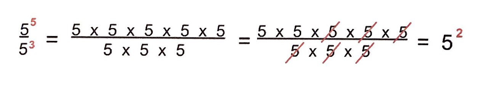
Multiplication: the rule you already know
Multiplying fractions is the friendliest operation there is: multiply straight across. (a)/(b) · (c)/(d) = (ac)/(bd). With numbers you probably already cancel before multiplying — for 4/9 · 3/8 you would cancel the 4 with the 8 and the 3 with the 9 to get 1/3 · 1/2 = 1/6, rather than multiplying to 12/72 and then reducing. Rational expressions demand that same discipline, only more so: if you multiply out (x + 2)(x + 3)(x − 1)(x − 2) first, you will be staring at a fourth-degree polynomial you then have to re-factor. Factor first. Cancel second. Multiply last.
Worked example 3. Multiply (x2 + 5x + 6)/(x2 − 4) · (x2 − 3x + 2)/(x2 + 4x + 3).
- Factor all four polynomials.
x2 + 5x + 6 = (x + 2)(x + 3) [2 · 3 = 6, 2 + 3 = 5]
x2 − 4 = (x − 2)(x + 2) [difference of squares]
x2 − 3x + 2 = (x − 1)(x − 2) [(−1)(−2) = 2, −1 + (−2) = −3]
x2 + 4x + 3 = (x + 1)(x + 3) [1 · 3 = 3, 1 + 3 = 4] - List restrictions from both denominators. (x − 2)(x + 2) = 0 gives x = 2 and x = −2; (x + 1)(x + 3) = 0 gives x = −1 and x = −3. So x ≠ 2, −2, −1, −3.
- Write it as one big fraction.
[(x + 2)(x + 3)(x − 1)(x − 2)] / [(x − 2)(x + 2)(x + 1)(x + 3)] - Divide out matching factors. (x + 2) cancels with (x + 2); (x + 3) cancels with (x + 3); (x − 2) cancels with (x − 2). What survives on top is (x − 1); what survives on the bottom is (x + 1).
- Answer. (x − 1)/(x + 1), with x ≠ 2, −2, −1, −3.
Check at x = 0. First fraction: (0 + 0 + 6)/(0 − 4) = 6/(−4) = −3/2. Second fraction: (0 − 0 + 2)/(0 + 0 + 3) = 2/3. Product: (−3/2)(2/3) = −6/6 = −1. Simplified form: (0 − 1)/(0 + 1) = −1/1 = −1. Match.
Division: multiply by the reciprocal
To divide, flip the second fraction and multiply: (a)/(b) ÷ (c)/(d) = (a)/(b) · (d)/(c). The flipped fraction (d)/(c) is the reciprocal of (c)/(d). Flip only the divisor — the fraction after the division sign — and flip it before you cancel anything.
Division brings one extra restriction that trips people up. You cannot divide by zero, so the divisor itself must not be zero, which means its numerator also generates a restriction. In (a)/(b) ÷ (c)/(d) you must have b ≠ 0, d ≠ 0, and c ≠ 0.
Worked example 4. Divide (x2 − 16)/(x2 + 6x + 9) ÷ (x − 4)/(x + 3).
- Factor everything. x2 − 16 = (x − 4)(x + 4); x2 + 6x + 9 = (x + 3)2; the other two are already factored.
- Restrictions. (x + 3)2 = 0 gives x = −3. The divisor's denominator x + 3 gives x = −3 again. The divisor's numerator x − 4 = 0 gives x = 4, which we must also exclude because dividing by zero is not allowed. So x ≠ −3 and x ≠ 4.
- Flip the divisor and change to multiplication.
[(x − 4)(x + 4)] / [(x + 3)2] · (x + 3)/(x − 4) - Write as one fraction. [(x − 4)(x + 4)(x + 3)] / [(x + 3)(x + 3)(x − 4)]
- Cancel. (x − 4) cancels; one (x + 3) on top cancels one (x + 3) on the bottom, leaving a single (x + 3) below.
- Answer. (x + 4)/(x + 3), with x ≠ −3 and x ≠ 4.
Check at x = 0. Dividend: (0 − 16)/(0 + 0 + 9) = −16/9. Divisor: (0 − 4)/(0 + 3) = −4/3. Now divide: (−16/9) ÷ (−4/3) = (−16/9) · (−3/4) = 48/36 = 4/3. Simplified form: (0 + 4)/(0 + 3) = 4/3. Match.
| Step | Multiplying | Dividing |
|---|---|---|
| 1 | Factor every numerator and denominator completely | Factor every numerator and denominator completely |
| 2 | List restrictions from both denominators | List restrictions from both denominators and from the divisor's numerator |
| 3 | — | Flip the divisor and change ÷ to · |
| 4 | Divide out factors common to top and bottom | Divide out factors common to top and bottom |
| 5 | Multiply what's left; leave it factored | Multiply what's left; leave it factored |
| 6 | State restrictions with the answer | State restrictions with the answer |
- Multiply straight across, but factor and cancel first.
- Divide by multiplying by the reciprocal of the divisor — flip only the second fraction.
- In division, the divisor's numerator also creates an excluded value.
- Leave the answer in factored form unless you are told otherwise.
Section 3Adding and subtracting
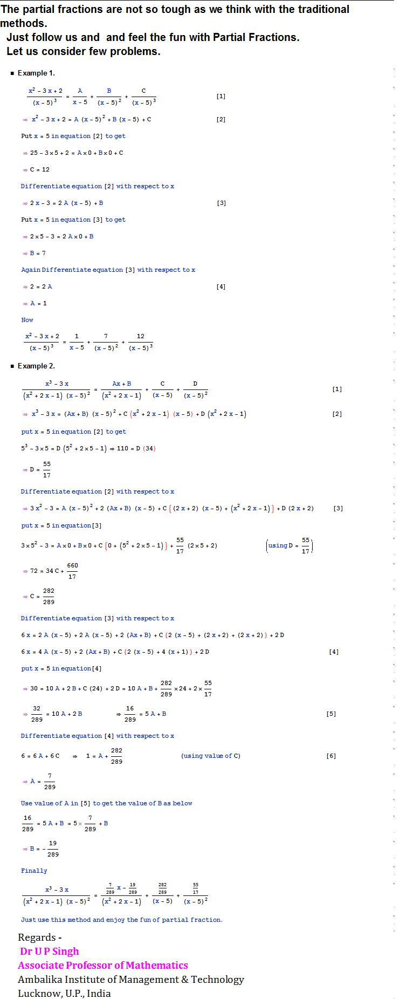
Same denominator: the easy case
When the denominators already match, add or subtract the numerators and keep the denominator: (a)/(d) + (b)/(d) = (a + b)/(d). Then simplify the result if it factors. There is one hazard even here, and it involves subtraction — see this section's pearl before you go further.
Building the least common denominator
When denominators differ, you need a least common denominator (LCD): the smallest expression that every denominator divides into evenly. Building one is mechanical:
- Factor every denominator completely.
- Make a list of every distinct factor that appears anywhere.
- Raise each factor to the highest power it reaches in any single denominator.
- Multiply those together. That product is the LCD.
This is the same procedure you use with plain numbers. For 6 and 8: 6 = 2 · 3 and 8 = 23. The distinct factors are 2 and 3; the highest powers are 23 and 31; so the LCD is 8 · 3 = 24. Nothing changes when the factors are binomials instead of primes.
| Denominators | Factored | Distinct factors, highest power | LCD |
|---|---|---|---|
| 6 and 8 | 2 · 3 and 23 | 23, 3 | 24 |
| 4x and 6x2 | 22x and 2 · 3x2 | 22, 3, x2 | 12x2 |
| x and x + 2 | x and (x + 2) | x, (x + 2) | x(x + 2) |
| x2 − 9 and x + 3 | (x − 3)(x + 3) and (x + 3) | (x − 3), (x + 3) | (x − 3)(x + 3) |
| x2 + 6x + 9 and x2 − 9 | (x + 3)2 and (x − 3)(x + 3) | (x + 3)2, (x − 3) | (x + 3)2(x − 3) |
Notice row 4: because (x + 3) is already inside x2 − 9, the LCD is not (x2 − 9)(x + 3). Taking each factor only to its highest power is what makes the common denominator least, and it saves you a round of cancelling at the end.
Rewriting and combining
Once you have the LCD, rewrite each fraction with that denominator by multiplying its top and bottom by whatever factor is missing. Multiplying top and bottom by the same nonzero thing does not change the value — it is multiplying by 1 in disguise.
Worked example 5. Add (2)/(x − 3) + (5)/(x + 2).
- Restrictions. x − 3 = 0 gives x = 3; x + 2 = 0 gives x = −2. So x ≠ 3 and x ≠ −2.
- LCD. The factors (x − 3) and (x + 2) are different and each appears once, so the LCD is (x − 3)(x + 2).
- Rewrite each fraction. The first is missing (x + 2); the second is missing (x − 3).
(2)/(x − 3) · (x + 2)/(x + 2) = [2(x + 2)] / [(x − 3)(x + 2)]
(5)/(x + 2) · (x − 3)/(x − 3) = [5(x − 3)] / [(x − 3)(x + 2)] - Add the numerators. 2(x + 2) + 5(x − 3) = 2x + 4 + 5x − 15 = 7x − 11.
- Answer. (7x − 11) / [(x − 3)(x + 2)], with x ≠ 3 and x ≠ −2. The numerator does not share a factor with the denominator (7x − 11 = 0 only at x = 11/7), so nothing cancels.
Check at x = 0. Original: 2/(0 − 3) + 5/(0 + 2) = −2/3 + 5/2. Common denominator 6: −4/6 + 15/6 = 11/6. Answer form: [7(0) − 11] / [(0 − 3)(0 + 2)] = (−11)/(−6) = 11/6. Match.
Worked example 6. Subtract (x)/(x2 − 9) − (2)/(x + 3).
- Factor and restrict. x2 − 9 = (x − 3)(x + 3), so x ≠ 3 and x ≠ −3.
- LCD. Distinct factors are (x − 3) and (x + 3), each to the first power: LCD = (x − 3)(x + 3).
- Rewrite. The first fraction already has the LCD. The second is missing (x − 3):
(2)/(x + 3) · (x − 3)/(x − 3) = [2(x − 3)] / [(x − 3)(x + 3)] - Subtract, with parentheses. The numerator becomes x − [2(x − 3)]. Distribute inside first: 2(x − 3) = 2x − 6. Now subtract the whole thing: x − (2x − 6) = x − 2x + 6 = −x + 6, which we can also write as 6 − x.
- Answer. (6 − x) / [(x − 3)(x + 3)], with x ≠ 3 and x ≠ −3.
Check at x = 0. Original: 0/(0 − 9) − 2/(0 + 3) = 0 − 2/3 = −2/3. Answer form: (6 − 0) / [(0 − 3)(0 + 3)] = 6/(−9) = −2/3. Match.
- Like denominators: combine numerators, keep the denominator, then simplify.
- Build the LCD from factored denominators: every distinct factor, raised to its highest power.
- Rewrite each fraction by multiplying top and bottom by the missing factor — that is multiplying by 1.
- When subtracting, parenthesize the second numerator and distribute the minus sign.
Section 4Complex fractions

What a complex fraction is
A complex fraction (sometimes called a compound fraction) is a fraction that has fractions inside it — in the numerator, the denominator, or both. It looks intimidating and it is not. Here is one:
[ (1)/(x) + (1)/(3) ] ÷ [ (1)/(x) − (1)/(3) ]
Written stacked with a long horizontal bar, that same expression is a complex fraction; written with a division sign, as above, it is obviously just a division problem. That is the whole secret: the main fraction bar means "divided by." There are two standard ways to untangle one, and both give the same answer.
Method 1 — combine, then divide
Turn the numerator into a single fraction. Turn the denominator into a single fraction. Then divide, which means multiply by the reciprocal. This method uses only skills from Sections 2 and 3.
Worked example 7, Method 1. Simplify [ (1)/(x) + (1)/(3) ] ÷ [ (1)/(x) − (1)/(3) ].
- Combine the top. LCD of x and 3 is 3x. (1)/(x) = (3)/(3x) and (1)/(3) = (x)/(3x). Sum: (3 + x)/(3x).
- Combine the bottom. Same LCD: (3)/(3x) − (x)/(3x) = (3 − x)/(3x).
- Divide. [(3 + x)/(3x)] ÷ [(3 − x)/(3x)] = [(3 + x)/(3x)] · [(3x)/(3 − x)]
- Cancel. The 3x on top cancels the 3x on the bottom, leaving (3 + x)/(3 − x).
- Restrictions. x ≠ 0 (it sits under a 1 in the original). Also the bottom of the big fraction may not be zero: (1)/(x) − (1)/(3) = 0 when x = 3, so x ≠ 3.
Method 2 — multiply top and bottom by the LCD
Find the LCD of all the little fractions inside, then multiply the whole numerator and the whole denominator by it. Every small fraction gets wiped out in one stroke. This is usually faster.
Worked example 7, Method 2. Same problem, other route. The little fractions are 1/x and 1/3, so the LCD is 3x.
- Multiply the numerator by 3x, distributing. 3x · [(1)/(x) + (1)/(3)] = 3x · (1)/(x) + 3x · (1)/(3) = 3 + x.
- Multiply the denominator by 3x, distributing. 3x · [(1)/(x) − (1)/(3)] = 3 − x.
- Assemble. (3 + x)/(3 − x) — identical to Method 1, with the same restrictions x ≠ 0 and x ≠ 3.
Check at x = 1. Top of the original: 1/1 + 1/3 = 4/3. Bottom: 1/1 − 1/3 = 2/3. Divide: (4/3) ÷ (2/3) = (4/3) · (3/2) = 12/6 = 2. Simplified form: (3 + 1)/(3 − 1) = 4/2 = 2. Match, both methods confirmed.
Worked example 8. Simplify [ 1 − (9)/(x2) ] ÷ [ 1 + (3)/(x) ] using Method 2.
- Find the LCD of the inner fractions. Denominators are x2 and x; the highest power of x is x2, so the LCD is x2.
- Multiply the numerator by x2. x2 · 1 − x2 · (9)/(x2) = x2 − 9.
- Multiply the denominator by x2. x2 · 1 + x2 · (3)/(x) = x2 + 3x.
- Now simplify the ordinary rational expression. (x2 − 9)/(x2 + 3x) = [(x − 3)(x + 3)] / [x(x + 3)] = (x − 3)/(x).
- Restrictions. x ≠ 0 from the inner denominators. The bottom of the big fraction, 1 + (3)/(x), equals zero when x = −3, so x ≠ −3 as well.
Check at x = 1. Top: 1 − 9/1 = −8. Bottom: 1 + 3/1 = 4. Divide: −8/4 = −2. Simplified: (1 − 3)/1 = −2. Match.
| Method 1: combine then divide | Method 2: multiply by the LCD | |
|---|---|---|
| Step 1 | Combine the numerator into one fraction | Find the LCD of every small fraction inside |
| Step 2 | Combine the denominator into one fraction | Multiply the entire numerator by that LCD |
| Step 3 | Flip the bottom fraction and multiply | Multiply the entire denominator by that LCD |
| Step 4 | Factor and cancel | Factor and cancel |
| Best when | Top and bottom are already single fractions | There are several small fractions to clear |
| Watch out for | Flipping the wrong fraction | Forgetting to distribute the LCD to every term |
- A complex fraction has fractions inside its numerator, denominator, or both.
- The main fraction bar is a division sign — that reframing alone solves most of the confusion.
- Method 1: combine top, combine bottom, multiply by the reciprocal.
- Method 2: multiply top and bottom by the LCD of all inner fractions; usually faster.
Section 5Rational equations
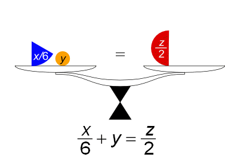
An equation is a different job than an expression
Sections 1 through 4 asked you to simplify — to rewrite one expression in a tidier equivalent form. A rational equation asks something different: find the values of the variable that make a statement true. An equation has an equals sign, and that equals sign gives you a power you do not have with expressions — you may multiply both sides by the same nonzero quantity. Choose the LCD as that quantity and every denominator disappears at once.
The procedure is short:
- Factor all denominators and list the excluded values first. This step is not optional here; it is the whole safety net.
- Find the LCD of every denominator in the equation.
- Multiply every term on both sides by the LCD and cancel, leaving an equation with no fractions.
- Solve the resulting linear or quadratic equation.
- Compare each candidate to your excluded list. Any candidate that appears there is an extraneous solution and must be thrown out.
A full solution, start to finish
Worked example 9. Solve (2)/(x + 1) + (1)/(x − 1) = (4)/(x2 − 1).
- Factor and exclude. x2 − 1 = (x − 1)(x + 1). The denominators are (x + 1), (x − 1), and (x − 1)(x + 1), so x ≠ 1 and x ≠ −1.
- LCD. The distinct factors are (x − 1) and (x + 1), each to the first power: LCD = (x − 1)(x + 1).
- Multiply every term by the LCD.
First term: (x − 1)(x + 1) · (2)/(x + 1) → the (x + 1) cancels → 2(x − 1)
Second term: (x − 1)(x + 1) · (1)/(x − 1) → the (x − 1) cancels → (x + 1)
Right side: (x − 1)(x + 1) · (4)/[(x − 1)(x + 1)] → everything cancels → 4 - The fraction-free equation. 2(x − 1) + (x + 1) = 4
- Solve it. Distribute: 2x − 2 + x + 1 = 4. Combine like terms: 3x − 1 = 4. Add 1 to both sides: 3x = 5. Divide by 3: x = 5/3.
- Screen against the excluded list. Is 5/3 equal to 1 or −1? No. It survives.
Verify in the original equation with x = 5/3. Then x + 1 = 8/3, x − 1 = 2/3, and x2 − 1 = 25/9 − 9/9 = 16/9.
Left side: 2 ÷ (8/3) = 2 · (3/8) = 6/8 = 3/4. And 1 ÷ (2/3) = 3/2 = 6/4. Sum: 3/4 + 6/4 = 9/4.
Right side: 4 ÷ (16/9) = 4 · (9/16) = 36/16 = 9/4.
Both sides equal 9/4, so x = 5/3 is the solution.
Extraneous solutions, and why they appear
Multiplying both sides by the LCD is legal only when the LCD is not zero — and at an excluded value, it is zero. So the fraction-free equation you produce is not quite the same equation you started with; it can be true at values where the original was never even defined. Those impostors are extraneous solutions. They are not mistakes in your algebra; they are a predictable side effect of the method, which is precisely why the final screening step is mandatory.
Worked example 10. Solve (x2)/(x − 3) = (9)/(x − 3).
- Exclude. x − 3 = 0 when x = 3, so x ≠ 3. Write it down now.
- LCD. Both denominators are (x − 3), so the LCD is (x − 3).
- Multiply both sides by (x − 3). On the left, (x − 3) · (x2)/(x − 3) = x2. On the right, (x − 3) · (9)/(x − 3) = 9. The equation becomes x2 = 9.
- Solve. Subtract 9: x2 − 9 = 0. Factor: (x − 3)(x + 3) = 0. Candidates: x = 3 and x = −3.
- Screen. x = 3 is on the excluded list — it is extraneous and gets crossed out. Substituting it into the original would give 9/0, which is undefined. x = −3 is not excluded, so it stays.
- Verify x = −3. Left: (−3)2/(−3 − 3) = 9/(−6) = −3/2. Right: 9/(−3 − 3) = 9/(−6) = −3/2. Equal.
Solution: x = −3 only. Notice that a perfectly sound algebraic process handed you two candidates and one of them was a fake. If you had skipped step 5 you would have reported an answer that makes the original equation meaningless.
Sometimes every candidate is extraneous. Solve (x)/(x − 3) = (3)/(x − 3) + 2: multiplying by (x − 3) gives x = 3 + 2(x − 3) = 3 + 2x − 6 = 2x − 3, so −x = −3 and x = 3. But x ≠ 3. Every candidate is rejected, so the honest answer is no solution — which is a complete, correct answer, not a sign you did something wrong.
Where these equations come from
Rational equations show up whenever quantities combine as rates. Suppose one pump fills a tank in 6 hours and a second pump fills the same tank in 3 hours. Working together, how long do they need? In one hour the first pump does 1/6 of the job and the second does 1/3, and together they finish 1/t of the job per hour, where t is the total time. So (1)/(6) + (1)/(3) = (1)/(t), with t ≠ 0. The LCD of 6, 3, and t is 6t. Multiply every term: 6t · (1/6) = t; 6t · (1/3) = 2t; 6t · (1/t) = 6. The equation is t + 2t = 6, so 3t = 6 and t = 2 hours. Sanity check: two hours is less than the faster pump's 3 hours on its own, which is exactly what you would expect from adding help.
| Rational expression | Rational equation | |
|---|---|---|
| Has an "="? | No | Yes |
| Your job | Rewrite it in simplest form | Find the values that make it true |
| May you clear denominators? | No — that would change the value | Yes — multiply both sides by the LCD |
| Role of the LCD | Rewrite each fraction to combine them | Wipe out all denominators at once |
| Answer looks like | Another expression, plus restrictions | A number, several numbers, or "no solution" |
| Final step | State the excluded values | Screen candidates and discard extraneous ones |
- To solve a rational equation, multiply every term on both sides by the LCD to clear all fractions.
- List excluded values first, straight from the factored denominators.
- An extraneous solution solves the cleared equation but is excluded in the original; discard it.
- If every candidate is extraneous, the correct answer is no solution.
The chapter in one breath
- A rational expression is a polynomial over a polynomial, and the denominator may never be zero — so every one comes with excluded values.
- Simplify by factoring completely and dividing out common factors; you may cancel factors but never terms.
- Restrictions come from the original denominators, and they survive even when the factor that produced them cancels.
- Multiply straight across after factoring and cancelling; divide by flipping the divisor, which also makes the divisor's numerator an excluded value.
- To add or subtract, build the LCD — every distinct factor to its highest power — rewrite each fraction, then combine numerators, parenthesizing when you subtract.
- A complex fraction is just a division problem: combine top and bottom then multiply by the reciprocal, or multiply top and bottom by the LCD of the inner fractions.
- To solve a rational equation, clear denominators by multiplying both sides by the LCD, then solve the fraction-free equation.
- Always screen candidates against the excluded list; an extraneous solution is discarded, and if all of them go, the answer is no solution.
ReferenceWords worth knowing
A quick reference for the vocabulary in this chapter — skim it now, or circle back whenever a word slows you down.
- Common denominator
- A single denominator shared by two or more fractions, needed before they can be added or subtracted.
- Complex fraction
- A fraction whose numerator, denominator, or both contain fractions; also called a compound fraction.
- Cross-multiplication
- A shortcut for the special case (a)/(b) = (c)/(d): multiply to get ad = bc. It applies only when a single fraction equals a single fraction.
- Denominator
- The bottom of a fraction — the part that may never equal zero.
- Difference of squares
- The pattern a2 − b2 = (a + b)(a − b), the most frequently used factoring tool in this chapter.
- Domain
- The set of input values for which an expression is defined; for a rational expression, all real numbers except the excluded values.
- Excluded value
- Any value of the variable that makes a denominator zero and is therefore removed from the domain.
- Extraneous solution
- A candidate that satisfies the equation after denominators are cleared but is an excluded value of the original; it must be discarded.
- Factor
- A quantity being multiplied. Only factors may be divided out of a fraction — terms may not.
- Fundamental principle of fractions
- (ac)/(bc) = (a)/(b) whenever b ≠ 0 and c ≠ 0; the rule that permits cancelling.
- Greatest common factor (GCF)
- The largest factor shared by every term of a polynomial; always the first thing to pull out when factoring.
- Least common denominator (LCD)
- The smallest expression every denominator divides into evenly: each distinct factor raised to its highest power.
- Lowest terms
- The form of a rational expression in which numerator and denominator share no common factor other than 1.
- Numerator
- The top of a fraction.
- Opposite factors
- Expressions such as b − a and a − b that differ by a factor of −1, so their quotient is −1.
- Polynomial
- A sum of terms of the form (number)(variable raised to a whole-number power), such as x2 + x − 12.
- Rational equation
- An equation containing at least one rational expression; solved by clearing denominators with the LCD.
- Rational expression
- A quotient of two polynomials, P/Q, with Q ≠ 0.
- Reciprocal
- The multiplicative inverse of a fraction, formed by exchanging numerator and denominator; the reciprocal of (c)/(d) is (d)/(c).
- Restriction
- Another name for an excluded value, usually written alongside a simplified answer as "x ≠ …".
Check yourself
Radicals & Rational Exponents
A radical sign is just a question in disguise: √25 asks “what number, multiplied by itself, gives 25?” That is the whole idea, and everything in this chapter grows out of it. We will learn to read radicals, shrink them into their simplest form, add and multiply them the way we already add and multiply everything else, and clear them out of denominators. Then we will discover something genuinely useful: a radical is secretly an exponent, and once you see that, the exponent rules you already know do most of the work for you. We finish with radical equations, which come with a warning label — the algebra sometimes hands you an answer that is not actually an answer, and you have to know how to catch it.
By the end of this chapter you can
- Evaluate square roots and nth roots, and explain what the principal root means.
- State when an even-index radical is undefined in the real numbers, and why odd-index radicals are not.
- Simplify a radical by pulling out perfect-power factors, with numbers and with variables.
- Add, subtract, multiply, and divide radical expressions, including expressions that need FOIL.
- Rationalize a denominator with one term, and with two terms using a conjugate.
- Convert freely between radical form and rational-exponent form, and use exponent rules to simplify.
- Solve radical equations by isolating and raising both sides to a power.
- Identify and reject extraneous solutions by checking every answer in the original equation.
Section 1Radicals: square roots, nth roots, and simplifying

What a square root actually asks
The expression √25 is not a command to do something mysterious. It is a question: what non-negative number, times itself, equals 25? The answer is 5, because 5 × 5 = 25. That is all a square root is — running multiplication backwards.
Here is the one wrinkle that trips almost everybody up at first. The number 25 genuinely has two square roots: 5 works, and so does −5, because (−5)(−5) = 25. But the symbol √ is defined to hand back only the non-negative one, called the principal square root. So:
- √25 = 5 (not ±5 — the symbol picks the non-negative one)
- −√25 = −5 (the minus sign lives outside and is applied afterward)
- If you are solving x2 = 25, then x = ±5, because both genuinely satisfy the equation
Keep those two situations apart in your head. Evaluating a radical gives one answer. Solving a squared equation gives two. The ± appears when you introduce it while solving, not because the radical symbol secretly means ±.
One more rule worth memorizing now: √(x2) = |x|, the absolute value. Test it with x = −7: √((−7)2) = √49 = 7, which is |−7|, not −7. Squaring erased the sign, and the radical cannot put it back.
Beyond squares: nth roots
The little number sitting in the notch of the radical sign is the index. It tells you which root you are taking. If no index is written, it is understood to be 2 (a square root). The number under the sign is the radicand.
3√8 = 2 because 23 = 8. 4√81 = 3 because 34 = 81. 5√32 = 2 because 25 = 32. Same question, different power.
Now the important split, and it is entirely about whether the index is even or odd. An odd index is comfortable with negative radicands: 3√(−8) = −2, because (−2)3 = −8. An even index is not: √(−9) has no real answer, because no real number times itself gives a negative — positive × positive is positive, and negative × negative is also positive. So √(−9) is undefined in the real numbers.
| Index | Radicand positive | Radicand negative | Example |
|---|---|---|---|
| Even (2, 4, 6…) | One principal (positive) root | No real value | √36 = 6; √(−36) undefined (real) |
| Odd (3, 5, 7…) | One positive root | One negative root | 3√27 = 3; 3√(−27) = −3 |
It also pays to have a few perfect powers memorized, the way you know your times tables. Perfect squares: 1, 4, 9, 16, 25, 36, 49, 64, 81, 100, 121, 144, 169, 196, 225. Perfect cubes: 1, 8, 27, 64, 125, 216. Fourth powers: 1, 16, 81, 256. Fifth powers: 1, 32, 243. Recognizing these on sight is what makes the next skill fast instead of painful.
Simplifying: pull out the perfect powers
A radical is in simplified form when the radicand has no factor that is a perfect power matching the index. The tool is the product property: √(ab) = √a · √b, valid whenever both a and b are non-negative (for odd indexes it holds with no sign restriction at all).
Fully worked example: simplify √72.
| Step | What we do | Result |
|---|---|---|
| 1 | List factor pairs of 72 and hunt for perfect squares: 1·72, 2·36, 3·24, 4·18, 6·12, 8·9. Perfect squares present: 4, 9, 36. Take the largest, 36. | 72 = 36 · 2 |
| 2 | Rewrite the radicand as that product | √72 = √(36 · 2) |
| 3 | Split with the product property | = √36 · √2 |
| 4 | Evaluate the perfect square: √36 = 6 because 6 · 6 = 36 | = 6 · √2 |
| 5 | Write it in standard form (whole number in front) | = 6√2 |
| Check | √2 ≈ 1.41421, so 6√2 ≈ 6 × 1.41421 = 8.48528. And √72 ≈ 8.48528. | Matches — correct |
If you had grabbed the smaller perfect square 4 instead, you would get √72 = √4 · √18 = 2√18, and then you would notice 18 = 9 · 2 and keep going: 2 · 3√2 = 6√2. Same destination, one extra step. Taking the largest perfect square just saves you a lap.
With an index of 3: simplify 3√54. Now you hunt for perfect cubes, not squares. 54 = 27 · 2, and 27 = 33. So 3√54 = 3√(27 · 2) = 3√27 · 3√2 = 3 · 3√2. Be careful reading that last line: the small 3 tucked into the notch of the radical sign is the index, while the small 3 in “27 = 33” is an exponent. Same-looking mark, two different jobs — which is why we keep the raised dot in the answer rather than crowding the coefficient against the radical. Notice 9 is a factor of 54 too, but 9 is not a perfect cube, so it is useless here. The index decides what counts as “perfect.”
With variables: simplify √(50x3), assuming x ≥ 0. Break the radicand into a perfect-square part and a leftover part: 50 = 25 · 2, and x3 = x2 · x. So the radicand is 25x2 · 2x. Then √(50x3) = √(25x2) · √(2x) = 5x · √(2x) = 5x√(2x). The restriction x ≥ 0 matters: without it we would have to write 5|x|√(2x), and in fact 2x under an even radical already forces x ≥ 0 anyway.
- √a means the principal (non-negative) square root; solving x2 = a is what produces ±.
- The index says which root; the radicand is what is underneath. No index means 2.
- Even index + negative radicand = no real value; odd index handles negatives fine.
- Simplify by factoring out the largest perfect power that matches the index, then splitting with √(ab) = √a · √b.
Section 2Operations with radicals: adding, subtracting, multiplying, dividing

Adding and subtracting: only like radicals combine
This one is easier than it looks, because you already know the rule from a different context. You cannot combine 3 apples and 4 oranges into 7 of anything. In the same way, you can only add radicals that are like radicals — same index and same radicand.
3√5 + 4√5 = 7√5. Think of √5 as the “unit” and just count them: three of them plus four of them is seven of them. But √2 + √3 does not combine at all. It is already as simple as it gets, and writing it as √5 would be flatly wrong (√2 + √3 ≈ 1.414 + 1.732 = 3.146, while √5 ≈ 2.236).
The catch is that two radicals can look unlike and turn out to be like once you simplify them. That makes simplifying step zero of every addition problem.
Fully worked example: simplify √18 + √50 − √8.
| Step | What we do | Result |
|---|---|---|
| 1 | Simplify each radical first. 18 = 9 · 2, so √18 = √9 · √2 = 3√2 | √18 = 3√2 |
| 2 | 50 = 25 · 2, so √50 = √25 · √2 = 5√2 | √50 = 5√2 |
| 3 | 8 = 4 · 2, so √8 = √4 · √2 = 2√2 | √8 = 2√2 |
| 4 | Rewrite the whole expression | 3√2 + 5√2 − 2√2 |
| 5 | All three are like radicals, so combine the numbers in front: 3 + 5 − 2 = 6 | = 6√2 |
| Check | √18 ≈ 4.24264, √50 ≈ 7.07107, √8 ≈ 2.82843. Then 4.24264 + 7.07107 − 2.82843 = 8.48528, and 6√2 ≈ 8.48528. | Matches — correct |
Multiplying: multiply the outsides, multiply the insides
Multiplication is where radicals are friendly. The product property runs in both directions: √a · √b = √(ab). Coefficients out front multiply with each other; radicands multiply with each other. Then simplify whatever you land on.
Fully worked example: (2√3)(5√6).
- Step 1 — multiply the outside numbers: 2 × 5 = 10
- Step 2 — multiply the radicands: √3 · √6 = √18
- Step 3 — put them together: 10√18
- Step 4 — simplify √18: 18 = 9 · 2, so √18 = √9 · √2 = 3√2
- Step 5 — substitute back: 10 · 3√2 = 30√2
- Check: 2√3 ≈ 3.46410 and 5√6 ≈ 12.24745; their product is 42.42641. And 30√2 ≈ 42.42641. Correct.
A special case worth noticing: √3 · √3 = √9 = 3. A square root times itself simply undoes itself. That fact is the engine of the next section.
When there are two terms, FOIL exactly as you would with binomials. Fully worked: (√5 + 2)(√5 − 3).
- First: √5 · √5 = 5
- Outer: √5 · (−3) = −3√5
- Inner: 2 · √5 = 2√5
- Last: 2 · (−3) = −6
- Assemble: 5 − 3√5 + 2√5 − 6
- Combine the plain numbers: 5 − 6 = −1. Combine the like radicals: −3√5 + 2√5 = −1√5 = −√5
- Answer: −1 − √5
- Check: √5 ≈ 2.23607, so the factors are 4.23607 and −0.76393; their product is −3.23607. And −1 − 2.23607 = −3.23607. Correct.
Dividing: the quotient property
Division mirrors multiplication. The quotient property says (√a)/(√b) = √(a/b) for a ≥ 0 and b > 0. The restriction b ≠ 0 is not optional — you can never divide by zero, radicals or not.
Fully worked: (√50)/(√2). Combine under one radical: √(50/2) = √25 = 5. Check: √50 ≈ 7.07107 and √2 ≈ 1.41421; 7.07107 ÷ 1.41421 = 5.00000. Correct.
Fully worked with coefficients: (12√30)/(4√5). Divide the outside numbers: 12 ÷ 4 = 3. Divide the radicands: √(30/5) = √6. Result: 3√6. Check: 12√30 ≈ 65.72671, 4√5 ≈ 8.94427, quotient ≈ 7.34847; and 3√6 ≈ 7.34847. Correct.
| Operation | Rule | Condition | Example |
|---|---|---|---|
| Add / subtract | Combine coefficients of like radicals only | Same index and same radicand | 3√2 + 5√2 = 8√2 |
| Multiply | √a · √b = √(ab) | a, b ≥ 0 for even index | √6 · √2 = √12 = 2√3 |
| Multiply (two terms) | FOIL, then combine like radicals | Same as above | (√3+1)2 = 3 + 2√3 + 1 = 4 + 2√3 |
| Divide | (√a)/(√b) = √(a/b) | a ≥ 0, b > 0 | (√48)/(√3) = √16 = 4 |
| Never | √(a+b) ≠ √a + √b | — | √25 = 5, but √9 + √16 = 7 |
- Like radicals (same index, same radicand) add and subtract by combining coefficients; simplify first so hidden matches show up.
- Multiply coefficients with coefficients and radicands with radicands, then simplify the result.
- Two-term products use FOIL, and √a · √a = a.
- Division uses (√a)/(√b) = √(a/b) with b ≠ 0; radicals never distribute over + or −.
Section 3Rationalizing denominators, including conjugates

Why we bother
Rationalizing the denominator means rewriting a fraction so that no radical is left downstairs. The value of the fraction never changes — only its appearance. So why do it? Two honest reasons. First, it is the standard form textbooks, exams, and answer keys expect, so matching it saves you arguments about whether your answer is right. Second, it genuinely makes numbers easier to compare and to estimate by hand: 1/√2 makes you divide by a messy 1.41421, while the equivalent (√2)/2 only asks you to halve 1.41421.
The whole technique rests on one trick you have used since fractions began: multiplying by a cleverly disguised 1. Since (√7)/(√7) = 1, multiplying by it changes nothing about the value while changing everything about the form.
One term in the denominator
Fully worked example: rationalize 3/(√7).
| Step | What we do | Result |
|---|---|---|
| 1 | The denominator is √7. Multiplying it by √7 will clear it, since √7 · √7 = 7. | Multiplier: (√7)/(√7) |
| 2 | Multiply top and bottom by that fraction (which equals 1) | (3)/(√7) · (√7)/(√7) |
| 3 | Numerator: 3 · √7 = 3√7 | Top = 3√7 |
| 4 | Denominator: √7 · √7 = √49 = 7 | Bottom = 7 |
| 5 | Write the result; 3 and 7 share no common factor, so it is done | = (3√7)/7 |
| Check | 3/(√7) ≈ 3 ÷ 2.64575 = 1.13389. And (3√7)/7 ≈ 7.93725 ÷ 7 = 1.13389. | Matches — correct |
Simplify before you rationalize. Fully worked: 5/(√12). If you charge ahead and multiply by (√12)/(√12), you get (5√12)/12, and you still have to simplify √12 afterward. Cleaner to simplify first: √12 = √(4 · 3) = 2√3, so the fraction is 5/(2√3). Now multiply top and bottom by √3: the numerator becomes 5√3, and the denominator becomes 2 · √3 · √3 = 2 · 3 = 6. Answer: (5√3)/6. Check: 5/(√12) ≈ 5 ÷ 3.46410 = 1.44338, and (5√3)/6 ≈ 8.66025 ÷ 6 = 1.44338. Correct.
What if the index is not 2? Then you need enough copies to complete a perfect power. Fully worked: 1/(3√2). Multiplying by 3√2 alone gives 3√4 downstairs — still a radical. You need three 2s under the cube root, and you have one, so supply two more by multiplying by 3√4 (since 4 = 22). The denominator becomes 3√2 · 3√4 = 3√8 = 2, and the numerator becomes 3√4. Answer: (3√4)/2. Check: 1/(3√2) ≈ 1 ÷ 1.25992 = 0.79370, and (3√4)/2 ≈ 1.58740 ÷ 2 = 0.79370. Correct.
Two terms in the denominator: use the conjugate
When the denominator is something like 3 + √5, multiplying by √5 does not help — it just spreads the radical around. What you need is the conjugate: the same two terms with the sign between them flipped. The conjugate of 3 + √5 is 3 − √5, and the conjugate of √7 − 2 is √7 + 2.
The conjugate works because of the difference-of-squares pattern: (a + b)(a − b) = a2 − b2. The middle terms cancel, and squaring a square root destroys it. That is exactly what we want.
Fully worked example: rationalize 6/(3 + √5).
| Step | What we do | Result |
|---|---|---|
| 1 | Identify the conjugate of 3 + √5 by flipping the middle sign | Conjugate = 3 − √5 |
| 2 | Multiply top and bottom by (3 − √5)/(3 − √5) | (6)/(3+√5) · (3−√5)/(3−√5) |
| 3 | Numerator: distribute 6 across both terms → 6 · 3 = 18 and 6 · (−√5) = −6√5 | Top = 18 − 6√5 |
| 4 | Denominator, FOIL it out: 3·3 = 9; 3·(−√5) = −3√5; √5·3 = +3√5; √5·(−√5) = −5 | 9 − 3√5 + 3√5 − 5 |
| 5 | The two radical terms cancel (−3√5 + 3√5 = 0), leaving 9 − 5 | Bottom = 4 |
| 6 | Assemble the fraction | (18 − 6√5)/4 |
| 7 | Every term shares a factor of 2: 18 = 2·9, 6 = 2·3, 4 = 2·2. Divide it out. | = (9 − 3√5)/2 |
| Check | √5 ≈ 2.23607, so 6/(3+√5) ≈ 6 ÷ 5.23607 = 1.14590. And (9 − 6.70820)/2 = 2.29180 ÷ 2 = 1.14590. | Matches — correct |
A second one, with a radical on top too: rationalize (√7)/(√7 − 2). The conjugate is √7 + 2. Numerator: √7(√7 + 2) = √7 · √7 + 2√7 = 7 + 2√7. Denominator: (√7 − 2)(√7 + 2) = (√7)2 − 22 = 7 − 4 = 3. Answer: (7 + 2√7)/3. Check: √7 ≈ 2.64575, so the original is 2.64575 ÷ 0.64575 ≈ 4.09717; and (7 + 5.29150)/3 = 12.29150 ÷ 3 = 4.09717. Correct.
One caution about restrictions. When letters are involved, the denominator still cannot be zero. In (√x)/(√x − 2) we need x ≥ 0 for the radical to be real, and x ≠ 4 so the denominator is not zero. Rationalizing does not change those restrictions — carry them along.
- Rationalizing multiplies by a disguised 1, so the value is unchanged — only the form.
- For a single square root downstairs, multiply top and bottom by that radical; simplify the radical first if you can.
- For index n, supply whatever factors complete a perfect nth power (e.g. multiply 3√2 by 3√4).
- For a two-term denominator, multiply by the conjugate and use (a+b)(a−b) = a2 − b2; the denominator still may not be zero.
Section 4Rational exponents: converting between radical and exponent form

The bridge: a radical is an exponent
Here is the definition that makes this chapter suddenly easier: a1/n = n√a. A fractional exponent with 1 on top means “take the nth root.” So a1/2 = √a, a1/3 = 3√a, and a1/5 = 5√a.
That is not an arbitrary choice; it is forced. If we want the old power-of-a-power rule to keep working, then (a1/2)2 must equal a(1/2)·2 = a1 = a. So a1/2 has to be the number that squares to a — which is precisely √a. The notation was designed so that nothing you already know breaks.
When the top of the fraction is not 1, the rule extends naturally: am/n = n√(am) = (n√a)m. Read it as the denominator is the root, the numerator is the power. Some people remember it as “the root is in the basement.” Both orders give the same answer, but one is usually far less work — more on that in a moment.
| Radical form | Exponent form | Worked value |
|---|---|---|
| √a | a1/2 | √49 = 491/2 = 7 |
| 3√a | a1/3 | 3√125 = 1251/3 = 5 |
| n√a | a1/n | 4√81 = 811/4 = 3 |
| n√(am) = (n√a)m | am/n | 82/3 = (3√8)2 = 22 = 4 |
| 1/(n√a) | a−1/n | 16−1/2 = 1/√16 = 1/4 |
| 6√(x5) | x5/6 | — |
Evaluating, step by step
Fully worked example: evaluate 82/3.
| Step | What we do | Result |
|---|---|---|
| 1 | Read the fraction: denominator 3 = cube root; numerator 2 = square it | 82/3 = (3√8)2 |
| 2 | Take the root first: 3√8 = 2, because 2 · 2 · 2 = 8 | = 22 |
| 3 | Apply the power: 22 = 4 | = 4 |
| Other order | Power first: 82 = 64, then 3√64 = 4 (since 4 · 4 · 4 = 64) | Same answer, bigger numbers |
Now with a negative exponent: evaluate 32−3/5. A negative exponent means reciprocal, so step one is 32−3/5 = 1/(323/5). Next, the denominator 5 says fifth root: 5√32 = 2, because 2 · 2 · 2 · 2 · 2 = 32. Then the numerator 3 says cube it: 23 = 8. So 323/5 = 8, and the answer is 1/8. Notice the negative exponent moved the expression to the denominator; it did not make the answer negative.
All your exponent rules still apply
This is the real payoff. Once radicals are exponents, you do not need special radical rules — you use the exponent rules you already have: am · an = am+n, (am)/(an) = am−n, (am)n = amn, and (ab)n = anbn.
Fully worked: simplify √x · 3√x, for x ≥ 0. As radicals this looks stuck — different indexes, so they are not like radicals. Convert: √x = x1/2 and 3√x = x1/3. Multiplying means adding exponents: 1/2 + 1/3. Get a common denominator of 6: 1/2 = 3/6 and 1/3 = 2/6, so 3/6 + 2/6 = 5/6. Therefore the product is x5/6, which converts back to 6√(x5). Check with x = 64: √64 = 8 and 3√64 = 4, so the product is 32; and 645/6 = (6√64)5 = 25 = 32. Correct.
Fully worked: simplify (16x8)3/4, for x ≥ 0. Distribute the exponent to each factor: (16)3/4 · (x8)3/4. For the number: 163/4 = (4√16)3 = 23 = 8, since 2 · 2 · 2 · 2 = 16. For the variable, multiply exponents: 8 × (3/4) = 24/4 = 6, giving x6. Answer: 8x6. Check with x = 1: (16 · 1)3/4 = 8, and 8 · 16 = 8. Correct.
One restriction to respect: when the denominator of the exponent is even, the base must be non-negative for the result to be a real number. (−16)1/2 = √(−16) is not real, and (−16)1/4 is not either. Odd denominators are fine: (−27)1/3 = 3√(−27) = −3.
- a1/n = n√a, and am/n = n√(am) = (n√a)m — denominator is the root, numerator is the power.
- A negative rational exponent means reciprocal, not a negative answer: 16−1/2 = 1/4.
- Taking the root first keeps the arithmetic small.
- Every ordinary exponent rule works on rational exponents, which is how you multiply radicals of different indexes.
Section 5Radical equations: solving and checking for extraneous solutions

The strategy, and the warning
A radical equation is an equation with the variable underneath a radical. The plan is short: isolate the radical on one side, raise both sides to the power that matches the index, solve the ordinary equation that appears, and then — this step is not optional — check every answer in the original equation.
Why is checking mandatory here when it is merely good practice elsewhere? Because squaring both sides is a one-way street. Look at the false statement 3 = −3. Square both sides and you get 9 = 9, which is true. Squaring turned a lie into a truth. So when you square both sides of an equation, you may accidentally manufacture a solution that never satisfied the original. Such an impostor is called an extraneous solution. It is not a mistake in your algebra — it is a side effect of the method, and the only way to catch it is to test your answers.
There is a second, related reason. The symbol √ only ever outputs values that are zero or positive. So an equation like √x + 3 = 1, which rearranges to √x = −2, has no solution at all — no real number has a principal square root of −2. You can see this on the graph of y = √x: the curve lives entirely on or above the x-axis and never reaches down to −2.
A clean one, start to finish
Fully worked example: solve √(2x + 3) = 5.
| Step | What we do | Result |
|---|---|---|
| 1 | The radical is already alone on the left — nothing to isolate | √(2x + 3) = 5 |
| 2 | Square both sides. On the left, squaring undoes the square root; on the right, 52 = 25 | 2x + 3 = 25 |
| 3 | Subtract 3 from both sides: 25 − 3 = 22 | 2x = 22 |
| 4 | Divide both sides by 2: 22 ÷ 2 = 11 | x = 11 |
| 5 | Check in the original. Left side: √(2 · 11 + 3) = √(22 + 3) = √25 = 5. Right side: 5. | 5 = 5 — valid |
| Solution | x = 11 |
One where an impostor shows up
Fully worked example: solve √(x + 7) = x − 5.
| Step | What we do | Result |
|---|---|---|
| 1 | Radical is already isolated. Square both sides. Left: x + 7. Right: (x−5)2 = x2 − 5x − 5x + 25 = x2 − 10x + 25 | x + 7 = x2 − 10x + 25 |
| 2 | Move everything to one side: subtract x and subtract 7 from both sides. Right side becomes x2 − 10x − x + 25 − 7 | 0 = x2 − 11x + 18 |
| 3 | Factor: find two numbers multiplying to 18 and adding to −11. Those are −2 and −9, since (−2)(−9) = 18 and (−2) + (−9) = −11 | 0 = (x − 2)(x − 9) |
| 4 | Set each factor to zero | x = 2 or x = 9 |
| 5 | Check x = 9. Left: √(9 + 7) = √16 = 4. Right: 9 − 5 = 4. | 4 = 4 — valid |
| 6 | Check x = 2. Left: √(2 + 7) = √9 = 3. Right: 2 − 5 = −3. | 3 ≠ −3 — extraneous, reject |
| Solution set | x = 9 only |
You could have predicted the rejection before doing any checking. The left side, √(x + 7), is never negative, so the right side x − 5 cannot be negative either — that forces x ≥ 5. Since 2 < 5, the candidate x = 2 was doomed from the start. (The radicand also demands x + 7 ≥ 0, so x ≥ −7, but the tighter restriction x ≥ 5 is the one doing the work.)
Other flavors you will meet
Cube roots: solve 3√(x − 4) = 2. Cube both sides: x − 4 = 23 = 8, so x = 12. Check: 3√(12 − 4) = 3√8 = 2. Valid. Cubing is reversible in a way squaring is not, so odd-index equations rarely produce extraneous solutions — but check anyway, since checking also catches arithmetic slips.
A radical on each side: solve √(x + 5) = √(2x − 1). Square both sides: x + 5 = 2x − 1. Subtract x: 5 = x − 1. Add 1: x = 6. Check: √(6 + 5) = √11 and √(2 · 6 − 1) = √11. Valid.
Two radicals that will not fit on one side: solve √(x + 5) − √x = 1. Isolate one radical first: √(x + 5) = 1 + √x. Square both sides — on the right, (1 + √x)2 = 1 + 2√x + x. So x + 5 = 1 + 2√x + x. Subtract x from both sides: 5 = 1 + 2√x. Subtract 1: 4 = 2√x. Divide by 2: √x = 2. Square once more: x = 4. Check in the original: √(4 + 5) − √4 = √9 − 2 = 3 − 2 = 1. Valid, so x = 4. Yes, you sometimes have to square twice — that is normal.
- Isolate the radical, raise both sides to the index power, solve, then check in the original equation.
- Squaring both sides can create extraneous solutions, because squaring turns false statements like 3 = −3 into true ones.
- √(anything) is never negative, so if an isolated radical equals a negative number there is no solution.
- With two radicals, isolate one, square, isolate the survivor, and square again.
The chapter in one breath
- √a is the principal (non-negative) root; the index names the root and the radicand sits underneath, and √(x2) = |x|.
- Even index with a negative radicand has no real value; odd index handles negatives without complaint.
- Simplify by factoring out the largest perfect power matching the index, then splitting with √(ab) = √a · √b.
- Only like radicals add or subtract; multiplication and division combine radicands freely, and √(a+b) is never √a + √b.
- Rationalizing multiplies by a disguised 1; use the radical itself for one term and the conjugate for two, leaning on (a+b)(a−b) = a2 − b2.
- Rational exponents translate radicals into powers: am/n = (n√a)m — denominator is the root, numerator is the power.
- Once written as exponents, all the ordinary exponent rules apply, which is how you combine radicals with different indexes.
- Radical equations are solved by isolating and powering up, and every candidate must be checked because squaring manufactures extraneous solutions.
ReferenceWords worth knowing
A quick reference for the vocabulary in this chapter — skim it now, or circle back whenever a word slows you down.
- Conjugate
- The same two-term expression with the middle sign reversed; the conjugate of 3 + √5 is 3 − √5. Multiplying a pair of conjugates gives a2 − b2, which clears square roots.
- Cube root
- The root with index 3; 3√a is the number whose cube is a. Defined for negative numbers: 3√(−8) = −2.
- Even root
- Any root with an even index (2, 4, 6…). Requires a non-negative radicand to produce a real number.
- Extraneous solution
- A value produced by the solving process that does not satisfy the original equation; typically created by squaring both sides, and caught only by checking.
- Index
- The small number in the notch of the radical sign telling you which root to take. If none is written, it is 2.
- Irrational number
- A real number that cannot be written as a ratio of integers; √2 and √3 are irrational, and their decimals never terminate or repeat.
- Like radicals
- Radicals with the same index and the same radicand, such as 3√2 and 5√2. Only like radicals can be added or subtracted.
- Nth root
- The general root: n√a is the number that, raised to the nth power, gives a.
- Odd root
- Any root with an odd index (3, 5, 7…). Defined for every real radicand, positive or negative.
- Perfect cube
- A number that is some integer cubed: 1, 8, 27, 64, 125, 216… These are what you factor out under a cube root.
- Perfect square
- A number that is some integer squared: 1, 4, 9, 16, 25, 36, 49, 64… These are what you factor out under a square root.
- Principal square root
- The non-negative square root, and the only value the symbol √ returns. √25 = 5, never −5.
- Product property of radicals
- √(ab) = √a · √b (for non-negative a and b when the index is even). The engine of simplifying and multiplying.
- Quotient property of radicals
- (√a)/(√b) = √(a/b), with b ≠ 0. The engine of dividing radicals.
- Radical equation
- An equation in which the variable appears under a radical sign, such as √(2x + 3) = 5.
- Radical expression
- Any expression containing a radical sign, such as 6√2 or √(50x3).
- Radical sign
- The symbol √ itself, which instructs you to take a root.
- Radicand
- Whatever sits underneath the radical sign. In √(2x + 3), the radicand is 2x + 3.
- Rational exponent
- A fractional exponent. am/n means the nth root of a raised to the mth power — denominator is the root, numerator is the power.
- Rationalizing the denominator
- Rewriting a fraction so no radical remains in the denominator, by multiplying top and bottom by a form of 1.
- Simplified radical form
- A radical whose radicand contains no factor that is a perfect power matching the index, with no radical left in a denominator and no fraction left under the radical.
- Square root
- The root with index 2; √a is the non-negative number whose square is a.
Check yourself
Quadratic Equations & Functions
A quadratic is any equation or function in which the highest power of the variable is 2 — x2 shows up, and nothing higher. That one extra power changes everything: instead of a straight line you get a graceful U-shaped curve, and instead of one answer you usually get two. This chapter gives you four reliable tools — factoring, the square root property, completing the square, and the quadratic formula — and shows you exactly when to reach for each one. Then we graph these functions so you can see what the two answers mean, and finally we point the whole toolkit at real problems: how high a ball goes, how big a garden can be, and where profit peaks. Every example here is worked out line by line, with the arithmetic showing, because the steps are where quadratics are won or lost.
By the end of this chapter you can
- Recognize a quadratic equation and write it in standard form ax2 + bx + c = 0.
- State and apply the zero product property to solve quadratics by factoring.
- Solve equations of the form (x − h)2 = k using the square root property, remembering the ±.
- Solve any quadratic by completing the square, including when the leading coefficient is not 1.
- Apply the quadratic formula correctly and use the discriminant to predict the number and type of solutions.
- Graph a quadratic function by finding its vertex, axis of symmetry, intercepts, and direction of opening.
- Convert between standard form and vertex form, f(x) = a(x − h)2 + k.
- Set up and solve applied problems involving projectile height, area, and maximum or minimum values — and reject solutions that make no physical sense.
Section 1Solving by factoring
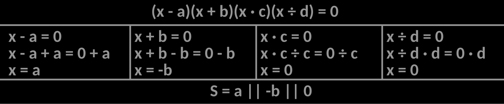
What makes an equation quadratic
A quadratic equation is one that can be written as ax2 + bx + c = 0, where a, b, and c are numbers and a ≠ 0. That last condition matters: if a were 0 the x2 term would vanish and you would be back to a linear equation. The number a is called the leading coefficient, b is the linear coefficient, and c is the constant term. Writing an equation in this order, with everything on one side and 0 on the other, is called putting it in standard form, and almost every technique in this chapter assumes you have done that first.
Here is the single most important idea in the whole section. If two numbers multiply to give zero, then at least one of them had to be zero — there is no other way to land on zero. Written formally, this is the zero product property: if A · B = 0, then A = 0 or B = 0 (or both). Nothing like this is true for any other number. If A · B = 12, you learn almost nothing about A and B individually. Zero is special, and that specialness is what lets factoring solve equations.
The method, worked all the way through
The plan is always the same four moves: get 0 alone on one side, factor the other side completely, set each factor equal to zero, and solve those small equations. Let us do x2 + 5x = 24 slowly.
Step 1 — standard form. Subtract 24 from both sides so the right side becomes 0.
x2 + 5x − 24 = 0
Step 2 — factor. Since the leading coefficient is 1, we need two numbers that multiply to −24 and add to 5. Run the pairs: 1 and −24 add to −23; 2 and −12 add to −10; 3 and −8 add to −5; 8 and −3 add to 5. That last pair works.
(x + 8)(x − 3) = 0
Step 3 — zero product property. The product is zero, so one of the two factors is zero.
x + 8 = 0 or x − 3 = 0
Step 4 — solve each. x = −8 or x = 3.
Step 5 — check both. For x = −8: (−8)2 + 5(−8) = 64 − 40 = 24. ✓ For x = 3: 32 + 5(3) = 9 + 15 = 24. ✓ Both work, so the solution set is {−8, 3}.
Three variations you will meet constantly
A common factor first. Solve 2x2 = 8x. Move everything left: 2x2 − 8x = 0. Factor out 2x: 2x(x − 4) = 0. So 2x = 0 or x − 4 = 0, giving x = 0 or x = 4. Check: 2(0)2 = 0 and 8(0) = 0 ✓; 2(4)2 = 32 and 8(4) = 32 ✓. Notice the temptation to divide both sides of 2x2 = 8x by x at the start. Never do that. Dividing by x silently assumes x ≠ 0 and throws away the perfectly good solution x = 0. The danger runs in the other direction too: multiplying both sides by a variable expression — the usual move for clearing a denominator such as (1)/(x − 2), where the excluded value is x = 2 — can manufacture a solution that the original equation never had. Both hazards have the same cure. Any step that is not reversible obliges you to substitute every candidate back into the original equation before you call it a solution, which is why every example in this chapter ends with a check.
A leading coefficient that is not 1. Solve 6x2 − 7x − 3 = 0. Use the ac-method: multiply a · c = 6(−3) = −18, then find two numbers that multiply to −18 and add to b = −7. Those are −9 and 2, since (−9)(2) = −18 and −9 + 2 = −7. Split the middle term and group:
6x2 − 9x + 2x − 3 = 0
3x(2x − 3) + 1(2x − 3) = 0
(2x − 3)(3x + 1) = 0
So 2x − 3 = 0 giving x = (3)/(2), or 3x + 1 = 0 giving x = −(1)/(3). Check x = (3)/(2): 6 · (9)/(4) − 7 · (3)/(2) − 3 = (54)/(4) − (21)/(2) − 3 = 13.5 − 10.5 − 3 = 0 ✓. Check x = −(1)/(3): 6 · (1)/(9) − 7(−(1)/(3)) − 3 = (2)/(3) + (7)/(3) − 3 = (9)/(3) − 3 = 0 ✓.
A repeated solution. Solve x2 − 6x + 9 = 0. This factors as (x − 3)(x − 3) = 0, or (x − 3)2 = 0. Both factors give the same answer, x = 3. We call this a double root or repeated root. There is genuinely only one solution, and Section 4 will show you what that looks like on a graph.
| Pattern | Recognize it by | Factored form | Worked example |
|---|---|---|---|
| Common factor | Every term shares a factor | x(ax + b) | 2x2 − 8x = 2x(x − 4) |
| Difference of squares | Two perfect squares, subtracted | (x − k)(x + k) | x2 − 25 = (x − 5)(x + 5) |
| Trinomial, a = 1 | Leading coefficient is 1 | (x + m)(x + n), mn = c, m + n = b | x2 + 5x − 24 = (x + 8)(x − 3) |
| Trinomial, a ≠ 1 | Leading coefficient other than 1 | Split bx using two numbers with product ac, then group | 6x2 − 7x − 3 = (2x − 3)(3x + 1) |
| Perfect square trinomial | First and last terms are squares; middle is twice their roots | (x ± k)2 | x2 − 6x + 9 = (x − 3)2 |
| Sum of squares | Two perfect squares, added | Does not factor over the real numbers | x2 + 25 stays as it is |
- A quadratic equation can be written ax2 + bx + c = 0 with a ≠ 0.
- The zero product property: if A · B = 0, then A = 0 or B = 0 — and it works only when the other side is zero.
- Procedure: standard form → factor completely → set each factor to 0 → solve → check.
- Never divide both sides by a variable — you lose the solution x = 0. Factoring is fast, but only some quadratics factor, so Sections 2 and 3 cover the rest.
Section 2Square root property and completing the square
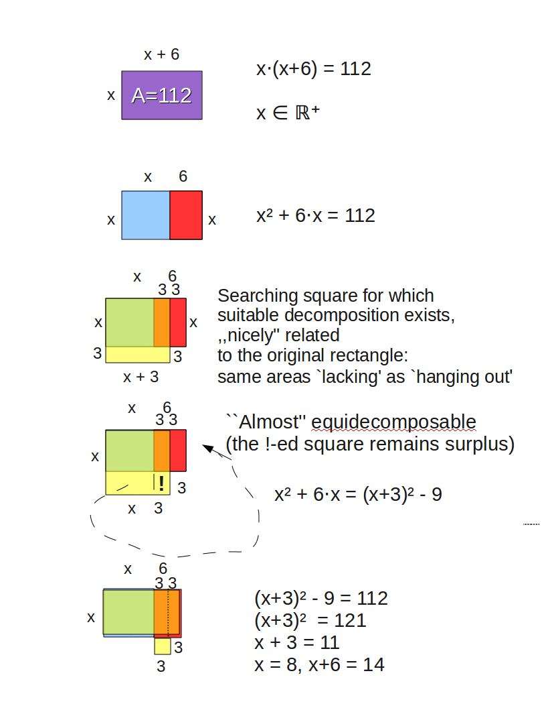
The square root property, and why ± appears
Suppose x2 = 49. Most people answer 7 instantly, and they are half right. Both 7 and −7 square to 49, so there are two solutions. The square root property says: if x2 = k, then x = ±√k. The ± symbol is shorthand for "both the positive and the negative version," and forgetting it is the single most common error in this section. If k < 0 there is no real solution at all, because no real number squares to a negative.
This property is powerful because it applies to a whole squared expression, not just to a lone x. Solve (x − 3)2 = 49 step by step:
Step 1. Apply the square root property to the whole quantity in parentheses.
x − 3 = ±√49 = ±7
Step 2. Split into two equations and solve each.
x − 3 = 7 → x = 10 and x − 3 = −7 → x = −4
Step 3 — check. (10 − 3)2 = 72 = 49 ✓. (−4 − 3)2 = (−7)2 = 49 ✓.
One more, with the squared term buried. Solve 2(x + 5)2 − 18 = 0. Add 18 to both sides: 2(x + 5)2 = 18. Divide both sides by 2: (x + 5)2 = 9. Now take square roots: x + 5 = ±3. So x = −5 + 3 = −2, or x = −5 − 3 = −8. Check x = −2: 2(3)2 − 18 = 18 − 18 = 0 ✓. Check x = −8: 2(−3)2 − 18 = 18 − 18 = 0 ✓. If the square root is not a whole number, simplify it: x2 = 12 gives x = ±√12 = ±2√3, and that exact form is the preferred answer.
Completing the square: manufacturing a perfect square
The square root property is wonderful — but only when the equation already contains a perfect square. Completing the square is the technique that forces one to appear. The idea rests on a pattern worth memorizing: x2 + 2kx + k2 = (x + k)2. Read it backwards and it tells you what to add: take the coefficient of x, cut it in half, square that, and add it. That is the whole trick.
Solve x2 + 6x − 7 = 0 by completing the square.
Step 1 — isolate the variable terms. Add 7 to both sides.
x2 + 6x = 7
Step 2 — find the magic number. The coefficient of x is 6. Half of 6 is 3. Three squared is 9.
Step 3 — add it to both sides. This keeps the equation balanced.
x2 + 6x + 9 = 7 + 9
x2 + 6x + 9 = 16
Step 4 — write the left side as a square. It is (x + 3)2, using the same 3 from Step 2.
(x + 3)2 = 16
Step 5 — square root property.
x + 3 = ±4
Step 6 — solve and check. x = −3 + 4 = 1, or x = −3 − 4 = −7. Check x = 1: 1 + 6 − 7 = 0 ✓. Check x = −7: 49 − 42 − 7 = 0 ✓.
When the leading coefficient is not 1
The halve-and-square rule assumes the x2 term has a coefficient of 1, so if it does not, divide the whole equation by that coefficient first. Solve 2x2 − 12x + 10 = 0.
Step 1 — divide every term by 2.
x2 − 6x + 5 = 0
Step 2 — move the constant. Subtract 5.
x2 − 6x = −5
Step 3 — halve and square. Half of −6 is −3; (−3)2 = 9. Add 9 to both sides.
x2 − 6x + 9 = −5 + 9 = 4
Step 4 — factor and solve.
(x − 3)2 = 4 → x − 3 = ±2 → x = 5 or x = 1
Step 5 — check in the original equation. For x = 5: 2(25) − 12(5) + 10 = 50 − 60 + 10 = 0 ✓. For x = 1: 2(1) − 12(1) + 10 = 2 − 12 + 10 = 0 ✓.
Completing the square also handles equations that will not factor at all. Solve x2 + 4x − 6 = 0. Move the constant: x2 + 4x = 6. Half of 4 is 2, and 22 = 4, so add 4 to both sides: x2 + 4x + 4 = 10, which is (x + 2)2 = 10. Then x + 2 = ±√10, so x = −2 ± √10. Numerically √10 ≈ 3.162, so the solutions are about 1.162 and −5.162 — nowhere near the tidy integers factoring would have needed. Leave the exact answer as −2 ± √10.
| Step | What you do | On x2 − 6x + 5 = 0 | Why |
|---|---|---|---|
| 1 | Make the leading coefficient 1 | Already 1 | The halve-and-square rule needs it |
| 2 | Move the constant to the right | x2 − 6x = −5 | Clears room for the new constant |
| 3 | Halve b, then square it | (−6)/(2) = −3; (−3)2 = 9 | This is the missing corner of the square |
| 4 | Add that number to both sides | x2 − 6x + 9 = 4 | Balance must be preserved |
| 5 | Factor the left as (x + b/2)2 | (x − 3)2 = 4 | That was the point of the whole thing |
| 6 | Square root property, with ± | x − 3 = ±2 | Two square roots, always |
| 7 | Solve and check | x = 5 or x = 1 | Catch arithmetic slips |
- Square root property: x2 = k gives x = ±√k. The ± is mandatory; if k < 0 there is no real solution.
- It applies to any squared expression: (x − h)2 = k gives x = h ± √k.
- Completing the square: divide by a, move c, add ((b)/(2))2 — half of the x-coefficient, squared — to both sides, factor, then take roots.
- This method works on every quadratic, factorable or not, and it is where the quadratic formula comes from.
Section 3The quadratic formula
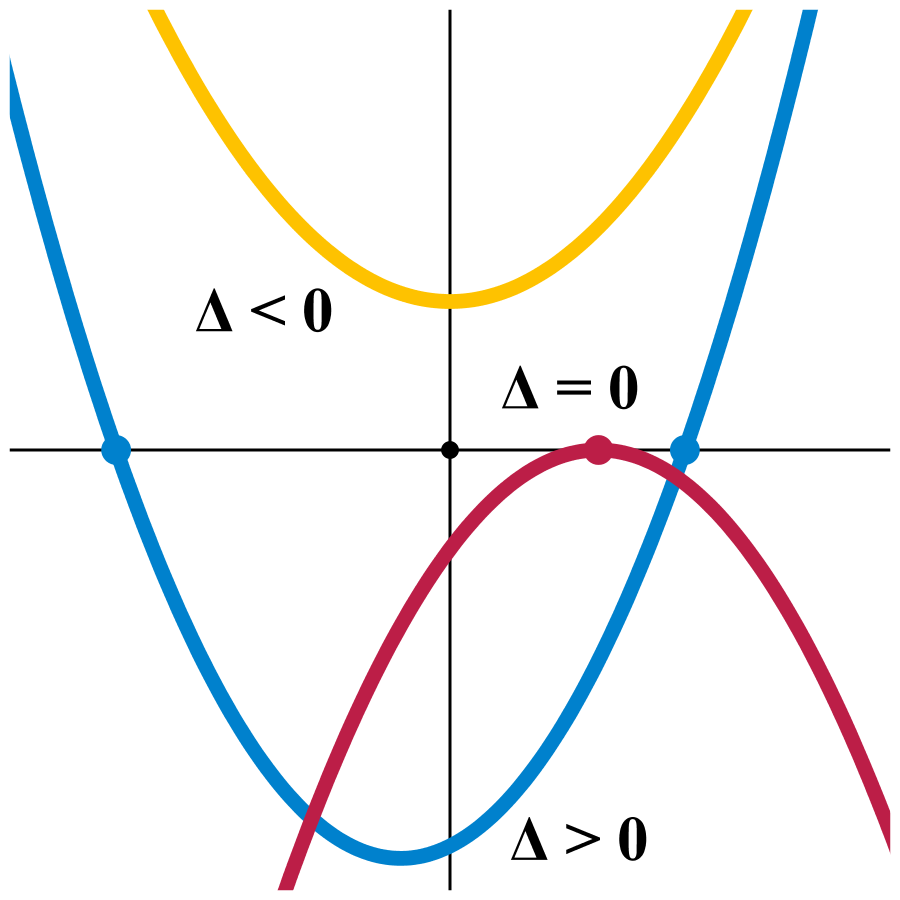
One formula that solves every quadratic
If you complete the square on the general equation ax2 + bx + c = 0 instead of on a specific one, you get a result that works forever. That result is the quadratic formula:
x = (−b ± √(b2 − 4ac))/(2a)
Two things to say about it before we use it. First, it requires standard form. You must have ax2 + bx + c = 0 before you can read off a, b, and c — there is no way to identify the coefficients otherwise. Second, the whole numerator sits over 2a, not just the radical. Dividing only part of the numerator is the classic mistake, and it produces answers that fail every check.
A full worked example
Solve 2x2 + 5x − 3 = 0.
Step 1 — identify the coefficients. The equation is already in standard form, so a = 2, b = 5, c = −3. Carry the sign of c with it.
Step 2 — compute the part under the radical.
b2 − 4ac = (5)2 − 4(2)(−3) = 25 − (−24) = 25 + 24 = 49
Step 3 — substitute into the formula.
x = (−5 ± √49)/(2 · 2) = (−5 ± 7)/(4)
Step 4 — split the ± into two arithmetic problems.
x = (−5 + 7)/(4) = (2)/(4) = (1)/(2) and x = (−5 − 7)/(4) = (−12)/(4) = −3
Step 5 — check. For x = (1)/(2): 2 · (1)/(4) + 5 · (1)/(2) − 3 = 0.5 + 2.5 − 3 = 0 ✓. For x = −3: 2(9) + 5(−3) − 3 = 18 − 15 − 3 = 0 ✓.
Now one that is not already in standard form, and where b is negative. Solve 3x2 = 5x + 2. Subtract 5x and 2 from both sides: 3x2 − 5x − 2 = 0, so a = 3, b = −5, c = −2. Then b2 − 4ac = 25 − 4(3)(−2) = 25 + 24 = 49, and −b = −(−5) = +5. So x = (5 ± 7)/(6). That gives x = (12)/(6) = 2 or x = (−2)/(6) = −(1)/(3). Check x = 2: 3(4) = 12 and 5(2) + 2 = 12 ✓. Check x = −(1)/(3): 3 · (1)/(9) = (1)/(3), and 5(−(1)/(3)) + 2 = −(5)/(3) + (6)/(3) = (1)/(3) ✓.
And one with an irrational answer. Solve 3x2 − 6x + 2 = 0, where a = 3, b = −6, c = 2. Then b2 − 4ac = 36 − 4(3)(2) = 36 − 24 = 12, so x = (6 ± √12)/(6). Simplify √12 = 2√3, giving x = (6 ± 2√3)/(6). Factor 2 from the numerator and cancel: x = (3 ± √3)/(3). Since √3 ≈ 1.732, the solutions are about (4.732)/(3) ≈ 1.577 and (1.268)/(3) ≈ 0.423.
The discriminant: a preview of the answer
The expression under the radical, b2 − 4ac, is called the discriminant. Its sign alone tells you how many real solutions to expect, before you finish any arithmetic. If it is positive, the ± produces two different numbers. If it is exactly zero, the ± adds and subtracts nothing, so both branches collapse to the single value −b/(2a). If it is negative, you are being asked for the square root of a negative number, and there is no real solution.
Two quick reads. For x2 + x + 3 = 0: b2 − 4ac = 1 − 4(1)(3) = 1 − 12 = −11, which is negative, so there are no real solutions — stop, do not waste effort. For 4x2 − 12x + 9 = 0: b2 − 4ac = 144 − 4(4)(9) = 144 − 144 = 0, so there is exactly one solution, x = −(−12)/(2 · 4) = (12)/(8) = (3)/(2). Sure enough, 4x2 − 12x + 9 = (2x − 3)2.
| Discriminant b2 − 4ac | Number of real solutions | Type of solutions | Graph crosses the x-axis | Example |
|---|---|---|---|---|
| Positive, perfect square | Two | Rational — it would have factored | Twice | 2x2 + 5x − 3 = 0 (49) |
| Positive, not a perfect square | Two | Irrational, containing a radical | Twice | 3x2 − 6x + 2 = 0 (12) |
| Exactly zero | One (a double root) | Rational | Touches once at the vertex | 4x2 − 12x + 9 = 0 (0) |
| Negative | None in the real numbers | Two complex (non-real) | Never | x2 + x + 3 = 0 (−11) |
- Quadratic formula: x = (−b ± √(b2 − 4ac))/(2a), valid for every quadratic with a ≠ 0.
- Put the equation in standard form first, read off a, b, c with their signs, and divide the entire numerator by 2a.
- The discriminant b2 − 4ac predicts the outcome: positive → two real, zero → one real, negative → none real.
- Simplify radicals and reduce fractions; give exact answers unless a decimal is requested.
Section 4Graphing quadratic functions
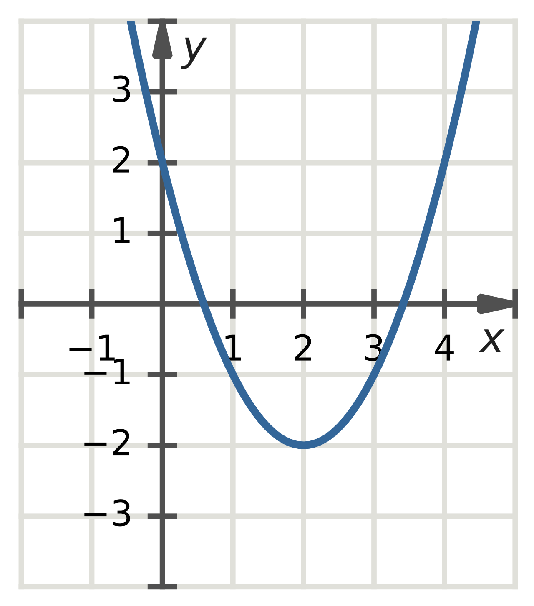
Shape, direction, and the vertex
A quadratic function is f(x) = ax2 + bx + c with a ≠ 0, and its graph is always a parabola — a symmetric U-shaped curve. Three facts about a tell you the picture before you plot a single point. If a > 0 the parabola opens upward and its lowest point is a minimum. If a < 0 it opens downward and its highest point is a maximum. And the size of |a| controls the width: |a| larger than 1 makes it narrower and steeper, while |a| between 0 and 1 makes it wider and flatter.
The turning point is the vertex. The vertical line through it is the axis of symmetry, and the parabola is a perfect mirror image across that line. Both come from one formula:
axis of symmetry: x = −(b)/(2a) · vertex: (−(b)/(2a), f(−(b)/(2a)))
In words: compute x = −b/(2a) to get the x-coordinate, then plug that number back into the function to get the y-coordinate. The y-intercept is always easy — set x = 0 and you get (0, c). The x-intercepts, also called the roots or zeros, are wherever f(x) = 0, which is exactly the equation-solving you did in Sections 1 through 3. The discriminant now has a visual meaning: two real solutions means the parabola crosses the x-axis twice, one means it just touches at the vertex, and none means it floats entirely above or below the axis.
An upward parabola, worked completely
Graph f(x) = x2 − 6x + 5.
Step 1 — direction. a = 1, which is positive, so the parabola opens upward and has a minimum.
Step 2 — axis of symmetry. x = −(b)/(2a) = −(−6)/(2 · 1) = (6)/(2) = 3. The axis is the vertical line x = 3.
Step 3 — vertex. Substitute x = 3 back in: f(3) = (3)2 − 6(3) + 5 = 9 − 18 + 5 = −4. The vertex is (3, −4), and −4 is the minimum value of the function.
Step 4 — y-intercept. f(0) = 0 − 0 + 5 = 5, so the graph passes through (0, 5).
Step 5 — x-intercepts. Set the function equal to zero: x2 − 6x + 5 = 0, which factors as (x − 1)(x − 5) = 0, so x = 1 and x = 5. The intercepts are (1, 0) and (5, 0). Notice they sit symmetrically around x = 3, one two units left and one two units right — a free accuracy check.
Step 6 — use symmetry for one more point. Since (0, 5) is three units left of the axis, its mirror image three units right is (6, 5). Verify: f(6) = 36 − 36 + 5 = 5 ✓. Plot (3, −4), (1, 0), (5, 0), (0, 5), (6, 5) and draw a smooth U through them.
Vertex form, and a downward parabola
Vertex form is f(x) = a(x − h)2 + k, and it hands you the vertex directly: it is (h, k), with axis of symmetry x = h. Watch the sign — in f(x) = 2(x + 3)2 − 7, the h is −3, not 3, because x + 3 is x − (−3). You convert to vertex form by completing the square. For our example: x2 − 6x + 5 = (x2 − 6x + 9) − 9 + 5 = (x − 3)2 − 4. The vertex (3, −4) is now readable at a glance, matching Step 3 above.
Now graph g(x) = −2x2 + 8x − 5. Here a = −2, so it opens downward and is narrower than a basic parabola. Axis: x = −(8)/(2(−2)) = −(8)/(−4) = 2. Vertex: g(2) = −2(2)2 + 8(2) − 5 = −2(4) + 16 − 5 = −8 + 16 − 5 = 3, so the vertex is (2, 3) and the maximum value is 3. The y-intercept is (0, −5). For x-intercepts, solve −2x2 + 8x − 5 = 0; multiply through by −1 to get 2x2 − 8x + 5 = 0, whose discriminant is 64 − 4(2)(5) = 64 − 40 = 24. So x = (8 ± √24)/(4) = (8 ± 2√6)/(4) = (4 ± √6)/(2). With √6 ≈ 2.449, the intercepts are near x ≈ 3.22 and x ≈ 0.78. In vertex form: −2x2 + 8x − 5 = −2(x2 − 4x) − 5 = −2(x2 − 4x + 4) + 8 − 5 = −2(x − 2)2 + 3, confirming the vertex (2, 3).
| Feature | How to find it | f(x) = x2 − 6x + 5 | g(x) = −2x2 + 8x − 5 |
|---|---|---|---|
| Direction | Sign of a | a = 1 > 0 → opens up | a = −2 < 0 → opens down |
| Axis of symmetry | x = −b/(2a) | x = 3 | x = 2 |
| Vertex | Plug the axis value into the function | (3, −4) | (2, 3) |
| Min or max value | The y-coordinate of the vertex | Minimum −4 | Maximum 3 |
| y-intercept | Set x = 0; it is (0, c) | (0, 5) | (0, −5) |
| x-intercepts | Solve f(x) = 0 | (1, 0) and (5, 0) | ((4 ± √6)/(2), 0) |
| Vertex form | Complete the square | (x − 3)2 − 4 | −2(x − 2)2 + 3 |
| Domain / range | Domain always all reals | Range y ≥ −4 | Range y ≤ 3 |
- The graph of f(x) = ax2 + bx + c is a parabola; a > 0 opens up (minimum), a < 0 opens down (maximum).
- Axis of symmetry: x = −b/(2a); the vertex is that x together with f of that x.
- The y-intercept is (0, c); the x-intercepts are the real solutions of f(x) = 0.
- Vertex form a(x − h)2 + k displays the vertex (h, k) immediately; get there by completing the square. The domain is always all real numbers, and the range is y ≥ k opening up or y ≤ k opening down.
Section 5Applications
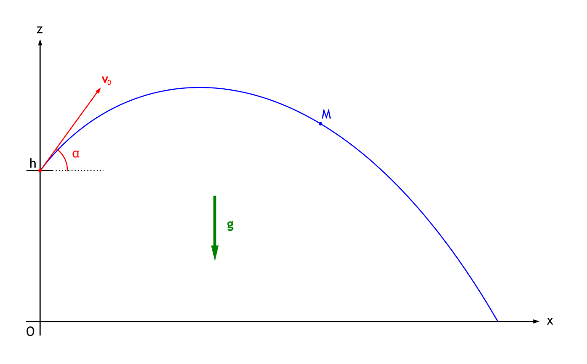
Projectile height
Anything thrown, launched, or dropped near the earth's surface follows a quadratic height model, because gravity supplies a constant acceleration. In feet and seconds the standard model is h(t) = −16t2 + v0t + h0, where t is time in seconds, v0 is the initial upward velocity in feet per second, and h0 is the starting height in feet. The −16 is half of gravity's acceleration and never changes; it is negative, so the parabola opens downward, which is why every throw has a highest point.
A ball is thrown upward from a 6-foot-high platform at 64 feet per second, so h(t) = −16t2 + 64t + 6.
Question A — when does it reach its maximum height, and how high is that? The maximum is at the vertex. t = −(b)/(2a) = −(64)/(2(−16)) = −(64)/(−32) = 2 seconds. Then h(2) = −16(2)2 + 64(2) + 6 = −16(4) + 128 + 6 = −64 + 128 + 6 = 70 feet. It peaks at 70 feet, 2 seconds after release.
Question B — when is the ball 54 feet high? Set h(t) = 54 and solve.
−16t2 + 64t + 6 = 54
−16t2 + 64t − 48 = 0
Divide every term by −16: t2 − 4t + 3 = 0
(t − 1)(t − 3) = 0, so t = 1 or t = 3.
Both answers are real and both are meaningful: the ball passes 54 feet on the way up at 1 second and again on the way down at 3 seconds. Check: h(1) = −16 + 64 + 6 = 54 ✓ and h(3) = −16(9) + 192 + 6 = −144 + 198 = 54 ✓.
Question C — when does it hit the ground? Ground level is h = 0, so −16t2 + 64t + 6 = 0. Multiply by −1: 16t2 − 64t − 6 = 0, then divide by 2: 8t2 − 32t − 3 = 0. This will not factor, so use the formula with a = 8, b = −32, c = −3. The discriminant is (−32)2 − 4(8)(−3) = 1024 + 96 = 1120, and √1120 ≈ 33.47. So t = (32 ± 33.47)/(16), giving t ≈ (65.47)/(16) ≈ 4.09 or t ≈ (−1.47)/(16) ≈ −0.09. Reject the negative root — time cannot run backwards from the moment of release. The ball lands about 4.09 seconds after it is thrown.
Area problems
Area is length times width, and when one dimension is described in terms of the other, that product becomes a quadratic. A gardener has 60 feet of fencing and wants a rectangular plot against the flat side of a barn, so fencing is needed on only three sides.
Step 1 — name a variable and write both dimensions. Let x be the width of each of the two sides perpendicular to the barn. Those use 2x feet of fence, so the side parallel to the barn is 60 − 2x feet.
Step 2 — write the area function and note its restrictions.
A(x) = x(60 − 2x) = −2x2 + 60x
Both dimensions must be positive, so x > 0 and 60 − 2x > 0. Solve that second inequality one step at a time: subtract 60 from both sides to get −2x > −60, then divide both sides by −2. Here the rule that catches everyone applies — multiplying or dividing an inequality by a negative number reverses the inequality sign — so the result is x < 30, not x > 30. (Sanity check with a number: x = 40 would make 60 − 2x = −20, a negative side length, so 40 had better fail the inequality — and it does.) The sensible domain is 0 < x < 30.
Step 3 — find the largest possible area. Since a = −2 < 0, the vertex is a maximum. x = −(60)/(2(−2)) = −(60)/(−4) = 15. Then A(15) = 15(60 − 30) = 15(30) = 450. The biggest plot is 15 feet by 30 feet, with an area of 450 square feet. Fence check: 15 + 15 + 30 = 60 ✓.
Step 4 — a different question: which widths give exactly 400 square feet?
−2x2 + 60x = 400
−2x2 + 60x − 400 = 0
Divide by −2: x2 − 30x + 200 = 0
(x − 10)(x − 20) = 0, so x = 10 or x = 20.
Both fall inside 0 < x < 30, so both are genuine answers: a 10 by 40 plot (10 · 40 = 400 ✓) or a 20 by 20 plot (20 · 20 = 400 ✓). Two shapes, same area.
Maximum and minimum in business
Revenue is price times quantity sold, and since raising the price usually lowers the quantity, revenue is quadratic. A shop currently sells 80 units per week at $15 each. Market research says every $1 increase in price will cost 4 sales per week.
Step 1 — define the variable. Let x be the number of $1 increases. Then the price is 15 + x dollars and the quantity sold is 80 − 4x units.
Step 2 — build the revenue function and expand.
R(x) = (15 + x)(80 − 4x) = 1200 − 60x + 80x − 4x2 = −4x2 + 20x + 1200
Step 3 — locate the vertex. Because a = −4 < 0, the vertex is a maximum. x = −(20)/(2(−4)) = −(20)/(−8) = 2.5.
Step 4 — translate the answer back into the story. Price = 15 + 2.5 = $17.50. Quantity = 80 − 4(2.5) = 80 − 10 = 70 units. Maximum revenue = R(2.5) = −4(2.5)2 + 20(2.5) + 1200 = −4(6.25) + 50 + 1200 = −25 + 1250 = $1225. Direct check: 17.50 · 70 = $1225 ✓. Notice the question asked for a price, not for x — answering "2.5" would be an incomplete answer.
| Question being asked | What to do | Restriction to apply |
|---|---|---|
| Highest or lowest value | Find the vertex; the y-coordinate is the extreme value | Confirm the sign of a matches max vs. min |
| When does it reach a given height or amount | Set the function equal to that number and solve | Expect two times — often both are valid |
| When does it hit the ground / reach zero | Set the function equal to 0 and solve | Discard negative time |
| Dimensions giving a specified area | Write area as a product, expand, set equal, solve | Discard negative or zero lengths |
| Best price for maximum revenue | Revenue = price × quantity; find the vertex | Convert x back into the quantity actually requested |
- Projectile height in feet and seconds: h(t) = −16t2 + v0t + h0; it opens downward, so the vertex is the peak.
- Maximum or minimum questions are vertex questions: t or x = −b/(2a), then substitute back for the value.
- "When is it at height H?" is an equation question: set the function equal to H and solve, usually getting two times. Area problems become quadratic when one dimension is written in terms of the other.
- Reject solutions that do not fit the situation — negative time, negative length, values outside the domain — and answer in the units asked for.
The chapter in one breath
- A quadratic equation is ax2 + bx + c = 0 with a ≠ 0; nearly every method starts by putting it in that standard form.
- The zero product property turns a factored equation into simple linear ones — but only when the other side is exactly zero.
- The square root property solves anything of the form (x − h)2 = k, and the ± is not optional.
- Completing the square manufactures that perfect square: divide by a, move c, add half of b squared to both sides.
- The quadratic formula x = (−b ± √(b2 − 4ac))/(2a) always works; the discriminant predicts two, one, or no real solutions.
- Every quadratic function graphs as a parabola: direction from the sign of a, axis of symmetry at x = −b/(2a), vertex there, y-intercept at (0, c), x-intercepts where f(x) = 0.
- Vertex form a(x − h)2 + k shows the vertex (h, k) at a glance and comes from completing the square.
- Applications reduce to two questions: a vertex question (how high, how large, how much) or an equation question (when, what dimensions) — and you must discard answers the situation forbids.
ReferenceWords worth knowing
A quick reference for the vocabulary in this chapter. Skim it now to prime yourself, then come back whenever a word slows you down mid-problem.
- Axis of symmetry
- The vertical line x = −b/(2a) that splits a parabola into two mirror-image halves; it passes through the vertex.
- Completing the square
- Adding ((b)/(2))2 to both sides of x2 + bx = d so the left side becomes a perfect square trinomial that can be solved with the square root property.
- Discriminant
- The expression b2 − 4ac under the radical of the quadratic formula; its sign reveals the number and type of solutions.
- Double root
- A solution that occurs twice because both factors are identical, as in (x − 3)2 = 0; the graph touches the x-axis at the vertex without crossing.
- Excluded value
- A number that a variable is not permitted to take because it would make a denominator zero or otherwise break the expression; excluded values must be stated before solving and can never appear in a final answer.
- Extraneous solution
- A value that satisfies a transformed equation but not the original one, produced by a step that is not reversible — squaring both sides, or multiplying through by a variable expression. It is not the same thing as a root rejected for physical reasons, such as a negative time: that root genuinely satisfies the equation and is discarded only because it falls outside the model's domain. Catch both by substituting every candidate back into the original equation and then back into the situation.
- Factoring
- Rewriting an expression as a product of simpler expressions, which then lets the zero product property finish the job.
- Greatest common factor (GCF)
- The largest factor shared by every term; always pull it out before attempting any other factoring pattern.
- Leading coefficient
- The number a multiplying x2; it must not be 0, and its sign decides whether the parabola opens up or down.
- Maximum value
- The largest output of a quadratic function, equal to the y-coordinate of the vertex when a < 0.
- Minimum value
- The smallest output of a quadratic function, equal to the y-coordinate of the vertex when a > 0.
- Parabola
- The symmetric U-shaped curve that is the graph of every quadratic function.
- Perfect square trinomial
- A trinomial of the form x2 ± 2kx + k2, which factors as (x ± k)2.
- Projectile model
- The height function h(t) = −16t2 + v0t + h0 (feet and seconds) describing an object moving under gravity alone.
- Quadratic equation
- An equation that can be written ax2 + bx + c = 0 with a ≠ 0.
- Quadratic formula
- x = (−b ± √(b2 − 4ac))/(2a) — the solution to every quadratic equation, derived by completing the square in general.
- Quadratic function
- A function f(x) = ax2 + bx + c with a ≠ 0, whose domain is all real numbers.
- Root (zero)
- A value of x that makes the function equal 0; graphically an x-intercept.
- Square root property
- If x2 = k then x = ±√k; there is no real solution when k < 0.
- Standard form
- The arrangement ax2 + bx + c = 0 (or f(x) = ax2 + bx + c) with terms in descending powers and 0 on one side.
- Vertex
- The turning point of a parabola, at (−b/(2a), f(−b/(2a))); it is the minimum or maximum point.
- Vertex form
- The arrangement f(x) = a(x − h)2 + k, which displays the vertex (h, k) directly.
- Zero product property
- If A · B = 0 then A = 0 or B = 0; the reason factoring solves equations.
Check yourself
Polynomial & Rational Functions
Up to now most of the functions you have graphed have been lines and parabolas — one bend at most. This chapter opens the door to curves with several bends, curves that shoot off to infinity, and curves with invisible walls they can never cross. The good news is that you do not have to plot a hundred points to draw any of them. A polynomial's whole personality is written in two numbers — its degree and its leading coefficient — and a rational function's whole personality falls out of one move: factor the top, factor the bottom, and see what cancels. Everything in this chapter is a checklist, and we will walk every checklist one slow step at a time.
By the end of this chapter you can
- Recognize a polynomial function and state its degree and leading coefficient.
- Predict a polynomial's end behavior from degree and leading coefficient alone.
- Find the zeros of a polynomial by factoring and using the zero-product property.
- Use multiplicity to decide whether a graph crosses the x-axis or touches and turns around.
- Divide polynomials by long division and by synthetic division.
- Apply the Remainder Theorem and Factor Theorem to test and peel off factors.
- State the domain of a rational function and locate its vertical asymptotes, horizontal asymptotes, and holes.
- Assemble a complete, correct sketch of a rational function from its intercepts, asymptotes, and sign chart.
Section 1Polynomial graphs: degree, leading coefficient, and end behavior

What makes a function a polynomial
A polynomial function is a sum of terms, each one a number multiplied by x raised to a whole-number power. Written out in full it looks like this:
P(x) = anxn + an−1xn−1 + … + a1x + a0, with an ≠ 0
That looks intimidating, so translate it. The exponents must be 0, 1, 2, 3, … — never negative, never a fraction. The coefficients (the numbers out front) can be anything real. And an ≠ 0 just means we are not allowed to pretend a term is there when its coefficient is zero.
Three quick sorting decisions. f(x) = 4x3 − x + 9 is a polynomial: exponents 3, 1, and 0. g(x) = 5/x + 2 is not, because 5/x is really 5x−1 and negative exponents are banned. h(x) = √x + 1 is not, because √x is x1/2 and fractional exponents are banned too. Those two outlaws are not useless — the first one is a rational function and shows up later in this very chapter — they simply are not polynomials.
Two visual consequences follow immediately, and they are worth memorizing because they are what let you sketch quickly. A polynomial graph is continuous (you can draw it without lifting your pencil — no gaps, no jumps) and smooth (no sharp corners, only gentle turns).
Degree and leading coefficient
Write the polynomial in standard form — highest exponent first, descending down to the constant. Then the degree is that highest exponent, and the leading coefficient is the number sitting in front of it. Order matters here only because it is easy to grab the wrong term from a jumbled expression; rearranging first costs you five seconds and saves you the mistake.
Consider f(x) = 4x − 2x3 + 5x2 − 1. Rearranged: f(x) = −2x3 + 5x2 + 4x − 1. Now it is obvious: degree 3, leading coefficient −2. Notice the leading coefficient carries its sign with it. It is −2, not 2, and that minus sign is about to decide which way the whole graph points.
The degree also caps two counts. A degree-n polynomial has at most n real zeros (x-intercepts) and at most n − 1 turning points — places where the curve stops rising and starts falling, or vice versa. A cubic can wiggle twice; it can never wiggle three times.
End behavior: what the graph does at the far edges
End behavior answers a simple question: if you follow the curve far to the right and far to the left, does each arm go up or down? Out at the extremes, the highest-power term completely dominates every other term, so only two facts matter — whether the degree is even or odd, and whether the leading coefficient is positive or negative. Four combinations, four pictures.
| Degree | Leading coefficient | Left end (as x → −∞) | Right end (as x → +∞) | Looks like |
|---|---|---|---|---|
| Even | Positive | Rises (→ +∞) | Rises (→ +∞) | Both arms up, like y = x2 |
| Even | Negative | Falls (→ −∞) | Falls (→ −∞) | Both arms down, like y = −x2 |
| Odd | Positive | Falls (→ −∞) | Rises (→ +∞) | Down-left, up-right, like y = x3 |
| Odd | Negative | Rises (→ +∞) | Falls (→ −∞) | Up-left, down-right, like y = −x3 |
If the table feels like four things to memorize, it is really only two. Even degree means the two ends agree (both up or both down, like a parabola). Odd degree means the two ends disagree (one up, one down). Then a negative leading coefficient simply flips whatever picture you just drew upside down.
Worked example — every step
Describe the end behavior of f(x) = −2x3 + 5x2 + 4x − 1, then prove it with actual arithmetic.
Step 1 — find the degree. The exponents present are 3, 2, 1, and 0. The highest is 3, so the degree is 3. Three is odd.
Step 2 — find the leading coefficient. The degree-3 term is −2x3, so the leading coefficient is −2. That is negative.
Step 3 — read the table. Odd degree with a negative leading coefficient: the graph rises on the left and falls on the right.
Step 4 — check the right end with a real number. Substitute x = 10 and do each piece separately:
- −2(10)3 = −2(1000) = −2000
- 5(10)2 = 5(100) = 500
- 4(10) = 40
- the constant is −1
Add them in order: −2000 + 500 = −1500; then −1500 + 40 = −1460; then −1460 − 1 = −1461. So f(10) = −1461 — a big negative number. The right arm is heading down. That matches Step 3.
Step 5 — check the left end. Substitute x = −10. Watch the signs carefully, because this is where most errors happen:
- −2(−10)3 = −2(−1000) = +2000 (an odd power of a negative number is negative, and the leading −2 flips it back to positive)
- 5(−10)2 = 5(100) = 500 (an even power of a negative number is positive)
- 4(−10) = −40
- the constant is −1
Add in order: 2000 + 500 = 2500; then 2500 − 40 = 2460; then 2460 − 1 = 2459. So f(−10) = 2459 — a big positive number. The left arm is heading up. Step 3 confirmed from both directions.
Step 6 — bound the wiggles. Degree 3 means at most 3 x-intercepts and at most 3 − 1 = 2 turning points. So the sketch is: come down from the upper left (Step 5 gave f(−10) = 2459, high above the axis), wiggle at most twice, and leave toward the lower right (Step 4 gave f(10) = −1461, far below it).
- A polynomial allows only whole-number exponents; its graph is continuous and smooth.
- Degree = highest exponent; leading coefficient = the number in front of it (sign included).
- Even degree → both ends agree; odd degree → the ends disagree; a negative leading coefficient flips the picture.
- Degree n allows at most n real zeros and at most n − 1 turning points.
Section 2Zeros and multiplicity
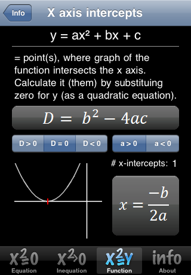
Four words for the same thing
A zero of P(x) is any number c with P(c) = 0. Textbooks and instructors will also call it a root of the equation P(x) = 0, a solution of that equation, or an x-intercept of the graph. These are four names for one idea, viewed from four angles: function language, equation language, solving language, and graph language. If c is a real zero, the point (c, 0) is on the graph.
The engine that finds zeros is the zero-product property: if a product of factors equals zero, then at least one of those factors is zero. So the strategy never changes — factor the polynomial completely, then set each factor equal to zero and solve. The strategy is easy; the factoring is the work.
One theorem makes the connection official. The Factor Theorem says (x − c) is a factor of P(x) exactly when P(c) = 0. Factors and zeros are two views of the same fact, and Section 3 turns that into a practical tool.
Worked example — finding zeros by factoring
Find all real zeros of P(x) = x3 + 2x2 − 8x.
Step 1 — pull out the greatest common factor. Every term contains at least one x, so factor x out: P(x) = x(x2 + 2x − 8). Never skip this step — students who jump straight to the quadratic formula routinely lose the zero at x = 0.
Step 2 — factor the trinomial. For x2 + 2x − 8 we need two numbers that multiply to −8 and add to +2. Test the pairs: 1 and −8 add to −7 (no); −1 and 8 add to 7 (no); 2 and −4 add to −2 (no); −2 and 4 add to +2 (yes). So x2 + 2x − 8 = (x + 4)(x − 2), and the whole thing is P(x) = x(x + 4)(x − 2).
Step 3 — set each factor to zero. x = 0 gives x = 0. Then x + 4 = 0 gives x = −4. Then x − 2 = 0 gives x = 2.
Step 4 — check every answer by substituting. This is the step that catches sign errors, and it takes fifteen seconds.
- P(0) = 03 + 2(0)2 − 8(0) = 0 + 0 − 0 = 0 ✓
- P(−4) = (−4)3 + 2(−4)2 − 8(−4) = −64 + 2(16) + 32 = −64 + 32 + 32 = 0 ✓
- P(2) = 23 + 2(2)2 − 8(2) = 8 + 2(4) − 16 = 8 + 8 − 16 = 0 ✓
The zeros are x = −4, x = 0, and x = 2, so the graph crosses the horizontal axis at (−4, 0), (0, 0), and (2, 0). Degree 3 allowed at most three, and we found three.
Multiplicity: cross, or touch and turn
Sometimes a factor repeats. In Q(x) = (x − 5)2(x + 1), the factor (x − 5) appears twice. The exponent on a factor is called the multiplicity of that zero: 5 is a zero of multiplicity 2, and −1 is a zero of multiplicity 1. Multiplicity is not bookkeeping trivia. It tells you exactly what the curve does when it arrives at that point on the axis.
| Multiplicity | Example factor | What the graph does there | Does the sign of P(x) change? |
|---|---|---|---|
| 1 (odd) | (x − 2) | Passes straight through the axis | Yes |
| 2 (even) | (x − 2)2 | Touches the axis and turns back — a bounce | No |
| 3 (odd) | (x − 2)3 | Crosses, but flattens out on the way through | Yes |
| 4 (even) | (x − 2)4 | Touches, flattens hard, and turns back | No |
| Any odd | — | Cross | Yes |
| Any even | — | Touch and turn | No |
Here is the reason, in one line. Near x = 2 the factor (x − 2) is negative on the left and positive on the right. Raise a quantity that changes sign to an even power and the result is positive on both sides — no sign change, so the graph stays on one side of the axis and must turn around. Raise it to an odd power and the sign survives — negative becomes positive, so the graph passes through.
Multiplicities also account for the degree. Add up all the multiplicities and you get the degree of the polynomial. In f(x) = (x + 2)(x − 1)2(x − 3)3 the multiplicities are 1, 2, and 3, so the degree is 1 + 2 + 3 = 6.
Worked example — a full sketch from factors
Describe the graph of f(x) = (x + 2)(x − 1)2(x − 3)3.
Step 1 — list zeros with multiplicities. Set each factor to zero. x + 2 = 0 → x = −2, multiplicity 1. x − 1 = 0 → x = 1, multiplicity 2. x − 3 = 0 → x = 3, multiplicity 3.
Step 2 — degree. 1 + 2 + 3 = 6. The degree is 6, which is even.
Step 3 — leading coefficient. Multiplying out would take a while, but we only need the leading term. Each factor contributes its own x: (x)(x)2(x)3 = x6, with coefficient 1 · 1 · 1 = 1. The leading coefficient is +1, positive.
Step 4 — end behavior. Even degree, positive leading coefficient → both ends rise.
Step 5 — behavior at each zero. At x = −2 (multiplicity 1, odd) the graph crosses plainly. At x = 1 (multiplicity 2, even) it touches and turns around without crossing. At x = 3 (multiplicity 3, odd) it crosses, flattening as it goes through.
Step 6 — the y-intercept, with the arithmetic shown. Substitute x = 0: f(0) = (0 + 2)(0 − 1)2(0 − 3)3 = (2)(−1)2(−3)3. Now (−1)2 = 1 and (−3)3 = −27, so f(0) = (2)(1)(−27) = −54. The graph passes through (0, −54).
Step 7 — assemble it. Coming down from the upper left, the curve crosses at x = −2 into negative territory, dips through (0, −54), rises to just touch the axis at x = 1 and bounce back down, then crosses upward at x = 3 with a flat spot, and rises forever. That is a complete, correct shape and we never plotted a table of points.
- Zero, root, solution, x-intercept all name the same number viewed four ways.
- Factor completely, then apply the zero-product property — and always check answers by substituting back.
- Odd multiplicity → the graph crosses; even multiplicity → it touches and turns around.
- The multiplicities add up to the degree, and the leading coefficient can be read off the factors without expanding.
Section 3Dividing polynomials
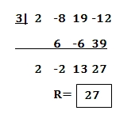
Why divide at all
Factoring a cubic or quartic by inspection is often hopeless. Division rescues you: if you can find one zero, dividing by its factor drops the degree by one, and you keep dropping until what is left is a quadratic you can factor or run through the quadratic formula. Division is also the only clean way to find the slant asymptote of a rational function, which is waiting for you in Section 5.
The bookkeeping is identical to the long division you learned with whole numbers. Dividing 17 by 5 gives a quotient of 3 and a remainder of 2, and we can write 17 = 5 · 3 + 2. Polynomials obey the same identity:
dividend = divisor · quotient + remainder, or P(x) = D(x) · Q(x) + R(x), where the degree of R(x) is less than the degree of D(x).
That identity is your answer-checker. Multiply the divisor by the quotient, add the remainder, and you must get the original polynomial back. If you do not, something went wrong and you now know it before you turn the page.
Worked example — long division, one step at a time
Divide x3 − 4x2 + 2x + 5 by x − 3.
Step 1 — divide the leading terms. x3 ÷ x = x2. Write x2 as the first term of the quotient. Multiply it back through the divisor: x2(x − 3) = x3 − 3x2. Subtract that from the first two terms of the dividend: (x3 − 4x2) − (x3 − 3x2) = x3 − x3 − 4x2 + 3x2 = −x2. Bring down the +2x, giving −x2 + 2x.
Step 2 — repeat. −x2 ÷ x = −x. That is the next quotient term. Multiply back: −x(x − 3) = −x2 + 3x. Subtract: (−x2 + 2x) − (−x2 + 3x) = −x2 + x2 + 2x − 3x = −x. Bring down the +5, giving −x + 5.
Step 3 — repeat once more. −x ÷ x = −1. Multiply back: −1(x − 3) = −x + 3. Subtract: (−x + 5) − (−x + 3) = −x + x + 5 − 3 = 2.
Step 4 — stop and read off the answer. The leftover 2 has degree 0, which is less than the divisor's degree 1, so we stop. The quotient is x2 − x − 1 and the remainder is 2:
(x3 − 4x2 + 2x + 5)/(x − 3) = x2 − x − 1 + (2)/(x − 3)
Step 5 — check it. Multiply divisor by quotient: (x − 3)(x2 − x − 1). Distribute the x: x3 − x2 − x. Distribute the −3: −3x2 + 3x + 3. Combine: x3 + (−x2 − 3x2) + (−x + 3x) + 3 = x3 − 4x2 + 2x + 3. Now add the remainder 2: x3 − 4x2 + 2x + 5. That is the original dividend exactly. ✓
Synthetic division: the shortcut for x − c
When — and only when — the divisor has the form x − c, you can throw away the letters and work with the coefficients alone. That is synthetic division. Two setup rules make or break it: use c from the form x − c (so dividing by x + 2 means c = −2), and write a 0 placeholder for every missing power.
Redo the same division, x3 − 4x2 + 2x + 5 divided by x − 3, synthetically. Coefficients: 1, −4, 2, 5. Divisor x − 3 means c = 3.
Step 1. Bring the first coefficient straight down: 1.
Step 2. Multiply it by c: 1 × 3 = 3. Add to the next coefficient: −4 + 3 = −1.
Step 3. Multiply: −1 × 3 = −3. Add to the next coefficient: 2 + (−3) = −1.
Step 4. Multiply: −1 × 3 = −3. Add to the last coefficient: 5 + (−3) = 2.
The bottom row reads 1, −1, −1, and then 2. The last number is always the remainder; the numbers before it are the quotient's coefficients, starting one degree lower than the dividend. The dividend was degree 3, so the quotient is degree 2: x2 − x − 1, remainder 2. Identical to the long-division answer, in about a quarter of the writing.
| Long division | Synthetic division | |
|---|---|---|
| Works for | Any divisor: x − 3, x2 + 1, 3x − 5, anything | Only divisors of the form x − c |
| You write | Full terms with variables | Coefficients only |
| Operations | Divide, multiply, subtract, bring down | Multiply and add (no subtracting) |
| Missing terms | Leave a gap or write 0x2 | Must write a 0 placeholder |
| Speed | Slower, more writing | Fast once the setup is right |
| Typical use | Slant asymptotes, quadratic divisors | Testing candidate zeros, peeling off factors |
The Remainder and Factor Theorems
Two theorems turn division into a zero-finding machine. The Remainder Theorem: when you divide P(x) by x − c, the remainder equals P(c). Check it against the example above: P(3) = 33 − 4(3)2 + 2(3) + 5 = 27 − 4(9) + 6 + 5 = 27 − 36 + 6 + 5 = 2. The remainder was 2. ✓
The Factor Theorem is the special case that matters most: if the remainder is 0, then P(c) = 0, which means c is a zero and (x − c) is a factor. Remainder zero, factor found.
Which numbers should you test? The Rational Zero Theorem narrows the field: any rational zero of a polynomial with integer coefficients must be of the form (factor of the constant term)/(factor of the leading coefficient). It does not promise a zero exists — it just hands you a short list instead of infinitely many numbers.
Worked example — factoring a cubic completely
Factor P(x) = x3 − 4x2 + x + 6 completely and list its zeros.
Step 1 — build the candidate list. The constant term is 6, with factors 1, 2, 3, 6. The leading coefficient is 1, with factor 1. So the candidates are ±1, ±2, ±3, ±6.
Step 2 — test candidates until one works. Try x = 1: P(1) = 1 − 4 + 1 + 6 = 4. Not zero. Try x = −1: P(−1) = (−1)3 − 4(−1)2 + (−1) + 6 = −1 − 4(1) − 1 + 6 = −1 − 4 − 1 + 6 = 0. Zero found. By the Factor Theorem, (x + 1) is a factor.
Step 3 — divide it out synthetically. Coefficients 1, −4, 1, 6; the factor (x + 1) is (x − (−1)), so c = −1.
- Bring down 1.
- 1 × (−1) = −1; then −4 + (−1) = −5.
- −5 × (−1) = 5; then 1 + 5 = 6.
- 6 × (−1) = −6; then 6 + (−6) = 0. The remainder is 0, exactly as promised.
Step 4 — factor what is left. The bottom row 1, −5, 6 means the quotient is x2 − 5x + 6. Two numbers multiplying to 6 and adding to −5 are −2 and −3, so x2 − 5x + 6 = (x − 2)(x − 3).
Step 5 — write the full factorization and the zeros. P(x) = (x + 1)(x − 2)(x − 3), so the zeros are x = −1, x = 2, and x = 3, each with multiplicity 1 — the graph crosses at all three.
Step 6 — check by expanding. First (x − 2)(x − 3) = x2 − 3x − 2x + 6 = x2 − 5x + 6. Then (x + 1)(x2 − 5x + 6) = x3 − 5x2 + 6x + x2 − 5x + 6 = x3 − 4x2 + x + 6. Original recovered. ✓
- dividend = divisor · quotient + remainder — multiply back to check every division.
- Long division handles any divisor; synthetic division is faster but only for x − c.
- Remainder Theorem: dividing by x − c leaves remainder P(c).
- Factor Theorem: remainder 0 means c is a zero and (x − c) is a factor — then factor the smaller quotient.
Section 4Rational functions: domain, asymptotes, and holes
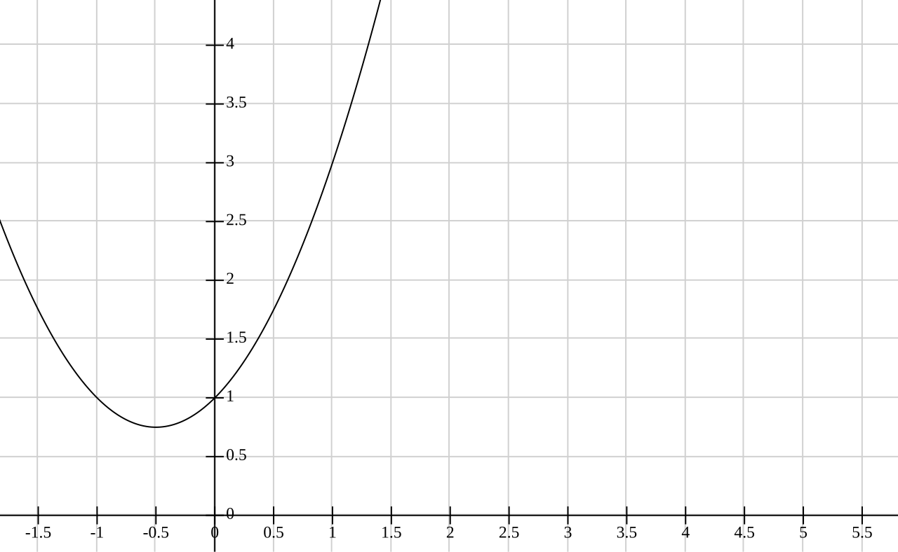
Domain: the first question, always
A rational function is one polynomial divided by another: f(x) = P(x)/Q(x), where Q(x) is not the zero polynomial. Every rule you already know about fractions applies, and the biggest one is that division by zero is undefined. So the domain of a rational function is every real number except those that make the denominator zero.
The procedure is short: set the denominator equal to zero, solve, and exclude those values. For f(x) = (x + 1)/(x − 4), setting x − 4 = 0 gives x = 4, so the domain is all real numbers with x ≠ 4. Notice we never look at the numerator for this. The numerator can be zero all day long — that just produces an x-intercept, which is perfectly legal.
Do this before you simplify. This is the single most important habit in the section, and Section 5's pearl will say it again, because cancelling first destroys the evidence of where the function was undefined.
What happens at an excluded value: hole or wall?
An excluded x-value is a place the graph cannot occupy, but there are two very different ways it can be missing, and factoring tells them apart.
If the offending factor cancels with a matching factor in the numerator, the gap is only one point wide: a hole, also called a removable discontinuity. The curve looks perfectly normal on both sides and you draw a small open circle at the missing point.
If the offending factor survives in the denominator after all cancelling, then near that x-value the denominator shrinks toward zero while the numerator does not, so the quotient blows up. That is a vertical asymptote — an invisible vertical wall the graph races along but never touches or crosses.
To find the height of a hole, substitute the missing x-value into the simplified function. The original will only hand you 0/0.
Worked example — domain, hole, and vertical asymptote
For f(x) = (x2 − 9)/(x2 − x − 6), find the domain, any holes, and any vertical asymptotes.
Step 1 — factor top and bottom. The numerator is a difference of squares: x2 − 9 = (x − 3)(x + 3). For the denominator, find two numbers multiplying to −6 and adding to −1: those are −3 and +2, so x2 − x − 6 = (x − 3)(x + 2). The function is now
f(x) = [(x − 3)(x + 3)]/[(x − 3)(x + 2)]
Step 2 — state the domain right now, before cancelling. The denominator is zero when x − 3 = 0 (so x = 3) or x + 2 = 0 (so x = −2). Domain: all real x with x ≠ 3 and x ≠ −2.
Step 3 — cancel. The factor (x − 3) appears top and bottom, so f(x) = (x + 3)/(x + 2), valid for x ≠ 3. That trailing restriction is not optional decoration — it is the whole record of the hole.
Step 4 — the cancelled factor gives a hole. Because (x − 3) cancelled, there is a hole at x = 3. Its height comes from the simplified form: (3 + 3)/(3 + 2) = 6/5 = 1.2. So the hole sits at the point (3, 6/5).
Step 5 — the surviving factor gives a vertical asymptote. The factor (x + 2) did not cancel, so there is a vertical asymptote at x = −2.
Step 6 — confirm the blow-up numerically. Approach −2 from the right using the simplified form. At x = −1.9: (−1.9 + 3)/(−1.9 + 2) = 1.1/0.1 = 11. At x = −1.99: 1.01/0.01 = 101. At x = −1.999: 1.001/0.001 = 1001. The values are rocketing to +∞. From the left, at x = −2.001: 0.999/(−0.001) = −999 — plunging to −∞. A genuine wall, with the graph going opposite directions on its two sides.
Horizontal asymptotes: a contest between degrees
A horizontal asymptote describes the far-left and far-right behavior: the value the outputs settle toward as x runs off to ±∞. Since Section 1 established that only leading terms matter out there, comparing the two leading terms answers the question. Let n be the degree of the numerator and m the degree of the denominator.
| Comparison | End behavior | Example | Result |
|---|---|---|---|
| n < m | Bottom grows faster, so the fraction shrinks | (4x)/(x2 + 1) | Horizontal asymptote y = 0 |
| n = m | They grow at the same rate | (3x2 + 5)/(x2 − 4) | y = 3/1 = 3 (ratio of leading coefficients) |
| n = m + 1 | Top wins by exactly one degree | (x2 − 3x − 4)/(x − 2) | No horizontal asymptote; a slant asymptote instead |
| n > m + 1 | Top runs away entirely | (x4 + 1)/(x − 1) | No horizontal and no slant asymptote |
Test the equal-degree row with real numbers so the rule stops feeling like a rule. For g(x) = (3x2 + 5)/(x2 − 4) at x = 100: the numerator is 3(10000) + 5 = 30005 and the denominator is 10000 − 4 = 9996, so g(100) = 30005/9996 ≈ 3.0017. At x = 1000: numerator 3,000,005, denominator 999,996, quotient ≈ 3.000017. It is squeezing in on y = 3, exactly as the ratio 3/1 predicted.
When the numerator's degree is exactly one more than the denominator's, divide and read the polynomial part. For (x2 − 3x − 4)/(x − 2), run synthetic division with c = 2 on coefficients 1, −3, −4: bring down 1; 1 × 2 = 2 and −3 + 2 = −1; −1 × 2 = −2 and −4 + (−2) = −6. So the quotient is x − 1 with remainder −6, meaning the function equals x − 1 − 6/(x − 2). As x grows, the fraction 6/(x − 2) fades to nothing and the graph hugs the line y = x − 1. Check it at x = 100: the function gives (10000 − 300 − 4)/98 = 9696/98 ≈ 98.94, while the line gives 100 − 1 = 99. The gap is only 0.06, and it keeps closing.
- A rational function is a polynomial over a polynomial; its domain excludes every zero of the denominator.
- Factor first, and write the domain before cancelling anything.
- A cancelled factor produces a hole (get its height from the simplified form); a surviving denominator factor produces a vertical asymptote.
- Horizontal asymptote by degrees: smaller top → y = 0; equal → ratio of leading coefficients; top bigger by one → slant asymptote.
Section 5Graphing rational functions: putting the pieces together
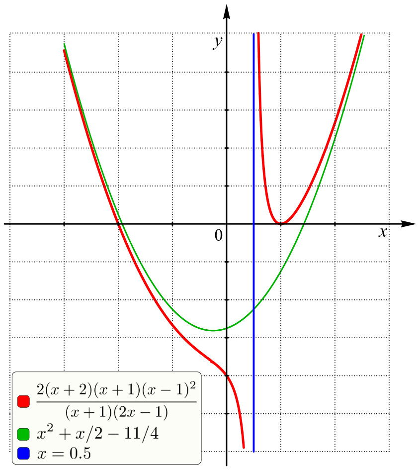
The routine
Everything in this chapter now collapses into one repeatable checklist. Work it in order. The order is not arbitrary — each step depends on the one before it, and the most common wrong graphs come from doing step 3 before step 2.
| Step | What you do | What it gives you |
|---|---|---|
| 1 | Factor the numerator and the denominator completely | Everything else depends on this |
| 2 | Set the original denominator equal to zero and solve | The domain — the excluded x-values |
| 3 | Cancel any common factors | Holes, at the cancelled x-values |
| 4 | Set the remaining denominator equal to zero | Vertical asymptotes — draw as dashed lines |
| 5 | Set the remaining numerator equal to zero | x-intercepts (discard any excluded value) |
| 6 | Evaluate f(0), if 0 is in the domain | The y-intercept |
| 7 | Compare degrees (divide if the top wins by one) | Horizontal or slant asymptote |
| 8 | Pick a test x in each region between the critical values | A sign chart: above or below the axis in each strip |
Steps 4, 5, and 6 give you the actual points and lines. Step 8 is what stops you from guessing: once you know whether the curve is above or below the axis in every strip, and which way it runs at each wall, the shape has essentially no freedom left.
Worked example — a complete graph, start to finish
Sketch f(x) = (2x2 − 2x − 12)/(x2 − 9).
Step 1 — factor. The numerator has a common factor of 2: 2x2 − 2x − 12 = 2(x2 − x − 6). Two numbers multiplying to −6 and adding to −1 are −3 and 2, so this is 2(x − 3)(x + 2). The denominator is a difference of squares: x2 − 9 = (x − 3)(x + 3). So
f(x) = [2(x − 3)(x + 2)]/[(x − 3)(x + 3)]
Step 2 — domain. The original denominator is zero at x = 3 and x = −3. Domain: all real x with x ≠ 3 and x ≠ −3.
Step 3 — cancel, and record the hole. The (x − 3) cancels, leaving f(x) = [2(x + 2)]/(x + 3) for x ≠ 3. Height of the hole: substitute x = 3 into the simplified form: [2(3 + 2)]/(3 + 3) = [2(5)]/6 = 10/6 = 5/3 ≈ 1.67. Hole at (3, 5/3) — an open circle.
Step 4 — vertical asymptote. The remaining denominator (x + 3) is zero at x = −3, and it did not cancel. Vertical asymptote: x = −3.
Step 5 — x-intercept. Set the remaining numerator to zero: 2(x + 2) = 0 gives x + 2 = 0, so x = −2. That value is in the domain, so (−2, 0) is a real intercept.
Step 6 — y-intercept. Zero is in the domain, so evaluate: f(0) = [2(0 + 2)]/(0 + 3) = [2(2)]/3 = 4/3 ≈ 1.33. (0, 4/3).
Step 7 — horizontal asymptote. Use the original: the numerator has degree 2 with leading coefficient 2, the denominator has degree 2 with leading coefficient 1. Equal degrees, so y = 2/1 = 2. Horizontal asymptote: y = 2. (The simplified form agrees: degree 1 over degree 1, leading coefficients 2 and 1, giving 2/1 = 2.)
Step 8 — sign chart. The critical values are x = −3 (asymptote) and x = −2 (intercept). They cut the line into three strips. Test one number in each:
- x = −4: [2(−4 + 2)]/(−4 + 3) = [2(−2)]/(−1) = (−4)/(−1) = 4. Positive — the curve is above the axis to the left of −3.
- x = −2.5: [2(−2.5 + 2)]/(−2.5 + 3) = [2(−0.5)]/(0.5) = (−1)/(0.5) = −2. Negative — below the axis between −3 and −2.
- x = 0: we already found 4/3. Positive — above the axis to the right of −2.
Step 9 — behavior at the wall. Approach x = −3 from the left, at x = −3.1: [2(−1.1)]/(−0.1) = (−2.2)/(−0.1) = 22, and at x = −3.01 it is (−2.02)/(−0.01) = 202. Shooting to +∞. From the right, at x = −2.9: [2(−0.9)]/(0.1) = (−1.8)/(0.1) = −18, and at x = −2.99 it is (−1.98)/(0.01) = −198. Plunging to −∞.
Step 10 — how it meets y = 2. At x = 100: [2(102)]/(103) = 204/103 ≈ 1.98 — just below 2. At x = −100: [2(−98)]/(−97) = (−196)/(−97) ≈ 2.02 — just above 2. So the right branch rises toward 2 from underneath and the left branch settles toward 2 from above.
The finished picture. Draw the dashed lines x = −3 and y = 2. On the far left the curve is slightly above y = 2, and as it moves right it climbs steeply to +∞ against the wall at x = −3. On the other side of the wall it comes up from −∞, crosses the axis at (−2, 0), passes through (0, 4/3), and flattens out toward y = 2 from below — with one open circle punched out at (3, 5/3). Every feature came from arithmetic, not guesswork.
Three habits that keep you honest
First, label the hole separately from the asymptote. Both come from the denominator, and both are excluded from the domain, but they look nothing alike: a hole is one missing dot on an otherwise ordinary curve, while an asymptote splits the graph into separate branches. Writing "x ≠ 3, x ≠ −3" tells you two values are excluded; only the factoring tells you which is which.
Second, sanity-check with one far-out number. Plug in x = 100 or x = −100 and compare against the asymptote you predicted, exactly as Step 10 did. If you predicted y = 2 and the arithmetic hands back 1.98, you are right. If it hands back 47, you made an error upstream — almost always in the degree comparison or in a dropped negative sign.
Third, when you solve rather than graph, check every candidate against the domain. Clearing fractions is legal, but it can manufacture answers the original equation never had. Solve (x + 3)/(x − 3) = 6/(x − 3) by multiplying both sides by (x − 3) and you get x + 3 = 6, so x = 3. But x = 3 was excluded from the domain from the very first line — both sides are undefined there. That candidate is extraneous, and the equation has no solution. The rule is absolute: substitute every answer back into the original equation, and throw out any value that makes a denominator zero.
The same caution applies to inequalities, but the fix is different. Do not multiply a rational inequality by a factor such as (x + 3), because you do not know its sign — and multiplying or dividing both sides of an inequality by a negative quantity reverses the inequality sign. With plain numbers that rule is easy to apply: −2x < 6 becomes x > −3, not x < −3. (Check x = 0: −2(0) = 0, and 0 < 6 is true, and 0 > −3 is true.) With a variable factor you cannot apply it, because the sign changes from strip to strip. That is precisely why Step 8 uses a sign chart instead: testing one number in each region settles the sign question without ever multiplying through.
- Follow the checklist in order: factor → domain → cancel (holes) → vertical asymptotes → intercepts → end behavior → sign chart.
- The sign chart removes the guesswork — test one x in each strip between critical values.
- Near a vertical asymptote, test a value just left and just right; the two sides often run in opposite directions.
- Confirm the horizontal or slant asymptote with a far-out value such as x = 100 before you commit to the sketch.
- When you solve a rational equation, substitute back: any candidate that makes a denominator zero is extraneous and must be discarded. For an inequality, never multiply by a variable factor — multiplying or dividing by a negative flips the inequality sign, so use a sign chart instead.
The chapter in one breath
- A polynomial allows only whole-number exponents, and its graph is continuous and smooth — no gaps, no corners.
- Degree and leading coefficient alone fix the end behavior: even degree makes the two ends agree, odd degree makes them disagree, and a negative leading coefficient flips the whole picture.
- Zeros are x-intercepts; find them by factoring completely and applying the zero-product property, then check each one by substituting.
- Odd multiplicity means the graph crosses the axis; even multiplicity means it touches and turns around. The multiplicities add up to the degree.
- Long division works for any divisor; synthetic division is the fast version reserved for divisors of the form x − c — mind the sign of c and the 0 placeholders.
- The Remainder Theorem says the remainder is P(c), and the Factor Theorem says a remainder of 0 means (x − c) is a factor — the standard way to break a cubic down to a quadratic.
- For a rational function, factor first and state the domain before cancelling: cancelled factors become holes, surviving denominator factors become vertical asymptotes.
- Degrees settle the far ends: smaller top → y = 0; equal degrees → the ratio of leading coefficients; top bigger by exactly one → a slant asymptote found by division.
- Solving is not graphing: clearing fractions can create extraneous solutions, so substitute every answer back into the original equation and discard anything that makes a denominator zero — and remember that multiplying or dividing an inequality by a negative reverses the inequality sign.
ReferenceWords worth knowing
A quick reference for the vocabulary in this chapter — skim it now, or come back whenever a term stops you mid-problem.
- Asymptote
- A line that a graph approaches more and more closely as it heads toward infinity (or toward an excluded x-value). It is drawn dashed because it is a guide, not part of the curve.
- Degree
- The highest exponent on the variable once a polynomial is written in standard form. It caps the number of zeros at n and the number of turning points at n − 1.
- Dividend
- In a division problem, the polynomial being divided — the one under the bar.
- Divisor
- The polynomial you are dividing by.
- End behavior
- What the two arms of a graph do as x → +∞ and x → −∞; for a polynomial it is decided entirely by degree and leading coefficient.
- Extraneous solution
- A value that appears when you clear fractions (or otherwise transform an equation) but does not satisfy the original equation — typically because it makes a denominator zero. Always substitute back and discard any such value.
- Factor Theorem
- (x − c) is a factor of P(x) if and only if P(c) = 0 — that is, if and only if the remainder on dividing by x − c is zero.
- Hole (removable discontinuity)
- A single missing point on an otherwise ordinary curve, caused by a factor that cancels from both numerator and denominator. Marked with an open circle.
- Horizontal asymptote
- A horizontal line y = k that the graph approaches as x → ±∞. A graph is allowed to cross it in the middle.
- Leading coefficient
- The number multiplying the highest-degree term, sign included. Its sign flips the entire end-behavior picture.
- Long division (polynomial)
- The general division algorithm — divide, multiply, subtract, bring down — that works with a divisor of any degree.
- Multiplicity
- The exponent on a repeated factor, telling you how many times a zero occurs. Odd multiplicity → the graph crosses; even multiplicity → it touches and turns.
- Polynomial function
- A sum of terms of the form a xn with n a whole number; no variables in denominators, none under radicals.
- Quotient
- The result of a division, not counting the remainder.
- Rational function
- A function written as one polynomial divided by another, P(x)/Q(x), with Q(x) not the zero polynomial.
- Remainder
- What is left over after dividing; its degree is always less than the degree of the divisor.
- Remainder Theorem
- Dividing P(x) by x − c leaves a remainder of exactly P(c) — a fast way to evaluate or to test a candidate zero.
- Slant (oblique) asymptote
- A slanted line the graph approaches at its far ends; it occurs when the numerator's degree is exactly one more than the denominator's, and you find it by dividing.
- Synthetic division
- A coefficients-only shortcut for dividing by x − c, using bring-down, multiply, add. Requires 0 placeholders for any missing power.
- Turning point
- A point where the graph changes from rising to falling or from falling to rising; a degree-n polynomial has at most n − 1 of them.
- Vertical asymptote
- A vertical line x = a that the graph races along but never touches, occurring where a denominator factor survives after cancelling.
- x-intercept
- A point (c, 0) where the graph meets the horizontal axis; the x-values are exactly the real zeros.
- Zero (root)
- A number c for which P(c) = 0. Also called a root of the equation P(x) = 0 or a solution of it.
Check yourself
Exponential Functions
Up to now, the variable has always been on the ground floor: x, x2, x3. In this chapter the variable moves upstairs into the exponent, and everything changes. A function like 2x does not add the same amount each step — it multiplies by the same amount each step, and that single difference is why money in a savings account, a colony of bacteria, and a dose of medicine leaving the bloodstream all follow the same shape of curve. We will build the definition carefully, learn to read the graph at a glance, meet the strange and useful number e, and then turn all of it into models you can actually compute with. No prior comfort with exponents is assumed; we will re-derive what we need as we go.
By the end of this chapter you can
- Define an exponential function and explain why the base must satisfy b > 0 and b ≠ 1.
- Evaluate an exponential function at positive, zero, negative, and fractional inputs.
- Find the equation f(x) = a·bx from two points on the curve.
- Sketch and describe an exponential graph: growth vs. decay, the horizontal asymptote, domain, and range.
- Apply shifts, stretches, and reflections to y = bx and state the new asymptote and range.
- Explain where the number e comes from and evaluate the natural exponential function f(x) = ex.
- Build and use growth and decay models, including doubling time and half-life.
- Compute balances with both the periodic and the continuous compound interest formulas and compare them.
Section 1Exponential functions

The definition, one word at a time
An exponential function is a function of the form
f(x) = a · bx, where a ≠ 0, b > 0, and b ≠ 1.
Read that slowly. The number b is the base. The number a is the initial value, because when x = 0 we get f(0) = a·b0 = a·1 = a. And x — the variable, the thing that changes — sits in the exponent. That last detail is the entire point. In x2 the variable is the base and the exponent is fixed; in 2x the base is fixed and the variable is the exponent. They are completely different animals, and mixing them up is the single most common error in this chapter.
The practical meaning of "variable in the exponent" is this: every time x goes up by 1, the output gets multiplied by b. A linear function adds the same amount per step; an exponential function multiplies by the same amount per step. Watch it happen with f(x) = 3·2x:
| x | 3·2x written out | Value | Change from the row above |
|---|---|---|---|
| −2 | 3·2−2 = 3·(1)/(4) | 0.75 | — |
| −1 | 3·2−1 = 3·(1)/(2) | 1.5 | ×2 |
| 0 | 3·20 = 3·1 | 3 | ×2 |
| 1 | 3·21 = 3·2 | 6 | ×2 |
| 2 | 3·22 = 3·4 | 12 | ×2 |
| 3 | 3·23 = 3·8 | 24 | ×2 |
Worked example 1 — evaluating, every step shown. Let f(x) = 3·2x. Find f(0), f(3), and f(−2).
- f(0) = 3·20. Anything nonzero to the zero power is 1, so 20 = 1. Then 3·1 = 3.
- f(3) = 3·23. First 23 = 2·2·2 = 8. Then 3·8 = 24. (Exponent first, then multiply — order of operations. It is not (3·2)3 = 216.)
- f(−2) = 3·2−2. A negative exponent means reciprocal: 2−2 = (1)/(22) = (1)/(4). Then 3·(1)/(4) = (3)/(4) = 0.75.
Notice that the negative exponent did not produce a negative answer. It produced a small positive one. That is worth carrying with you: for a positive a, an exponential function never outputs zero and never outputs a negative number.
Why the base has rules
The definition attaches three restrictions, and each one exists for a concrete reason rather than to make your life harder.
Why b > 0. Suppose we allowed b = −4 and asked for f((1)/(2)) = (−4)1/2 = √(−4), which is not a real number. Suppose we allowed b = −2 and made a table: (−2)1 = −2, (−2)2 = 4, (−2)3 = −8. The signs flip back and forth and half the fractional inputs are undefined, so there is no smooth curve to graph. Requiring b > 0 keeps the function defined for every real x.
Why b ≠ 1. If b = 1 then f(x) = a·1x = a·1 = a for every input. That is a horizontal line — a constant function — and nothing about it is exponential. Excluding b = 1 keeps the definition honest.
Why a ≠ 0. If a = 0 then f(x) = 0·bx = 0 always — again a flat line, not a curve.
With those in place, the base tells you the whole story of the function's direction:
| Base | Behavior (for a > 0) | Name | Example |
|---|---|---|---|
| b > 1 | Output grows as x increases | Exponential growth | y = 2x, y = 1.05x |
| 0 < b < 1 | Output shrinks as x increases | Exponential decay | y = ((1)/(2))x, y = 0.85x |
| b = 1 | Output never changes | Not exponential (constant) | y = 1x = 1 |
| b ≤ 0 | Undefined for many inputs | Not allowed | (−4)x |
Finding the function from data
Worked example 2 — building f(x) = a·bx from two points. A curve passes through (0, 5) and (3, 40). Find its equation.
Step 1 — use the point with x = 0 to get a. Substituting x = 0 and f(0) = 5:
5 = a·b0 = a·1 = a, so a = 5.
Step 2 — substitute the second point. Using x = 3 and f(3) = 40:
40 = 5·b3
Step 3 — solve for b. Divide both sides by 5: (40)/(5) = b3, so 8 = b3. Take the cube root of both sides: b = ∛8 = 2. (Since the definition requires b > 0, we keep the positive root and there is no second answer to worry about.)
Step 4 — write it and check. f(x) = 5·2x. Check the first point: f(0) = 5·20 = 5·1 = 5. ✓ Check the second: f(3) = 5·23 = 5·8 = 40. ✓
Worked example 3 — solving when the bases can be matched. Solve 52x−1 = 125.
Step 1 — rewrite both sides with the same base. Since 125 = 5·5·5 = 53, the equation becomes 52x−1 = 53.
Step 2 — use the one-to-one property. Because an exponential function never repeats an output, if bm = bn then m = n. So 2x − 1 = 3.
Step 3 — solve the linear equation. Add 1 to both sides: 2x = 4. Divide by 2: x = 2.
Step 4 — check. 52(2)−1 = 54−1 = 53 = 125. ✓ No extraneous solutions can appear here, because we never squared, never multiplied by a variable expression, and never divided by anything containing x — every step was reversible. (When the bases cannot be matched, as in 2x = 7, you need logarithms; that is Chapter 12.)
- An exponential function is f(x) = a·bx with a ≠ 0, b > 0, b ≠ 1; the variable lives in the exponent.
- a is the initial value because f(0) = a; each unit increase in x multiplies the output by b.
- b > 1 gives growth; 0 < b < 1 gives decay; b = 1 gives a constant, which is why it is excluded.
- If bm = bn then m = n — the one-to-one property that lets you solve equations with matchable bases.
Section 2Graphs of exponential functions

The parent graph y = bx
Every exponential graph you will ever draw is a modified copy of one basic shape, so learn the basic shape cold. For y = bx with b > 0 and b ≠ 1:
- It always passes through (0, 1), because b0 = 1 no matter what b is.
- It always passes through (1, b), because b1 = b.
- The domain is all real numbers, (−∞, ∞) — you may raise a positive base to any power you like.
- The range is (0, ∞) — the output is always positive, never zero.
- The line y = 0 (the x-axis) is a horizontal asymptote: the curve gets arbitrarily close to it but never touches it. There is no x-intercept.
Why can the output never be zero? Because bx for negative x means a reciprocal: 2−10 = (1)/(210) = (1)/(1024), and 2−100 = (1)/(2100), a fantastically small but still positive number. You can shrink a positive number forever without ever reaching zero. That is exactly what an asymptote is.
Growth versus decay, and the reflection that connects them
If b > 1 the graph rises left-to-right: as x → ∞ the output blows up, and as x → −∞ it flattens toward the asymptote. If 0 < b < 1 the mirror image happens: the graph falls left-to-right, flattening toward the asymptote on the right and rocketing up on the left.
These two cases are not really separate. Watch:
((1)/(2))x = ((2)−1)x = 2−x
So a decay curve is just a growth curve reflected across the y-axis. Halving repeatedly and doubling backwards are the same motion viewed from opposite ends.
| Feature | y = 2x (growth) | y = ((1)/(2))x (decay) |
|---|---|---|
| Value at x = −2 | (1)/(4) = 0.25 | 4 |
| Value at x = 0 | 1 | 1 |
| Value at x = 2 | 4 | (1)/(4) = 0.25 |
| Direction | Rises to the right | Falls to the right |
| Asymptote | y = 0 (approached on the left) | y = 0 (approached on the right) |
| Domain / Range | (−∞, ∞) / (0, ∞) | (−∞, ∞) / (0, ∞) |
Transformations: moving the whole picture
The general transformed exponential is
g(x) = a·bx−h + k
and each letter does one job. The one that trips people up is k, so say it out loud: only the vertical shift moves the asymptote. Stretching does not move it. Horizontal shifting does not move it. Only adding or subtracting a constant at the end does.
| Change | What happens to the graph | New asymptote |
|---|---|---|
| bx + k | Shifts up k units (down if k < 0) | y = k |
| bx−h | Shifts right h units (left if h < 0) | y = 0 (unchanged) |
| a·bx, a > 1 | Vertical stretch by a factor of a | y = 0 (unchanged) |
| a·bx, 0 < a < 1 | Vertical compression | y = 0 (unchanged) |
| −bx | Reflection across the x-axis; range becomes (−∞, 0) | y = 0 (unchanged) |
| b−x | Reflection across the y-axis; growth becomes decay | y = 0 (unchanged) |
Worked example 4 — a full analysis. Describe and graph g(x) = 3·2x+1 − 5.
Step 1 — identify the pieces. Rewrite the exponent to match the template x − h: since x + 1 = x − (−1), we have h = −1. And a = 3, b = 2, k = −5.
Step 2 — apply the transformations in order, starting from y = 2x:
- Shift left 1 (because h = −1): y = 2x+1.
- Stretch vertically by 3: y = 3·2x+1.
- Shift down 5: y = 3·2x+1 − 5.
Step 3 — state the asymptote, domain, and range. The vertical shift is −5, so the horizontal asymptote is y = −5. Since a = 3 is positive, the curve sits above that line. Domain: (−∞, ∞). Range: (−5, ∞).
Step 4 — plot three honest points.
- x = −1: g(−1) = 3·2−1+1 − 5 = 3·20 − 5 = 3·1 − 5 = 3 − 5 = −2. Point (−1, −2).
- x = 0: g(0) = 3·20+1 − 5 = 3·2 − 5 = 6 − 5 = 1. Point (0, 1) — this is the y-intercept.
- x = 1: g(1) = 3·21+1 − 5 = 3·4 − 5 = 12 − 5 = 7. Point (1, 7).
Step 5 — check the far left. As x → −∞, 2x+1 → 0, so g(x) → 3·0 − 5 = −5. The curve flattens onto y = −5 from above, exactly as predicted. Note that this graph does cross the x-axis somewhere between x = −1 and x = 0 — setting 3·2x+1 − 5 = 0 gives 2x+1 = (5)/(3), and since (5)/(3) is not a power of 2 you would need a logarithm to finish. Shifting an exponential vertically is precisely what creates an x-intercept where the parent had none.
- The parent graph y = bx passes through (0, 1) and (1, b), has domain (−∞, ∞), range (0, ∞), and asymptote y = 0.
- b > 1 rises to the right; 0 < b < 1 falls to the right; and ((1)/(b))x = b−x, a y-axis reflection.
- In g(x) = a·bx−h + k, only k moves the asymptote, to y = k; the range becomes (k, ∞) if a > 0 and (−∞, k) if a < 0.
- A parent exponential has no x-intercept; a vertical shift can create one.
Section 3The number e

Where e comes from
Here is an honest, concrete question that produces e all by itself. Put $1 in an account paying 100% interest for one year. If the interest is paid once at the end, you finish with $2. But what if it is paid in n equal installments during the year, each installment being (1)/(n) of the rate, with each payment then earning interest itself? Your balance after one year is
(1 + (1)/(n))n
Crank up n and watch what happens. Splitting the year finer really does earn you more — but not without limit.
| Installments n | Meaning | (1 + 1/n)n |
|---|---|---|
| 1 | Once a year | 2.00000000 |
| 2 | Twice a year | 2.25000000 |
| 4 | Quarterly | 2.44140625 |
| 12 | Monthly | 2.61303529 |
| 365 | Daily | 2.71456748 |
| 8,760 | Hourly | 2.71812669 |
| 1,000,000 | Practically continuous | 2.71828047 |
The values climb, then stall, then converge on a specific irrational number. We call it e:
e ≈ 2.718281828459045…
Like π, e is irrational — its decimal expansion never terminates and never repeats — and like π it is a constant, not a variable. For hand estimates, e ≈ 2.718 is plenty; on your calculator, use the dedicated ex key rather than typing 2.718 and rounding early.
Sanity check on that first table row: for n = 2, (1 + (1)/(2))2 = (1.5)2 = 1.5·1.5 = 2.25. For n = 4, (1 + (1)/(4))4 = (1.25)4; step it out: 1.252 = 1.5625, then 1.56252 = 2.44140625. The table is doing arithmetic you can verify, not magic.
The natural exponential function
The function f(x) = ex is called the natural exponential function. Everything you learned in Section 2 applies unchanged, because e is simply a base with e > 1: the graph passes through (0, 1) and (1, e) ≈ (1, 2.718), has domain (−∞, ∞), range (0, ∞), and asymptote y = 0. Since 2 < e < 3, its graph lies snugly between y = 2x and y = 3x.
A few values worth knowing by feel: e0 = 1, e1 ≈ 2.71828, e−1 = (1)/(e) ≈ 0.36788, and e0.5 = √e ≈ 1.64872.
Continuous growth: A = A0ekt
Because e falls out of "compounding infinitely often," it is the natural base for anything that changes smoothly and constantly rather than in discrete jumps. The standard model is
A(t) = A0 ekt
where A0 is the amount at time t = 0 (check it: A(0) = A0e0 = A0·1 = A0) and k is the continuous or relative growth rate. If k > 0 the quantity grows; if k < 0 it decays.
Worked example 5 — continuous growth. An investment of $2,500 grows continuously at k = 0.06. Find its value after 10 years.
Step 1 — write the model. A(t) = 2500e0.06t.
Step 2 — substitute t = 10. A(10) = 2500e0.06(10).
Step 3 — simplify the exponent first. 0.06 × 10 = 0.6, so A(10) = 2500e0.6.
Step 4 — evaluate the exponential. e0.6 ≈ 1.8221188.
Step 5 — multiply. 2500 × 1.8221188 = 4555.297, so A(10) ≈ $4,555.30.
Step 6 — does it make sense? The money grew by a factor of about 1.82 in 10 years — not quite doubled — which is about right for a 6% rate. Good.
Worked example 6 — continuous decay. A sample starts at 500 units and decays continuously with k = −0.12 per year. How much remains after 5 years?
Step 1. N(t) = 500e−0.12t.
Step 2. N(5) = 500e−0.12(5) = 500e−0.6.
Step 3. e−0.6 = (1)/(e0.6) = (1)/(1.8221188) ≈ 0.5488116.
Step 4. 500 × 0.5488116 = 274.4058, so about 274.41 units remain.
Step 5 — sanity check. A negative k gave an answer smaller than the starting 500, and it stayed positive. Both are exactly what the model must do.
- e is the number that (1 + 1/n)n approaches as n grows without bound: e ≈ 2.71828.
- f(x) = ex is the natural exponential function — an ordinary growth exponential, since e > 1.
- A(t) = A0ekt models continuous change; k > 0 grows, k < 0 decays, and A0 is always the t = 0 amount.
- Simplify the exponent completely before evaluating, and round only at the very end.
Section 4Growth and decay models

Turning a percent into a base
Most real problems hand you a percent per period, not a base. Converting is the whole skill, and it is one line:
A(t) = A0(1 + r)t
where r is the rate per period written as a decimal. If the quantity grows 3% per year, r = +0.03 and the base is 1 + 0.03 = 1.03 (the growth factor). If it shrinks 15% per year, r = −0.15 and the base is 1 − 0.15 = 0.85 (the decay factor). Notice the base is 1 plus the rate, not the rate alone: multiplying by 0.03 would throw away 97% of the quantity, which is not what "grew 3%" means.
| Situation | Rate r | Base (1 + r) | Model |
|---|---|---|---|
| Grows 3% per year | +0.03 | 1.03 | A0(1.03)t |
| Grows 7.5% per year | +0.075 | 1.075 | A0(1.075)t |
| Falls 15% per year | −0.15 | 0.85 | A0(0.85)t |
| Falls 40% per year | −0.40 | 0.60 | A0(0.60)t |
| Doubles every d periods | — | 2 | A0·2t/d |
| Halves every h periods (half-life) | — | (1)/(2) | A0·((1)/(2))t/h |
Worked example 7 — population growth. A town of 12,000 people grows 3% per year. Predict the population in 20 years.
Step 1 — identify the pieces. A0 = 12,000; r = 3% = 0.03; t = 20 years.
Step 2 — build the base. 1 + r = 1 + 0.03 = 1.03.
Step 3 — write the model. P(t) = 12000(1.03)t.
Step 4 — substitute. P(20) = 12000(1.03)20.
Step 5 — evaluate the power. (1.03)20 ≈ 1.8061112. (If you want to see it built by hand: 1.032 = 1.0609, 1.034 = 1.06092 = 1.12550881, 1.0310 ≈ 1.3439164, and 1.0320 = (1.0310)2 ≈ 1.8061112.)
Step 6 — multiply. 12000 × 1.8061112 = 21673.33, so about 21,673 people.
Step 7 — interpret. Since people come in whole numbers, we round to the nearest person. Note that 3% per year for 20 years grew the town by roughly 81%, not 60% — because each year's 3% is taken from a larger base than the year before.
Doubling time and half-life
Sometimes you are told how long the quantity takes to double or to halve, and no percent appears at all. Those cases have their own clean forms.
Doubling time d: A(t) = A0·2t/d. The exponent t/d literally counts "how many doublings have happened by time t."
Half-life h: A(t) = A0·((1)/(2))t/h. Same idea, counting halvings. A half-life is the time required for exactly half of whatever remains to disappear — and crucially, it is always the same length no matter how much is left.
Worked example 8 — doubling time. A bacterial culture starts with 400 cells and doubles every 3 hours. How many cells after 12 hours?
Step 1. A0 = 400, d = 3 hours, t = 12 hours.
Step 2 — write the model. A(t) = 400·2t/3.
Step 3 — evaluate the exponent. t/d = 12/3 = 4. So four doublings have occurred.
Step 4 — evaluate the power. 24 = 2·2·2·2 = 16.
Step 5 — multiply. 400 × 16 = 6,400 cells.
Step 6 — check by hand. 400 → 800 (3 h) → 1,600 (6 h) → 3,200 (9 h) → 6,400 (12 h). ✓
Worked example 9 — half-life, including a non-whole number of halvings. An isotope has a half-life of 8 days. A 200 mg sample is prepared. (a) How much remains after 24 days? (b) After 20 days?
(a) Step 1. A(t) = 200·((1)/(2))t/8.
Step 2. At t = 24: t/h = 24/8 = 3, so three half-lives have passed.
Step 3. ((1)/(2))3 = (1)/(8).
Step 4. 200 × (1)/(8) = (200)/(8) = 25 mg. Confirm by halving: 200 → 100 → 50 → 25. ✓
(b) Step 1. At t = 20: t/h = 20/8 = 2.5. A fractional number of half-lives is perfectly legal — the formula does not require whole ones.
Step 2. ((1)/(2))2.5 = (1)/(22.5). Now 22.5 = 22·20.5 = 4·√2 ≈ 4 × 1.4142136 = 5.6568542.
Step 3. (1)/(5.6568542) ≈ 0.1767767.
Step 4. 200 × 0.1767767 = 35.35534, so about 35.36 mg.
Step 5 — is it believable? At 16 days (two half-lives) we would have 50 mg; at 24 days (three) we would have 25 mg. Our 20-day answer of 35.36 mg sits between them, closer to the middle. ✓
Worked example 10 — depreciation. A $28,000 car loses 15% of its value each year. What is it worth after 5 years?
Step 1. A0 = 28,000; r = −0.15; base = 1 − 0.15 = 0.85.
Step 2. V(t) = 28000(0.85)t, so V(5) = 28000(0.85)5.
Step 3 — build the power step by step. 0.852 = 0.7225. 0.854 = (0.7225)2 = 0.52200625. 0.855 = 0.52200625 × 0.85 = 0.4437053.
Step 4. 28000 × 0.4437053 = 12423.75, so the car is worth about $12,423.75.
Step 5 — the trap. It is tempting to say "15% × 5 years = 75% lost, so 25% of $28,000 = $7,000." That is wrong. The correct answer, $12,423.75, is about 44% of the original — because each year's 15% comes off a smaller and smaller amount.
- A(t) = A0(1 + r)t; the base is 1 + r, with r positive for growth and negative for decay.
- Doubling every d periods: A0·2t/d. Half-life h: A0·((1)/(2))t/h.
- A half-life is the same length regardless of how much material remains, and the exponent t/h need not be a whole number.
- Never multiply a percent rate by the number of periods — exponential change compounds on a shifting base.
Section 5Compound interest

The periodic formula, decoded
Compound interest is the exponential model of Section 4 with the vocabulary of finance bolted on:
A = P(1 + (r)/(n))nt
| Symbol | Name | What to put in |
|---|---|---|
| A | Final amount | What you are solving for (principal plus interest) |
| P | Principal | The starting deposit |
| r | Annual rate | As a decimal: 6% becomes 0.06 |
| n | Compounds per year | Annually 1, semiannually 2, quarterly 4, monthly 12, daily 365 |
| t | Time | In years (9 months = 0.75 year) |
The logic is transparent once you see it: r/n is the interest rate applied at each compounding, and nt is the total number of compoundings over the whole term. Interest earned early then earns interest itself, which is what makes the graph a curve and not a line.
Worked example 11 — monthly compounding. Deposit $5,000 at 6% annual interest, compounded monthly, for 10 years.
Step 1 — list the values. P = 5000; r = 6% = 0.06; n = 12; t = 10.
Step 2 — compute the periodic rate. (r)/(n) = (0.06)/(12) = 0.005. So each month earns 0.5%.
Step 3 — compute the base. 1 + 0.005 = 1.005.
Step 4 — compute the exponent. nt = 12 × 10 = 120 compoundings.
Step 5 — assemble. A = 5000(1.005)120.
Step 6 — evaluate the power. (1.005)120 ≈ 1.8193967.
Step 7 — multiply. 5000 × 1.8193967 = 9096.9835, so A ≈ $9,096.98.
Step 8 — interest earned. 9096.98 − 5000 = $4,096.98 in interest. (Simple interest would have paid only 5000 × 0.06 × 10 = $3,000.)
The continuous formula
Section 3 showed that squeezing more and more compoundings into a year drives (1 + 1/n)n toward e. Doing the same to the compound interest formula gives the continuous compounding formula:
A = P ert
with the same P, decimal r, and t in years — and no n at all, because "continuously" means the compounding never stops long enough to count.
Worked example 12 — continuous compounding, same account. $5,000 at 6% compounded continuously for 10 years.
Step 1. P = 5000; r = 0.06; t = 10.
Step 2 — exponent first. rt = 0.06 × 10 = 0.6.
Step 3. A = 5000e0.6.
Step 4. e0.6 ≈ 1.8221188.
Step 5. 5000 × 1.8221188 = 9110.594, so A ≈ $9,110.59.
Step 6 — compare. Continuous beat monthly by 9110.59 − 9096.98 = $13.61 over ten years. Real, but small — which is the honest lesson of the next table.
| Compounding | n | Setup | Balance after 10 years |
|---|---|---|---|
| Annually | 1 | 5000(1.06)10 | $8,954.24 |
| Semiannually | 2 | 5000(1.03)20 | $9,030.56 |
| Quarterly | 4 | 5000(1.015)40 | $9,070.09 |
| Monthly | 12 | 5000(1.005)120 | $9,096.98 |
| Daily | 365 | 5000(1 + 0.06/365)3650 | $9,110.14 |
| Continuously | — | 5000e0.6 | $9,110.59 |
Every extra compounding helps, but by less and less. Going from annual to monthly bought $142.74; going from daily to continuous bought 45 cents. Continuous compounding is the ceiling that all the others approach and none can exceed — the financial face of the limit that defines e.
Effective annual yield
Two accounts advertising "6%" are not the same account if one compounds annually and the other monthly. The effective annual yield (or APY) converts any compounding schedule into the single annual rate that would produce the same one-year result, so you can compare fairly.
Worked example 13 — effective yield. Find the effective annual yield of 6% compounded monthly, and of 6% compounded continuously.
Monthly, Step 1. Run the formula for one year with P = 1: A = 1(1 + (0.06)/(12))12(1) = (1.005)12.
Step 2. (1.005)12 ≈ 1.0616778.
Step 3 — subtract the original 1 to isolate the gain. 1.0616778 − 1 = 0.0616778.
Step 4 — convert to percent. 0.0616778 × 100 ≈ 6.17%.
Continuously, Step 1. A = 1·e0.06(1) = e0.06 ≈ 1.0618365.
Step 2. 1.0618365 − 1 = 0.0618365 → 6.18%.
Step 3 — read the result. A nominal 6% is really worth 6.17% monthly and 6.18% continuously. The stated rate is not the rate you actually earn.
- Periodic: A = P(1 + (r)/(n))nt, with r as a decimal, n compoundings per year, t in years.
- Continuous: A = Pert — no n, because compounding never pauses.
- More frequent compounding always earns more, but with rapidly shrinking gains; continuous compounding is the upper limit.
- Effective annual yield = (one-year growth factor) − 1, expressed as a percent; it is how you compare accounts honestly.
The chapter in one breath
- An exponential function is f(x) = a·bx with a ≠ 0, b > 0, b ≠ 1 — the variable lives in the exponent, so each unit step multiplies the output by b.
- a is the initial value since f(0) = a; b > 1 gives growth and 0 < b < 1 gives decay, and ((1)/(b))x = b−x connects the two by a reflection.
- The parent graph passes through (0, 1) and (1, b), has domain (−∞, ∞), range (0, ∞), asymptote y = 0, and no x-intercept.
- In g(x) = a·bx−h + k, only k moves the asymptote — to y = k — and the range shifts with it.
- e ≈ 2.71828 is the limit of (1 + 1/n)n, and A(t) = A0ekt is the model for smooth, continuous change.
- Percent problems become exponentials through the base 1 + r; doubling time gives A0·2t/d and half-life gives A0·((1)/(2))t/h.
- Compound interest is A = P(1 + r/n)nt periodically and A = Pert continuously; more compoundings earn more, but continuous is the ceiling.
- Percent change never adds across periods, and rounding r/n early is the classic way to get a nearly-right, actually-wrong answer.
ReferenceWords worth knowing
A quick reference for the vocabulary of this chapter — skim it now, and come back to it whenever a word in a problem stops you cold.
- Asymptote (horizontal)
- A horizontal line the graph approaches ever more closely without touching. For y = a·bx−h + k it is y = k.
- Base
- The fixed positive number b being raised to the variable power in f(x) = a·bx; it must satisfy b > 0 and b ≠ 1.
- Compound interest
- Interest paid on the principal and on previously earned interest, computed by A = P(1 + r/n)nt.
- Continuous compounding
- The limiting case in which interest is credited without pause, giving A = Pert; it produces the largest balance for a given nominal rate.
- Decay factor
- The base 1 − r when a quantity shrinks by rate r each period; it lies strictly between 0 and 1.
- Doubling time
- The constant time d required for a growing quantity to become twice as large, giving the model A0·2t/d.
- e (Euler's number)
- The irrational constant approximately 2.718281828, defined as the value (1 + 1/n)n approaches as n grows without bound.
- Effective annual yield (APY)
- The single annual rate that would produce the same one-year growth as a given compounding schedule; equals the one-year growth factor minus 1.
- Exponential decay
- Exponential change with base 0 < b < 1 (or continuous rate k < 0); the quantity shrinks by a constant factor per period.
- Exponential function
- A function f(x) = a·bx with a ≠ 0, b > 0, b ≠ 1, in which the variable appears in the exponent.
- Exponential growth
- Exponential change with base b > 1 (or continuous rate k > 0); the quantity grows by a constant factor per period.
- Growth factor
- The base 1 + r when a quantity increases by rate r each period; it is greater than 1.
- Half-life
- The constant time h required for exactly half of a decaying quantity to disappear, giving A0·((1)/(2))t/h; it does not depend on how much remains.
- Initial value
- The coefficient a (or A0, or P), equal to the output at x = 0 because b0 = 1.
- Natural exponential function
- The function f(x) = ex, the exponential function whose base is e.
- One-to-one property of exponents
- For b > 0 and b ≠ 1, if bm = bn then m = n; this is what lets you solve equations by matching bases.
- Principal
- The starting amount P deposited or borrowed, before any interest is added.
- Range
- The set of possible outputs. For y = a·bx−h + k it is (k, ∞) when a > 0 and (−∞, k) when a < 0.
- Relative growth rate
- The constant k in A(t) = A0ekt, expressing continuous growth (k > 0) or decay (k < 0) per unit time.
- Transformation
- A shift, stretch, compression, or reflection applied to a parent graph to produce a related graph.
- Vertical stretch
- Multiplication of all outputs by a factor a > 1, pulling the graph away from the x-axis; 0 < a < 1 compresses it instead.
Check yourself
Logarithmic Functions
A logarithm is not a new kind of monster. It is an exponent wearing a different hat. Every time you ask "two raised to what power gives me thirty-two?" you are asking a logarithm question — you have been doing this since you first learned exponents, just without the vocabulary. This chapter gives you the vocabulary, shows you how to move a statement back and forth between exponential form and logarithmic form, teaches you to read a logarithmic graph, and hands you three properties that let you take a complicated logarithm apart or squeeze several logarithms into one. Go slowly, say the definition out loud a few times, and the rest follows.
By the end of this chapter you can
- State the definition of a logarithm as the inverse of an exponential function.
- Convert fluently between exponential form and logarithmic form.
- Name the restrictions on the base and the argument, and explain why they exist.
- Evaluate common logs, natural logs, and many other logarithms by inspection.
- Find the domain, vertical asymptote, and key points of a logarithmic graph, including shifted and reflected versions.
- Apply the product, quotient, and power rules — and avoid the three classic misuses of them.
- Expand a single logarithm into a sum and difference, and condense a sum and difference back into one logarithm.
- Use the change-of-base formula to evaluate a logarithm of any base on a calculator, and check solutions for extraneous answers.
Section 1What a logarithm is

Undoing an exponential
Start with a question you already know how to answer: 2 raised to what power gives 8? You said 3 instantly, because 23 = 8. You just evaluated a logarithm. The only thing missing was a symbol for "the power you raise 2 to," and that symbol is log.
Here is the whole definition, and it is worth memorizing word for word:
logb(x) = y means exactly the same thing as by = x.
Read the left side out loud as "log base b of x equals y." Read what it means as "y is the exponent you put on b to get x." If you can only remember one sentence from this chapter, remember this one: a logarithm is an exponent. The answer to any log question is always an exponent, and that is why logs behave the way they do for the rest of the chapter.
Why do we need this at all? Because an exponential function like f(x) = 2x is one-to-one — every input gives a different output — so it has an inverse function, and that inverse is the logarithm. Exponentials answer "I have the exponent, what is the result?" Logarithms answer "I have the result, what was the exponent?" Each undoes the other:
logb(bx) = x and blogb(x) = x
Converting between the two forms
Almost every logarithm problem in this chapter starts with a conversion, so make it automatic. The trick that works for most students: the base stays the base, and the logarithm's answer becomes the exponent. Draw a little loop from the base, up over the equals sign, to the answer.
| Exponential form | Logarithmic form | Said out loud |
|---|---|---|
| 25 = 32 | log2(32) = 5 | 5 is the power of 2 that makes 32 |
| 34 = 81 | log3(81) = 4 | 4 is the power of 3 that makes 81 |
| 10−2 = 0.01 | log10(0.01) = −2 | −2 is the power of 10 that makes 0.01 |
| 70 = 1 | log7(1) = 0 | 0 is the power of 7 that makes 1 |
| 251/2 = 5 | log25(5) = ½ | ½ is the power of 25 that makes 5 |
The rules about what is allowed
Two restrictions come with the definition, and neither is arbitrary.
First, the base must satisfy b > 0 and b ≠ 1. A negative base breaks down as soon as you use fractional exponents (what would (−4)1/2 be?), and a base of 1 is useless because 1y = 1 for every y — the question "1 to what power gives 8?" has no answer at all.
Second, the argument — the thing inside the log — must satisfy x > 0. This one trips people up until they see why. Since b is positive, by is always positive, no matter what y is. A positive number raised to any power — positive, negative, zero, fractional — can never land on zero or on a negative number. So there is no exponent that makes 2y equal −8, and log2(−8) is simply undefined. Keep that in your pocket; in Section 3 it becomes the rule that determines the domain of every logarithmic function.
A fully worked example
Solve log5(2x − 3) = 2.
Step 1 — Convert to exponential form. The base is 5, the answer is 2, so 2 becomes the exponent on 5:
log5(2x − 3) = 2 becomes 52 = 2x − 3
Step 2 — Do the arithmetic on the left. 52 = 25, so
25 = 2x − 3
Step 3 — Add 3 to both sides.
25 + 3 = 2x − 3 + 3 → 28 = 2x
Step 4 — Divide both sides by 2.
28 / 2 = 2x / 2 → 14 = x
Step 5 — Check it, including the domain. Put x = 14 back into the original argument: 2(14) − 3 = 28 − 3 = 25. Is 25 > 0? Yes, so the argument is legal. And log5(25) = 2, because 52 = 25. The left side equals the right side, so x = 14 is the solution.
- logb(x) = y means by = x — the log is the exponent.
- The logarithm is the inverse of the exponential: logb(bx) = x and blogb(x) = x.
- The base must be positive and not 1; the argument must be positive.
- To solve a simple log equation, convert to exponential form first, then solve normally and check the argument is positive.
Section 2Evaluating logarithms

Two bases get their own shorthand
Any positive base (other than 1) is allowed, but two bases show up so often that mathematicians stopped writing them.
The common logarithm has base 10, and we write it with no base at all: log(x) means log10(x). It shows up wherever we measure things in powers of ten — decibels, pH, the Richter scale, orders of magnitude.
The natural logarithm has base e, where e ≈ 2.718281828. We write it ln(x), which means loge(x). The number e looks strange the first time you meet it, but it is just a fixed number like π — irrational, non-repeating, and enormously useful because it is the natural growth rate of continuously compounding processes. On your calculator, LOG is base 10 and LN is base e. They are different buttons and they give different answers; mixing them up is the single most common calculator error in this chapter.
Evaluating by inspection
Most logarithms you meet in a homework set are meant to be done in your head. The method never changes: set the log equal to y, convert to exponential form, and rewrite both sides with the same base.
Four shortcuts fall straight out of the definition and are worth knowing cold:
| Shortcut | Why it is true | Example |
|---|---|---|
| logb(1) = 0 | Because b0 = 1 for every legal base | log9(1) = 0, ln(1) = 0 |
| logb(b) = 1 | Because b1 = b | log(10) = 1, ln(e) = 1 |
| logb(bk) = k | The log undoes the exponential | ln(e7) = 7, log(10−3) = −3 |
| blogb(x) = x | The exponential undoes the log | 10log(47) = 47, eln(6) = 6 |
Two more patterns are worth practicing because they look harder than they are. A reciprocal argument gives a negative answer: log2(1/8) = −3, because 2−3 = 1/(23) = 1/8. And a root gives a fractional answer: log9(3) = ½, because 91/2 = √9 = 3.
A fully worked example
Evaluate log8(4) without a calculator.
This one has no obvious answer — 8 to the first power is too big, 8 to the zero power is too small — so the answer must be a fraction between 0 and 1. Here is the full method.
Step 1 — Name the answer. Let y = log8(4).
Step 2 — Convert to exponential form.
8y = 4
Step 3 — Rewrite both sides with a common base. Both 8 and 4 are powers of 2: 8 = 23 and 4 = 22. So
(23)y = 22
Step 4 — Use the power-of-a-power rule (multiply the exponents):
23y = 22
Step 5 — Match the exponents. If the bases are equal and the expressions are equal, the exponents must be equal:
3y = 2
Step 6 — Solve. Divide both sides by 3:
y = (2)/(3)
Step 7 — Check. Does 82/3 really equal 4? A fractional exponent means "root on the bottom, power on the top": 82/3 = (3√8)2 = (2)2 = 4. It checks. So log8(4) = 2/3, and notice it landed between 0 and 1 exactly as we predicted.
- log(x) with no base written means base 10 (common log); ln(x) means base e (natural log), e ≈ 2.718.
- logb(1) = 0, logb(b) = 1, logb(bk) = k, and blogb(x) = x.
- To evaluate by inspection: set it equal to y, convert to exponential form, rewrite both sides with the same base, and match exponents.
- Reciprocal arguments give negative answers; roots give fractional answers.
Section 3Graphs of logarithmic functions

The shape of the parent function
Graph f(x) = log2(x) by picking convenient x-values — convenient here means powers of 2, so the logs come out clean.
| x | log2(x) | Because |
|---|---|---|
| 1/4 | −2 | 2−2 = 1/4 |
| 1/2 | −1 | 2−1 = 1/2 |
| 1 | 0 | 20 = 1 |
| 2 | 1 | 21 = 2 |
| 4 | 2 | 22 = 4 |
| 8 | 3 | 23 = 8 |
Plot those and a clear picture appears. The curve rises forever but rises more and more slowly — to gain one more unit of height you have to double your x. On the left side, as x shrinks toward 0, the curve plunges downward without limit, hugging the y-axis but never touching it. That vertical line x = 0 is the vertical asymptote.
Every parent logarithmic function y = logb(x) with b > 1 shares these features:
- Domain: x > 0, written (0, ∞) — you can never feed it zero or a negative number.
- Range: all real numbers, (−∞, ∞) — the output can be anything.
- Vertical asymptote: the line x = 0.
- x-intercept: the point (1, 0), because logb(1) = 0 for every base.
- Anchor point: the point (b, 1), because logb(b) = 1.
- No y-intercept — x = 0 is not in the domain of the parent function. (Shift the graph horizontally and that can change; see the worked example below.)
- The function is increasing when b > 1 and decreasing when 0 < b < 1.
Compare that list to the exponential function y = bx, whose domain is all reals, whose range is y > 0, and whose asymptote is the horizontal line y = 0. Every feature is swapped, because the two graphs are mirror images across the line y = x. That is what "inverse" looks like on paper.
Transformations, and where the asymptote goes
The general form is y = a·logb(x − h) + k. Each letter does one job, and the one you must never lose track of is h, because h drags the asymptote with it.
| Change | Effect on the graph | New asymptote | New domain |
|---|---|---|---|
| logb(x) + k | Shift up k (down if k is negative) | x = 0 (unchanged) | x > 0 |
| logb(x − h) | Shift right h (left if h is negative) | x = h | x > h |
| a·logb(x), a > 0 | Stretch vertically by a | x = 0 | x > 0 |
| −logb(x) | Reflect across the x-axis (curve now falls) | x = 0 | x > 0 |
| logb(−x) | Reflect across the y-axis | x = 0 | x < 0 |
Finding the domain is always the same one-line job: set the argument greater than zero and solve. For f(x) = log(3x − 12), require 3x − 12 > 0, so 3x > 12, so x > 4. Domain: (4, ∞), and the vertical asymptote is x = 4.
One warning before you do this on autopilot. When the variable carries a negative coefficient, solving the domain inequality makes you divide by a negative number, and dividing (or multiplying) both sides of an inequality by a negative number reverses the inequality sign. For f(x) = log(8 − 2x), require 8 − 2x > 0, so −2x > −8, and dividing by −2 flips the sign: x < 4. Domain: (−∞, 4), with the asymptote still at x = 4 — but now the curve lives to the left of it. Test a point to be sure: x = 0 gives log(8), which is defined, and 0 is indeed less than 4. ✓
A fully worked example
For f(x) = log2(x + 3) − 1, find the domain, the vertical asymptote, the x-intercept, and two more plotting points.
Step 1 — Domain. The argument must be positive:
x + 3 > 0 → x > −3. Domain: (−3, ∞).
Step 2 — Vertical asymptote. The asymptote sits where the argument equals zero: x + 3 = 0, so x = −3. (Notice the parent asymptote x = 0 moved left 3, matching the "+3" inside.)
Step 3 — x-intercept. Set f(x) = 0 and solve:
log2(x + 3) − 1 = 0
Add 1 to both sides: log2(x + 3) = 1
Convert to exponential form: x + 3 = 21 = 2
Subtract 3 from both sides: x = 2 − 3 = −1
So the x-intercept is (−1, 0). Check: f(−1) = log2(−1 + 3) − 1 = log2(2) − 1 = 1 − 1 = 0. ✓
Step 4 — Two more points. Choose x-values that make x + 3 a power of 2.
Let x = −2: f(−2) = log2(−2 + 3) − 1 = log2(1) − 1 = 0 − 1 = −1. Point: (−2, −1).
Let x = 1: f(1) = log2(1 + 3) − 1 = log2(4) − 1 = 2 − 1 = 1. Point: (1, 1).
Step 5 — Assemble. Draw the dashed vertical line x = −3, plot (−2, −1), (−1, 0), and (1, 1), and sketch a curve that dives down along the asymptote on the left and rises slowly to the right. The range is still all real numbers — a vertical shift never changes that.
One bonus feature worth noticing: because the shift moved the asymptote to x = −3, the value x = 0 is now inside the domain, so this graph does have a y-intercept. Evaluate it: f(0) = log2(0 + 3) − 1 = log2(3) − 1 ≈ 1.585 − 1 = 0.585, giving roughly (0, 0.585). The parent graph had no y-intercept, but a horizontal shift can hand you one — so check the domain rather than reciting a rule.
- Parent graph y = logb(x): domain (0, ∞), range all reals, asymptote x = 0, passes through (1, 0) and (b, 1).
- The parent graph has no y-intercept, but a horizontal shift can create one — check whether x = 0 is in the domain. The range is never restricted.
- Find the domain by setting the argument > 0; find the asymptote by setting the argument = 0.
- Horizontal shifts move the asymptote; vertical shifts, stretches, and reflections do not.
Section 4Properties of logarithms

Three rules, inherited from exponents
Because a logarithm is an exponent, every exponent rule you already know has a logarithm twin. There are three, and all of them assume M > 0, N > 0, b > 0, and b ≠ 1.
| Rule | Statement | Exponent rule behind it | Numerical check |
|---|---|---|---|
| Product | logb(MN) = logb(M) + logb(N) | bm·bn = bm+n | log2(8·4) = log2(32) = 5, and 3 + 2 = 5 |
| Quotient | logb((M)/(N)) = logb(M) − logb(N) | bm/bn = bm−n | log2(32/8) = log2(4) = 2, and 5 − 3 = 2 |
| Power | logb(Mp) = p·logb(M) | (bm)p = bmp | log2(43) = log2(64) = 6, and 3·2 = 6 |
Here is where the product rule comes from, in four lines. Let m = logb(M) and n = logb(N). Converting to exponential form, M = bm and N = bn. Multiply them: MN = bm·bn = bm+n. Convert that back to logarithmic form: logb(MN) = m + n = logb(M) + logb(N). The quotient and power rules are proved the same way, from the matching exponent rule.
Notice the pattern in plain English: a product inside becomes a sum outside, a quotient inside becomes a difference outside, and an exponent inside becomes a multiplier out front. That single sentence is the engine of Section 5.
Three ways to break the rules
These three errors account for most lost points on logarithm tests. Read them once carefully now and you will recognize them later.
Error 1: logb(M + N) is not logb(M) + logb(N). The product rule is about multiplication inside, not addition. Test it: log(5) + log(5) = log(25) by the product rule, but log(5 + 5) = log(10) = 1, and log(25) ≈ 1.3979. Those are different numbers, so the two expressions are genuinely not equal. A sum inside a logarithm cannot be broken apart at all.
Error 2: (logb(M))/(logb(N)) is not logb(M/N), and it is not logb(M) − logb(N) either. The quotient rule needs the division to happen inside one logarithm; here the division happens outside, between two finished logarithms. Check with base 2, M = 8, N = 2: the quotient is (log2(8))/(log2(2)) = 3/1 = 3, while log2(8/2) = log2(4) = 2. Not equal. Dividing two separate logarithms is a different operation entirely — in fact that quotient is the change-of-base formula from Section 5, and it equals logN(M).
Error 3: (logb(M))2 is not 2·logb(M). The power rule only applies when the exponent is inside, on the argument. logb(M2) = 2·logb(M), but squaring the whole logarithm is something else. Check with M = 100, base 10: log(100) = 2, so (log(100))2 = 4, while log(1002) = log(10000) = 4 as well — here they happen to match, which is exactly why you cannot trust one example. Try M = 1000: (log(1000))2 = 32 = 9, but log(10002) = log(1000000) = 6. Not equal.
A fully worked example
Given log(2) ≈ 0.3010 and log(3) ≈ 0.4771, find log(72) without a calculator.
Step 1 — Factor 72 into the numbers you were given.
72 = 8 · 9 = 23 · 32
Step 2 — Rewrite the logarithm.
log(72) = log(23 · 32)
Step 3 — Apply the product rule (multiplication inside becomes addition outside):
log(23 · 32) = log(23) + log(32)
Step 4 — Apply the power rule twice (exponents come out front):
= 3·log(2) + 2·log(3)
Step 5 — Substitute the given values.
= 3(0.3010) + 2(0.4771)
Step 6 — Multiply.
3(0.3010) = 0.9030 and 2(0.4771) = 0.9542
Step 7 — Add.
0.9030 + 0.9542 = 1.8572
So log(72) ≈ 1.8572.
Step 8 — Check that it is reasonable. Since 101 = 10 and 102 = 100, and 72 sits between 10 and 100, the answer must sit between 1 and 2. It does. (A calculator gives 1.85733, so we are right to three decimal places — the small gap in the fourth is only the rounding in the values we were handed.)
- Product: logb(MN) = logb(M) + logb(N).
- Quotient: logb(M/N) = logb(M) − logb(N).
- Power: logb(Mp) = p·logb(M).
- All three require M > 0 and N > 0; a sum inside a logarithm can never be split apart.
Section 5Expanding and condensing

Expanding: taking one logarithm apart
Expanding means rewriting a single complicated logarithm as a sum and difference of simpler ones, with no products, quotients, or exponents left inside. Work outside-in and follow this order every time:
- Apply the quotient rule first, to split the big fraction into a difference.
- Apply the product rule to split any remaining multiplications into sums.
- Apply the power rule to bring every exponent (including roots written as fractional exponents) out front.
- Evaluate any logarithm that comes out to a plain number.
Fully worked: expand log3((9x4)/(√y)), where x > 0 and y > 0.
Step 1 — Quotient rule. One fraction inside becomes a subtraction outside:
log3((9x4)/(√y)) = log3(9x4) − log3(√y)
Step 2 — Product rule on the first piece, since 9x4 is 9 times x4:
= log3(9) + log3(x4) − log3(√y)
Step 3 — Rewrite the radical as a fractional exponent, because the power rule cannot see a radical sign:
= log3(9) + log3(x4) − log3(y1/2)
Step 4 — Power rule on both variable terms:
= log3(9) + 4·log3(x) − ½·log3(y)
Step 5 — Evaluate what you can. log3(9) = 2, because 32 = 9. Final answer:
2 + 4·log3(x) − ½·log3(y)
Watch the subtraction sign in Step 1. If the denominator had contained a product — say √y·z — then both resulting pieces would be subtracted, because the whole denominator is what gets taken away.
Condensing: squeezing several logarithms into one
Condensing runs the same machinery backward. The goal is a single logarithm with coefficient 1. The order reverses:
- Use the power rule first, moving every coefficient up into an exponent. Nothing else can proceed until every log has coefficient 1.
- Use the product rule to combine every term being added into one logarithm of a product.
- Use the quotient rule to move every term being subtracted into the denominator.
Fully worked: condense 3·log2(x) + ½·log2(y) − 2·log2(z).
Step 1 — Power rule on all three terms. Each coefficient becomes an exponent:
= log2(x3) + log2(y1/2) − log2(z2)
Step 2 — Product rule on the two added terms. Addition outside becomes multiplication inside:
= log2(x3 · y1/2) − log2(z2)
Step 3 — Quotient rule. Subtraction outside becomes division inside:
= log2((x3 · y1/2)/(z2))
Step 4 — Write the fractional exponent as a radical if you prefer:
= log2((x3√y)/(z2))
Step 5 — Check by expanding it back. Quotient rule gives log2(x3y1/2) − log2(z2); product rule gives log2(x3) + log2(y1/2) − log2(z2); power rule gives 3·log2(x) + ½·log2(y) − 2·log2(z). Back where we started. ✓
| Direction | Goal | Order of rules | Signal in the problem |
|---|---|---|---|
| Expanding | Many simple logs | Quotient → Product → Power | "Write as a sum and/or difference" |
| Condensing | One single log | Power → Product → Quotient | "Write as a single logarithm" |
Change of base
Your calculator has only two logarithm buttons, base 10 and base e. So what do you do with log5(89)? You change the base:
logb(M) = (logc(M))/(logc(b)) for any legal new base c
This is a fraction, so it is fair to ask when the denominator could be zero. It never can: logc(b) = 0 would force b = 1, and b = 1 was already ruled out as a base back in Section 1. Both bases also have to stay positive, and M > 0 as always. So the formula is defined for every logarithm you are allowed to write in the first place.
In practice c is 10 or e, giving the two forms you will actually type: logb(M) = (log(M))/(log(b)) or logb(M) = (ln(M))/(ln(b)). Both give the same number. The memory hook: the old base goes on the bottom.
Fully worked: evaluate log5(89) to four decimal places.
Step 1 — Estimate first. 52 = 25 and 53 = 125. Since 89 sits between 25 and 125, the answer must sit between 2 and 3.
Step 2 — Apply change of base with natural logs (old base 5 goes on the bottom):
log5(89) = (ln(89))/(ln(5))
Step 3 — Evaluate each piece.
ln(89) ≈ 4.48864 and ln(5) ≈ 1.60944
Step 4 — Divide.
4.48864 / 1.60944 ≈ 2.78895
Step 5 — Round and check. log5(89) ≈ 2.7889, which lands between 2 and 3 exactly as predicted. Verify by reversing it: 52.7889 ≈ 89. ✓
One more use: solving equations, and checking for extraneous solutions
Condensing is the standard first move when an equation has two logarithms on one side. But logarithms have a domain restriction, so the algebra can hand you an answer the original equation cannot accept. Those are extraneous solutions, and you must check for them every single time.
Fully worked: solve log5(x) + log5(x − 4) = 1.
Step 1 — Note the domain up front. We need x > 0 and x − 4 > 0, so x > 4. Any answer at or below 4 will have to be thrown out.
Step 2 — Condense the left side with the product rule:
log5(x(x − 4)) = 1
Step 3 — Convert to exponential form.
x(x − 4) = 51 = 5
Step 4 — Distribute and set equal to zero.
x2 − 4x = 5 → x2 − 4x − 5 = 0
Step 5 — Factor. We need two numbers that multiply to −5 and add to −4: those are −5 and +1.
(x − 5)(x + 1) = 0 → x = 5 or x = −1
Step 6 — Test both against the domain. x = −1 fails, because log5(−1) is undefined — it is extraneous and gets discarded. x = 5 passes, since 5 > 4.
Step 7 — Verify the survivor in the original equation.
log5(5) + log5(5 − 4) = log5(5) + log5(1) = 1 + 0 = 1 ✓
The solution is x = 5, and only x = 5.
- Expand with quotient → product → power; condense with power → product → quotient.
- Rewrite radicals as fractional exponents before using the power rule.
- Change of base: logb(M) = (ln(M))/(ln(b)) = (log(M))/(log(b)) — the old base goes on the bottom.
- Always check candidate solutions in the original equation and discard any that make an argument zero or negative.
The chapter in one breath
- A logarithm is an exponent: logb(x) = y means by = x, and the two forms are interchangeable.
- The logarithm is the inverse of the exponential, so logb(bx) = x and blogb(x) = x.
- The base must be positive and not 1; the argument must be positive, because a positive base raised to any power is positive.
- log means base 10 and ln means base e; most other logarithms can be evaluated by rewriting both sides with a common base.
- The parent graph has domain (0, ∞), range all reals, a vertical asymptote at x = 0, and passes through (1, 0) and (b, 1) — and only a horizontal shift moves that asymptote.
- Three properties do all the work: product → sum, quotient → difference, power → coefficient out front.
- A sum inside a logarithm cannot be split, a ratio of two logarithms is not the log of a quotient, and squaring a log is not the same as the power rule.
- Change of base puts the old base on the bottom, and every logarithmic equation ends with a check for extraneous solutions.
ReferenceWords worth knowing
A quick reference for the terms in this chapter — skim it now, or circle back whenever a word trips you up.
- Argument
- The quantity inside the logarithm. It must always be strictly greater than zero.
- Asymptote, vertical
- A vertical line the graph approaches without ever reaching. For y = logb(x − h) it is the line x = h.
- Base
- The number being raised to a power. In logb(x) it is b, and it must satisfy b > 0 and b ≠ 1.
- Change-of-base formula
- logb(M) = (logc(M))/(logc(b)); it lets a calculator evaluate a logarithm of any base.
- Common logarithm
- A logarithm with base 10, written log(x) with the base left off.
- Condensing
- Combining a sum and difference of logarithms into one logarithm with coefficient 1.
- Domain
- The set of allowed inputs. For a logarithmic function it is every x that makes the argument positive.
- e
- The irrational constant approximately 2.718281828, the base of the natural logarithm.
- Expanding
- Rewriting one logarithm as a sum and difference of simpler logarithms with no products, quotients, or exponents inside.
- Exponential form
- The statement by = x, equivalent to the logarithmic form logb(x) = y.
- Extraneous solution
- A value produced by correct algebra that fails in the original equation, usually because it makes a logarithm's argument zero or negative.
- Inverse function
- A function that undoes another. The logarithm and the exponential with the same base are inverses, and their graphs are mirror images across y = x.
- Logarithm
- The exponent to which a base must be raised to produce a given number: logb(x) = y means by = x.
- Logarithmic form
- The statement logb(x) = y, equivalent to the exponential form by = x.
- Natural logarithm
- A logarithm with base e, written ln(x).
- One-to-one function
- A function in which no two different inputs share an output. Exponential functions are one-to-one, which is why they have inverses.
- Power rule
- logb(Mp) = p·logb(M) — an exponent inside becomes a multiplier outside.
- Product rule
- logb(MN) = logb(M) + logb(N) — multiplication inside becomes addition outside.
- Quotient rule
- logb(M/N) = logb(M) − logb(N) — division inside becomes subtraction outside.
- Range
- The set of possible outputs. For every parent logarithmic function it is all real numbers.
- x-intercept
- Where a graph crosses the x-axis. For y = logb(x) it is always (1, 0).
Check yourself
Exponential & Logarithmic Equations
Up to now the unknown has always sat on the ground floor — added, multiplied, squared. In this chapter the unknown climbs into the exponent, and that one move changes everything about how you solve. The good news is that there are only two real techniques, and you already own both of them: make the bases match, or take a logarithm of both sides. The other half of the chapter runs the same machinery in reverse, pulling x out from inside a logarithm — a job that comes with one extra chore, checking the domain, because logarithms refuse to accept negative or zero inputs. By the end you will be answering the questions people actually ask in the world: how long until this doubles, how old is this bone, when will the account reach the number I need.
By the end of this chapter you can
- Solve an exponential equation by rewriting both sides with a common base and setting the exponents equal.
- Isolate an exponential expression and solve by taking a logarithm of both sides, using natural or common logs.
- Use the product, quotient, and power rules to condense a logarithmic equation into a single logarithm.
- Convert between logarithmic form and exponential form to finish a logarithmic equation.
- State the domain restriction on every logarithm and use it to identify extraneous solutions.
- Explain why condensing can manufacture answers that the original equation never had.
- Name the excluded value of any rational expression you create, and apply the sign-flip rule when a domain inequality is divided by a negative.
- Solve applied problems involving doubling time, half-life, and compound interest.
- Fit an exponential or logarithmic model to data and interpret its constants in plain English.
Section 1Solving exponential equations

Two doors into every exponential equation
An exponential equation is any equation with the variable in an exponent: 2x = 32, 4x+2 = 8x−1, 4 · 5x + 3 = 87. You cannot divide the x out of an exponent, and you cannot subtract it down. So we need a different kind of move — and there are exactly two.
Before you pick, notice one fact that makes all of this safe. An exponential function bx (with b > 0 and b ≠ 1) never repeats a value: each output happens at exactly one input. That property has a name, the one-to-one property, and it is what lets you go from bu = bv straight to u = v. It also means a plain equation of the form bx = c has at most one answer. Be precise about what the property promises, though: it says the exponents must be equal, not that x is unique. If those exponents happen to be nonlinear — 2x2 = 16 forces x2 = 4, hence x = ±2 — then two genuine solutions are possible, and both are real.
One more comfort: bx is always positive. So an equation like 3x = −7 or 2x = 0 has no solution, and you can say so in one line without doing any algebra at all.
Door 1: make the bases match
If both sides can be written as powers of the same number, do it — then the exponents must be equal, and you are back to ordinary algebra. This is the faster door, and it is the one you should always check for first.
Fully worked example. Solve 4x+2 = 8x−1.
Step 1 — find a shared base. Both 4 and 8 are powers of 2: 4 = 22 and 8 = 23. Rewrite:
(22)x+2 = (23)x−1
Step 2 — multiply the exponents (power of a power). On the left, 2(x + 2) = 2x + 4. On the right, 3(x − 1) = 3x − 3:
22x+4 = 23x−3
Step 3 — same base, so set the exponents equal:
2x + 4 = 3x − 3
Step 4 — solve. Subtract 2x from both sides: 4 = x − 3. Add 3 to both sides: 7 = x. So x = 7.
Step 5 — check. Left side: 47+2 = 49 = 262,144. Right side: 87−1 = 86 = 262,144. They match. (Quick sanity route: 49 = 218 and 86 = 218.) ✓
Door 2: take a logarithm of both sides
Most of the time the bases refuse to match — 5x = 21 is never going to become a tidy power of anything. That is what logarithms are for. A logarithm is the tool that reaches into an exponent and pulls the variable down, because log(Mp) = p · log(M).
The order of operations matters here: isolate the exponential expression first, then take the log. Logging both sides while the exponential is still buried under a coefficient or a constant is the single most common mistake in this section.
Fully worked example. Solve 4 · 5x + 3 = 87.
Step 1 — isolate. Subtract 3 from both sides: 4 · 5x = 84. Divide both sides by 4: 5x = 21.
Step 2 — take the natural log of both sides. (Common log works identically; the calculator has both.)
ln(5x) = ln(21)
Step 3 — bring the exponent down with the power rule:
x · ln(5) = ln(21)
Step 4 — divide by ln(5). Notice that ln(5) is just a number, so this is ordinary division:
x = ln(21)/ln(5) = 3.044522/1.609438 = 1.8917 (to four decimals)
Step 5 — check. 51.8917 ≈ 21.00, so 4(21.00) + 3 = 84 + 3 = 87. ✓
One more, with base e. Solve e0.5x = 12. Because the base is already e, take the natural log and it collapses immediately: ln(e0.5x) = ln(12), so 0.5x = ln(12) = 2.484907, and multiplying both sides by 2 gives x = 4.9698. Check: e0.5(4.9698) = e2.4849 = 12.00. ✓
| What you see | Which door | First move | Result |
|---|---|---|---|
| 2x = 32 | Like bases | 32 = 25 | x = 5 |
| 9x = 27x−1 | Like bases | Both become powers of 3 | x = 3 |
| 5x = 21 | Take a log | ln both sides | x = ln21/ln5 |
| 4 · 5x + 3 = 87 | Take a log | Isolate first, then ln | x = ln21/ln5 |
| e0.5x = 12 | Take a log | Use ln (matches base e) | x = 2 ln12 |
| 3x = −7 | Neither | Notice 3x > 0 always | No solution |
- An exponential equation has the variable in an exponent; bx is always positive, so bx = (negative or zero) has no solution.
- The one-to-one property: if bu = bv then u = v. Try this door first.
- Otherwise isolate the exponential, then take a log of both sides and use log(Mp) = p log(M).
- Any base of logarithm gives the same answer — ln(21)/ln(5) = log(21)/log(5).
Section 2Solving logarithmic equations

One logarithm, then convert
A logarithmic equation has the variable inside a logarithm. The whole strategy is a single sentence: get down to one logarithm, then convert to exponential form. The conversion itself is just the definition of a logarithm, read from right to left:
logb(M) = c means exactly bc = M
Say it out loud as "the base, raised to the answer, gives the inside." So ln(x) = 4 converts to e4 = x, giving x = 54.598. And log5(2x + 3) = 2 converts to 52 = 2x + 3, so 25 = 2x + 3, so 22 = 2x, so x = 11.
Condensing first: the three rules you need
When the equation has two or more logarithms, you cannot convert yet — there is no single log to convert. First you condense: squeeze the logarithms into one using the three rules below. All three require the same base throughout, and all three read most usefully right-to-left when you are condensing.
| Rule | Statement | Use it to condense | Valid when |
|---|---|---|---|
| Product | logb(M) + logb(N) = logb(MN) | A sum becomes a product inside | M > 0 and N > 0 |
| Quotient | logb(M) − logb(N) = logb((M)/(N)) | A difference becomes a quotient inside | M > 0 and N > 0 |
| Power | p · logb(M) = logb(Mp) | A coefficient becomes an exponent inside | M > 0 |
Read that last column carefully — it is the seed of the whole next section. Each rule is a two-way street only while every argument stays positive.
Fully worked example. Solve log2(x) + log2(x − 2) = 3.
Step 0 — write the domain before you touch the algebra. The first log needs x > 0. The second needs x − 2 > 0, that is x > 2. Both must hold, so the domain is x > 2. Any answer at or below 2 is dead on arrival.
Step 1 — condense with the product rule:
log2(x(x − 2)) = 3
Step 2 — convert to exponential form. Base 2, answer 3, inside x(x − 2):
x(x − 2) = 23 = 8
Step 3 — expand and set equal to zero:
x2 − 2x = 8, so x2 − 2x − 8 = 0
Step 4 — factor. We need two numbers multiplying to −8 and adding to −2: those are −4 and +2.
(x − 4)(x + 2) = 0, so x = 4 or x = −2
Step 5 — apply the domain. We need x > 2. Keep x = 4. Throw out x = −2.
Step 6 — check the survivor. log2(4) + log2(4 − 2) = log2(4) + log2(2) = 2 + 1 = 3. ✓ The solution is x = 4.
Always finish by checking the domain
Here is a second worked case, this time with a difference and a common (base 10) logarithm. Solve log(x + 3) − log(x) = 1.
Domain first: x + 3 > 0 gives x > −3, and x > 0 gives x > 0. Both together: x > 0.
Condense with the quotient rule: log((x + 3)/(x)) = 1. That step manufactures a rational expression, so name its excluded value immediately: (x + 3)/(x) is undefined at x = 0, where the denominator vanishes. Here the domain x > 0 has already ruled that out, but say it anyway — it is what makes the next move legal. Convert to exponential form, remembering that a bare "log" means base 10 and the answer 1 sits in the exponent: (x + 3)/(x) = 101 = 10. Multiply both sides by x (permitted precisely because x ≠ 0): x + 3 = 10x. Subtract x: 3 = 9x. Divide by 9: x = (1)/(3).
Is (1)/(3) > 0? Yes, so it survives the domain. Check it: log((1)/(3) + 3) − log((1)/(3)) = log((10)/(3)) − log((1)/(3)) = log(((10)/(3)) ÷ ((1)/(3))) = log(10) = 1. ✓ The solution is x = (1)/(3).
When the domain inequality needs a sign flip
Every domain you have written so far solved itself in one step, because the variable carried a positive coefficient. Some arguments run backward. Consider log(4 − x), which demands 4 − x > 0. Subtract 4 from both sides to get −x > −4, and now you have to divide by −1.
Here is the rule that governs that move, and it is the one students lose the most points to: multiplying or dividing an inequality by a negative number reverses the direction of the inequality sign. So −x > −4 becomes x < 4 — not x > 4. (Equations are exempt; only inequalities flip. That is why none of the equation-solving steps above needed this.)
Never take the flip on faith — test one number. Try x = 0: the argument is 4 − 0 = 4, positive, so log(4) is defined, and indeed 0 < 4. Try x = 10: the argument is 4 − 10 = −6, so log(−6) is undefined, and indeed 10 is not less than 4. Had you skipped the flip and written x > 4, you would have declared every legal input illegal and every illegal input legal — a perfectly inverted answer.
A quick way to dodge the issue entirely: move the variable to the side where it is already positive. From 4 − x > 0, add x to both sides to get 4 > x, then read it right to left as x < 4. Same answer, no flip required.
- Condense to one logarithm, then convert: logb(M) = c becomes bc = M.
- Condense with the product, quotient, and power rules — all require the same base.
- Every logarithm demands a positive argument; write the domain restriction before you begin.
- If condensing creates a fraction, state its excluded value — the denominator may never be zero.
- Solving a domain inequality by dividing by a negative reverses the inequality sign: −x > −4 becomes x < 4.
- Converting often produces a quadratic, so expect up to two candidates and expect to reject some.
Section 3Extraneous solutions

Where the fake answers come from
An extraneous solution is a number that satisfies some equation you produced along the way but does not satisfy the equation you started with. It is not a mistake in your arithmetic. It is a side effect of a legal step, and knowing which steps do it is how you stay ahead of it.
Here is the mechanism, stated as plainly as it can be stated. Look again at the product rule:
logb(M) + logb(N) = logb(MN)
The left side requires M > 0 and N > 0 — two separate demands. The right side only requires the product MN > 0, and a product of two negatives is positive. So the condensed form quietly accepts a whole family of inputs the original refused. Condensing does not break the equation; it widens the door. Then the quadratic you solve is the door-widened version, and it can hand you a number that would have been turned away at the original door.
The power rule does it too. Writing 2 log(x) as log(x2) turns a left side that demands x > 0 into a right side that accepts any x ≠ 0, negatives included. That is why 2 log(x) = log(36) yields x2 = 36 and the pair x = ±6, of which only x = 6 satisfies the original equation — both candidates are perfectly real numbers, but log(−6) does not exist, so −6 is extraneous.
A worked case: one keeper, one impostor
Fully worked example. Solve log3(x − 5) + log3(x + 3) = 2.
Step 0 — domain. Need x − 5 > 0, so x > 5. Need x + 3 > 0, so x > −3. The stricter one wins: the domain is x > 5.
Step 1 — condense: log3((x − 5)(x + 3)) = 2
Step 2 — convert: (x − 5)(x + 3) = 32 = 9
Step 3 — expand the left side. (x − 5)(x + 3) = x2 + 3x − 5x − 15 = x2 − 2x − 15. So:
x2 − 2x − 15 = 9
Step 4 — subtract 9 from both sides: x2 − 2x − 24 = 0
Step 5 — factor. Two numbers multiplying to −24 and adding to −2: those are −6 and +4.
(x − 6)(x + 4) = 0, so x = 6 or x = −4
Step 6 — test each against the domain x > 5.
x = 6: passes. Verify in the original: log3(6 − 5) + log3(6 + 3) = log3(1) + log3(9) = 0 + 2 = 2. ✓
x = −4: fails, since −4 is not greater than 5. Verify why, in the original: log3(−4 − 5) = log3(−9), and there is no power of 3 that equals −9. Undefined. Extraneous.
And now watch the mechanism in action. Put x = −4 into the condensed equation: (−9)(−1) = 9, which is perfectly true. Two negatives multiplied to a positive. The condensed equation was happy; the original was not. That gap is exactly where extraneous solutions live. The answer is x = 6, alone.
How to check without a calculator
You do not need to evaluate anything to reject a candidate. Substitute it into every logarithm's argument in the original equation and ask only one question: is that number positive? If any argument comes out zero or negative, the candidate is extraneous. Nothing else needs computing.
Two warnings worth internalizing. First, a positive candidate can still be extraneous — in log(x − 5) the value x = 3 is positive but produces log(−2), which is undefined. "Positive answer" is not the test; "positive argument" is. Second, exponential equations from Section 1 do not generate extraneous solutions this way, because bx accepts every real x. The domain chore belongs to logarithms.
| Equation | Domain | Candidates | Verdict |
|---|---|---|---|
| log3(x−5) + log3(x+3) = 2 | x > 5 | 6 and −4 | Keep 6; −4 extraneous |
| log2(x) + log2(x−2) = 3 | x > 2 | 4 and −2 | Keep 4; −2 extraneous |
| 2 log(x) = log(36) | x > 0 | 6 and −6 | Keep 6; −6 extraneous |
| log(x+3) − log(x) = 1 | x > 0 | (1)/(3) | Keep — none rejected |
| 4 · 5x + 3 = 87 | all real x | 1.8917 | No domain issue at all |
- An extraneous solution solves a later equation in your work but not the original one.
- Condensing widens the domain: two negatives can multiply to a positive, so the condensed equation accepts inputs the original rejects.
- The power rule does the same thing — log(x2) accepts negatives that 2 log(x) does not.
- Test candidates in the original equation, checking only that every logarithm's argument is positive.
Section 4Applications: doubling, half-life, and interest

Doubling time
Continuous growth is modeled by A = A0ert, where A0 is the starting amount, r is the continuous rate as a decimal, and t is time. Every one of these problems is the same exponential equation from Section 1 wearing a costume.
Fully worked example. A bacterial culture starts with 500 cells and grows continuously at 6% per hour, so A(t) = 500e0.06t. How long until there are 2000 cells?
Step 1 — set up: 2000 = 500e0.06t
Step 2 — isolate the exponential. Divide both sides by 500: 2000/500 = 4, so e0.06t = 4.
Step 3 — take the natural log of both sides (base is e, so ln is the natural choice): 0.06t = ln(4) = 1.386294.
Step 4 — divide by 0.06: t = 1.386294/0.06 = 23.1049 hours, so about 23.1 hours.
Step 5 — check. e0.06(23.1049) = e1.386294 = 4, and 500(4) = 2000. ✓
Now the shortcut. Doubling time is how long it takes for any starting amount to double, and it never depends on A0: set A = 2A0, divide both sides by A0, and you get 2 = ert, so t = ln(2)/r. For our culture, doubling time = 0.693147/0.06 = 11.5525 hours. Sanity check the two results against each other: going from 500 to 2000 is exactly two doublings, and 2(11.5525) = 23.105 hours. Same answer. ✓
Half-life
Decay runs the identical algebra with a shrinking factor. The most convenient form uses the half-life h directly: A = A0((1)/(2))t/h. Read it as "cut in half once per half-life."
Fully worked example. Carbon-14 has a half-life of 5730 years. A bone fragment retains 62% of its original carbon-14. How old is it?
Step 1 — set up. "62% remains" means A/A0 = 0.62, so 0.62 = ((1)/(2))t/5730. Notice A0 cancels — you never needed to know the original amount.
Step 2 — take the natural log of both sides: ln(0.62) = (t/5730) · ln((1)/(2)).
Step 3 — evaluate the two logs. ln(0.62) = −0.478036 and ln(0.5) = −0.693147. Both are negative, which is expected: both inputs are less than 1.
Step 4 — divide both sides by −0.693147. The negatives cancel, leaving a positive number: t/5730 = (−0.478036)/(−0.693147) = 0.689660.
Step 5 — multiply both sides by 5730: t = 0.689660 × 5730 = 3951.75, so about 3950 years old.
Step 6 — check for reasonableness. 62% remaining is more than half, so the bone should be younger than one half-life. And 3951.75 < 5730. ✓
Interest: the money version of the same equation
Compound interest uses A = P(1 + r/n)nt, where P is the principal, r the annual rate as a decimal, n the number of compoundings per year, and t the years. If interest compounds continuously, it becomes A = Pert.
Fully worked example. You deposit $3000 at 4.5% annual interest compounded monthly. When does the balance reach $5000?
Step 1 — identify the pieces: P = 3000, r = 0.045, n = 12, A = 5000. Set up:
5000 = 3000(1 + 0.045/12)12t
Step 2 — simplify inside the parentheses: 0.045/12 = 0.00375, so the base is 1.00375.
Step 3 — isolate the exponential. Divide both sides by 3000: 5000/3000 = 5/3 = 1.666667, so (1.00375)12t = 1.666667.
Step 4 — take the natural log of both sides and bring the exponent down: 12t · ln(1.00375) = ln(1.666667).
Step 5 — evaluate: ln(1.00375) = 0.0037430 and ln(1.666667) = 0.510826.
Step 6 — divide: 12t = 0.510826/0.0037430 = 136.475 months.
Step 7 — divide by 12: t = 136.475/12 = 11.373, so about 11.4 years.
Step 8 — check, and then think. (1.00375)136.475 = 1.66667, and 3000(1.66667) = 5000. ✓ But because this account only posts interest monthly, the balance does not actually cross $5000 mid-month — you need the 137th posting, which is 11 years and 5 months. Reading the units of the answer is part of the answer.
| Situation | Model | Solve for time by | Shortcut |
|---|---|---|---|
| Continuous growth | A = A0ert | Divide by A0, take ln, divide by r | Doubling time = ln(2)/r |
| Continuous decay | A = A0e−rt, with r > 0 | Divide by A0, take ln, divide by −r | Half-life = ln(2)/r |
| Known half-life | A = A0((1)/(2))t/h | Divide by A0, take ln, solve for t | A0 always cancels |
| Compounded n times/year | A = P(1 + r/n)nt | Divide by P, take ln, divide by n ln(1+r/n) | Answer lands in periods — convert |
| Compounded continuously | A = Pert | Divide by P, take ln, divide by r | Fastest growth for a given r |
- Continuous growth or decay: A = A0ert; solve for t by isolating the exponential and taking ln.
- Doubling time = ln(2)/r, independent of the starting amount.
- With a known half-life h, use A = A0((1)/(2))t/h; the ratio A/A0 is all you need.
- Compound interest is A = P(1 + r/n)nt — watch whether your answer is in periods or years.
Section 5Modeling with exponential and logarithmic functions

Fitting an exponential model to two points
A general exponential model is y = abx. It has two unknown constants, so two data points are enough to pin it down. The trick that makes this easy: if one of your points has x = 0, then b0 = 1 and a falls out for free.
Fully worked example. A town's population was 12,000 at the start of the study (t = 0) and 15,000 five years later (t = 5). Fit y = abt.
Step 1 — use the point (0, 12000): 12000 = a · b0 = a · 1, so a = 12000.
Step 2 — use the point (5, 15000) with a now known: 15000 = 12000 · b5.
Step 3 — divide both sides by 12000: 15000/12000 = 1.25, so b5 = 1.25.
Step 4 — take the fifth root, which means raising both sides to the (1)/(5) power: b = 1.251/5. Compute it with logs if you like: ln(1.25) = 0.223144, divided by 5 gives 0.0446287, and e0.0446287 = 1.045640. So b ≈ 1.04564.
Step 5 — write the model: y = 12000(1.04564)t.
Step 6 — check it against the data you were given. At t = 5: 12000(1.04564)5 = 12000(1.25) = 15000. ✓ At t = 0: 12000(1) = 12000. ✓
Reading the model out loud
A model you cannot interpret is just decoration. In y = abx, the constant a is the initial value — the output when x = 0. The constant b is the growth factor: the number you multiply by each time x increases by one. And b − 1, written as a percent, is the growth rate.
So our model says: the town started at 12,000 people and grows by a factor of 1.04564 per year — that is 1.04564 − 1 = 0.04564, or about 4.56% per year. If b had come out less than 1, say 0.92, we would call it a decay factor and report an 8% annual decline.
Now use the model, which means solving the exponential equations from Section 1 all over again. Predict: the population at t = 12 is 12000(1.04564)12. Since 12 × 0.0446287 = 0.535544 and e0.535544 = 1.708382, we get 12000(1.708382) = 20,500 people. Solve backward: when does the town reach 20,000? Set 20000 = 12000(1.04564)t, divide by 12000 to get (1.04564)t = 1.666667, take ln of both sides for t · 0.0446287 = 0.510826, and divide: t = 11.45 years.
One honest caveat worth saying to yourself every time: a model fit to two points is a guess about the shape, and exponential guesses grow absurd if you push them far. This town model predicts nearly 98,000 people in 47 years and more than a million in a century. Models describe the range they were built from; extrapolate gently.
Logarithmic models and the straight-line trick
A logarithmic model, y = a + b ln(x), does the opposite job: it rises quickly at first and then flattens, which fits things like practice-and-performance or perceived loudness. Its interpretation is beautiful once you see it — b is how much y gains every time x multiplies by a fixed factor.
Fully worked example. A skill study gives a score model S = 45 + 12 ln(x), where x is hours of practice.
At x = 1: S = 45 + 12 ln(1) = 45 + 12(0) = 45. At x = 10: S = 45 + 12(2.302585) = 45 + 27.63 = 72.63. At x = 20: S = 45 + 12(2.995732) = 45 + 35.95 = 80.95.
Notice what doubling did. From 10 to 20 hours, the score rose 80.95 − 72.63 = 8.32 points — and 12 ln(2) = 12(0.693147) = 8.32. Every doubling of practice adds the same 8.32 points, whether you go from 5 to 10 hours or from 500 to 1000. That is the shape of diminishing returns, written as algebra.
Going backward, how many hours to reach a score of 90? Set 90 = 45 + 12 ln(x). Subtract 45: 45 = 12 ln(x). Divide by 12: ln(x) = 3.75. Convert to exponential form: x = e3.75 = 42.52, so about 42.5 hours. Check: 45 + 12 ln(42.52) = 45 + 12(3.75) = 90. ✓
Finally, the trick that makes real-world curve fitting possible. Take the natural log of both sides of y = abx: ln(y) = ln(a) + x ln(b). Look at the shape of that — it is a straight line in x, with intercept ln(a) and slope ln(b). For our town, ln(12000) = 9.3927 and ln(1.04564) = 0.044629, so ln(y) = 9.3927 + 0.044629t. This is why data plotted on semi-log paper straightens out when the underlying growth is exponential, and it is exactly how spreadsheets and calculators produce an exponential regression: they take logs, fit a line, and convert back.
| Model | Form | Signature in the data | Constant to interpret |
|---|---|---|---|
| Linear | y = mx + c | Equal differences per step | m = amount added per step |
| Exponential growth | y = abx, b > 1 | Equal ratios per step | b − 1 = percent growth per step |
| Exponential decay | y = abx, 0 < b < 1 | Constant fraction remains per step | 1 − b = percent lost per step |
| Logarithmic | y = a + b ln(x) | Rises fast, then flattens; needs x > 0 | b ln(2) = gain per doubling of x |
- Fit y = abx from two points; a point at x = 0 hands you a immediately.
- In y = abx: a is the initial value, b is the growth factor, and b − 1 is the percent change per step.
- In y = a + b ln(x), the constant b gives a fixed gain per doubling of x — diminishing returns.
- Taking ln of y = abx gives the line ln(y) = ln(a) + x ln(b), which is how regression tools fit exponentials.
The chapter in one breath
- An exponential equation puts the variable in the exponent, and there are only two doors: match the bases, or take a logarithm of both sides.
- The one-to-one property (bu = bv gives u = v) handles the tidy cases; isolate the exponential first, then log, handles the rest.
- A logarithmic equation is solved by condensing to one log and converting: logb(M) = c becomes bc = M.
- Every logarithm demands a positive argument, so write the domain restriction before you solve, not after — and remember that dividing an inequality by a negative flips the sign.
- Extraneous solutions appear because condensing widens the domain — two negatives multiply to a positive — so always test candidates in the original equation.
- Doubling time is ln(2)/r and half-life problems use A = A0((1)/(2))t/h; the starting amount cancels in both.
- Compound interest, A = P(1 + r/n)nt, is the same equation with money in it — mind whether the answer is in periods or years.
- To model, fit y = abx from two points, read a as the initial value and b − 1 as the percent change, and remember that constant ratios mean exponential.
ReferenceWords worth knowing
A quick reference for the vocabulary in this chapter — skim it now, and come back whenever a word slows you down mid-problem.
- Argument (of a logarithm)
- The expression inside the logarithm. In log3(x − 5) the argument is x − 5, and it must be strictly greater than zero.
- Base
- The number being raised to a power, or the subscript on a logarithm. Must be positive and not equal to 1 for either to be well behaved.
- Change-of-base formula
- logb(M) = ln(M)/ln(b) = log(M)/log(b) — how you evaluate an unusual base on a calculator that only has ln and log.
- Common logarithm
- A logarithm with base 10, written simply as log(x) with no subscript shown.
- Compound interest formula
- A = P(1 + r/n)nt, with principal P, annual rate r, n compoundings per year, and t years.
- Condensing
- Using the product, quotient, and power rules to combine several logarithms into a single logarithm — the required first step before converting.
- Continuous growth model
- A = A0ert, where r is the continuous rate; positive r is growth and negative r is decay.
- Decay factor
- The value b in y = abx when 0 < b < 1; the quantity 1 − b is the fraction lost per step.
- Domain restriction
- The condition every logarithm imposes: its argument must be positive. Write it down before solving.
- Doubling time
- How long a continuously growing quantity takes to double: t = ln(2)/r. Independent of the starting amount.
- Euler's number (e)
- The irrational constant 2.71828…, the natural base for growth and decay; its logarithm is written ln.
- Excluded value
- An input that makes the denominator of a rational expression zero, so the expression is undefined there. In (x + 3)/(x) the excluded value is x = 0.
- Exponential equation
- An equation with the variable in an exponent, such as 4 · 5x + 3 = 87.
- Extraneous solution
- A candidate that satisfies an equation produced during your work but fails the original — typically because it makes a logarithm's argument zero or negative.
- Growth factor
- The value b in y = abx when b > 1; the quantity b − 1 is the percent growth per step.
- Half-life
- The time for a decaying quantity to fall to half its amount; modeled by A = A0((1)/(2))t/h.
- Logarithm
- The exponent that answers "what power of b gives M?" — logb(M) = c means exactly bc = M.
- Logarithmic equation
- An equation with the variable inside a logarithm, such as log2(x) + log2(x − 2) = 3.
- Natural logarithm
- A logarithm with base e, written ln(x); the default choice when the equation already contains e.
- One-to-one property
- Since bx never repeats an output, bu = bv forces u = v; the basis of the like-bases method.
- Power rule for logarithms
- p · logb(M) = logb(Mp), valid for M > 0; used right-to-left it pulls a variable out of an exponent.
- Product rule for logarithms
- logb(M) + logb(N) = logb(MN), valid when M > 0 and N > 0.
- Quotient rule for logarithms
- logb(M) − logb(N) = logb((M)/(N)), valid when M > 0 and N > 0.
- Sign-flip rule
- Multiplying or dividing an inequality by a negative number reverses its direction: −x > −4 becomes x < 4. Equations are unaffected.
Check yourself
Sequences, Series & the Binomial Theorem
Almost everything that grows, shrinks, repeats, or accumulates can be written as a list of numbers in order — a paycheck that rises by the same raise every year, a medication that loses half its concentration every six hours, a bouncing ball that gives back a fixed fraction of its height. This chapter teaches you how to describe such a list precisely, how to jump straight to the hundredth entry without writing out the first ninety-nine, and how to add up a whole stack of them with one short formula instead of a calculator marathon. Along the way you will meet a strange and genuinely useful fact: some sums that never end still add up to an ordinary finite number. We finish with Pascal's triangle and the binomial theorem, which let you expand something like (x + 2)4 without multiplying four binomials by hand. Nothing here requires new algebra — only careful bookkeeping and a willingness to write the steps down.
By the end of this chapter you can
- Read and write sequence notation, and generate terms from an explicit or a recursive formula.
- Convert a written-out list into a formula, and state the restriction that the index must be a positive integer.
- Identify an arithmetic sequence, find its common difference, and use an = a1 + (n − 1)d.
- Add an arithmetic series with Sn = (n)/(2)(a1 + an), and decide whether a given number is even a term of the sequence.
- Identify a geometric sequence, find its common ratio, and use an = a1r n−1 and the finite sum formula (with r ≠ 1).
- Test an infinite geometric series for convergence and, when |r| < 1, evaluate it with S = a1/(1 − r).
- Rewrite a repeating decimal as an exact fraction using an infinite geometric series.
- Build Pascal's triangle, compute binomial coefficients, and expand (a + b)n or pick out a single term of the expansion.
Section 1Sequences

What a sequence actually is
A sequence is an ordered list of numbers. That is the whole definition, and the word ordered is doing all the work: 2, 4, 6, 8 and 8, 6, 4, 2 contain the same numbers but they are different sequences, because position matters. Each number in the list is called a term.
The tidiest way to think about it is this: a sequence is a function whose inputs are the counting numbers. You feed in a position — first, second, third — and the sequence hands back the number that lives there. That is why we do not write a(1), a(2), a(3) the way we would for an ordinary function. We use a subscript instead:
a1, a2, a3, a4, …, an, …
Read a1 as "a sub one" — the first term. The letter n is the index: it is the position number, and it is always a positive whole number (n = 1, 2, 3, 4, …). There is no a0 and no a2.5 in the sequences we work with here. The expression an is called the general term, and it is the prize: if you know an, you know the whole sequence.
The subscript is not a multiplier and not an exponent. a3 means "the third term," while a3 would mean "a cubed." Students lose points on this every single term, so read subscripts out loud until it feels automatic.
Explicit formulas: jump straight to any term
An explicit formula (also called a closed formula) gives an directly in terms of n. You want the 40th term? Substitute n = 40 and you are done. No earlier terms required.
Substitute n = 1: a1 = 5(1) − 3 = 5 − 3 = 2
Substitute n = 2: a2 = 5(2) − 3 = 10 − 3 = 7
Substitute n = 3: a3 = 5(3) − 3 = 15 − 3 = 12
Substitute n = 4: a4 = 5(4) − 3 = 20 − 3 = 17
So the sequence starts 2, 7, 12, 17, …
For the twelfth term, substitute n = 12: a12 = 5(12) − 3 = 60 − 3 = 57.
Notice what you did not have to do: you never computed a5 through a11. That is the power of an explicit formula.
Two notational tricks show up constantly. First, a factor of (−1)n makes the signs alternate: if an = (−1)n n, then a1 = (−1)1(1) = −1, a2 = (−1)2(2) = +2, a3 = −3, a4 = +4. (Using (−1)n+1 instead starts the pattern positive.) Second, watch for excluded values. If an = 10/(n − 4), then n ≠ 4, because that would put a 0 in the denominator — this sequence simply has no fourth term.
Recursive formulas: each term leans on the one before
A recursive formula defines a term using the term (or terms) before it. It always comes in two pieces: a seed — the first term, handed to you outright — and a rule for getting the next term from the last one. Without the seed, the rule has nothing to start from and the sequence is undefined.
The seed is given: a1 = 4
For n = 2, the rule says double the previous term and add 1:
a2 = 2a1 + 1 = 2(4) + 1 = 8 + 1 = 9
For n = 3, the "previous term" is now 9:
a3 = 2a2 + 1 = 2(9) + 1 = 18 + 1 = 19
For n = 4:
a4 = 2a3 + 1 = 2(19) + 1 = 38 + 1 = 39
For n = 5:
a5 = 2a4 + 1 = 2(39) + 1 = 78 + 1 = 79
The sequence is 4, 9, 19, 39, 79, … To get a20 this way you would have to grind through every term up to it — the price of a recursive definition.
The most famous recursive sequence leans on two previous terms: the Fibonacci sequence, defined by a1 = 1, a2 = 1, and an = an−1 + an−2. Adding 1 + 1 = 2, then 1 + 2 = 3, then 2 + 3 = 5, gives 1, 1, 2, 3, 5, 8, 13, 21, … Notice it needs two seeds, because the rule reaches back two steps.
| Feature | Explicit formula | Recursive formula |
|---|---|---|
| Form | an written in terms of n | an written in terms of an−1 (and a seed) |
| Example | an = 5n − 3 | a1 = 2, an = an−1 + 5 |
| Getting a50 | One substitution | 49 steps of arithmetic |
| Best at | Jumping far ahead; graphing | Describing a process that repeats |
| Needs a seed? | No | Yes — always |
- A sequence is an ordered list; a term is written an, where n is the position and is always a positive integer.
- An explicit formula gives an from n directly — substitute once and you have the term.
- A recursive formula gives an from earlier terms and must include a starting value.
- Watch for excluded values of n that would create a zero denominator, and remember (−1)n is the standard sign-alternating switch.
Section 2Arithmetic sequences and series

The common difference
A sequence is arithmetic when you get from each term to the next by adding the same number every time. That number is the common difference, written d. To test a sequence, subtract each term from the one after it:
d = a2 − a1 = a3 − a2 = a4 − a3 = …
If every one of those subtractions gives the same answer, the sequence is arithmetic. If even one differs, it is not. Take 7, 11, 15, 19, 23: 11 − 7 = 4, 15 − 11 = 4, 19 − 15 = 4, 23 − 19 = 4. Same every time, so d = 4. A negative d is perfectly normal — in 20, 17, 14, 11 we have d = 17 − 20 = −3, and the terms march downward.
Because you add d once to get to term 2, twice to get to term 3, and three times to get to term 4, the number of additions is always one less than the term number. That single observation is the formula:
Explicit: an = a1 + (n − 1)d Recursive: a1 given, an = an−1 + d
If you multiply out the explicit form you get an = dn + (a1 − d), which is a linear expression in n. That is why the figure above matters: plot an arithmetic sequence and the points land on a straight line, with d playing the role of the slope. Arithmetic growth is straight-line growth.
Adding them up: the arithmetic series
A series is what you get when you add the terms of a sequence. The sum of the first n terms is the nth partial sum, written Sn. In compact form we use sigma notation:
Sn = ∑k=1n ak = a1 + a2 + a3 + … + an
Read that as "the sum, as k runs from 1 to n, of ak." The letter under the ∑ is the starting index, the number on top is the stopping index, and the expression to the right is what you plug each index into. Sigma notation is shorthand, nothing more — it never means anything you could not write out with plus signs.
There is a beautiful trick for adding an arithmetic series, and the story attached to it is probably half true: a schoolboy named Carl Friedrich Gauss, told to add 1 through 100, noticed that pairing the ends gives 1 + 100 = 101, 2 + 99 = 101, 3 + 98 = 101 — fifty pairs of 101, so 5050. The general version writes the sum forward, then writes it again backward underneath, and adds the two lines column by column:
Sn = a1 + (a1+d) + … + an
Sn = an + (an−d) + … + a1
Every column adds to the same thing, (a1 + an), and there are n columns. So 2Sn = n(a1 + an), which gives the two forms you will actually use:
Sn = (n)/(2) · (a1 + an) or, if you do not know an yet, Sn = (n)/(2) · [2a1 + (n − 1)d]
Step 1 — find the common difference.
d = 11 − 7 = 4. Check the next gaps: 15 − 11 = 4 and 19 − 15 = 4. Consistent, so d = 4 and a1 = 7.
Step 2 — find the 20th term.
an = a1 + (n − 1)d
a20 = 7 + (20 − 1)(4)
a20 = 7 + (19)(4)
a20 = 7 + 76
a20 = 83
Step 3 — add the first 20 terms.
Sn = (n)/(2)(a1 + an)
S20 = (20)/(2)(7 + 83)
S20 = 10(90)
S20 = 900
Step 4 — check with the other form.
S20 = (20)/(2)[2(7) + (20 − 1)(4)] = 10[14 + 76] = 10(90) = 900 ✓ Both routes agree.
Is that number even in the sequence?
A question that trips people up: "how many terms are in 5, 9, 13, …, 101?" You are being told the last term and asked for n. Set the explicit formula equal to the last term and solve. Here a1 = 5 and d = 9 − 5 = 4:
101 = 5 + (n − 1)(4) → 101 − 5 = 4(n − 1) → 96 = 4(n − 1) → 24 = n − 1 → n = 25
So 101 is the 25th term, and the sum is S25 = (25)/(2)(5 + 101) = (25)/(2)(106) = 25(53) = 1325.
Now the essential warning. You must check that n comes out to be a positive whole number. Ask instead whether 100 belongs to that same sequence: 100 = 5 + (n − 1)(4) gives 95 = 4(n − 1), so n − 1 = 23.75 and n = 24.75. There is no 24.75th term. The algebra produced a number, but it is an extraneous answer for this problem, and the honest conclusion is that 100 is simply not a term of the sequence. Always run this check before reporting an answer.
| You want | Use | Requires |
|---|---|---|
| The common difference | d = an − an−1 | Any two consecutive terms |
| Any single term | an = a1 + (n − 1)d | a1, d, n |
| A sum, last term known | Sn = (n)/(2)(a1 + an) | a1, an, n |
| A sum, last term unknown | Sn = (n)/(2)[2a1 + (n−1)d] | a1, d, n |
| The number of terms | Solve an = a1 + (n−1)d for n | Check n is a positive integer |
- Arithmetic means a constant common difference d, found by subtracting consecutive terms.
- an = a1 + (n − 1)d — the (n − 1) is not a typo; verify it by checking n = 1.
- Sn = (n)/(2)(a1 + an): the average of the first and last term, times how many terms there are.
- When you solve for n, reject any answer that is not a positive whole number — that number is not a term.
Section 3Geometric sequences and series

The common ratio
A sequence is geometric when you get from each term to the next by multiplying by the same number every time. That multiplier is the common ratio, written r. Where an arithmetic sequence is built on repeated addition, a geometric sequence is built on repeated multiplication — which is why one grows in a straight line and the other curves away.
To test a sequence, divide each term by the one before it:
r = (a2)/(a1) = (a3)/(a2) = (a4)/(a3) = …
For 3, 6, 12, 24: 6/3 = 2, 12/6 = 2, 24/12 = 2, so r = 2. For 64, 32, 16, 8: 32/64 = ½, 16/32 = ½, so r = ½ and the terms shrink. For 5, −15, 45, −135: (−15)/5 = −3, 45/(−15) = −3, so r = −3 and the signs flip back and forth. A negative ratio always produces alternating signs.
Two restrictions come with the territory: r ≠ 0 and no term may be 0, because you cannot divide by zero when computing the ratio and multiplying by zero would collapse every later term.
You multiply by r once to reach term 2, twice to reach term 3, and so on — again one fewer multiplication than the term number:
Explicit: an = a1 · r n−1 Recursive: a1 given, an = r · an−1
The finite geometric sum
Adding a geometric series uses a different trick from the arithmetic one. Write the sum, multiply the whole thing by r, and subtract — almost every term cancels:
Sn = a1 + a1r + a1r2 + … + a1r n−1
rSn = a1r + a1r2 + … + a1r n−1 + a1r n
Subtracting the second line from the first wipes out everything in the middle and leaves Sn − rSn = a1 − a1r n. Factor both sides — Sn(1 − r) = a1(1 − r n) — and divide:
Sn = a1 · (1 − r n)/(1 − r), valid for r ≠ 1
That restriction is not decoration. If r = 1 the denominator is 1 − 1 = 0 and the formula is undefined — but that case is easy anyway, because r = 1 means every term equals a1, so Sn = n · a1.
Step 1 — find the common ratio.
r = 6/3 = 2. Confirm: 12/6 = 2 and 24/12 = 2. So r = 2, a1 = 3.
Step 2 — find the 8th term.
an = a1 · r n−1
a8 = 3 · 28−1 = 3 · 27
27 = 128, so a8 = 3(128) = 384
Step 3 — add the first 8 terms.
S8 = 3 · (1 − 28)/(1 − 2)
28 = 256, so the numerator inside is 1 − 256 = −255, and the denominator is 1 − 2 = −1.
S8 = 3 · (−255)/(−1) = 3(255) = 765
Step 4 — check by brute force.
3 + 6 + 12 + 24 + 48 + 96 + 192 + 384. Running total: 3, 9, 21, 45, 93, 189, 381, 765. ✓
Step 1 — the ratio. r = 32/64 = ½, and 16/32 = ½ confirms it. a1 = 64.
Step 2 — the 6th term.
a6 = 64 · (½)6−1 = 64 · (½)5
(½)5 = 1/32, so a6 = 64/32 = 2
Step 3 — the sum of six terms.
S6 = 64 · (1 − (½)6)/(1 − ½)
(½)6 = 1/64, so the numerator is 1 − 1/64 = 63/64, and the denominator is 1 − ½ = ½.
S6 = 64 · (63/64)/(½) = 63/(½) = 63 · 2 = 126
Step 4 — check. 64 + 32 + 16 + 8 + 4 + 2 = 126. ✓
| Arithmetic | Geometric | |
|---|---|---|
| Step between terms | Add d | Multiply by r |
| How to find it | Subtract consecutive terms | Divide consecutive terms |
| nth term | a1 + (n − 1)d | a1 · r n−1 |
| Sum of n terms | (n)/(2)(a1 + an) | a1(1 − r n)/(1 − r), r ≠ 1 |
| Shape of the graph | Straight line | Exponential curve |
| Real-world fit | Fixed raise, fixed payment | Percent growth, half-life, interest |
- Geometric means a constant common ratio r, found by dividing consecutive terms; r ≠ 0 and no term is 0.
- an = a1 · r n−1 — the exponent, like the multiplier count, is one less than n.
- Sn = a1(1 − r n)/(1 − r), which requires r ≠ 1; if r = 1 then Sn = n a1.
- A negative r makes the signs alternate; |r| > 1 grows, |r| < 1 shrinks.
Section 4Infinite geometric series

When does an endless sum have an answer?
Here is the idea that surprises everyone the first time. Add ½ + ¼ + ⅛ + 1/16 + … forever. Every partial sum is bigger than the last, so surely the total runs off to infinity? It does not. The partial sums are ½, 0.75, 0.875, 0.9375, 0.96875, … — each one halves the remaining gap to 1, and the total settles on exactly 1. You are adding infinitely many things, but they get small so fast that the accumulated total has nowhere to go.
Compare that with 2 + 6 + 18 + 54 + …, where r = 3. The terms get bigger, the partial sums explode, and there is no total. So which is it? The finite formula tells you, if you look at the right piece:
Sn = a1 · (1 − r n)/(1 − r)
The only part that changes as n grows is r n. If |r| < 1 — a proper fraction, positive or negative — then raising it to higher and higher powers drives it toward 0. (Watch: (½)1 = 0.5, (½)10 ≈ 0.00098, (½)20 ≈ 0.00000095.) Replace r n with 0 and the formula collapses to something clean:
S = a1/(1 − r), valid only when |r| < 1
If instead |r| ≥ 1, then r n does not shrink to anything — it grows without bound (|r| > 1), stays at 1 (r = 1), or flips endlessly between 1 and −1 (r = −1). In every one of those cases the series diverges and has no sum. A series that does settle on a number is said to converge. Always run the test first: find r, check |r| < 1, and only then use the formula.
It pays to write out what that absolute-value test actually says. The statement |r| < 1 is shorthand for the double inequality
−1 < r < 1
Any ratio strictly between −1 and 1 converges; anything sitting at or outside those endpoints diverges. Written this way, the test is an inequality you can solve — which brings up a rule that costs students points all the way through algebra.
Put it to work. Suppose a series has common ratio r = −x/2, so it converges exactly when |−x/2| < 1, that is:
−1 < −x/2 < 1
Multiply all three parts by −2 to isolate x. Because −2 is negative, both signs turn around:
(−1)(−2) = 2, (−x/2)(−2) = x, (1)(−2) = −2, and < becomes >:
2 > x > −2, which is the interval −2 < x < 2
Had you multiplied by −2 and left the signs pointing the same way, you would have written −2 > x > 2 — an interval that contains no numbers at all. An impossible-looking answer like that is usually a missed flip. (The single value x = 0 is worth setting aside: it makes r = 0, and the series collapses to just its first term.)
Step 1 — find r. r = 6/12 = ½. Confirm: 3/6 = ½ and 1.5/3 = ½. So r = ½ and a1 = 12.
Step 2 — test for convergence. |½| = 0.5, and 0.5 < 1. It converges, so we may use the formula.
Step 3 — apply the formula.
S = a1/(1 − r)
S = 12/(1 − ½)
S = 12/(½)
Dividing by ½ is the same as multiplying by 2:
S = 12 · 2 = 24
Step 4 — sanity check. Partial sums: 12, 18, 21, 22.5, 23.25, 23.625, 23.8125, … They are climbing toward 24 and never passing it. ✓
A negative ratio works exactly the same way, as long as its absolute value is under 1. Take 9 − 3 + 1 − ⅓ + …: here r = (−3)/9 = −⅓, and |−⅓| = ⅓ < 1, so it converges. Then S = 9/(1 − (−⅓)) = 9/(1 + ⅓) = 9/(4/3) = 9 · (3)/(4) = 27/4 = 6.75. Note carefully that 1 − (−⅓) becomes 1 plus ⅓ — subtracting a negative is the classic place to slip.
Turning a repeating decimal into a fraction
Here is the most satisfying payoff in the chapter. A repeating decimal is secretly an infinite geometric series, which means you can convert it to an exact fraction with the formula you just learned.
Step 1 — expand it as a sum. The repeating block is "27," two digits long:
0.272727… = 27/100 + 27/10000 + 27/1000000 + …
Step 2 — identify a1 and r.
a1 = 27/100. To get the next term you divide by 100 again, so r = 1/100.
Check: (27/10000) ÷ (27/100) = 100/10000 = 1/100. ✓
Step 3 — test convergence. |1/100| = 0.01 < 1, so it converges.
Step 4 — apply the formula.
S = a1/(1 − r) = (27/100)/(1 − 1/100)
1 − 1/100 = 99/100, so
S = (27/100)/(99/100)
Dividing by a fraction means multiplying by its reciprocal:
S = (27/100) · (100/99) = 27/99
Step 5 — reduce. Both 27 and 99 divide by 9: 27 ÷ 9 = 3 and 99 ÷ 9 = 11.
S = 3/11
Step 6 — check. 3 ÷ 11 = 0.272727… ✓ Exactly what we started with.
| Series | r | |r| < 1? | Result |
|---|---|---|---|
| 8 + 4 + 2 + 1 + … | ½ | Yes | Converges; S = 8/(1−½) = 16 |
| 1 − ⅓ + 1/9 − … | −⅓ | Yes | Converges; S = 1/(4/3) = 3/4 |
| 2 + 6 + 18 + … | 3 | No | Diverges — no sum |
| 5 + 5 + 5 + … | 1 | No | Diverges — grows forever |
| 7 − 7 + 7 − 7 + … | −1 | No | Diverges — never settles |
- An infinite geometric series converges exactly when |r| < 1; otherwise it diverges and has no sum.
- When it converges, S = a1/(1 − r) — there is no n, because the terms never stop.
- The reason it works: |r| < 1 forces r n toward 0, so the (1 − r n) in the finite formula becomes just 1.
- Every repeating decimal is an infinite geometric series, so every repeating decimal equals an exact fraction.
- |r| < 1 written out is −1 < r < 1; when solving any such inequality, reverse every inequality sign if you multiply or divide by a negative number.
Section 5The binomial theorem

Pascal's triangle
You already know (a + b)2 = a2 + 2ab + b2. Multiplying that by (a + b) again gives (a + b)3 = a3 + 3a2b + 3ab2 + b3. Doing that four or five more times by hand is miserable, and it is exactly the kind of tedium a formula should absorb. Look at just the coefficients of the expansions:
| Power | Coefficients (Pascal's triangle) | Terms in the expansion |
|---|---|---|
| (a+b)0 | 1 | 1 |
| (a+b)1 | 1 1 | 2 |
| (a+b)2 | 1 2 1 | 3 |
| (a+b)3 | 1 3 3 1 | 4 |
| (a+b)4 | 1 4 6 4 1 | 5 |
| (a+b)5 | 1 5 10 10 5 1 | 6 |
| (a+b)6 | 1 6 15 20 15 6 1 | 7 |
That stack of numbers is Pascal's triangle, and it builds itself. Every row starts and ends with 1, and every number in between is the sum of the two numbers directly above it. To get row 6 from row 5, add neighboring pairs of 1, 5, 10, 10, 5, 1: 1+5 = 6, 5+10 = 15, 10+10 = 20, 10+5 = 15, 5+1 = 6. Cap it with 1s at each end and you have 1, 6, 15, 20, 15, 6, 1. Notice also that the row for (a + b)n has n + 1 entries, so the expansion has n + 1 terms.
Binomial coefficients, without drawing the triangle
Building the triangle is fine for small powers, but nobody wants to write out twenty rows to expand (x + 2)20. There is a direct formula. First, factorial notation: n! means multiply every whole number from n down to 1. So 5! = 5 · 4 · 3 · 2 · 1 = 120 and 3! = 3 · 2 · 1 = 6. By definition, 0! = 1 — that is a convention, not a trick, and it is what makes the formulas come out right.
The binomial coefficient, written C(n, k) or nCk, is the entry in row n, position k of Pascal's triangle, where both the row and the position start counting at 0:
C(n, k) = (n!)/(k! · (n − k)!), where 0 ≤ k ≤ n and both are whole numbers
Try it on C(5, 2), which should equal 10 by the table above:
C(5, 2) = (5!)/(2! · 3!) = (120)/(2 · 6) = (120)/(12) = 10 ✓
One time-saver worth knowing: C(n, k) = C(n, n − k), which is why every row of the triangle reads the same forward and backward. If you need C(20, 18), compute C(20, 2) instead — same answer, far less work.
Putting the pieces together gives the binomial theorem:
(a + b)n = ∑k=0n C(n, k) · a n−k · b k
In words: run k from 0 up to n. The exponent on a starts at n and counts down; the exponent on b starts at 0 and counts up; and in every single term the two exponents add to n. That last fact is a free error check.
Step 1 — get the coefficients. n = 4, so use row 4 of Pascal's triangle: 1, 4, 6, 4, 1. Expect 4 + 1 = 5 terms.
Step 2 — set up the skeleton with a = x (powers counting down) and b = 2 (powers counting up):
1·x4·20 + 4·x3·21 + 6·x2·22 + 4·x1·23 + 1·x0·24
Step 3 — do the arithmetic, one term at a time.
Term 1: 1 · x4 · 1 = x4
Term 2: 4 · x3 · 2 = 8x3
Term 3: 6 · x2 · 4 = 24x2
Term 4: 4 · x · 8 = 32x
Term 5: 1 · 1 · 16 = 16
Step 4 — write the answer.
(x + 2)4 = x4 + 8x3 + 24x2 + 32x + 16
Step 5 — check by substituting x = 1.
Left side: (1 + 2)4 = 34 = 81.
Right side: 1 + 8 + 24 + 32 + 16 = 81. ✓ This x = 1 trick catches almost every arithmetic slip — use it every time.
Step 1 — name the pieces. Rewrite the subtraction as an addition so the theorem applies cleanly: (2x + (−3))3. So a = 2x, b = −3, n = 3.
Step 2 — coefficients. Row 3 of Pascal's triangle: 1, 3, 3, 1. Expect 4 terms.
Step 3 — term by term, keeping the parentheses.
Term 1: 1 · (2x)3 · (−3)0 = 1 · 8x3 · 1 = 8x3
Term 2: 3 · (2x)2 · (−3)1 = 3 · 4x2 · (−3) = −36x2
Term 3: 3 · (2x)1 · (−3)2 = 3 · 2x · 9 = 54x
Term 4: 1 · (2x)0 · (−3)3 = 1 · 1 · (−27) = −27
Step 4 — assemble.
(2x − 3)3 = 8x3 − 36x2 + 54x − 27
Step 5 — check with x = 1. Left: (2 − 3)3 = (−1)3 = −1. Right: 8 − 36 + 54 − 27 = −1. ✓
Why the signs alternate: (−3) raised to an even power is positive, to an odd power is negative. Whenever b is negative, the expansion alternates + − + − automatically. And note (2x)3 = 8x3, not 2x3 — the exponent hits the 2 as well.
Finding one term without expanding everything
Sometimes a problem asks only for the coefficient of x5 in something like (x + 3)8. Expanding all nine terms to read off one of them is wasted effort. Use the general term directly: the term containing bk is
C(n, k) · a n−k · b k (this is the (k + 1)th term, since k starts at 0)
Step 1 — find k. Here a = x, b = 3, n = 8. The power on a is n − k = 8 − k, and we want that to be 5:
8 − k = 5 → k = 3
Step 2 — compute the binomial coefficient.
C(8, 3) = (8!)/(3! · 5!)
Cancel the 5! against the tail of 8!, leaving only 8 · 7 · 6 on top:
C(8, 3) = (8 · 7 · 6)/(3 · 2 · 1) = (336)/(6) = 56
Step 3 — build the term.
C(8,3) · x5 · 33 = 56 · x5 · 27
56 · 27 = 56 · 20 + 56 · 7 = 1120 + 392 = 1512
Step 4 — answer. The term is 1512x5, so the coefficient is 1512.
Check the exponents: 5 + 3 = 8 = n. ✓ If they had not summed to n, something would be wrong.
- Pascal's triangle: each row begins and ends with 1, and each interior entry is the sum of the two entries above it.
- The binomial coefficient is C(n, k) = n!/[k!(n − k)!], with 0! = 1 and 0 ≤ k ≤ n.
- Binomial theorem: (a + b)n = ∑k=0n C(n,k)a n−kb k — a's power falls, b's rises, and they always sum to n.
- For a subtraction, treat b as a negative number and keep it in parentheses; the signs will alternate on their own.
The chapter in one breath
- A sequence is an ordered list written a1, a2, a3, …; the index n is always a positive whole number.
- An explicit formula gives any term straight from n; a recursive formula builds each term from the one before and always needs a starting value.
- Arithmetic sequences add a constant common difference d: an = a1 + (n − 1)d, and they graph as a straight line.
- An arithmetic series sums to Sn = (n)/(2)(a1 + an) — the average of the ends, times the number of terms.
- Geometric sequences multiply by a constant common ratio r: an = a1r n−1, with Sn = a1(1 − r n)/(1 − r) for r ≠ 1.
- An infinite geometric series converges only when |r| < 1, and then S = a1/(1 − r); otherwise it diverges and has no sum.
- Every repeating decimal is a convergent geometric series, which is why it can always be written as an exact fraction.
- Pascal's triangle supplies the binomial coefficients C(n, k) = n!/[k!(n−k)!] that expand (a + b)n into n + 1 terms whose exponents always add to n.
ReferenceWords worth knowing
A quick reference for the terms in this chapter — skim it now, or circle back whenever a word trips you up.
- Arithmetic sequence
- A sequence in which each term is the previous term plus a constant, called the common difference: an = a1 + (n − 1)d.
- Arithmetic series
- The sum of the terms of an arithmetic sequence; Sn = (n)/(2)(a1 + an).
- Binomial coefficient
- The number C(n, k) = n!/[k!(n − k)!]; it is the entry in row n, position k of Pascal's triangle.
- Binomial theorem
- The rule (a + b)n = ∑k=0n C(n,k)a n−kb k, which expands a binomial power without repeated multiplication.
- Common difference (d)
- The constant amount added to move from one term of an arithmetic sequence to the next; d = an − an−1.
- Common ratio (r)
- The constant multiplier between consecutive terms of a geometric sequence; r = an/an−1, and r ≠ 0.
- Convergent series
- A series whose partial sums approach a single finite number, which is called its sum.
- Divergent series
- A series whose partial sums do not approach any finite number; it has no sum.
- Explicit formula
- A formula giving an directly in terms of n, so any term can be found in one substitution. Also called a closed formula.
- Factorial (n!)
- The product of all whole numbers from n down to 1; by convention 0! = 1.
- Geometric sequence
- A sequence in which each term is the previous term times a constant ratio: an = a1r n−1.
- Geometric series
- The sum of the terms of a geometric sequence; for n terms, Sn = a1(1 − r n)/(1 − r) when r ≠ 1.
- Index
- The position number n in an; it is always a positive integer, never a fraction or a negative.
- Infinite geometric series
- A geometric series with unending terms; it converges to a1/(1 − r) exactly when |r| < 1.
- Partial sum (Sn)
- The sum of the first n terms of a sequence.
- Pascal's triangle
- A triangular array of binomial coefficients in which each row begins and ends with 1 and each interior entry is the sum of the two entries above it.
- Recursive formula
- A definition that gives each term in terms of one or more previous terms, together with the starting value(s) needed to begin.
- Sequence
- An ordered list of numbers; formally, a function whose inputs are the positive integers.
- Series
- The sum of the terms of a sequence.
- Sigma (summation) notation
- Shorthand for a sum: ∑k=1n ak means add ak for every whole k from 1 through n.
- Term
- A single number in a sequence, identified by its position, as in a3, the third term.